| 現代映画用語事典 | |
| 山下慧 & 井上健一 & 松崎健夫 | |
| kinema junpo-sha (2014) | |
映画史、映画ジャンル、撮影・編集技術、映画産業、映画理論など、映画に関連する様々な用語(人物名・作品名を除く)を コンパクトながら本格的に解説した最新事典。 収録用語数約400。各用語についての解説のほか、重要な用語については2~3ページ分の長文で詳細に解説。 映画ファン、業界関係者、映画検定受験者は持っておきたい一冊。イラスト・図版あり。 主な収録用語 [長文解説用語] 赤狩り/アカデミー賞/アメリカン・ニューシネマ/時代劇/スクリーン・サイズ/西部劇/ドイツ表現主義/日活アクション/ニュー・ウェーヴ/ニューフェイス/ヌーヴェル・ヴァーグ/ネオレアリズモ/ハリウッド/マカロニ・ウエスタン/ミュージカル(海外・日本)/やくざ映画/ [一般解説用語] アート・シアター/アイデア映画/アイマックス/アイリス/アクション映画/アクターズ・スタジオ/アニメーション/アヴァンギャルド映画/アバン・タイトル/アフレコ/アメコミ映画/アメリカ映画協会/アメリカ映画業協会/アメリカの夜/アラン・スミシー/アルゴ・プロジェクト/アンダーグラウンド映画/イーリング/移動撮影/イマジナリー・ライン/インサート/インタータイトル/インターミッション/インディペンデント/イントレ/ウーファ/ヴァンプ/映画/映画祭/映画賞/映画の誕生/映画の日/映画法/映画用フィルム/英国映画協会/映倫/エージェント/エキストラ/エクスプロイテーション/絵コンテ/SF映画/エスケイプ・ムービー/エスタブリッシング・ショット/SP/エピック/演劇実写映画/オーバーラップ/オープン・セット/オールスター(映画)/大船調/大部屋俳優/お蔵入り/オスカー/オプチカル・プリンター/オフ・ハリウッド/オフ・シーン/オフ・ビート/オペレッタ映画/オムニバス映画/オンリー カートゥーン/怪奇映画/怪獣映画/海賊映画/買い付け/カチンコ/カット/活動弁士/蒲田調/カメオ/カメラ・アングル/カメラ=万年筆/カルト映画/カンフー映画/キーストン・コップス/脚色/ギャング映画/教育映画/切り返し/ギルド/銀残し/クイア・フィルム/クイッキー/組合/クランク・イン/グランド・ホテル形式/クリフハンガー/クレジット/クロス・カッティング/傾向映画/警察映画/ケイパー/劇伴/興行/興行収入/光学録音/合成/ゴールデン・ラズベリー賞/小型映画/五社協定/コスチューム・プレイ/古典的ハリウッド映画/コマ送り/コミック原作映画/コメディ/コンティニュイティ ほか
監修･執筆にあたって------序に代えて
本書は映画史･映画ジャンル･映画理論･映画産業･映画制作技術など映画に関する様々な"映画用語"（個々の人物･作品は除く）について、日本における映画文化からの視点に立ち、その概要を解説した映画用語事典である。
キネマ旬報社ではこれまで、『キネマ旬報』本誌や増刊号、映画ムックや書籍などの映画叢書において、特集記事もしくは付属資料として映画用語をまとめて解説する機会を度々得てきたが、一冊の映画用語事典として刊行するのは初のこととなる。映画ファンから映画ジャーナリズム関係者まで、映画を鑑賞し語るうえで"知っておきたい"映画用語約400について簡便ながら全体的に解説するもので、精神的には『映画検定公式テキストブック』（キネマ旬報映画総合研究所･編）所収「映画の用語集」の拡大補完版であると同時に、『知っておきたい映画監督100』（キネマ旬報社･編）など『知っておきたい』シリーズの映画用語版となる得るよう編纂された。
1990年代以降のインターネット普及により、一般における映画についての対話の機会は格段と増加し、またWeb辞書や個人サイト･ブログ等で映画についての記述が多々残されるようにもなっている。そこでは対話･論述の基本的了解事項であるべき映画用語の情報内容に誤認･誤謬がみられることもあり、あるいは時代と共に変化した意味内容を古いままの認識で用いる例も多々みられた。本書はこの状況に対し、日本文化における映画用語の今日的な情報を、簡便な辞書のかたちで提示するものである。映画をより深く理解しより愉しく鑑賞するためには、映画用語"も"知らないよりは知っている方がいい------。もちろん映画用語の意味するものを本書の記述に限定する意志はなく、基礎的内容を記した本書を出発点に、映画史･映画作品･しいては映画そのものへの探究心が刺激され、映画についての対話がより活発となることを一方の期待としている。
いま現在にあらわれた最新の映画は、すなわち映画百十数年の映画史の末端に位置するだろう。映画用語のなかには現代映画と関わりなくみえるものや、今や死語となったものさえあるが、あらゆる映画のなかに映画史は潜んでいる、その意味で本書が映画の現在や映画史を知るための契機となることを切に願うのである。
編纂にあたっては、まず編集者および監修者によって、映画を鑑賞･論述するうえで知っておきたい映画用語が選定された。次に執筆者一同による編集会議で、各映画用語の記述されるべき内容を検討したうえで、各自の専攻分野や関心度に応じて執筆項目を分担。署名のない大多数の項目については、一旦執筆原稿を集めたうえで監修者が再検討し、必要に応じて執筆者もしくは監修者が加筆補正を施している。
執筆に際しては各自で入手し得た資料を参考にし、現役で映画解説や批評など映画ジャーナリズムに携わる者として認識しておくべき内容を記すよう心掛け、語句によっては一段目に概要を、二段目以降に語句の背景に相当する内容を、と二段（多段）構成で解説した。執筆者独自の解釈は厳しく排除しているが、記述する情報の取捨選択に執筆者の嗜好が現われることも自覚している。ならばこそ、本書から発信した映画用語および映画への探訪が読者諸氏に引き継がれ、同時に映画文化の発展の一助となれば幸いである。
2012年5月『現代映画用語事典』編纂者一同
あ
アート･シアター［art theater（英）］
■大規模興行では扱われにくい"芸術性の高い"映画を上映する劇場。
■1957年、フランス、イギリス、ドイツ、オーストリア、ベルギー、スイスの芸術映画上映館代表者により〈国際アート･シアター連盟〉が結成され、アート･シアターで上映する作品の特性および劇場の基本的性格が規定されている。アメリカで50年代にあらわれた同種の劇場は（演劇劇場と区別して）〈アート･ハウス〉と呼ばれた。日本では62年に同主旨の〈日本アート･シアター･ギルド〉が発足、その精神は岩波ホールでの上映運動＝エキプ･ド･シネマに受け継がれていく。
アイデア映画（民主主義理念映画）
■歴史上の特定映画の分類。第二次大戦後のGHQ占領下、民間情報教育局（CIE）の指導により作られた、民主主義啓蒙を目的とした日本映画を指す。別称は、民主主義啓蒙映画、民主主義高揚映画など。ただし一定の企業ブランドや製作規定があるわけではなく、終戦後の同時代に多く作られた現実逃避的な娯楽作〈エスケイプ映画〉に対し、CIEの推奨をより色濃く反映しつつ作られた作品に対して用いられる。「東京五人男」（45）、「民衆の敵」「わが青春に悔なし」「大曾根家の朝」（46）などが相当。
■映画システムのブランド名。カナダのIMAX社が開発した大型映像のひとつで、通常の35ミリ･フィルムより大型のフィルムと専用の映写機を用い、巨大かつ鮮明な映像を得るシステム。現行方式では最大級のフィルム面積を用いたシステムであり、35ミリの10倍、70ミリの3倍の面積によってきわめて繊細な映像の記録を可能にした。IMAXシアターにはフラットスクリーン型とドームスクリーン型があり、また作品も2Dと3D仕様のものがある。2000年から35ミリ作品をデジタルで処理してIMAX作品に変換する方式があらわれ、08年にはデジタル上映方式を用いたIMAXデジタルシアターも登場した。
■IMAXは"maximumimage＝最大限の映像"を意味し、フラット型上映スクリーンならば大きさは縦16m×横22mの規模となる（劇場によりサイズは異なる）。なお、大型映像とは（スクリーンや劇場の大小を言うのではなく）通常の35ミリ･70ミリ映画より大型のフィルムを用いた映像システムを指す。IMAXの初登場は1970年、日本万博の富士グループ館にて第一作が上映された。71年にはトロントで初の常設館がオープン、現在では世界に450館以上のIMAXシアターが営業しているという。日本では、東京･新宿、長野･軽井沢、大阪･天保山などに専用の常設館があったが、2013年現在はいずれも閉館。科学館や博物館のうちにはIMAXシアターを有する所があり、09年から一部シネコンのスクリーンでIMAXデジタルシアターが採用され始めた。
アイリス［iris（英）］
■編集の技術。円形のマスクの拡大･縮小によって映像の切り替えを行なうもの。（主に黒味の）円形マスクが徐々に縮小して映像が消えて（黒く潰れて）いくのは〈アイリス･アウト〉、拡大して映像が現われるのは〈アイリス･イン〉と呼ぶ。無声映画時代に一般的な技法だった。トーキー以後では、「スター･ウォーズ」（77）で〈ワイプ〉と共に懐古的に使われてから、古典性を意識しつつ用いられることが多い。
●アイリス
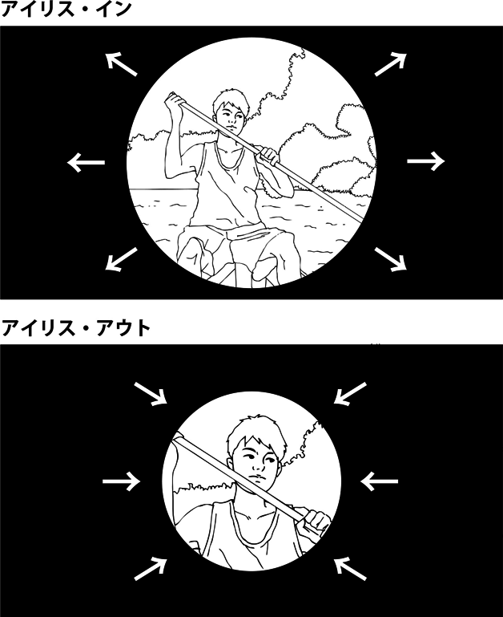
■1940年代後半から50年代にかけて、ハリウッドを襲った政治的活動。冷戦時代における共産主義への脅威を背景に、国家権力が米国内の共産主義者およびそのシンパを排除しようとした。活動の先鋒となった上院議員ジョセフ･マッカーシーの名を取って〈マッカーシーイズム／McCartyism〉と称されることが多い。〈ハリウッドテン〉と呼ばれる人々が最初の犠牲者。また映画業界内部でも共産主義者と見做された人物の〈ブラックリスト〉が作成され、リストに登録された人物はハリウッドでの職を失った。ハリウッドは赤狩り肯定者と犠牲者とに二分され、アメリカ映画史に大きな傷跡を残すことになる。
■赤狩り経緯......第二次大戦後の東西冷戦下に共産主義の脅威が叫ばれ、非米活動委員会が共和党主導のもとにコミュニストの活動調査を始めた。1947年10月、委員会は劇作家ブレヒトを含めた"疑わしき"映画人19人を聴聞会に召集、このうちブレヒトと10人の証言を求め、証言を拒否した10人がのちに実刑を受ける。こうした行為に反対する映画人は、思想･信条の自由を盾とする"修正第一条委員会"を結成し抗議活動を行なったが、アメリカ映画製作者協会と独立映画製作者協会は逆に、共産主義者とそのシンパの追放を決議した声明を発表する。この声明に基づきブラックリストが作られ、リストに載った人物はハリウッドでの仕事を失った。50年からは共和党上院議員のマッカーシーが先鋒となって赤狩りを行ない、51〜53年にかけて第二次聴聞会も再開。監督のジョセフ･ロージーやジュールズ･ダッシン、脚本のカール･フォアマンなどは赤狩りを逃れヨーロッパに避難する。エリア･カザンやエドワード･ドミトリク監督、俳優のリー･J･コッブは転向を表明し密告者と呼ばれた。俳優のラリー･パークスやジョン･ガーフィールドは映画界から消えた。ドルトン･トランボなど脚本家の一部は、偽名や代理人名義でひそかに仕事を続けた。マッカーシーが54年に失脚すると赤狩りは終焉を迎えるが、ブラックリストの影響は50年代の終わりまで続いた。60年代から匿名作家の実名公表が始まり、70年代に追放者の業界復帰やアカデミー賞特別賞の贈呈が行なわれ、ゆっくりと清算がなされるものの、赤狩りは今も大きな傷跡として映画史に名を残す。なお、米国の赤狩り行為自体は10〜20年代の"パーマー･レイド"など他の時代でも行なわれている。
■ハリウッドテン......47年に非米活動委員会の聴聞会に喚問され、証言を拒否し実刑を受けた10人のハリウッド映画人を指す。第一次聴聞会で証言台に立った11人のうち、亡命劇作家のベルナルト･ブレヒトは一部の質問に答えてドイツへ帰国するが、10人は証言を拒否して議会侮辱罪で告発され、49年に有罪判決、50年に実刑に服した。これに対しハリウッドは共産主義者の追放を決議した〈ウォルドーフ声明〉を発表、業界内で212人のブラックリストが作られたという。告発された10人とは、脚本のアルヴァ･ベッシー、レスター･コール、リング･ラードナー･ジュニア、ジョン･ハワード･ローソン、アルバート･マルツ、サミュエル･オーニッツ、ドルトン･トランボ、監督のハーバート･ビーバーマン、エドワード･ドミトリク、脚本･製作のエイドリアン･スコット。このうち、ドミトリクは出所後に転向を表明、かつての仲間の名を売って監督業に戻った。トランボ、ラードナー･ジュニアほか数名は赤狩り終焉ののちに業界復帰。また先の第一次聴聞会では招集された"疑わしき"19人と別に、製作のルイス･B･メイヤー、ジャック･L･ワーナー、監督のサム･ウッド、俳優のゲーリー･クーパー、ロナルド･レーガン、ロバート･テイラーなどが"友好的証人"として委員会寄りの証言を行ない、まさにハリウッドは赤狩りによって二分されていた。
■マッカーシーイズム......上院議員マッカーシーが赤狩りを活発化させたのは、ハリウッドテンが注目された47年聴聞会よりずっと後のこと。50年2月、国務省内で共産主義者が活動していると告発し一躍有名議員となったマッカーシーは、52年に政府機能審査小委員会委員長に就任して赤狩りの手を広げ、知識人、マスコミ、政府要人、陸軍なども同時に糾弾した。この劇的な活動により赤狩りはマッカーシーイズム（マッカーシズムの日本語表記は誤用）と称されることが多いが、映画界の赤狩り全体を指す語句としては正確ではない。マッカーシーの活動には虚偽の主張や中傷が多く、54年にジャーナリストのエドワード･R･マローのテレビ番組で批判され、やがて失脚していく一幕が「グッドナイト＆グッドラック」（05）で描かれている。
■ロバート･リッチ事件......ハリウッドテンのひとり、ドルトン･トランボはブラックリスト脚本家となってハリウッド･メジャーに使われなくなったが、製作者協会に属さない弱小プロダクションの一部がトランボに接触、偽名や代理人の名義を使って（格安で）脚本を書かせた。代理人として名前を貸す人物のことを〈フロント〉といい、「ウディ･アレンのザ･フロント」（76）がその顛末をシニカルに描いている。実例では、脚本家フィリップ･ヨーダンが何度もフロントの役割を務めたことで知られ、「戦場にかける橋」（57）の脚色ピエール･ブールも（実際は原作のみ）フロントだったと言われる。57年開催の第29回アカデミー賞授賞式においては、「黒い牡牛」（56）の原案賞ロバート･リッチが実在しないことが明らかになり、トランボの偽名だとわかるにつれブラックリスト体制も破綻していく。「ローマの休日」（53）でアカデミー賞原案賞を得たイアン･マクレラン･ハンターもトランボのフロントだったとのちに判明、60年になって「スパルタカス」と「栄光への脱出」の2作がトランボの実名を脚本家としてクレジットし、トランボは正式にハリウッドへの復帰を果たした。近年、脚本家ギルドは赤狩りで失われたクレジットを訂正する運動を進め、たとえば02年再公開の「ローマの休日」修復版の原案クレジットはトランボの名に差し替えられ、またオスカーも93年にトランボの遺族へ手渡されたという。
■チャップリンとカザンのアカデミー名誉賞......かねてより保守派から政治的反発を受けていたチャールズ･チャップリンは、「殺人狂時代」（47）の戦争批判もまた"反米的･容共的"とされ、赤狩りの対象となった。49年より幾度かの委員会の召喚命令を拒否、52年に「ライムライト」プレミア上映のため英国に向かった際、司法長官から帰国すれば監禁との通達を受け、スイスに移住した。72年、謝罪の意も含めて第44回アカデミー賞で名誉賞が贈られることになり、20年ぶりに帰国。授賞式では長いスタンディングオベーションで讃えられた。一方、元共産党員のエリア･カザンは、52年の非公開聴聞会で転向を表明、疑わしき映画･演劇人11名を委員会に内通した。さらに委員会の姿勢に沿う意見広告を自ら出し、「革命児サパタ」（52）、「綱渡りの男」（53）などの反共映画とされる作品を発表、「波止場」（54）でアカデミー賞監督賞を獲得しハリウッドで活躍していく。99年の第71回アカデミー賞においてカザンも名誉賞を贈られるが、事前に授与反対運動が起こり、授賞式当日も列席者の多くが拍手をしないなど不満の意を示したという。赤狩りでの転向･内通者はカザンだけではなかったが、カザンは後年まで"裏切者"の象徴であった。
■赤狩り映画......前述の作品のほか、赤狩りを題材とした映画に「真実の瞬間」（91）、「マジェスティック」（01）があり、「追憶」（73）でも物語の背景に置かれた。また、同じ転向･内通者の脚本家と組んだ「波止場」は自身の立場を主人公に重ねているとされ、「真昼の決闘」（52）や「ボディ･スナッチャー／恐怖の街」（56）なども赤狩り状況の暗喩とする意見がある。（山下慧）
■単純に〈アカデミー賞〉と言う場合は、アメリカ映画業界におけるひとつの映画賞を指す。〈映画芸術科学アカデミー〉が主催し、同会員である映画人の投票によって、前年度に公開された映画から優秀な作品･人物･技術等を各部門に分けて選出し、その最高者を表彰するもの。受賞者には〈オスカー〉と呼ばれる彫像が与えられることから、オスカーの語もアカデミー賞の別称となった。第一回の授賞式は1929年5月16日で、近年は2月末〜3月初頭の日曜日に授賞式が開催され、テレビ中継もされるのが慣例。製作業界に属さない評論家や一般人は選出に関わらず、あくまで業界の内輪で選ぶ賞ではあるが、作品のセールスや映画人のキャリアに大きな影響を及ぼし、マスコミもしばしば映画賞の頂点のように扱うなど、大きな権威を持つと考えられている。
■アカデミー賞の誕生......1920年代後半、繁栄を続けるハリウッドの撮影所はあらたに労働組合の活発化という問題を抱えていた。27年、MGMの製作者ルイス･B･メイヤーはその労組問題に先手を打つため、俳優･監督･脚本･技術者･製作者ら各部門のエリートを集めた会員制の協会を設立し、これに労働問題の調停にあたらせるという一種の御用組合をつくろうと提案した。表向きにはトップスターのダグラス･フェアバンクスとメアリー･ピックフォード夫妻が提案したことにし、"映画芸術および科学の質を向上させる、文化･教育および芸術の発展のために指導者間の協力を助成する"といった名目を掲げて映画人300人弱の総意を得、この業界団体〈映画芸術科学アカデミー〉が同年5月に発足する。初代会長はフェアバンクス。ここでフェアバンクスが"目立った業績に対して賞を与えよう"と発案し、28年7月になって映画賞の選出規約がアカデミーにおいてつくられた。表彰者には（のちにオスカーと呼ばれる）彫像が贈られることになり、その翌年から授与していく。第1回の授賞式は29年5月16日、ハリウッドのルーズベルトホテルで開かれた夕食会にて。選考の対象作は27年8月〜28年7月末までの一年間に公開された作品で、中央選定委員会の審査員だけが投票を行ない、三ヶ月前に受賞者が会報で発表されていた。マスコミも大きくとりあげることなく、作品賞･男優賞･女優賞･監督賞など12部門（＋特別賞）で表彰、式は4分22秒で終わったと伝えられる。
■映画芸術科学アカデミー......アメリカ映画業界に関連する映画人で結成された業界団体。原表記はThe Academy of Motion Picture Arts and Sciences。アカデミー賞の選考と授与を主催するほか、映画フィルムの規格など業界基準を選定し映画文化発展のための助成も行なっている。もともとは労働問題対策の御用組合として27年5月に創設、当初は映画会社製作者･俳優･監督･スタッフ･弁護士など会員36人の非営利団体だった。今日では会員数は6000人超、一部を除いてメンバーは公開しておらず（94％が白人で残る6％のうち黒人は2％、77％が男性、と報じた記事もある）、2013年現在の会長はシェリル･ブーン･アイザックス（広報）。会員は、俳優･プロデューサー･監督･脚本･撮影･音楽･美術･録音･編集･視覚効果･衣装デザイン･メイクアップ（ヘアスタイリスト含む）･キャスティングディレクター･ドキュメンタリー･短篇映画および長篇アニメーション･映画会社役員･広報の、いずれかの分科会に属する。会員となるには、映画芸術･科学において優れた業績をなしとげた人物が、まず分科会のメンバー2人以上の推薦を得て、分科会運営委員の承認･支持を受けたうえで、理事会から招待を受ける。またアカデミー賞ノミネートの場合も招待資格を得たことになる。アカデミー賞の選考はこうした会員のみで行なわれるのが通例。
■オスカー......受賞者に渡される副賞の彫像。「オスカーを獲得！」のようにアカデミー賞の同義語としても使われる。ただし、科学技術賞、アーヴィング･G･タルバーグ記念賞など特別賞の一部ではオスカーとは別の記念品を授与。34年3月、第6回授賞式の報道において、コラムニストのシドニー･スコルスキーが"オスカーを手中にした"と記事にし、やがてこの呼び名が一般化した。命名の由来は、事務局員が彫像を"オスカーおじさんそっくり"と称したというのが有力だが、今日でも確証は得られていない。
■授賞式の変遷......30年4月の第2回授賞式もやはり晩餐会の席上で行なわれたが、この時からラジオの実況が入り、徐々に賞の規定も改訂され、規模も大きくしていく。第3回から会員全員が投票することになり11月開催に変更、すなわち30年には第2回（4月開催＝28年8月〜29年7月対象）と第3回（11月開催＝29年8月〜30年7月対象）と一年に二度授賞式が行なわれた。第6回から対象期間を1月1日〜12月末に改め、33年中には授賞式を行なわず、34年3月に、第6回＝32年8月〜33年12月対象として、以後、対象期間と開催期が現在のように定着する。初期のうちはアカデミー設立の経緯を反映し、メイヤーなど映画会社権力者の意向が授賞を左右することがあったという。各業種の組合が結成された36年の第8回では、労働争議が飛び火してボイコット騒動･受賞拒否などが起き、現場の映画人はフェアな映画賞に改正させるべく努力を重ねていった。〈赤狩り〉の盛り上がった49年には、経営状況の悪化もあって授賞式に対するメジャー各社の資金援助打ち切りも告げられ、これまで通りの規模の継続が困難になる。これは53年の第25回で、テレビ中継に応じることで資金難を解消するが、結果的に映画会社の圧力から解放されアカデミー賞がより自立することになった、と取る見方もある。初のテレビ中継は記録的な視聴率を獲得し、アカデミー賞授賞式はまた新たな歴史を歩み始めた。
■部門賞......特別賞を除き、アカデミー会員の投票によって選ばれる部門賞は、2013年度現在で全24部門。作品、監督、主演男優、主演女優、助演男優、助演女優、（オリジナル）脚本、脚色、撮影、作曲、歌曲、編集、美術、衣装デザイン、音響（録音）、音響編集、視覚効果、メイクアップ、短篇映画、短篇アニメ、長篇アニメ、短篇ドキュメンタリー映画、長篇ドキュメンタリー映画、外国語映画。まず各部門の分科会会員で（俳優の場合は主演･助演、男優･女優のすべて）3〜5のノミネート対象を選定し、のちに6000人以上の全会員の総投票によって受賞者を決定する。ただし作品賞は当初から全会員が候補作を選定、第82回から10作品までのノミネートとなり（初期にも10作候補の時期があった）、製作者3人以内がオスカーを受け取る。またアニメ賞では"作品全般における主要なクリエイター"の上限2名が表彰され、該当する製作者ないし監督がオスカーを得る。
■選考の対象作......2013年度現在、ノミネートの対象作は、授賞式前年の1〜12月に、ロサンゼルス地区の劇場で、連続7日間以上、有料で商業公開した作品に限られる。メディアは35ミリもしくは70ミリのフィルム作品、およびデジタルシネマ。短篇部門を除き上映時間40分以上とする。これらの条件を満たせば国籍は問わないが、ロサンゼルスの上映以前に米国内でテレビ･ビデオ･ネット等で公開されたものは対象外となる。
■外国語映画賞は別扱い......外国語映画賞は他部門と異なり、通常の選考過程を経ずに、米国外で製作された非英語作品の中から選出される。選考の対象となるのは各国で1作品のみ、まずその国で前年10月〜当年9月に商業公開された作品より、その国の映画製作者の組織（日本の場合は日本映画製作者連盟）が推薦作1本を決定し、例年で80数作品がアカデミーにエントリーされる。そこからアカデミーの選考委員会がノミネートの5本を選出。続いて5本の上映会が行なわれ、5本すべてを鑑賞した会員だけが投票し受賞作が決定される。したがって予備選考･本選ともに数少ない選考者によって選ばれる場合が多く、他部門に比べて偏りが出やすいと言われる。なお、予備選考で落選した外国映画でも、後に米国で一般公開されて前述の条件を満たし、新たに他部門でノミネートされた例もある。当部門は以前、特別賞もしくは名誉賞として正式部門とは別に扱われていたが、57年開催の第29回から部門賞に仲間入りした。オスカーは受賞作の監督が受け取る。
■特別賞......アカデミー賞では部門賞とは別に、表彰に値する功績のあった者に対し、その功績に応じた特別賞を贈与することがある。科学技術賞、技術達成賞、ゴードン･E･ソーヤー賞（技術者）、特別業績賞、アーヴィング･G･タルバーグ賞（製作者）、ジーン･ハーショルト友愛賞（友愛的貢献者）、名誉賞などがあり、該当者がある年のみに理事会が選出し、授賞式とは別に発表する。
■アカデミー賞の最多記録
最多受賞作：14部門候補の「タイタニック」（97）、12部門候補の「ベン･ハー」（59）、11部門候補の「ロード･オブ･ザ･リング 王の帰還」（03）の3作が11部門受賞で最多。最多ノミネートは14部門の2作で、「タイタニック」と6部門受賞の「イヴの総て」（50）。
最多受賞者：ウォルト･ディズニー。32年から69年の間に様々な部門で64回候補となり、特別賞4回を含め26回受賞。
最多受賞監督：ジョン･フォード。「男の敵」（35）、「怒りの葡萄」（40）、「わが谷は緑なりき」（41）、「静かなる男」（52）の4回。
最多受賞男優：ダニエル･デイ＝ルイスとジャック･ニコルソンとウォルター･ブレナンの3回。ルイスは「マイ･レフトフット」（89）、「ゼア･ウィル･ビー･ブラッド」（07）、「リンカーン」（12）の主演。ニコルソンは「カッコーの巣の上で」（75）の主演、「愛と追憶の日々」（83）の助演、「恋愛小説家」（97）の主演。ブレナンは「大自然の凱歌」（36）、「Kentucky」（38）、「西部の男」（40）の助演。
最多受賞女優：キャサリン･ヘプバーンの4回。「勝利の朝」（33）、「招かれざる客」（67）、「冬のライオン」（68）、「黄昏」（81）の主演。
最多ノミネート俳優：男優はジャック･ニコルソンの12回、女優はメリル･ストリープの18回（3回受賞）。
■アカデミー賞を受賞した日本人･日本映画
「羅生門」：第24回名誉賞
「地獄門」：第27回名誉賞
和田三造：第27回「地獄門」衣装デザイン
「宮本武蔵」：第28回名誉賞
ミヨシ･梅木：第30回「サヨナラ」助演女優
ワダエミ：第58回「乱」衣装デザイン
坂本龍一：第60回「ラストエンペラー」作曲
黒澤明：第62回名誉賞
石岡瑛子：第65回「ドラキュラ」衣装デザイン
「パーソナルズ」：第71回短篇ドキュメンタリー映画（井比恵子監督）
「千と千尋の神隠し」：第75回長篇アニメ（宮崎駿監督）
「おくりびと」：第81回外国語映画賞
「つみきのいえ」：第81回短篇アニメ（加藤久仁生監督）
註：第48回外国語映画賞「デルス･ウザーラ」（黒澤明監督）はソ連映画の受賞であり、日本人の受賞に数えていない。
■各国のアカデミー賞......アメリカ以外でもその国の映画業界が主催する映画賞が存在するが、アカデミー賞の名称は商標であり、本家の許認可を得ないとこの名称を用いることはできない（日本アカデミー賞などは認定されている）。各国でのアカデミー賞に相当するものに、英国アカデミー賞、セザール賞（フランス）、オーストラリア･アカデミー賞、ドナテッロ賞（イタリア）、ジニー賞（カナダ）、金像奨（香港）などがある。
＊参考「日本アカデミー賞」
（山下慧）
アクション映画［action film（英）］
■映画ジャンル。格闘、追跡、身体的な特殊技能、乗り物、銃撃や爆発といった描写において暴力性やスピード感が強調され、さらにこれらの場面が主体になっているとみなされる映画を漠然と指すことが多く、厳密な定義は難しい。西部劇、犯罪映画、冒険活劇、ギャング映画、スパイ映画、戦争映画、格闘技もの、時代劇、やくざ映画などのジャンル映画を総合して称する場合もあれば、"SFアクション""カーアクション"のように各ジャンルや別単語と組み合わせて映画の性格を示す場合もある。
■傾向としては、個人もしくは小集団の主人公がひとつの指針に沿ってアクションを行なう過程を追っていき、そのアクション自体が観客にカタルシスをもたらす娯楽映画に対して用いる。最初の西部劇でもある1903年の「大列車強盗」をアクション映画の元祖とするのが通例。ハリウッドも日本映画も、伝統的に時代ごとに流行するアクション映画を持ち、それぞれの時代でアクションスターを生んできたが、身体性の評価に対して演技力は劣るとみなす傾向もあった。
アクターズ･スタジオ［The Actors Studio（英）］
■アメリカの俳優養成機関。1947年に劇団グループ･シアター出身者であるエリア･カザン、チェリル･クロフォード、ロバート･ルイスによって設立された。
■49年にリー･ストラスバーグが参加、技術より内面性を重視し"役を演ずるのではなく役を生きる"というスタニスラフスキー理論に基づくメソッド演技法を標榜して多くの名優を育てた。出身者に、マーロン･ブランド、ジェームス･ディーン、ダスティン･ホフマン、マリリン･モンロー、メリル･ストリープなど。同出身者であるロバート･デ･ニーロの、肉体まで改造する徹底的な役作りは〈デ･ニーロ･アプローチ〉と呼ばれる。近年では、履修者向けに主催する著名映画人インタビューがテレビ放映され認知度を上げている。
アスペクト比→「スクリーン･サイズ［aspect ratio（英）］」
アニメーション［animation（英）］
■静止した画像を連続映写することで動いているように見せる技術、およびその技術によって作られた映像。動画、漫画映画と呼ばれることもある。アニメーションの語はラテン語のanima（アニマ、霊魂）に由来し、生命のないものに命を与え動かす、という意味を持つ。一コマずつ撮影するその素材によって、人形アニメ、粘土アニメ、切り紙アニメその他に分類されるが、日本もハリウッドも、セルと呼ばれる透明シートに少しずつ異なった画を描きパラパラ漫画の要領で絵を動かす〈セルアニメーション〉を主流としてきた。近年のハリウッドでは、コンピュータ上で画像を生成し動かす〈CGアニメーション〉が主流に。
■商業映画にみられる物語性や現実的描写を排し、映像やリズムが純粋に抱え持つ要素を追究、新しい芸術表現の可能性を探求する映画。
■アヴァンギャルド（avant-garde）の語はもともと軍隊用語の前衛部隊を意味し、転じて、新しい芸術運動における開拓者的な役割を果たす芸術家、およびその芸術活動を指した。映画における狭義では、1920年代を中心にヨーロッパ諸国で興った表現主義、絶対主義、未来派、純粋映画、ロシア･アヴァンギャルドといった映画芸術運動（およびその作品）を意味し、特に24〜30年頃、フランスで作られた「幕間」（24）や「アンダルシアの犬」（28）など非商業主義の短篇芸術映画群を指す。日本でもその影響を受け、〈ドイツ表現主義〉に倣った日本初の商業用前衛映画「狂った一頁」（26）などが作られた。その後、40年代末から、映画美学の前衛に立ち映画芸術を前進させる作品はすべてアヴァンギャルドであるとする見解が広まっていき、〈アンダーグラウンド映画〉をはじめ実験的映画全般を前衛映画と呼びならわしている。
アバン･タイトル
■メインタイトルやオープニングクレジットが出る前に語られるドラマ部分、または物語の本筋に入る前のプロローグ的な場面。
アフレコ
■アフター･レコーディングの略語（和製英語）で、でき上がった音声抜きの映像に合わせて俳優が台詞を吹きこむ作業。外国映画の吹き替えやアニメーションなど、別の演技者が台詞を当てる場合は〈アテレコ〉と呼ぶ。
アメコミ映画
■アメリカン･コミックスと称される米国産の児童･青年向け漫画を原作とする映画。主にスーパーヒーローを主人公とした娯楽活劇に対して用いられ、近年にひとつのサブジャンルとなりつつある。
■アメコミの主流はスーパーヒーローものであり、1936年には『フラッシュ･ゴードン』を映画化、以後脈々とアメコミ映画が米国で作られている。30〜40年代はおよそが子供向けの〈連続活劇〉として作られ、『バットマン』も『スーパーマン』もまず40年代に連続活劇の一素材として映画化された。50年代にテレビが普及するとアメコミ映画もテレビ番組と化し一時壊滅。78年の「スーパーマン」の成功以後、80〜90年代は次々と大作映画化され、2002年の「スパイダーマン」大ヒットあたりからサブジャンルのように扱われ始めた。（雑誌販売のアメコミと異なり）単行本形式で、スーパーヒーローものに限定せず、物語性や作家性が強い大人向けのコミック本は、グラフィック･ノベルと呼ばれるが、これを原作とした「ロード･トゥ･パーディション」「シン･シティ」などもアメコミ映画とされることが多い。
アメリカ映画協会（アメリカン･フィルム･インスティテュート）［AFI／American Film Institute（英）］
■アメリカにおける映画芸術の保護と振興を目的とした非営利機関。1967年設立。主にアメリカ芸術基金から資金を得て、作品を保存し、研究･教育活動を行ない、功労賞も授与する。その養成機関ではデヴィッド･リンチ、テレンス･マリック、ダーレン･アロノフスキー、エドワード･ズウィックなどが学んだ。また98年からは『AFIアメリカ映画100年』と称するベスト100のリストを選出、さまざまなテーマに沿ったアメリカ映画のベスト100を各年で発表している。なお、別項の〈MPAA〉をアメリカ映画協会と訳出する文献も多い。
アメリカ映画業協会［MPAA／Motion Picture Association of America（英）］
■アメリカのメジャー会社によって構成される業界団体で、アメリカ映画協会と訳出される場合が多い。アメリカ映画製作配給業者協会（MPPDA）を前身とし、特に国産映画の〈レイティング〉や著作権保護の活動で知られている。1920年代初頭に業界内で頻発したスキャンダル事件の対応･収拾を目的に、22年にMPPDAを設立。まもなくMPPDAは外部から検閲を受けるようになるのを避け、30年に映画製作倫理規定を制定して自主規制に乗り出した。この規定はヘイズ･コードとしても知られ、MPPDAは45年にMPAAに改組、倫理規定は68年にレイティング･システムに取って代わられ今日に至っている。
＊参考「プロダクション･コード［motion picture production code（英）］」
アメリカの夜［day for night（英）］
■昼間に夜間の場面を撮る撮影技法、またはその擬似夜景のこと。レンズにフィルターをかけて夜間のように暗く見える画面を作る。暗く露光したり天幕で暗くする技法も含むことがある。
■モノクロ時代に開発され英語では〈day for night〉と呼ばれたが、フランスではハリウッド映画で多用されたことから〈アメリカの夜／nuit ame´ricaine〉と称された。フランソワ･トリュフォーの「アメリカの夜」（73）はこの業界用語をタイトルとしたもので、日本でもその直訳の邦題が映画用語としてday for nightに代わり広まった。今日ではデジタル技術を用い、ポスト･プロダクションで昼間の映像を夜間場面に加工する例が増えている。
■1960年代末から70年代のハリウッド映画において、旧来の古典的な製作体制および表現方法に依拠せず、新しい印象を感じさせるある程度共通した傾向をもって作られた映画作品群を指す。ただし軸となる会社や製作集団、作家の特定世代や特定ジャンルがあるわけではなく、さらに統一した理論や映画運動を掲げるものでもないため、今もって明確に定義付けされていない。「卒業」「俺たちに明日はない」（67）、「明日に向って撃て！」「イージー･ライダー」「真夜中のカーボーイ」（69）、「ファイブ･イージー･ピーセス」（70）、「バニシング･ポイント」（71）などがしばしば代表作として扱われるが、以後の作品を含めこれらを〈アメリカン･ニューシネマ〉の用語で総称するのは日本のみ。アメリカではこの時期の状況に対して〈ハリウッド･ルネッサンス〉の語を用いることがあり、以後の時代を漠然と〈ニュー･ハリウッド〉と称する。
■命名......1967年12月8日号の『タイム』誌は、表紙に「俺たちに明日はない」の写真と『ザ･ニュー･シネマ：暴力...セックス...芸術...』の見出しを掲げ、『映画における自由がもたらす衝撃』という記事で同映画を大きく扱った。その記事では「俺たちに明日はない」のほかに同年の「女狐」「殺しの分け前 ポイント･ブランク」などを"新しさを感じさせる映画"だとし、近年のヨーロッパ映画を含め、従来のハリウッド映画にはない特徴を示しつつ、これらの作品が登場するに至ったハリウッドの状況を整理する。ニューシネマの語は文字通りの"新しい映画"の意であり、映画運動等の呼称としては扱っていない。この記事を承け、『キネマ旬報』誌は68年4月上旬号で『アメリカン･ニュー･シネマとは何か？』の特集記事を掲載。同社70年6月発行の『世界映画事件人物事典』には『ニュー･シネマの先兵たち』というコラムが載り、72年4月発行『アメリカ映画作品全集』では「俺たちに明日はない」「明日に向って撃て！」「イージー･ライダー」「ファイブ･イージー･ピーセス」の各作品解説に（アメリカン）ニューシネマの語を用いるなど、日本では同時代のうちにニューシネマが映画用語として広められていった。
■ニューシネマ前史：ハリウッドの疲弊......40年代末に興行部門が切り離されて以来、経済的基盤を喪失したメジャー･スタジオは、徐々に外部の独立系製作会社の作品を受け入れ配給する体制に依存していく。加えて50年代ブラック･リスト体制による人材の喪失、テレビの登場、60年代のスタジオ主導による大作主義の失敗などもあり、ハリウッドは〈スタジオ･システム〉完全崩壊の危機を迎えていた。大手映画会社は次々と外部巨大産業に吸収･合併される一方で、製作陣首脳部も完全に世代交代がなされ、新感覚の若いプロデューサーが指揮するなど、ハリウッドでは旧来と異なる作品を提供する下地ができあがる。
■ニューシネマ前史：作家主義の機運......ヌーヴェル･ヴァーグの登場および作家主義の台頭はアメリカ映画の作り手にも大きな影響を与えた。さらにイギリス･フリーシネマ以後の新しい波、ポーランド派、日本のヌーヴェル･ヴァーグ、イタリア映画界の新風、ニュー･ジャーマン･シネマの黎明など60年代は世界的に作家主導による映画の新しい波が沸き起こっている。アメリカでもアングラ映画から出発したオフ･ハリウッドの作家映画や、ダイレクト･シネマなど新しいドキュメンタリーの手法が注目された。同時に、従来から海外･異業種の監督を取り込んできたハリウッドではすでに、ニューヨークで活躍していた演劇･テレビ出身の監督が60年代に映画デビューを果たしている（ニューシネマの監督には舞台･テレビ出身者も多い）。加えて、30年代末〜40年代に生まれ大学･映画学校で映画を学んだ新世代が自主映画･独立系製作会社で映画作りに関わり始め、作家主導による新しい映画作りの機運が浸透していた。
■ニューシネマ前史：低予算映画とコーマン......大手とは別系統のドライブイン･シアターや三流映画館の普及は、それらをマーケットとした独立製作の低予算映画や〈エクスプロイテーション〉の興隆を促し、ウェルメイドなハリウッド映画とは異なるキワモノ的な表現を浸透させた。また、撮影機材の一式をトラックに詰め込んだ〈シネ･モービル〉という製作方式が60年代より用いられ始め、スタジオ（セット）を使わない長期ロケーションによる映画制作に大きく貢献したという。低予算映画の中では特に、独立製作者･監督のロジャー･コーマンが低予算のジャンル映画をヒットさせつつ、若手の新世代映画人に多くの機会を与え、独立製作によるハリウッド進出の足掛かりとさせた。
■ニューシネマ前史：プロダクション･コード撤廃......ハリウッド映画の非倫理的描写を自主規制するプロダクション･コードは、66年に規制緩和、68年には〈レイティング･システム〉に移行する。これにより暴力や性的描写が大手の映画でも（年齢制限を受けつつ）容易に表現できるようになった。
■ニューシネマの特徴......前述の映画界の状況と、ヴェトナム戦争に疲弊し体制への不満を募らせつつカウンター･カルチャーが浸透した同時代社会の状況とを承けて作られたニューシネマ（とされる）諸作には、ある程度の共通した特徴がみられる。まず低予算による製作と、旧来のウェルメイドなスター主義作品とは異なった新しい路線によるヒットがスタジオ側に期待されたうえで、作り手の作りたい映画を独立系プロデューサーや作家主導で制作。ロケ撮影を主体に、アウトローやアンチ･ヒーローを主人公に据え、ジャンル映画でありながら定型を解体･パロディ化した形態で、時代設定を問わず同時代社会を強く反映。多くは反体制を志向し、アンチ･ハッピーエンドの物語を、既成の美男美女のスターを使わず、リアリズム表現を基本に、ヌーヴェル･ヴァーグ以降の新しい映画文法やズームやスローモーションなどを多用、時に暴力の直接的な描写や不道徳とされた性的関係を扱いつつ、既成のロックやポピュラーミュージックを映画音楽へ導入、特に若者世代に支持を受け若年層を映画観客の新たな主流とした。多くは外部制作ながらメジャー･スタジオの配給作でこうした映画が現われたことが画期的であり、同傾向の作品でもエクスプロイテーションなど独立系の配給作はニューシネマと区別される。
■ニューシネマの終焉......「俺たちに明日はない」で衝撃を与えアカデミー賞でも10部門ノミネート･2部門受賞を果たしたのち、「イージー･ライダー」が大ヒット、「真夜中のカーボーイ」がアカデミー作品賞を受賞し、ニューシネマはハリウッド映画のひとつの潮流として認知された。ニューシネマの終焉についてはやはり明確にされておらず、当初はベストセラー原作･スター主演の「ゴッドファーザー」（72）や「ポセイドン･アドベンチャー」（73）がヒットしたことで従来の主流の健在が示され、ニューシネマは70年代初頭までの一時の流行とする見解もあった。ニュー･ハリウッドの概念を視野に入れた現代では、ニューシネマの系譜にある作品でメジャー映画の出発を飾った新世代が、「ジョーズ」（75）や「ロッキー」（76）、「スター･ウォーズ」（77）の大ヒットにより古典的ジャンルの再生や大作主義の復権をなし、ハリウッドが〈ブロックバスター〉の時代に移行したことでニューシネマの終焉とする見方が強い。（山下慧）
アラン･スミシー［Alan Smithee（英）］
■アメリカ映画において、全米監督ギルド（DGA）に属する監督が、フィルムに自分の名前をクレジットしたくない場合に使われた偽名。
■DGAの規定では、映画作品には必ず監督の名前をクレジットしなければならないが、製作者により意図に沿わない編集を施されるなど、監督が自分の作品として認めたくない場合は、DGAに提訴し、審議によって許可されたうえで、偽名をクレジットすることができる。この時に用いられるのがアラン･スミシーまたはアレン･スミシーという実在しない人物の名前。1968年より映画に登場するが、初めてこの方式が用いられたのは67年撮影、69年公開の「ガンファイターの最後」であった。なお、「クライシス2050」アメリカ公開版や「ヒート」テレビ放映版のように、編集バージョン違いだけにアラン･スミシーを用いる例もある。98年に「アラン･スミシー･フィルム」という内幕ものの劇映画が作られその名が広く知られたこと、偽名使用の規定に違反した例が出たことなどから、2000年以降はアラン･スミシーの使用を公式には取りやめ、「スーパーノヴァ」（00）の"トーマス･リー"のように、その時々に応じて偽名が使われるようになった。
アルゴ･プロジェクト
■1990年代、日本映画の良作を数多く送り出した映画組織。製作･配給･興行までを自ら手がけることで大手映画会社の束縛から自由になり、自分たちの作りたい映画を作るため、6人のプロデューサーがそれぞれの制作会社とともに集った意欲的な映画制作･公開のシステムであった。参加会社／プロデューサーは、キティ･フィルム／伊地智啓、シネマハウト／佐々木史朗、ディレクターズ･カンパニー／宮坂進、ニュー･センチュリー･プロデューサーズ／岡田裕、プルミエ･インターナショナル／増田久雄、メリエス／山田耕大。映画の製作パートナーはサントリーで、日本テレビが放映権、ビデオチャンプがビデオ化権の分を出資、専用上映館のシネマアルゴ新宿とシネマアルゴ梅田を維持した。90年の「櫻の園」はキネマ旬報ベスト･テン第一位を獲得するなど良作を多く発表したが、興行的にすぐれず、93年にアルゴ･ピクチャーズと改名、システムを解消したのちに独立系の製作配給会社となった。
アンダーグラウンド映画（アングラ映画）［underground film（英）］
■一般の映画館での上映は考慮せず、映画作法の慣例から離れて作られた実験映画や個人映画･独立映画、または非合法に作られた映画の総称。映画史を語るうえでこの語を用いる場合、1950年代末から60年代のアメリカにおいて、ハリウッド資本の外側で作られた前衛映画を指すことが多い。この意味合いでは〈アメリカン･アヴァンギャルド〉または〈ニュー･アメリカン･シネマ〉という名称も使われる。
■1930年代末からニューヨークでヨーロッパのアヴァンギャルド映画が紹介され始め、40年代になると16ミリ･カメラを用い前衛映画や個人映画を撮る作家が現われ始めた。55年にジョナス･メカスが創刊した『フィルム･カルチャー』誌はこれら米国の実験的作品を論評、59年には"その生涯の大半を地下的存在として送る映画"と定義付けし、アンダーグラウンド（略称アングラ）映画の語が広まる。アングラ映画はメカスやスタン･ブラッケージ、ケネス･アンガー、アンディ･ウォーホルなどの実験映画作家を生み、ジョン･カサヴェテスの16ミリ･個人制作「アメリカの影」（59）を高く評価した。60年、メカスらのニューヨークを中心に活動する前衛的映画人23人は〈ニュー･アメリカン･シネマ･グループ〉を結成、ハリウッド映画に対抗した個人的表現としての映画作りを宣言する（カサヴェテスの参加は非公式とされ、まもなく決裂）。彼らは60年代に意欲的なアングラ映画を撮り、〈オフ･ハリウッド派〉または〈ニューヨーク派〉とも呼ばれた。
い
イーリング（イーリング撮影所／イーリング･コメディ）［Ealing（英）］
■イーリング･スタジオは、イギリス･ロンドンにある古参の撮影所。公称では前身の撮影スタジオが1902年開設となっているが、映画会社ATPの元でイーリング･スタジオとして活動を始めたのが31年。38年、ヒッチコックの初期作品やフラハティのドキュメンタリー映画「アラン」を製作したマイケル･バルコンが責任者に就任して自社製作を開始、40年代にかけてドキュメンタリーおよびドキュメンタリー的手法を採った劇映画を多数製作する。このドキュメンタリー的手法による劇映画の作風は日本で〈バルコン･タッチ〉と称された。44年には〈ランク･オーガニゼーション〉の傘下に入り、戦後の47年からドキュメンタリー･タッチに基づくイギリス流ユーモア感覚に満ちた喜劇映画を連作、これら一群は〈イーリング･コメディ〉と呼ばれる。ジャンルとしてのイーリング･コメディ第一作は49年の「ピムリコへの旅券」とされ、代表作に「カインド･ハート（別題：優しい心と宝冠）」（49）、「ラベンダー･ヒル･モブ」「白衣の男（別題：白服の男）」（51）、「マダムと泥棒」（55）など。特に「マダムと泥棒」の監督アレクサンダー･マッケンドリックや主演アレック･ギネスはその代表的監督･俳優とされる。ギネスは舞台や映画で多彩な役柄をこなし、一人8役を務めた喜劇映画もあることから"百の顔を持つ男"の異名をとった。イーリング･スタジオは55年にBBCに売却され、その黄金期を終える。バルコン自身はMGMと契約し58年までイーリング･コメディを作り続けた。
イタリアン･ネオリアリズモ→「ネオレアリズモ（イタリアン･リアリズム）［neorealismo（伊）］」
一千万映画→「日本アートシアターギルド（ATG）／一千万映画」
移動撮影（ドリー／ドリーショット／トラッキングショット／クレーンショット）
■カメラを移動車やレールに乗せて移動させながら撮影したショットを〈ドリーショット〉と呼ぶ。カメラ（およびカメラマン）を乗せて動く台車が〈ドリー〉で、レールを敷きその上にドリーを走らせて撮影する場合は〈トラッキングショット〉と呼んだが、今日では特に区別しなくなっている。クレーンを用いて地表を離れ、上下左右に動かす撮影は〈クレーンショット〉。三脚･ドリー･クレーン･レール等を担当するスタッフを日本では〈特機〉、米国では〈グリップ〉と呼ぶ。
イマジナリー･ライン（アクション軸／180度規則／180度システム）
■撮影＝編集上の基本的法則をあらわす語。たとえば向かい合って会話する二人を撮る場合、二人の目を結ぶ直線を想像し、その線よりこちら側など、一方の側だけにカメラを置いて撮影すると、のちにそれぞれのアップショットのみを繋いで編集しても、向かい合って会話しているように見える。この想像上の直線を〈イマジナリー･ライン〉または〈アクション軸〉と呼び、こうした撮影上のルールを〈180度規則／180 degree rule〉〈180度システム〉と呼ぶ。180度規則は観客を混乱させないための撮影上の原則に等しいが、小津安二郎をはじめ、あえてこの法則に従わず個々の映像文法を確立させている例も多い。
●イマジナリー･ライン
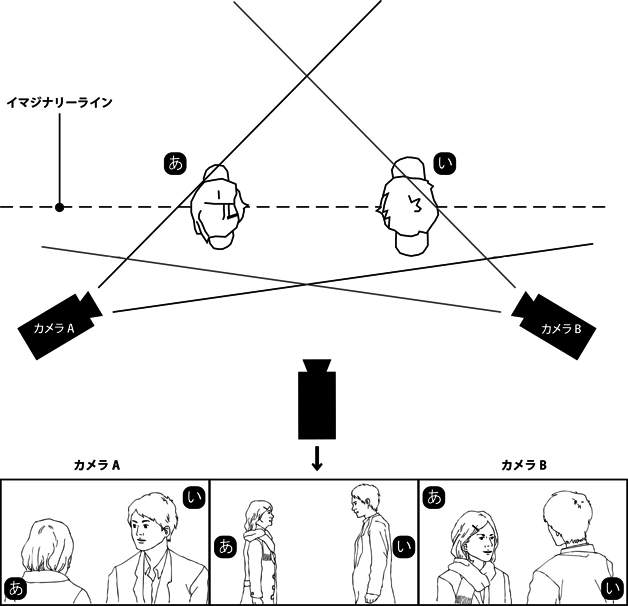
インサート
■編集上の基本的な技法。ひとつのシークェンスの途中で、内容を補足するため、あるいは異なった意味を与えるため、短い映像（ショット）を挿入すること。
インタータイトル［intertitle（英）］
■挿入字幕。サイレント映画における、物語･場面の状況説明や人物の台詞などを表示した字幕の画面。トーキー以後でも時折用いられる。映像の上に重ねて表示する簡潔な字幕は〈スーパー〉や〈キャプション〉と呼ばれる。
インターミッション［intermission（英）］
■上映の方式。上映時間が長尺の作品において、途中休憩もしくは前編･後編に区切るために5〜10分程度の休止時間を設けることがあり、この休止時間を〈インターミッション〉と呼んだ。かつての3時間を超える70ミリ大作映画やインド映画（マサラ･ムービー）に多くみられたが、日本では休止時間を無視して連続上映する例も多かった。70ミリ大作では開巻部分に、客の入場時間用に数分の〈オーバーチュア＝序曲／overture〉を付ける作品も多く、これらの時間帯では主に風景映像と音楽とを映写している。この序曲の型式は、初期の〈ロードショー〉上映において、絢爛豪華なムービー･パレス（映画宮殿）でプレミア公開をする際に、観客の入退場時間にあわせて劇場のオーケストラが音楽を奏でていた型式を模したものであった。
インディペンデント／インディーズ
■アメリカや日本など大手映画会社が業界の主体を成している場合の、大手系列下に属さない独立系の映画製作会社･独立プロダクション、もしくは自主制作の小組織。下請けの制作会社でつくり大手で配給する場合など、どこから"独立系"とみなすかは時代や状況によって様々であり、現代では基本的にMPAAや映連など大手の映画製作者団体に属さない製作会社が"独立プロ"とみなされる。特にアメリカでは、テレビ放映やビデオ化など二次使用の販売経路を得て80年代以降に群出した、大手の配給経路に頼らない小規模独立プロに対して〈インディーズ〉の呼称を用いる傾向にあり、一方、日本の一般誌などマスコミで〈インディーズ〉と呼ぶ場合、個人資本または小団体による自主制作映画であることが多い。
＊参考「独立プロ」
インド映画→「マサラ･ムービー」
イントレ
■撮影現場で使用される機材の一種。建築現場でもみられるような、鉄パイプなどで組み上げられた足場を指す。「イントレランス」（16）の巨大セットでの撮影時、ライトやカメラを高所に設置するためにこの足場を多用したことから、映画タイトルの略語が用語に転じた。
う
ウーファ［UFA／Universum Film Aktien Gesellschaft（独）］
■いわゆるワイマール共和政時代から第二次大戦時にかけて活動したドイツの大手映画会社。1917年、政府と銀行、軍需系統の企業の支援により、戦争プロパガンダのため、小さな映画会社数社を統合して創設された。第一次大戦後に民営化、「カリガリ博士」（19）を製作したエーリッヒ･ポマーが23年に製作主任に就任し、ドイツ最大の映画会社として表現主義映画やトーキー初期の重要作、〈シネオペレッタ〉と呼ばれる音楽映画などを多数製作した。しかし「メトロポリス」（26）への過剰投資やハリウッドへの人材流出が祟り経営が悪化、資本を移したのち37年にはまた政府直轄となり、ヒットラー政権下のプロパガンダ映画を製作、第二次大戦終戦の45年に解体された。ウーファ黄金期の代表作を撮った監督にエルンスト･ルビッチ、フリッツ･ラング、F･W･ムルナウ、G･W･パブスト、ジョゼフ･フォン･スタンバーグらがいる。
■セックス･シンボルとなった女優像の代名詞のひとつ。妖婦、特に、強烈な性的魅力で男性を誘惑し精力･資産まで吸い取る吸血鬼のような女の意。ハリウッド最初の〈セックス･シンボル〉とも言われるセダ･バラが「愚者ありき」（15）に出演した際、彼女を売り出す俗称としてヴァンパイアを略したヴァンプの語を使用、以後、同種の妖婦役を演ずる女優も〈ヴァンプ／ヴァンプ女優〉と称されるようになった。
■1910年代、20世紀フォックス社がキップリングの詩『ヴァンパイア』に基づく戯曲『愚者ありき』を映画化する際、ヒロインの妖婦役に無名の女優セダ･バラを起用、プロフィールに虚飾を施し官能的な宣伝用写真と共にヴァンプのキャッチコピーで売り出した。15年公開の同名映画は大ヒット、バラは続けてカルメン、クレオパトラ、サロメなど数々の妖婦役を演じ、フォックス社に多大な収益をもたらす。ハリウッドにはバラ同様に妖しきセックス･アピールを売り物とする男女優が増え、ニタ･ナルディ、ポーラ･ネグリ、バーバラ･ラ･マーなどの女優もヴァンプと称された。なお、ヴァンプの原型は、1900〜10年代のデンマーク映画のうち、社交界の陰謀や姦通を題材とし、世界に先駆けキス場面を劇映画に定着させたメロドラマ群にあるとされる。特に「深淵」（10）の人気でデンマーク初（世界初）の国際的スターとなったアスタ･ニールセンがその代表格。また、欧米ではヴァンプは〈ファム･ファタール〉の初期型として語られることが多い。
ヴェネチア国際映画祭→「映画祭（国際映画祭）」
■エジソンが発明した〈キネトスコープ〉やリュミエールの〈シネマトグラフ〉の名はギリシャ語のキネマ（kinematos＝運動）にちなんだもの、またエジソン〈ヴァイタスコープ〉はラテン語のウィタ（vita＝生命）にちなむ。これら最初期の映画機器が世界に伝播することで映画を指す言葉が各国それぞれに考案･定着されていく。ただし英語では回転覗き絵に由来する〈ムーヴィング･ピクチャー〉の語が映画誕生以前からあった。撮影･映写フィルムから転じた〈フィルム／film〉の名称は世界一般で使用され、他の主な呼び名としては、英米で〈モーション･ピクチャー／motion picture〉〈ムーヴィー／movie〉〈シネマ／cinema〉、仏で〈シネマトグラフ／cinematographe〉〈シネマ〉〈シネ／cine〉、伊で〈チネマトグラフィア／cinematografica〉〈チネマ／cinema〉〈チネ／cine〉、独および露で〈キノ／kino〉、中国で〈電影〉、西班牙で〈ペリクラ／pelicula〉など。
■日本では1896年、キネトスコープが神戸に輸入された際に新聞記事で、幻灯機に対して用いた〈活動写真〉および〈写真活動機〉の語が使われた。続くシネマトグラフは〈自動写真･自動幻画〉と称したが、ヴァイタグラフがやはり活動写真と命名され、明治･大正期に活動写真の語が広まった。初の映画会社の名も日活＝日本活動写真株式会社である。俗に映画は〈カツドウ〉、映画人は〈活動屋〉と呼ばれ、これらは昭和期でも懐旧的に用いられる。1910年代末には〈純映画劇運動〉が沸き起こり、旧来の活動写真とは一線を画す意図で〈映画〉の語が使われた。同様の主旨で〈キネマ〉も用いられ、松竹キネマや帝国キネマなどの社名や、『キネマ旬報』誌の創刊（19年）等によって普及したものの、戦時下における敵性語の規制により社名･誌名からキネマの語が消え、東宝映画や大映（大日本映画株式会社）の創設も相まって〈映画〉に絞り込まれていった。
■通常は年に一度、特定期間にコンペティション形式もしくは特集形式で様々な映画作品を集め、上映･表彰等を行なう映画イベント。未公開作品による商品見本市の性格を兼ねることが多い。主催者･開催目的や規模も様々だが、〈国際映画製作者連盟／FIAPF〉の規約に則り公認を受けて開催されるものだけが公式に〈国際映画祭〉として認められ、コンペティションで〈グランプリ〉＝最高賞を授与することができる。
■世界三大映画祭......FIAPF公認の映画祭のうち、ヴェネチア、カンヌ、ベルリンの三つの国際映画祭を指す。いずれも歴史が古く、規模や権威のうえでも高位とみなされる。モスクワを加え〈世界四大映画祭〉と称されることもある。（以下、開催国／第一回開催年／最高賞の名称／備考）
＊〈ヴェネチア国際映画祭〉：イタリア／1932年／金獅子賞／作品賞として金獅子賞、監督賞として銀獅子賞を授与する。元は国際美術展の一環として開催された現存最古（中断期あり）の国際映画祭で、ベニス映画祭と呼ばれることもある。日本映画の金獅子賞受賞作に「羅生門」「無法松の一生（58年版）」「HANA-BI」。「羅生門」は歴代最高である"獅子の中の獅子"栄誉金獅子賞にも選ばれた。
＊〈カンヌ国際映画祭〉：フランス／46年／パルム･ドール／最高賞の名称には変遷があり、現在はパルム･ドールが最高賞、審査員特別賞をグランプリと称する。新人監督賞はカメラ･ドール。68年は五月革命の余波を受け、映画人の要請により中止に追い込まれた事件が有名。日本の最高賞受賞作に「地獄門」「影武者」「楢山節考」「うなぎ」。
＊〈ベルリン国際映画祭〉：ドイツ／51年／金熊賞／準グランプリは銀熊賞と称し、審査員グランプリ･監督賞･男優賞･女優賞･音楽賞･芸術貢献賞の各部門で選出する（いずれかの個人賞で銀熊賞受賞となる）。65年には、日本映連による正規の推薦作が予選落ちした一方、映画祭側の独自の見解でピンク映画「壁の中の秘事」が正式上映作となったため、映連の抗議およびマスコミによる"国辱騒ぎ"が生じた事件があった。日本の金熊賞受賞作に「武士道残酷物語」「千と千尋の神隠し」、銀熊賞は多数。金熊･銀熊以外の受賞作･受賞者も多く、かつて日本では、ベルリン上院特別賞「生きる」を銀熊賞と誤報、長らく誤りのまま記録していた。
（以上が三大映画祭。参考にモスクワを付記）
＊〈モスクワ国際映画祭〉：ソ連〜ロシア／59年／金賞（旧Golden prize、現Golden St. George）／35年に第一回を開催しているが公認されたのは59年。当時の共産圏ではすでにカルロヴィ･ヴァリ映画祭が公認を受けていた関係で、互いに隔年開催のかたちで認められて奇数年に主催。カルロヴィ･ヴァリは94年に体制改編し毎年開催、モスクワも99年から毎年開催を実現している。当初はグランプリと別に金メダル賞などを出していたが、69年からグランプリ＝金賞となった。日本の最高賞受賞作に「裸の島」「裸の十九才」「生きたい」（すべて新藤兼人監督）、黒澤明の「デルス･ウザーラ」もソ連映画として受賞。
■世界十三大映画祭......FIAPFが公認する51（2013年度）の国際映画祭のうち、長篇映画のコンペティションを行なうAクラスの映画祭として区分され、グランプリ（最高賞）授与も公認されている国際映画祭。公認数の増減により"○大"の数字は変化、近年は〈十二大映画祭〉として普及していたが、09年にワルシャワが追加された。原則として十三大映画祭中、先行する他の映画祭で本選の賞を得た作品は、以後のコンペでは受賞できないとされている。十三の映画祭／開催国は以下の通り。ベルリン／ドイツ（2月）、カンヌ／フランス（5月）、上海／中国（6月）、モスクワ／ロシア（6月末）、カルロヴィ･ヴァリ／チェコ（7月）、ロカルノ／スイス（8月）、モントリオール／カナダ（8月）、ヴェネチア／イタリア（8月末）、サン･セバスチャン／スペイン（9月）、ワルシャワ／ポーランド（10月）、東京／日本（10月末）、マル･デル･プラタ／アルゼンチン（11月）、カイロ／エジプト（11月末）。なお、FIAPFの2013年度カレンダーでは、本年度開催延期のカイロに代わってインド国際映画祭（11月末）がリストに挙げられた。
映画賞
■映画作品および映画人に与えられる映画賞は、カンヌのパルム･ドールなどコンペティションによる表彰、アカデミー賞など業界関係者による顕彰、キネマ旬報賞など鑑賞者集団による選出、のように大別できる。アカデミー賞、日本アカデミー賞、（国際）映画祭の授賞については各項を参照。
■キネマ旬報賞は、現行商業誌で世界最古の映画誌『キネマ旬報』が主催する映画賞。評論家･マスコミ関係者･識者等数十名程度の実名投票により、ベスト･テン作品および個人賞を選出する。ベスト･テン第一回は1924（大正13）年度、読者投票により、外国映画のみを対象。26年度から日本映画と外国映画に分け、第二次大戦中は変則実施または中止されていた。選出方法は異なるが、国内のマスコミにより選出される映画賞に、〈ブルーリボン賞〉〈報知映画賞〉〈日刊スポーツ映画大賞〉〈映画芸術ベストテン〉などがあり、市民団体が主催する著名なベストテン＆個人賞に〈ヨコハマ映画祭〉がある。
■日本アカデミー賞と同様に、国内の業界で顕彰するものに〈ゴールデングロス賞〉＝興行、〈日本映画監督協会新人賞〉＝新人監督、〈藤本賞〉＝製作者、〈三浦賞〉＝撮影、〈優秀外国語映画輸入配給賞〉＝配給、などがある。
■アメリカのマスコミが選出する映画賞としては〈ゴールデン･グローブ賞〉が特に有名。ハリウッド外国人映画記者協会の会員が投票し、作品賞や各俳優賞、監督･脚本･作曲･主題歌など各賞を選定、1月下旬に発表されることから、アカデミー賞の前哨戦とみなされている。44年から開催、56年からテレビドラマ部門も設けた。批評家が選出するものにはほかに〈全米批評家協会賞〉〈LA批評家協会賞〉〈NY批評家協会賞〉など。
映画の誕生
■1895年12月28日、パリのキャピシーヌ通り14番地にあったグラン･カフェの地階（インドの間）で、リュミエール兄弟が完成させたシネマトグラフ･リュミエールという機械を映写機に用い、35ミリ･フィルムに記録された映像をスクリーンに投射、一般の観客に対し有料で、初めての公開上映を開催した。一般にはこれが〈映画の誕生〉とされる。入場料は1フラン、上映作品は「リュミエール工場の出口」をはじめ「ラ･シオタ駅への列車の到着」「赤ん坊の食事」「水をかけられた撒水夫」など各1分程度の実写短篇で、プログラム全体の時間は25分、100席の客席は半数以下しか埋まらなかった。その具体に関し、当時のチラシによれば上映作は10本だが11本または12本とする資料もあり、有料入場者数も（友人、知人、工場の従業員を中心とした）33人説と35人説があるなど、詳細は明らかではない。「列車の到着」上映の際には、"汽車が向かってくる映像を見て観客が逃げ出した"というエピソードが有名だが、これもシネマトグラフの広告キャンペーンによって誇張されたものだという。
■映画の誕生を厳密に規定することは難しく、映像の投影や動く写真･連続写真の試みはリュミエール以前の古くから行なわれ、19世紀末には欧米の各地で同時多発的に動画を映写する発明･開発がなされていた。アメリカのトーマス･エジソンは、箱の中でフィルムに光を当て覗き穴からその動画を観る〈キネトスコープ〉を開発、1894年4月にニューヨークで公開した。リュミエールの〈シネマトグラフ〉はこの機構を発展させ、スクリーンで一度に大勢が鑑賞できるようにしたもので、95年3月に専門家向けに試写上映。一方、ドイツのスクラダノフスキー兄弟は二本のフィルムを交互に映写する方式の二重投影機〈ビオスコープ〉を開発、95年11月にベルリンの劇場で一般公開を果たした。遅れてシネマトグラフが12月に一般公開。これを見たエジソンもスクリーン投影方式に改良した〈ヴァイタスコープ〉を96年4月に正式上映。これらの経緯からアメリカではエジソンこそ映画の発明者であるとする意見が根強く残るが、エジソンも、初の映写興行であるが機構の異なるビオスコープも、最終的には映画の誕生と認知されていない。映画100周年の時期が近付くと、世界のフィルムアーカイヴの合議においては、1893〜96年の間に映画の誕生があり1895年がそのピークであったと了解される。これを承け各国の映画100年の催しはシネマトグラフの公開をもとにしたものが多く、マスコミもまたリュミエールを映画の発明者として紹介することで、自然と前述の"映画の誕生"が公認の事実となった。この認識に基づくなら、映画とはフィルム作品をフィルム映写機により劇場で多数の観客に有料公開するもの、と規定できるが、今日ではデジタル環境により〈フィルム〉の映写に限定されず、映画の概念も問われ続けている。
映画の日
■日本における映画の記念日。12月1日。1956年、映画の日本上陸60周年に際し、日本映画連合会（現･日本映画製作者連盟）が12月1日を"日本における映画産業発祥を記念する日"と制定した。今日ではこの日に入場料金割引や関連行事を開催、映連では74年に脚本コンクールの〈城戸賞〉を創設し以後毎年授賞作を選考、全国興行生活衛生同業組合連合会（全興連）では〈ゴールデングロス賞〉受賞作を発表、映画産業団体連合会（映団連）の中央式典では業界で永年勤続した人物および映画産業の伸張に功績のあった人物に対し特別功労章（および特別功労大章）の表彰を行なっている。
■映画史家の田中純一郎によれば、月日の選定にあたり映連から問い合わせを受け、日本で初めて映画が一般公開された（神戸でキネトスコープを上映）11月25日を伝えたところ、映連は"25日は半端だから12月1日に決めた"という。なお、一部資料ではこのキネトスコープ上映は11月25日から12月1日までとなっている。映画の日の入場料割引は映団連と全興連の協同で80年代より開催。これとは別に、各月で入場料が半額程度になる〈映画ファン感謝デー／映画サービスデー〉もあり、こちらは全興連加盟の映画館が各都道府県ごとの裁定で開催、何度かの改定を経て、いまでは全国の多くの劇場が毎月1日に入場料を1000円に割引くサービスを行なっている。
映画法：日本
■日中戦争から第二次世界大戦にかけての戦時体制下で施行された法律。映画の全面的な国家統制を目的とするもので、内務省と文部省がドイツやイタリアの映画国策法を取り入れて法案を作成し、1939年4月5日公布、10月1日施行。全文26カ条、第一条では"本法ハ国民文化ノ進展ニ資スル為映画ノ質的向上ヲ促シ映画事業ノ健全ナル発達ヲ図ルコトヲ目的トス"としつつ、実際には映画製作･配給の許可制、従事者の登録制度、脚本の事前審査および完成フィルムの検閲、外国映画の制限、優良映画の選奨、文化映画やニュース映画の強制上映、興行の規制などを謳った"映画の国家統制"であった。一方で"日本で初の文化立法"とされ、業界の健全化･安定化を歓迎する声も当時よりあったという。映画法の前段階では、欧米より一歩遅れた日本映画に対し、国家的レベルで改善･改良を施行する映画統制委員会の発足（34年）などがあり、映画統制は保護助成と同時並行で進められる性向を持っていた。映画法により優秀映画として選出された第一回文部大臣賞受賞作には、戦争映画の「土と兵隊」に並んで人間ドラマ「土」や芸道もの「残菊物語」があり、文化映画･ニュース映画の分野はこの時期に大きく発展。またフィルム･ライブラリーによる保護育成策まで打ち出すなど、短所･長所両面での認識が必要とされている。この映画法は戦後の45年12月26日に廃止、以後しばらくはGHQ下の組織が映画統制を受け持った。
■映画用のフィルムは、写真用に開発されたフィルムを転用したもの。1889年、アメリカのジョージ･イーストマンがセルロイド･ベースのロールフィルムを完成させると、エジソン研究所はこれを共同で改良し、撮影用カメラの開発にあわせてフィルムは35ミリ幅を選択、91年にキネトスコープの特許を取得した。一方のイーストマン社では、工場で42インチ幅の原盤フィルムを15本に裁断し70ミリ幅のロールフィルムを製造、この半分の35ミリ幅でエジソン社に提供した。キネトスコープを観たフランスのリュミエールもこのフィルムを採用し、1905年には映画製作者国際会議が標準規格と認定、以来（史上では数種の異なる幅のフィルムもあったが）映画はこの35ミリ幅を基本のフィルムとしている。ほかに一般性をもったフィルム幅は、70ミリ（撮影用は65ミリ）、小型映画用の16ミリ、8ミリなど。
■映画用フィルムは、使用される段階毎に別の名称で扱われる。以下、ごく簡略化した一般的な映画の製作過程における各呼称を記す。まず撮影後に現像し、映像の明暗や色調などが反転（カラーの場合は補色関係）したかたちで記録されたものを〈ネガ〉という。ネガを映写に適した映像に戻したものは〈ポジ〉、上映用に複製したフィルム（映画の完成版）は〈プリント〉と呼ばれる。この一連の過程では、オリジナルのフィルムを最良の状態に保つため、複製や焼き増し専用に原版を複写することが多く、これを〈デュープ〉という。基本的には、オリジナル･ネガ→マスター･ポジ→プリント用のデュープ･ネガ→映写用ポジ･プリントという行程を経て上映プリントを作成する。このため、フィルム上映においては最初の撮影フィルムから数世代の複製が行なわれることになり、ある程度の画質劣化は避けられない。ただしデジタル時代になり、撮影フィルムの映像をデジタル変換し作業することで、複製による画質劣化は少なくなった。今日では撮影から仕上げまですべてデジタル工程を採用しフィルムを全く使用しない映画も多い。
英国映画協会［BFI／British Film Institute（英）］
■イギリスの公的映画機関。1933年、イギリスにおける映画文化･伝統の保存や、理解･教育の促進を目的に設立された。主に政府からの助成金と会員会費により、BFI国立映画テレビ･アーカイヴやBFIサウスバンク（旧･国立フィルム･シアター）、BFI国立ライブラリー（図書館）などを運営、作品上映を行なうとともに資料を提供する。ロンドン映画祭やロンドン･レズビアン＆ゲイ映画祭も開催し、34年より発行する機関誌『サイト＆サウンド／Sight & Sound』では、英国内で公開された新作映画すべての解説･批評を載せ、52年よりベストテン選出も始めた。このベストテンは、世界の著名映画評論家と監督（近年の日本からは佐藤忠男･篠崎誠･四方田犬彦･篠田正浩･長崎俊一が投票）が選んだ史上の名作および名監督を集計したもので、10年毎に発表。52年の第一位作品は「自転車泥棒」だったが、以後2002年までの5回連続で「市民ケーン」が獲得している。
■日本の映画機関。"表現の自由を護り、青少年の健全な育成を目的として、映画界が自主的に設立した第三者機関（映倫Webサイトの記述より）"。映画鑑賞における段階的な年齢制限の規定を設け、劇場用映画･予告篇･ポスターなどの審査を行ない、"G""R15＋"といった制限区分を与える。前身の旧映倫は1949年に発足、56年より現行の組織に改編。映倫は略称で、当初の正式名は映倫管理委員会、2009年に改称し〈映画倫理委員会〉となった。
■戦前･戦中の映画統制は〈映画法〉に基づき行なわれていたが、戦後の45年9月より占領軍のGHQ（連合軍総司令部）が映画政策も受け持ち、その内部組織によって日本映画の検閲も行なわれることになった。GHQの管理体制は52年まで続くが、映画検閲はそれ以前の49年に終了、代わって映画業界による自主的な審査機関を設置するよう要請される。これを受けて日本映画連合会がアメリカの〈プロダクション･コード〉を参考に映画倫理規程を制定、その運営のために同49年、映画倫理規程管理委員会（旧映倫）を発足させた。以後、映倫の審査を受けた作品にはタイトル画に審査番号が付される。第一号は「大都会の丑時」（49）。業界関係者が委員を務め内部機関として働いた当時の映倫に法的権力はなく、当初、アメリカ映画はすでに本国のプロダクション･コードを通過した作品であるとして審査に非協力的だったが、「暴力教室」（55）公開の際、日米の審査基準の差異が問題になり、以後協力。〈太陽族映画〉ブームの際には、マスコミ･一般よりその審査基準に疑問が呈され、文部省による検閲法制定や警視庁による映倫開設の案も提示される。これに対し業界の自主性･自立性を守るため、組織改編を行なって委員は外部有識者に委嘱、運営も業界から切り離し、56年12月に〈映倫管理委員会〉が設立された。2009年、映画倫理規程を内外の環境変化に応じた映画倫理綱領に改編、機関名も〈映画倫理委員会〉に改称。今日では5名の映倫委員のもと、有料で8名の審査員が審査、その審査料によって運営費を賄っている。なお、全国興行生活衛生同業組合連合会（全興連）加盟の劇場では、映倫審査を受けていない映画は上映されない。
エージェント［agent（英）］
■各業界における代理人。映画界の場合、主に俳優やタレントのために出演契約や交渉を代行する人物。事務所など組織の場合は"エージェンシー／agency"。俳優の映画会社専属制度が崩れた70年代以降に大きく活動するようになった。特にハリウッドでは単なる手続き代行だけでなく、作品や役柄の選択･売り込みにも関わって契約料や地位を高める活動も行なうため、有能な大手ほど大物俳優が属する傾向にある。またプロデューサー･監督･脚本家も擁し、セットで売るかたちで製作業務に携わることもあり、業界に強い影響力を持っている。
エキストラ［extra（英）］
■群衆や観衆、通行人などのような背景人物を演じる出演者。通常は配役表やクレジットには載らず、台詞もない。おおむね演技経験も不要なため一般公募で随時雇われることが多いが、大部屋俳優や俳優事務所から派遣された演技経験者が場面の要所に配され、全体の演技･演出を補助することもある。スタッフなど内部関係者がエキストラを兼任する場合、内輪の言葉で"内トラ"と呼ばれることもある。
エクスプロイテーション（キワモノ映画、金儲け映画）［exploitation film（英）］
■特定の性向を備えた映画群の呼称。観客の通俗的な嗜好を目当てに、流行風俗や犯罪、セックス、恐怖･怪奇といった見世物性を強調して話題を呼び、手軽に売り上げを獲得しようと作られた映画群を指す。直訳では搾取映画、訳語としてはキワモノ映画、金儲け映画など。文脈によっては見世物映画、B級映画の訳があてられることもあり、多くは低予算の〈ジャンル映画〉のかたちをとる。アメリカ映画においてこの概念は50年代に固められたとみられ、以後のスラッシャー、暴走族、刑務所、ナチ、人食い、怪獣、ロックンロールなどなど、通俗的な題材の速成映画が主体に扱われた。セックスが題材のものはセックスプロイテーション、黒人映画の同類作はブラックスプロイテーション、といった複合語も定着。翻って、キワモノ感が強い同様の映画群------旧来のB級映画、イタリアのモンド映画、ドイツの性風俗映画、日本の怪獣映画やピンク映画、安上がりなマカロニ･ウェスタンなどもエクスプロイテーションの範疇として扱われている。
■1940年代後半にハリウッド･メジャーの製作･配給部門と興行部門が切り離され、各劇場はメジャー以外の独立系製作会社の作品も自由に上映できるようになる。その際に裏技的に、メジャー映画の検閲である〈プロダクション･コード〉を通過しない映画も上映できることとなり、中小の独立製作会社の一部は、メジャー作品には見られない際どい描写や通俗性を売りにした映画を速成で供給した。こうした映画は金儲けを優先し低予算で作られ、効果的に収益を上げたため非メジャー系の劇場でよく上映されるようになる。特に50年代にはドライブイン･シアターが急増、これらの市場を利用し、ロジャー･コーマンの映画に代表されるエクスプロイテーションも一般化していった。
■〈絵コンテ〉は、撮影現場の〈コンテ〉のうち、スクリーンを模した枠内にどのような画面とするかを簡単なイラストで描き、一連のカット構成をコマ漫画のように整理したもの。アニメーションでは映像制作の設計図として重視され、全場面のカットを動きの変化に合わせ数コマずつかけて、秒数まで計算した詳細なものが作成される。しかし実写映画では、主に監督が演出の構想を練る場合や、スタッフにイメージを示し意思疎通を図る役割で、必要に応じて（時には部分的に）描かれることが多い。海外では絵コンテの役割を務めるものに〈ストーリーボード〉があり、あらかじめショットのイメージを把握するため、シーンごとに象徴的な場面のみを写実的なイラストで描く。ビデオカメラの普及後は、模型や人形を使いストーリーボードや絵コンテを簡易動画として作成した〈ビデオ･コンテ〉も増え、近年はCGで作成したものを含め〈プレビズ／プレ･ビジュアライゼーション〉と称している。
SF映画［science fiction film（英）］
■映画ジャンル。科学的思考に基づいて発想された（現状では）非現実的な事物･生物･現象･社会事象や超自然現象を取り扱い、"sense of wonder"を堪能させる映画。空想科学映画。背景となる時代は過去･現在･未来を問わず、舞台も現実社会から宇宙･異空間などの空想世界まで自由に選択される。SFアクション、SFホラー、SFコメディなどのようにおよその別ジャンルと共存でき、一方で、タイムトラベル、異星人侵略、社会風刺、怪獣･ロボット、破滅、スペースオペラといったテーマごとにサブジャンル的な作品系統をかたちづくってきた。1950年代にジャンルとして認識され、70年代からの再ブームを経て、今日の娯楽映画ではきわめて一般的なジャンルとなっている。
■一般に1902年のフランス映画「月世界旅行」が世界初のSF映画と言われ、ドイツ映画「メトロポリス」（26）や「月世界の女」（29）が初期の代表作に挙げられる。ただし当時はまだscience fictionの語は存在せず、「月世界旅行」は幻想的舞台劇の映画版である"夢幻劇"、「ロスト･ワールド」（25）は"冒険映画"などとされ、統一のジャンルで括られるわけではなかった。小説の分野でscience fictionと命名されるのが29年で、その後も今日に言うSF映画は作られたが、秘境もの･巨猿ものの「キング･コング」（33）など一部を除いて華々しい成功を収めることなく、ジャンルとしてまだ開花しない。30年代は「フラッシュ･ゴードン（超人対火星人）」（36）など主に米国製連続活劇のかたちで興隆。50年に「月世界征服」と「火星探検」がヒットするとハリウッド各社は次々とSF映画に取り組み、宇宙開発や核の脅威、共産主義侵略の恐怖といった世相を背景に、宇宙ものや「遊星よりの物体X」（51）、「宇宙戦争」（53）など侵略もの、「地球最后の日」（51）など破滅もの、「原子怪獣現わる」（53）など巨大生物ものが量産され、ここでSF映画もジャンルとして認識（日本では主に空想科学映画と呼ばれた）、特に侵略と放射能巨大生物が50年代の二大テーマとして記憶され、「地球の静止する日」（51）や「禁断の惑星」（56）の古典名作も生まれた。このブームも60年代に終息するが、68年の「猿の惑星」と「2001年宇宙の旅」で復活の機運があがり、「スター･ウォーズ」「未知との遭遇」（77）で再度のブーム到来、特殊効果のブームと合わせて娯楽大作のSF映画が恒常的に作られ、注目作が出るたびに各テーマごとの小ブームが沸き上がるようになる。
エスケイプ･ムービー［escape movie（英）］
■映画史上の特定映画の分類。アメリカ映画において、第二次世界大戦中から終戦直後にかけてつくられた、現実逃避型の娯楽映画の一群を指す。戦時下のアメリカ映画は、大きく分類すると戦意高揚映画、〈ホーム･フロント〉と呼ばれる"銃後のドラマ"、軍隊慰問映画などの時局映画の一方で、戦争の暗い現実から逃避するための娯楽映画も積極的に作られ、この特殊な時期の娯楽作をまとめて〈エスケイプ映画〉と称した。ミュージカル、コメディ、スリラーなどが主体で、特にミュージカルは全新作映画の4割に及んだ年もあったという。日本でも同様に、終戦直後の一時期は〈アイデア映画〉と〈エスケイプ映画〉の二種で成り立っていたとされる。映画用語としては専門研究で使われるのみで一般性には欠けるが、不況や大災害などの不安な時期に現実逃避型の娯楽映画が興隆するという傾向は常にみられる。
エスタブリッシング･ショット［establishing shot（英）］
■撮影および演出の技法。ある（一連の）場面における場所･空間の状況や人物の配置･説明などを端的に示すショット。状況設定ショット、カバー･ショット。多くは新しく始まる場面の冒頭で、引きの画面（ロングショット）によって捉えられ、そこがどんな場所で、季節や時間帯、どういう人物が何人いるかなどをさりげなく説明し、続く各ショットの展開を理解しやすくする。その状況を再確認させるため、あるいはどう変化したかを示すため、再度同様のショットが置かれることもあり、そちらは"リ･エスタブリッシング･ショット"と呼ばれる。
SDDS→「デジタル音響（ドルビーデジタル／DTS／SDDS）」
SP／シスター映画、ブラザー映画、東映娯楽版、ダイヤモンド･シリーズ
■型式上の映画の分類。日本で二本立て興行が本格化した時期、メインの長篇映画に対し添え物として作られた60分弱の中篇映画を〈SP〉と呼んだ。シスター･ピクチャーもしくはショート･ピクチャーの略。正確には松竹が製作した中篇映画のブランド名だったが、ビデオ用映画における"Vシネマ"の呼称のように、のちに中篇映画の代名詞として一般的に誤用されている。なお、プログラム･ピクチャー時代のSPには、1.5本分程度の製作費で2本を撮った前後篇･姉妹篇･シリーズ作品が多くみられた。
■1950年代初頭に二本立て興行の機運が高まり、まず松竹が（旧作や他社作品の同時上映でなく）自社二本立ての提供を意図して40〜50分程度の中篇製作を発表、姉妹篇を意味するSister Picture＝〈シスター映画〉と命名した（一時はショート･ピクチャーとも呼んだ）。第一作は52年の「伊豆の艶歌師」。シスター映画には自社新作二本立てのほかに、新人監督･俳優の養成や、社員を常に働かせる目的も兼ねていて、監督では西河克己･野村芳太郎･小林正樹などがデビュー、俳優では北原三枝らがスターとなった。東宝もこれに対抗し、同様の中篇ブランド〈ブラザー映画〉を立ち上げ、53年に第一作「びっくり六兵衛」を公開したが成果が得られず3作品で中止。シスター映画も、呼称に添え物のイメージが強く営業上で不利ということで53年末に廃止、以後はブランド名を用いない中篇製作を継続する。以上の時期はまだ全番組が自社新作二本立てではなかったが、51年度まで東宝と上映提携を結んでいた東映は、自社の市場拡大を目指し、54年より自社新作二本立て興行を決行、添え物用として〈東映娯楽版〉を製作した。この娯楽版は児童向けの冒険活劇的な時代劇が中心となり、3〜5話程度の連続活劇のスタイルで、1話の製作費も通常の長篇の三分の一〜半額以下に抑えられた。第一作は「真田十勇士」。娯楽版の「笛吹童子」や「里見八犬伝」（54）は大ヒット、ここで初主演を果たした中村錦之助や東千代之介は人気スターとなり東映時代劇を牽引、東映は児童層という新しい観客層を開拓することになった。以後も娯楽版は「少年探偵団」（57〜59）や「月光仮面」（58〜59）など時代劇以外のヒット作も出し、61年まで継続する。この間、東宝は再度中篇ブランドを立ち上げ、56年より2年間、ベテランの監督･俳優を用いて品質を優先させた中篇映画〈ダイヤモンド･シリーズ〉を送り出している（第一作は「鬼火」）。
＊参考「二本立て／ダブル･フィーチャー［double feature（英）］」
エピック（叙事詩的映画、歴史大作）［epic film（英）］
■映画ジャンル。叙事詩の視野や型式に倣い、数年間や数世代に渡って歴史のなかで生きる人間の姿を壮大なスケールで描くもの。叙事詩的映画の訳があてられ、歴史大作や史劇大作と称される作品はおおむねこれに相当する。歴史上の出来事を背景とするものが多く、コスチューム･プレイや宗教映画、西部劇、戦争映画、ファンタジーなどのスペクタクルを伴った大作が製作されてきた。イタリア叙事詩映画の「カビリア」（14）、四つの時代が同時進行する「イントレランス」（16）、聖書映画の「十戒」（56）、古代スペクタクルの「ベン･ハー」（59）や「スパルタカス」（60）、西部劇の「西部開拓史」（62）、歴史映画の「クレオパトラ」（63）などが代表作とされ、50〜60年代を頂点に、主に高額な製作費やロケの問題で衰退したが、今日でもCGやVFXを多用し折々に製作されている。「ゴッドファーザー」（72）のような雄大なドラマ性を持った作品もその範疇とする見方もある。
演劇実写映画
■日本映画黎明期における劇映画の一型式。歌舞伎や新派など従来あった演劇を、屋外ロケによって舞台と同様に演じさせ、そのまま撮影して劇映画としたもの。まだ日本映画が風景映画や芸者映画、ニュース映画や戦争（報告）映画などの記録映画が主体だった1908年頃より作られ始め、演劇と映画を交錯させた〈連鎖劇〉を含め、この様式が10年間ほど続いたとされる。まだ映画専門の俳優や演出家のいない時代であり、既存の舞台の人材や物語および演出技術をそのまま映画製作に応用でき、舞台の観客を映画に呼び込むこともできた。映画独自の演出や文法の発展には寄与しなかったという批判もあるが、人気舞台劇の映画化という伝統を最初に作り、劇映画製作への取り掛かりをスムーズにした効用も認められる。
＊参考「連鎖劇」
お
オーバーラップ／ディゾルヴ［overlap／dissolve（英）］
■編集および撮影の技法。ひとつの映像を徐々に消しつつ、同時に次の映像を徐々に重ね映すことで、ショットからショットへ置き換える技法、または映像が重なる場面転換のこと。時間経過･場面移行･回想転換の効果が得られる。
■編集の現場ではこの技法を主に〈ディゾルヴ〉と呼んでいる。かつては映画の現場で〈オーバーラップ〉、テレビの現場で〈ディゾルヴ〉と呼び分けたが、現在その使い分けはほとんどない。フィルム現像の際には、ネガやデュープ･ネガの現像過程で処理していたが、オプチカル･プリンターによる合成処理を経て、現在ではコンピュータ上での自動処理が可能となった。また、オーバーラップ時における音声転換の技法は〈クロスフェード〉と呼ばれている。
■〈セット〉は、撮影のためスタジオ内等に作られた建築物や背景。脚本上の設定に合わせて撮影所敷地内の屋外（＝バック･ロット）に新規に建てられたものを〈オープン･セット〉、ロケ撮影先にある既存の建物や部屋を装飾･作り込みによってセットに見立てたものを〈ロケ･セット〉（ロケーション･セットの略）と呼ぶ。
■オープン･セットは通常、スタジオの中には作りきれないほど大規模なものを指し、撮影所やロケ地から離れた場所に建設される場合がある。かつては作品イメージに合ったロケ地にセットを建てて撮影することを指していたが、現在では撮影に使用する実在の建築物やその屋内に作品内容に添った装飾等を施し、ロケ先の現状を活かす撮影場所のことを指すようになった。また、スタジオ内に作られたものは〈ステージ･セット〉、特撮におけるミニチュアをスタジオの内外に作り込んだものは〈ミニチュア･セット〉と呼ばれている。
■普段は単独で主役を張る有名スターが一堂に会し、それぞれがある程度重要な役に扮し出演すること、またはその映画。
■映画会社の創立記念やシリーズものの節目などに製作されることが多く、ファンサービスやお祭り的な意味合いを持つ。集客や宣伝など主に興行面でメリットがあり、"星の数より多くのスターがいる"と言われたMGMによる「グランド･ホテル」（32）など、スタジオ･システムの中では古くからオールスター映画が製作されてきた。
大船調
■映画の性向を象徴する語。かつての松竹大船撮影所で作られた映画において、大船作品独特の作風に対し〈大船調〉と呼んだ。
■1920年の創立以来、東京で主に現代劇を担当してきた松竹蒲田撮影所は、トーキー移行に伴い施設が手狭になったことと、蒲田周辺の重工業地区化によりトーキー製作に不便さを生じたことから36年に閉鎖、神奈川県大船に新スタジオを移転･新築した。引き続き大船の撮影所長に就任した城戸四郎は、蒲田時代の小市民映画やメロドラマ、喜劇といったジャンルの路線を引き継ぎつつ、監督主導に加え脚本を重視する体制に転化、アメリカ映画を教科書にしたモダニズムを松竹映画に取り入れ、日本的情緒と現代的な表層やリズムが融和した庶民劇のスタイルを確立。この新しい松竹映画のスタイルが、〈蒲田調〉に対し〈大船調〉と呼ばれることになった。小津安二郎の戦後名作群も大船調のひとつであり、松竹ヌーヴェル･ヴァーグ以降は主に「男はつらいよ」など山田洋次監督作に大船調が受け継がれている。ただし大船撮影所は2000年に閉鎖。
大部屋俳優
■日本の映画会社が俳優と専属契約を結んでいた時代に、脇役･端役専門で出演していた俳優。〈大部屋〉と略称されることが多い。もともとは歌舞伎用語で、自分専用の控室を持っていた大物俳優とは異なり、その他の俳優たちが待ち時間に利用する雑居部屋を意味していた。転じて、その部屋を利用していた脇役俳優を指す。1970年代半ばに映画会社が専属契約を廃止して以降は存在しない。
オカルト映画
■日本で用いられるホラー映画のサブジャンル。オカルト（occult）は超自然･神秘的現象･秘教の意で、悪霊･悪魔憑き･悪魔崇拝･生まれ変わりなどを題材に、キリスト教的な価値観における正邪の対立を描く。モンスターや魔術戦などの虚構性は薄く、神や悪魔が実在することを前提に、悪魔祓いや邪教集団の異常行動･怪奇現象といった実社会でみられる事象を通じて、現代の不安やキリスト教的倫理観への疑義を提示しているのが特徴。1973年の「エクソシスト」の大ヒットを契機にオカルトの語が一般化し、続く「オーメン」（76）の成功で、先行の「ローズマリーの赤ちゃん」（68）まで含めて〈オカルト映画〉のブームと認識された。プロダクション･コードの解消と神秘主義流行を背景としたブームは「エクソシスト」「オーメン」のシリーズ化とともに拡大、アメリカでは「ヘルハウス」（73）や「キャリー」（76）や「センチネル」（77）、イタリアでは「デアボリカ」（73）や「サスペリア」（77）、日本でも「犬神の悪霊」（77）といったオカルト趣味の映画が各国で作られた。ただし海外ではサブジャンル化したとは言い難く、近年作られるオカルト映画は心霊ものやゴシック･ホラーなど別の呼称で扱われている。
お蔵入り
■配給･興行に関する業界用語。映画が完成した後、一般に公開される機会のないまま倉庫（蔵）に眠ってしまうこと。公開予定で製作したものの、完成した映画が会社の企画意図や方針、完成度等にそぐわない、製作者や出演俳優の責任問題が発覚した、公開時に発生した社会的事件に対し上映が適さない、などと判断されて公開が中止される。また、独立系の作品に多いケースでは、公開未定のまま製作開始され、完成後に配給がつかないで公開待機となる。ただし、お蔵入り映画が年月を経て公開に至るケースもある。
■米国アカデミー賞において受賞者に渡される副賞の彫像。「オスカーを獲得！」のようにアカデミー賞の同義語としても使われる。ただし、科学技術賞やアーヴィング･G･タルバーグ記念賞など特別賞の一部ではオスカーとは別の記念品を授与。
■1927年にMGMの美術監督セドリック･ギボンズがデザインし、時代によって数値は一定しないが全高13.5インチ（約34cm）、重量8.5ポンド（約3.9kg）、24金のメッキが施された十字軍騎士の裸体立像。34年3月、第6回授賞式の報道において、コラムニストのシドニー･スコルスキーが初めて"オスカーを取った"と記事にし、のちにウォルト･ディズニーなどがスピーチでこの名を用いたことで公称化した。命名の由来は諸説あり、今日有力なものに、事務局資料管理係マーガレット･ヘリックが像を"オスカーおじさんそっくり"と言ったことを引用したという説、スコルスキー自身が舞台ネタから思い付いたという説など。アカデミー協会も前者を公認したが、オスカーおじさんなる人物は実在しないなど反証も多く出ている。
オフ･シーン（オフ）
■録音関係の用語。画面に映っていないところから入ってくる音声を指す。"画面外"の意で、たとえば、台詞の聞き手だけを画面に映し出し、画面には映っていない人物の台詞が聞こえてくる場合など。転じて、観客からは見えない、画面には映っていない空間のことを〈オフ〉、そこで行なわれている演技を〈オフ芝居〉と呼ぶこともある。ただしナレーションはオフ･シーンとは呼ばない。
オプチカル･プリンター［optical printer（英）］
■ポスト･プロダクション段階で使用する機材。特撮等における特殊な合成のために開発され、フィルムのネガやポジから別のフィルムに映像を焼付ける光学機械を指す。また、この機械によって現像処理することを〈オプチカル処理〉と呼ぶ。
■1920年代初頭に開発され、30年代になって光学合成用に改良したことで、映像の特殊効果利用において一般化した。用途は特撮におけるマット合成等に限らず、デュープ･ネガの作成に用いたり、フィルム上でフェード･イン、フェード･アウト、オーバーラップ、ワイプなどの〈オプチカル処理〉を行ない、トリミングやブロー･アップにも利用されてきた。作業時間の長時間化、オリジナル･ネガと比べて若干の画質の劣化といった問題があり、近年ではデジタル機器の発達によって利用は激減傾向にある。
オフ･ハリウッド
■アメリカ映画における、ハリウッドの外部勢力を漠然と指す言葉。研究書では映画用語としてみなされてはいないが、1960年代に、ハリウッド映画に対抗した実験的映画や個人映画を撮った〈ニュー･アメリカン･シネマ〉の一派を日本では〈オフ･ハリウッド派〉と呼ぶことがある。
＊参考「アンダーグラウンド映画（アングラ映画）［underground film（英）］」
オフ･ビート
■"off beat"は"風変わりな、自由な"を意味する英語。音楽用語としては、ジャズやロックにおいて通常は弱拍で演奏するところをあえて強調して演奏する変調子を意味し、そのイメージを映画にも当てはめ、演出のタッチやリズム、物語展開が型破りなものを〈オフ･ビート〉と称している。ジム･ジャームッシュやアキ･カウリスマキなどの新世代作家の登場以降に、その独特な作風を表現するため映画用語風に用いるようになった。
オペレッタ映画
■ミュージカル、もしくは音楽映画のサブジャンル。オペレッタ（operetta）はイタリア語の"小歌劇"の意で、19世紀にヨーロッパで流行した喜歌劇や軽歌劇、小さいオペラ＝台詞と歌と踊りが混じった軽い内容のオペラを指す。この舞台のオペレッタを映画化したもの、およびオペレッタ形式によって作られたミュージカル映画を日本で〈オペレッタ映画〉や〈シネオペレッタ〉と呼んだ。ドイツ映画では〈ウーファ〉の撮影所が多く製作を手掛け、「会議は踊る」（31）はその最高峰とされる。アメリカ映画ではトーキー化以前に舞台でオペレッタを進化させ独自のミュージカルを形作っていたため、「ラヴ･パレード」（29）のエルンスト･ルビッチ（ドイツ出身）とモーリス･シュヴァリエ（フランス出身）によるコンビ作など少数が作られたほかは、米国ミュージカル映画の主流に乗れなかった。日本ではトーキー化にあたって東宝の前身＝P.C.L.をはじめ各社がオペレッタ形式を取り入れた和製歌劇を製作、30〜50年代の折々に取り組まれた。日活の「鴛鴦歌合戦」（34）はその代表作で、「歌ふ狸御殿」（42）など大映･松竹･東宝（宝塚映画）各社が手掛けた"狸御殿もの"も著名。なお和製オペレッタ映画の多くは時代劇として作られている。
■作品の型式上の分類。あるテーマに則った複数の短篇群もしくは挿話集で構成される長篇映画。別称に〈エピソード映画／episode film〉がある。小説の短篇集のように、原則としてそれぞれのエピソードは独立していて、複数の登場人物のエピソードが交互に展開する〈群像劇〉とは異なる。
■もともとは"乗合自動車"の意。一説に、パラマウント映画が企画の目新しさを売りにした「百万円貰ったら」（32）が初のオムニバス映画とされる。大戦下の六つの挿話を描いたロベルト･ロッセリーニ監督「戦火のかなた」（46）や、樋口一葉の短篇3編を今井正監督が映画化した「にごりえ」（53）などのように、1人の監督がすべての短篇を手掛ける場合と、女性･恋愛映画のテーマで4人の監督が登板した「四つの恋の物語」（47）や、エドガー･アラン･ポーの原作を3人の監督で映像化した「世にも怪奇な物語」（67）のように、複数の監督がそれぞれの短篇を手掛ける場合との別がある。かつては、オールスター映画を作りやすいハリウッド映画に比べてヨーロッパ映画で好まれる型式、という意見もあった。
オンリー
■録音関係の用語。台詞などの音声を別に収録すること。同時録音の撮影現場において、演技は最良だが台詞やノイズなど音声だけに問題が起きた場合、あるいは、画面に録音用マイクが映り込むのを避けて音声が拾えない場合などに、録音技師がその場で台詞のみを収録し直すことを〈オンリー〉と呼ぶ。後者の例では、OKショットと同じ演技を俳優に繰り返させ、スタッフが俳優の近くで台詞や効果音だけを録音し直す必要があるが、今日ではワイヤレスマイクの発達によりおよそ同録で処理できるようになった。なお、効果音として使えそうな自然音をその場で収録しておく場合も、同様に〈オンリー〉と呼ばれている。
か
カートゥーン［cartoon（英）］
■アニメーションの型式もしくはジャンル。主にアメリカ製アニメーション作品のうち、ギャグや活劇を主体とした短篇の娯楽作品を指す。米国の広義では、アニメーションおよび漫画全般を意味することが多い。
■厳密には諸説があるものの、一般には、1914年にウィンザー･マッケイがヴォードヴィルショーの1プログラムとして発表した「恐竜ガーティ」が、大きな評判を呼ぶとともに後に与えた影響も大きいことから、"カートゥーンの元祖"と呼ばれる。〈1〜2巻もの〉の短篇アニメーションはやがて、予告編やニュース映画などとともに一般映画の前座として上映されるようになり、ウォルト･ディズニーやテックス･エイヴリーなどの作家によって、ミッキー･マウスやバッグス･バニーといった人気キャラクターが生み出された。50年代に入ると、テレビの普及とともに発表の場をテレビに移行する。
怪奇映画
■映画ジャンル。1970年代頃まで、今日に言う〈ホラー映画〉を意味する用語として使われていたが、ホラー映画が細分化する一方で"恐怖"を醸し出す映画を広汎にホラー映画と呼ぶようになり、クラシックな映画用語に転じた。ただし、ホラー映画の"恐怖"とは"Horror"であって、"Fear（危険や苦痛に対する恐怖）"や"Terror（圧倒する恐怖）"とは区別すべきと主張する立場においては、〈怪奇映画〉は、さまざまな超自然現象を扱い恐怖を感じさせる映画群を意味する。この場合の怪奇映画の源流は「カリガリ博士」（19）や「吸血鬼ノスフェラトゥ」（22）などの〈ドイツ表現主義〉にあり、1930年代に流行した「魔人ドラキュラ」「フランケンシュタイン」（31）などのユニヴァーサル･ホラーでジャンルとして開花、「フランケンシュタイン」（57）ほかの〈ハマー･ホラー〉に継承され、「たたり」（63）のような心霊映画まで含めて発展していく。これらはモンスター（怪物）や怪人、幽霊･悪魔･悪霊など異形の存在を主な題材とする映画群であったが、スリラーである「サイコ」（60）が扱った異常者･殺人者もその範疇と受け止められ、70年代のオカルト映画や80年代のスプラッター映画など恐怖映画の概念が細分化･多様化するにつれホラー＝"異形のもの"の図式には収まりきらなくなり、怪奇映画はホラー映画に含まれるものとして、用語としては一般性を欠いていった。なお、超自然現象を扱ったという意味で、「キング･コング」（33）や「ゴジラ」（54）など巨大生物映画も当初は怪奇映画と称されていた。
＊参考【ホラー映画】
怪獣映画
■日本の映画ジャンル。怪獣＝実在するどの生物とも断じ難い巨大生物が出現する映画。SF、スペクタクルやパニック、戦争、コメディなどの別ジャンルと共存する。アメリカ映画「原子怪獣現わる」（53）に触発され製作された東宝の「ゴジラ」（54）が世界初の怪獣映画であり、その大ヒットによって東宝は路線化、海外版の「怪獣王ゴジラ」（56）も世界各地でヒットし、怪獣映画は外貨獲得の有力手段ともなった。東宝は「ラドン」（56）や「モスラ」（61）ののち、「キングコング対ゴジラ」（62）から対戦ものとしてゴジラシリーズを展開、遅れて大映も「ガメラ」（65）をシリーズ化、松竹は「ギララ」（67）、日活は「ガッパ」（67）を製作し一大ブームを迎えたが、シリーズ作は徐々に児童向けに転じ予算も縮小、70年代に撮影所システムが崩壊すると怪獣映画も製作されなくなった。80年代には年少期に怪獣映画に親しんだ世代が復活を望み、84年よりゴジラシリーズが再スタート、ガメラシリーズも95年からリニューアルされたが、予算に比して市場が狭まったことで2000年代に両シリーズとも休止。現状では本格作品の製作が困難になっている。怪獣映画は日本の特撮の発展に大きく寄与したが、一方で特撮を着ぐるみ怪獣一辺倒に限定したとの批判もある。海外でも「ゴジラ」に影響を受け、イギリスで「怪獣ゴルゴ」（61）、韓国で「大怪獣ヨンガリ」（68）、北朝鮮で「プルガサリ」（85）などが作られたが、「原子怪獣現わる」も含めアメリカの「放射能X」（54）などは「ロスト･ワールド」（25）や「キング･コング」（33）の恐竜･巨大生物ものの系譜にあり、厳密な意味での怪獣映画とは言えない。米国リメイクの「GODZILLA」（98）もゴジラのキャラクターを借りた「原子怪獣現わる」のリメイクだという声がある。
海賊映画
■映画ジャンル。西洋の中世から近世を舞台とした活劇のうち、海賊を主人公と主な登場人物に据えた冒険活劇。
■ハリウッドでは映画史の初期から騎士道映画と並んで剣戟映画（swashbuckler film）としてジャンルを成し、1920年代にはダグラス･フェアバンクス、30年代にはエロール･フリン、タイロン･パワーなどのスターが人気を呼んだ。しばしばミュージカルやコメディとのジャンル複合で作られたが、60年代以降は製作本数が激減し、95年の「カットスロート･アイランド」も失敗に終わってジャンルとしては低迷。2003年に「パイレーツ･オブ･カリビアン／呪われた海賊たち」が世界中で大ヒット、以後シリーズ化されて海賊映画が復活したかにみえたが、これもファンタジーの性格が強いジャンル融合作だった。
買い付け
■配給の業界用語。配給会社が、映画を配給する権利を製作者から獲得する業務を指す。
■映画の製作から公開までには〈製作〉〈配給〉〈興行〉の三段階を経由するが、この製作と配給の間を繋ぐ業務が〈買い付け〉である。これによって、配給業者は自分たちが扱う商品としての映画を仕入れることになる。買い付けの内容は、劇場での上映権、テレビ放映権、ビデオ化権などに分かれ、これらすべてを包含した〈オールライツ〉と呼ばれるかたちで買うことが一般的。時期に関しても、完成作品を見てから買う場合、脚本段階で買う場合、メジャー系配給会社から委託を受ける場合など、様々である。また、この権利に関しては、買い付け時点で5年、7年などと有効期限が決められており、権利切れの作品を配給したい場合は、改めて買い付けを行なう必要がある。
カチンコ［clapboard／clapperboard（英）］
■撮影現場で使用する機材。撮影の始まりを合図するために音を鳴らす拍子木で、〈ボールド〉と呼ぶこともある。拍子木部分の下にシーンやカット、テイクの番号を記入できる黒板状の板が付いており、ここに記載された番号が編集時の目印となる。ただし今日のハリウッドでは電子機材化されたものが主流。
■本来の役割は、編集時に映像と音を同期させる目印をつけること。フィルム撮影においては、映像と音をそれぞれ別のメディアに記録するため、後で映像と音のタイミングを合わせるのが困難になる。そこで撮影の冒頭にカチンコを打つ場面を記録し、編集の際、拍子木がぶつかった瞬間の映像とその音とを合致させ、そのカットの映像と音声を同期させる。カチンコ係は撮影部で担当することが多いが、日本映画では末端の助監督が担当。撮影の頭にカチンコを入れにくい場合、そのカットの終了後にカチンコを打つことを〈ケツ･ボールド〉と呼んでいる。
カット（カッティング／カット･イン／カットバック）
■映画の撮影で、カメラが写し始めてから写し終わるまでの一つの場面。
■撮影された連続する映像の"単位"を〈カット／cut〉と呼ぶことがあるが、本来これは〈ショット／shot〉の意味で、日本では混用されている。また、撮影された映像を編集で必要な長さに切ることも一般的にカットと呼んでいるが、厳密には〈カッティング〉がこれに相当。あるショットに別のショットを挿入する（長尺のショットに短めのショットを挿入する）ことは〈カット･イン〉、同様の作業で二つのショットの長さ（または映像的な意味合い）が同等の場合は〈カットバック〉と呼ぶ。なお、撮影現場における「カット！」の掛け声は、カメラが一度回り始めた撮影を一旦終わらせる意味を持つ。
＊参考【クロス･カッティング】
活動写真→「映画＊映画の呼び名」
■映画史上の職種。日本の無声映画上映において、俳優の台詞発声やナレーターの役割を担い、巧みな話術を駆使して物語の状況説明や台詞の読み上げを行なって、映画の盛り上げ役となった。俗称･略称で〈活弁〉や〈弁士〉、別称には〈映画説明者〉や〈映画解説者〉など。
■1896年11月、神戸において日本初の映画上映とされている〈キネトスコープ〉公開の際、内容の説明を行なった上田布袋軒が日本の弁士第1号と言われる。以後、映画の普及に伴って弁士はそれぞれの映画館に常任するようになり、画面に記録された台詞や文字タイトル（台本が存在する場合もあった）を読むだけでなく、独自の解釈で台詞や説明を加減しながら独演。その個性的な話術によりスター並みの人気を獲得する者も現われ、上映時の弁士の名前によって客の入りが左右されることもあったという。著名な弁士に、徳川夢声、染井三郎、須田貞明（黒澤明の兄）、駒田好洋、松田春翠などがいる。映画草創期には世界的に存在したという説もあるが、日本のように無声映画時代を通じて弁士が活躍した例は類を見ず、海外で活動弁士が長期的に活動したのは朝鮮圏や東南アジアの一部のみとされる。隆盛を極めた日本の活動弁士であったが、30年代に入って〈トーキー映画〉が普及すると活躍の場を次第に失っていく。当初は、団結してトーキー映画への反対運動なども行ない、字幕のない時代の外国映画や、中小映画会社の低予算無声映画などを中心にしばらくは存続できたものの、時代の趨勢には抗えず、やがて姿を消していった。現在では、文化保存的な実演や自主的な映画活動の場においてのみ存在している。
■映画の性向を象徴する語。かつての松竹蒲田撮影所で作られた映画において、蒲田作品独特の作風を〈蒲田調〉と呼んだ。東京の松竹蒲田撮影所は1920年創立の松竹キネマ（のち松竹）のスタジオとして、時代劇を担当する京都の撮影所に対し、主に現代劇を担当。24年に城戸四郎が撮影所長に就任すると、従来の新派（当時の現代舞台劇）的なメロドラマの路線やスター優先の製作態勢を排し、明るく健康的な近代的感覚の映画作りを目指した。監督主導の体制を採用、母性愛を主とした女性映画づくりを推進し、青春映画や喜劇を路線に加え、近代庶民の日常生活や情感を捉える〈小市民映画〉のスタイルを確立。こうした新風松竹映画の"明朗･健康的･愛と感傷"の特性はいつしか蒲田調と呼ばれるようになった。蒲田調の作品は、同じく近代的感覚の映画を目指した当時の日活映画が男性的かつロマンに溢れた理想派であるのに対し、女性的かつリアリスティックな現実派であったとも言われる。
＊参考【小市民映画】
カメオ（カメオ出演）［cameo（英）］
■ある映画の中で、有名スターが通常は演じないような端役で特別に出演すること。
■もともとは貝殻･めのう･大理石などに精巧な浮彫を施した装飾品のことで、これにより身体全体の装いが華やぐことから転じて、映画でも"端役だがキラリと光る"という称賛の意味を込めて使うようになった。1956年、世界各地でロケを行ない、マレーネ･ディートリッヒ、フランク･シナトラなど総勢40名以上のスターが端役で出演した大作「八十日間世界一周」公開の際、宣伝で"カメオ･ピクチャー"と銘打ったことから映画用語として普及。当初はスター俳優のみを対象にしていたが、現在では著名な映画監督やスポーツ選手など、有名人全般の出演に関しても使用されるようになった。なお、出演料については無償か規定上の最低額の場合が多い。
■撮影用語。撮影対象（被写体）とカメラとの角度のこと。〈ハイ･アングル＝俯瞰〉、〈フラット･アングル＝正面〉、〈ロー･アングル＝仰角〉の三種類に分けられる。撮影対象に関するカメラの位置関係を〈カメラ･ポジション〉と呼び、人間の肩越しや目の高さをフラット･アングルとして、それより高いものをハイ･アングル、それより低いものをロー･アングルと定義。カメラ･アングル（角度）、カメラ･ポジション（位置）、フレーム･サイズ（大きさ）の三つは、カメラの操作によって導く映像表現技術＝カメラワークの三要素とされる。
＊参考【ロー･アングル】
●カメラ･アングル
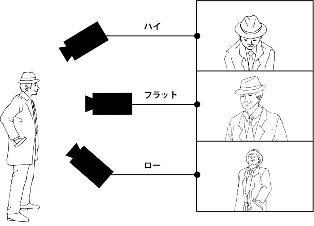
カメラ＝万年筆［camera stylo（仏）］
■フランスの作家･批評家･映画監督であるアレクサンドル･アストリュックが提唱した映画理論。映画芸術は文学同様に作家がカメラを用いて映画言語を綴る個人的な芸術形式だとするもの。
■1948年、アストリュックは仏『レクラン･フランセ』誌の中で『カメラ＝万年筆：新しい前衛の誕生』と題した論文を発表、"映画は、目に見えるもの、映像のための映像、物語の直接的･具体的な要求から次第に解放され、ちょうど書き言葉と同じくらい柔軟で繊細な、書くための手段となるだろう"と論じた。当時のフランス映画界では、脚本家が完全なる脚本を書き、それに従って監督が演出するという共同作業の制作が主流だったが、アストリュックは、作家が万年筆で文章を綴るように、映画作家はカメラで映像を綴らなければならないと提唱した。この考え方は〈作家主義〉の礎となり、アストリュック自身も短篇「往き還り」（48）や「恋ざんげ」（52）で実践している。日本では評論家の今村太平が40年に『記録映画論』の中で同様の理論を展開し、記録映画制作における指針としていち早く提言。これを〈カメラ＝万年筆〉とは区別して〈カメラ万年筆〉と記述する場合もある。
歌謡映画→「ミュージカル＊日本の音楽（的）映画」
カルト映画［cult film（英）］
■幅広い層から支持される名作･ヒット作とは異なり、限定的な観客層に鑑賞され、かつ熱狂的なファンを持つ映画。小規模公開のジャンル映画に対して用いられることが多いが明確な定義はなく、扱い方も流動的で、「ナイト･オブ･ザ･リビングデッド」（68）や「ブレードランナー」（82）のように、一時はカルト映画と呼ばれていた作品がのちに史上の名作と位置付けされることもしばしば。その逆に「狩人の夜」（55）など、メジャーで公開されながら公開当初は見向きもされなかった映画が再評価され、今日ではカルト映画として扱われる場合もある。
カンヌ国際映画祭→「映画祭（国際映画祭）」
カンフー映画（功夫片／クンフー映画）
■映画ジャンル。主人公その他が"功夫"に秀で、これを駆使した格闘場面を活劇の主体とするアクション映画。中国武術を意味する功夫は、広東語の英語表記"Kung-fu"により一般にカンフー、もしくは"クンフー"と呼ばれる（中国語の発音は異なる）。1973年の米＝香港合作映画「燃えよドラゴン」の世界的ヒットによりジャンルとして定着したが、欧米では他の格闘技映画を含めて"martial arts film"と称する。成立時の定型では、中華民国期（1912〜48年）を舞台とし、多くは実際の武術家や演武者が主演、大衆を虐げる悪人をカンフーの達人が倒す、カンフーを修行し悪人に復讐を遂げるといった勧善懲悪のシンプルなプロットで、剣や銃器を用いない格闘場面を見せ場とした。ジャンルの定着後は、時代設定やアクションの質を問わず、カンフー･スターが主要人物となっているもの全般をカンフー映画と称している。
■功夫は広東省では中国武術の意、他地区では鍛錬、それによる力量といった意があり、功夫映画といったとき、武術映画全般を意味することもある。したがって、カンフーを用いた活劇自体は1920年代より上海映画で作られているが、この時は同時期に興った剣戟や気功の技を用いる武術映画＝武侠映画のひとつとされ、すべて〈武侠映画〉のジャンルで括られている。実在の武術家をモデルとすることも多い武侠映画の流れにおいて、49年の香港映画で、清朝末期の英雄である武術家ウォン･フェイフォン（黄飛鴻）の活躍を映画化した「黄飛鴻傳」がヒット、主演の關?興は以後70本以上の映画で黄飛鴻を演じ、これら"黄飛鴻もの"がカンフー映画の原型となった。同系統の活劇はその後も武侠映画の一派として作られ、武侠映画でスターとなったジミー･ウォングが中国拳法主体の「吼えろ！ドラゴン 起て！ジャガー」（70）を成功させ、これがカンフー映画ブームの起点とされる。71年にはブルース･リー主演「ドラゴン危機一髪」が香港の興行記録を塗り替える大ヒット、後続作の成功を経た「燃えよドラゴン」は世界的ヒットとなり、カンフー映画のジャンルも世界的に認知された。ただし日本では空手映画と混同して扱われた時期もある。70年代のブルース･リー人気は香港映画を日本に認知させ、類型作品を多数生み出し、ジャッキー･チェン、リー･リンチェイ（ジェット･リー）といった次代のカンフー･スターに引き継がれていった。
＊参考「武侠映画（武侠片）」
き
■無声映画時代にアメリカで人気を呼んだ、ドジな警官隊のドタバタ騒動を描くコメディの一群。または、その作り手の集団。
■マック･セネットによって1912年に設立された映画会社"キーストン社"はチャールズ･チャップリン、ロスコー･アーバックルなどを擁し、ナンセンスなギャグとスピーディなドタバタが特徴の〈スラップスティック･コメディ〉で無声映画期に一時代を築いた。その作品で特に名物となったのが、1912〜17年にかけて続いたキーストン･コップスと呼ばれる一群である。警察署長役のフォード･スターリング率いる警官隊が、悪人を追いかける途中で様々なものを壊しながら騒動を繰り広げる様子を滑稽に描き、人気を集めた。
キネマ旬報／キネマ旬報ベスト･テン
■〈キネマ旬報〉は、世界最長寿の映画雑誌。映画批評･評論･研究における日本の代表的な商業誌であり、映画情報やグラビア、映画人インタビュー、現場取材、興行･業界報告、映画状況の記録まで多岐にわたる映画関係の記事を掲載する。1919（大正4）年7月、学生4人の編集により月3回発行でスタート。戦時統制により第735号で休刊、戦後に復刊し、50年から上旬･下旬の月2回発行となった。2011年末には（増刊号を含め）通巻1600号を数える。〈キネマ旬報ベスト･テン〉は同誌が主催･発表する映画賞。その年度に優れた実績を残した作品･人物を表彰するもので、現在は、評論家･文化人を中心とした選者の投票により、日本映画ベスト･テン、外国映画ベスト･テン、日本映画の監督賞･脚本賞･主演女優賞･主演男優賞･助演女優賞･助演男優賞･新人女優賞･新人男優賞、外国映画監督賞、および、文化映画ベスト･テンや読者選出ベスト･テンを選出している（文化映画と読者は選出方法が異なる）。24年度の第一回は"芸術的に最も優れた映画"と"娯楽的に最も優れた映画"の二部門で外国映画各10本を選出していたが、26年度･第3回より日本映画と外国映画を各10本選ぶ型式に定着、やはり戦時は中断し、2013年度で第87回に至る（米アカデミー賞より1回多く開催）。
脚色（アダプテーション）
■オリジナルの作品ではなく、小説や漫画などの原作を基にして脚本を執筆する作業。クレジット表記にある場合は、その担当者。原作を忠実に脚本化するもの、基本的な設定のみを残して全く違う内容にしてしまうものなど、その意味するところは幅広く、米国アカデミー賞では、脚本賞（Original Screenplay）と脚色賞（Adapted Screenplay）はそれぞれ部門が独立している。ただし、クレジットの表記は原作なしの台本でも使われる"脚本／Screenplay by"とされることが多い。初期の日本映画でも原作ものには"脚色"の表記を用いる例が多くみられたが、近年はおおむね区別なく脚本と表示されている。
ギャング映画［gangster film／mob film（英）］
■映画ジャンル。〈犯罪映画〉のサブジャンルにあたるが、アメリカ映画史においては独立したジャンルとして扱われ、狭義では、1930年代初頭にハリウッドで量産されたギャングを扱う映画群を指す。この場合のギャング映画は、ギャング（gangster）と呼ばれる犯罪者集団･犯罪組織およびこれに属する人物に焦点を当て、実在の事件･人物をモデルに、当時のアメリカ社会の暗黒面を描いた映画となる。その後、社会情勢の変化によりギャング映画もかたちを変え、時代や背景を問わず、集団強盗･組織犯罪捜査･マフィア･ストリートギャングなどそれぞれに焦点を当てた作品群へと分化し、一般にはそれらを総称してギャング映画と呼んでいる。内容的に他のジャンルと重なる面があり、特にフランス製のギャング映画は〈フィルム･ノワール〉系統に分類されることが多い。
■西部劇の元祖である「大列車強盗」（03）も、当時の列車強盗団を題材としたギャング映画の一種と考えられるが、一般的に始祖とされるのはグリフィスの「ピッグ横丁のならず者（The Musketeers of Pig Alley）」（12）。1920年に禁酒法施行、犯罪組織が台頭し抗争も起きるようになって以後の社会を反映した近代的ギャング映画としては、無声映画の「暗黒街」（27）が最初の本格作品と言われる。27年よりトーキー化が進み、アル･カポネをモデルとした「犯罪王リコ」（31）、「民衆の敵」（31）、「暗黒街の顔役」（32）の3作がヒット、マシンガンの銃声･車の爆音･ギャングのスラングなどがトーキーの効果として大衆を魅了し、同類作が量産されることとなった。特にワーナー･ブラザースの製作者ダリル･F･ザナックは実録的な暗黒街ものを同社の路線とし、年に50本ものギャング映画を製作。各社あわせると34年までに300本が作られたと言われる。先の3作に主演したエドワード･G･ロビンソン、ジェームズ･キャグニー、ポール･ムニはギャング俳優としてスターにのし上がり、ジョージ･ラフトやハンフリー･ボガートを加えて5大ギャング俳優と称されることもあった。これら禁酒法時代を背景にしたギャング映画は、世界恐慌によるアメリカ社会の不安と現実とを写し取り、かつ、移民などの下層階級でも暗黒街ならば一流にのし上がれるという"負のアメリカン･ドリーム"を描いたものという評価もある。しかし〈プロダクション･コード〉の締め付けで実録ドラマの製作が難しくなると、視点を対犯罪組織のGメンやギャング個人の心理ドラマに移すことでジャンル的に変質、メジャーの正統派ギャング映画は40年になってほとんど作られなくなり、犯罪映画の主流は〈フィルム･ノワール〉へと移っていく。一方で40年代後半から50年代にかけては、主に独立系製作会社が「犯罪王ディリンジャー」（45）や「機関銃ケリー」（58）など"30年代･地方ギャング"の実名･実録ものを多作、また「現金に体を張れ」（56）など集団強盗＝〈ケイパー〉もののサブジャンルがメジャー配給作でも興った。『アンタッチャブル』（59〜63）の人気に象徴されるテレビへの移行を経た60年代は、ギャング映画不作の時代であったが、60年代末〜70年代初頭にニューシネマのかたちで様々なギャングが題材に取り上げられ、のち、実話やベストセラー小説に基づく「バラキ」「ゴッドファーザー」（72）がマフィア（コーザ･ノストラ）ものの新規路線を開拓。80〜90年代はこの超大作の〈マフィア映画〉が折々に発表される一方、旧来のギャング映画の現代的再生も併行、黒人ギャング映画の〈フッド映画／hood film〉といったサブジャンルをまた生み出しつつ、秘かにアメリカ社会の今を反映した娯楽映画としてギャング映画が作られている。なお、日本映画においては、初期ギャング映画の影響を受けて30年代初頭に、主に模倣によるギャングを題材とした映画が流行。戦後の50年代より、東宝が「暗黒街」（56）をはじめとする組織抗争ものの"暗黒街"シリーズ（59〜65）を、東映が片岡千恵蔵主演によるヒーロー活劇の"地獄"シリーズ（58〜64）や集団強盗ものの"ギャング"シリーズ（61〜67）を、とシリーズ映画を軸にしつつ、大手各社とも犯罪映画の一派としてのギャング映画を多作した時期があった。その後は実録路線のやくざ映画や犯罪映画と同化し、時にオマージュ的な作品や、「いつかギラギラする日」（92）、「GONIN」（96）など和製上での正統派ギャング映画が作られている。
教育映画［educational film（英）］
■記録映画の一分野。学術･技術等を教授するために作られた記録映画、もしくは学校教育における教材として作られた映画作品。日本では1910年代より原義通りの教育映画を専門とする製作会社が存在したが、戦時下の〈映画法〉により〈文化映画〉の一端に組み込まれて以後、この文化映画という呼称との関わりで意味内容も変化していった。戦後に映画法が廃止されると、文化映画の語の使用を避け、その同義として教育映画の語を用い、非･劇映画の全体を指すようになったと言われる。また、戦後東宝に創設された教育映画部（およびその後身の東宝教育映画株式会社）は、記録映画と共に児童向けの短篇アニメーションも製作、54年から東映が"教育映画"に取り組み、児童向け学校教育映像として劇映画を上映。72年から93年まで続いた"日活（にっかつ）児童映画"も一般映画同様の劇映画やアニメーションをつくり、教育映画は記録映画に留まらぬ意味内容を持つようになった。しかし大手の教育映画･児童映画の製作が中止された今日では、一般･学校向けの"教材映画"を指す原義での使用が多いとみられる。
＊参考「文化映画」
切り返し（リバース･ショット）
■対峙する被写体同士を交互に映し出すこと。英語では〈リバース･ショット／reverse shot〉。たとえば交互に会話する場面において、一方の人物のショットに続き、ほぼ180度回転した位置から撮影されたショットを編集で繋ぐことで、切り返しが成立する。
＊参考「イマジナリー･ライン（アクション軸／180度規則／180度システム）」
■アメリカ映画業界における職業別組合。代表的なものに、監督･助監督らが所属する〈Directors Guild of America＝DGA／全米監督ギルド〉、脚本家の〈Writers Guild of America＝WGA／全米脚本家（作家）ギルド〉、俳優の〈Screen Actors Guild＝SAG／全米俳優ギルド〉などがあり、労働組合に相当する〈ユニオン〉のひとつとして機能している。ギルドは通常"組合"と訳されるが、日本映画界の職能団体に日本映画監督協会や日本シナリオ作家協会などがあることに倣って"協会"とする記事もある。
■各ギルドは所属メンバーの代表として労働条件やクレジット表記の規程を設け、映画会社と交渉し、その権利と利益とを保護しているが、その規約の律儀さゆえの話題を生じることもある。〈DGA〉は"一作品に監督は一人"としているため、共同監督のコーエン兄弟は監督と製作にクレジット表記を分けていたが、現在は1チームと認められ共同監督名義となった。「シン･シティ」（05）のロドリゲスとミラーの共同監督では1チームと認められず、この作品の時はロドリゲスがギルドを脱退。また作品の冒頭に監督名を掲げることを要請するが、「スター･ウォーズ 帝国の逆襲」（80）はこれに反する許可を取らなかったため罰則を果たされ（前作はルーカス･フィルムのロゴを監督名と認識した）、これを機にルーカスはギルドを脱退している。〈WGA〉は脚本のクレジットを作業別に分けることを定め、オリジナルの脚本を最初から完成台本まで手掛けた場合は"Written by"とし、原案･原作に基づいて最終脚本を作成した場合は"Screenplay by"、書いた脚本の一部が（別の脚本家による）完成作に採用された場合は"Story by"（日本語表記は原案）と表示される。この時、アイデアだけの提示は脚本と認められず、原案としてクレジットされた人物は、初稿（ボツ脚本）を担当した脚本家である場合が多い。〈SAG〉は役者の拘束時間や給料を明細･厳格に規定し、台詞の有無でキャストかエキストラかに分け、ギャラにも格差をつけている。大物俳優がノーギャラで出演と宣伝される時も規定の最低賃金は受け取らねばならず、"友情出演"などと称される。
銀残し
■フィルム現像の手法。現像の際、漂白と定着の過程で取り除かれる銀成分の一部、またはその全てを、色素と共にフィルムに残す技術のこと。もともとはフィルムの粒状性をコントロールするための手段だったのが、独特な映像ルックを作り出すための手段へと移行した。
■銀残しを施した映像の仕上がりには、コントラストが増す、黒が締まる、色の彩度が落ちる、という特徴があり、オリジナル･ネガ、マスター･ポジ、デュープ･ポジ、最終プリントの、それぞれの現像段階によって仕上がりが変化する。市川崑監督「おとうと」（60）で撮影の宮川一夫が実践したのが最初とされ、海外では、イギリス映画「1984」（84）のために撮影監督ロジャー･ディーキンスが初めて実施した。アメリカでは〈ブリーチ･バイパス／bleach bypass〉や〈スキップ･ブリーチ／skip bleach〉と呼ばれ、90年代になって「セブン」（95）や「プライベート･ライアン」（98）などで映像手法として流行、一般化した。ブリーチ･バイパスはテクニカラー社の〈ENR〉、デラックス社の〈CCE〉や〈ACE〉など、いくつかの現像所が独自の技術として扱っているが、現像結果が必ずしも確実ではなく、現在では〈カラーコレクション〉等のデジタル処理によって成される場合がある。また、撮影前に弱い光でフィルムを感光させる〈フラッシング〉という技法によっても、似たような映像効果を得られる。
く
クイア映画（クィア･フィルム）［（new）queer cinema（英）］
■セクシャル･マイノリティの人物や概念を題材とした映画群の総称。クィアは"風変わりな、奇妙な"の意から転じ、ゲイやレズビアン、バイセクシャル、トランスジェンダーなどのセクシャル･マイノリティを指す。従来はレズビアン映画･ゲイ映画として扱われ、日本では特にロマン･ポルノがレズビアンをしばしば題材とし、ピンク映画では〈薔薇族映画〉と称されるゲイ映画専門の製作会社もあったことから、映画ジャンル的に受け止められていた面がある。1991年に英米で「マイ･プライベート･アイダホ」「エドワードⅡ」「ヤング･ソウル･レベルズ」といった同テーマの映画が群発、これを承けて翌92年に、ロンドン･レズビアン＆ゲイ映画祭を開催する〈BFI〉の機関誌『サイト＆サウンド』でB･ルビー･リッチが"new queer cinema"の概念を提唱し、クィア映画の呼称が使われるようになった。日本で同様のテーマを主眼とする映画祭に、92年開始の〈東京国際レズビアン＆ゲイ映画祭〉、2005年開始の〈関西クィア映画祭〉、07年開始の〈アジアンクィア映画祭〉などがある。
クイッキー（速成映画）［quickie（英）］
■低予算･短期間で製作された安物の映画の俗称。速成映画、やっつけ映画。厳密には、アメリカ映画の二本立て興行時代の作品に対して用いる。
■1927年、イギリスの映画法で〈スクリーン･クォータ〉制が施行された際、国産映画の量産目標を満たすため、速成の映画が多く作られるようになった。その中にはイギリスで活動するアメリカの製作会社が手掛けた作品もあり、これを含めた当時の英国製速成映画群を"quota quickie／クォータ･クイッキー"と呼ぶ。クォータ･クイッキーの一部は、ハリウッドに籍を置く弱小映画会社に買い取られ、アメリカで配給されていた。アメリカ映画界が30年代前半から二本立て興行に入ると、いわゆる〈B級映画〉用にメジャー･スタジオや弱小製作会社が、やはり低予算･短期間で速成の安物映画を量産し始める。これらの速成映画は、蔑称の意を含んで〈クイッキー〉と呼ばれた。ただし、B級映画すべてがクイッキーに相当するわけではなく、その規定は曖昧なまま使われている。
クランク･イン／アップ
■撮影現場の用語。〈クランク･イン〉は撮影の開始（初日）、〈クランク･アップ〉は撮影の終了（最終日）を指す。映画が誕生した当初の映画撮影機には手回しのハンドルが付いていて、それを"クランク"と呼んだ。このクランクを手で回すことでフィルムが動きだし、撮影が始まる（クランクを止めて撮影を終了する）ことに由来する。ただしクランク･イン／アップは和製英語であり、英語ではクランク･インを"start shooting"、クランク･アップを"finish shooting"と呼んでいる。
グランド･ホテル形式
■一つの場所を舞台に、特定の主人公を置かず、複数の登場人物の物語を並行して描く物語の形式。1932年のアメリカ映画「グランド･ホテル」で初めて用いられたことから、こう呼ばれる。
■当時"星の数より多くのスターがいる"と言われ、全盛を誇ったハリウッドの映画会社MGMが、グレタ･ガルボ、ジョン･バリモア、ジョーン･クロフォード、ウォーレス･ビアリー、ライオネル･バリモアの5大スター共演の「グランド･ホテル」を製作。あるホテルに集った人々の一日を、人物を巧みに交差させつつ人生の縮図として描き、大きな話題を呼ぶとともにアカデミー賞作品賞を受賞する。映画自体は〈オールスター映画〉のひとつとして企画され、当初は〈オムニバス･ストーリー映画〉〈エピソード映画〉などと呼ばれたが、受賞を機に〈グランド･ホテル形式〉という用語が普及した。飛行中の旅客機を舞台にしたパニック映画「大空港」（70）、高層ビル火災を扱った「タワーリング･インフェルノ」（74）、三谷幸喜監督のコメディ「THE 有頂天ホテル」（2006）などがこれに該当する。
＊参考「オールスター（オールスター映画）」「オムニバス映画」
クリフハンガー［cliffhanger／cliffhanger ending（英）］
■作劇のスタイル。冒険活劇やスリラーで、主人公が絶体絶命の状況に追い込まれた場面、もしくはそうした場面の連続で構成された手に汗握る活劇を言い表わす時に用いる。元々は〈連続活劇〉の型式としてよく見られたもので、主人公が崖（クリフ）や高所に宙吊り（ハンガー）になって追い詰められ、さてどうなる！という場面で"次回に続く"と終わってしまう、観客引き付けの型を指した（次回の冒頭ではあっさり危機を回避し、終盤でまた宙吊り状態に陥る）。転じて、長篇映画のそうした場面や様式でも用いられるようになる。『アラビアンナイト』の毎夜"続きはまた明日"とお話を引き延ばした話法が原型で、語句そのものは1870年代の新聞連載小説において最初に使われた、とも言われる。連続活劇の終焉後は連続テレビドラマでよく使われ、「スター･ウォーズ 帝国の逆襲」（80）は"続きは次回"の型を再現してみせた。「インディ･ジョーンズ」シリーズ（81〜）や「クリフハンガー」（93）は危機また危機のクリフハンガー･スタイルで、日本では"ジェット（ローラー）コースター･ムービー"の語で言い表わすことが多い。
■ある映画の製作に参加した俳優やスタッフ、その他関係者の一覧。冒頭のオープニングタイトルや最後のエンドロールに表示される。
■出演者やスタッフの役割を明記することが主な役割だが、出演者の場合は、俳優の格によって表示順が決められることが多く、どの順番で表示されたかが問題にされる場合もある。基本的には、主役が最初で、次に役の大きい俳優から順に表示されるが、主役以外の特例的な大物俳優に関しては"トメ"と呼ばれる最後の位置に持っていくこともある。場合によっては中間に単独で表示させる"中ドメ"も使用。またスタッフの場合は、先に（またはオープニングタイトルに）各パートのチーフを表示し、続けてパートごとに助手以下のスタッフをまとめて表示するのが慣例となった。スタジオ･システムに則り映画が映画会社の社員だけで作られていた時代は、メインキャストおよびチーフ以上のメインスタッフのみが作品冒頭に提示され、作品末尾では「The End（に相当する各国晤）」や「終」「完」などの文字タイトルを表示し映画を終えることが多かった。80年代以降はエンドロールを設けて、社内･社外を問わず俳優･スタッフともに作品の関係者すべて（エキストラなど一部を除く）を表記するようになり、ハリウッド大作ではこれが10分以上に及ぶ場合も少なくない。
クロース･アップ→「ショット･サイズ（クロース･アップ／バスト･ショット／ミディアム･ショット／ロング･ショット）」
クロス･カッティング［cross cutting（英）］
■編集の技法。異なる場所で同時に起きている二つ以上のシークェンスについて、それぞれのショットを交互に（並列的に）切り替えて繋ぐ編集法。緊張感を生み出す技法として映画の黎明期から使われ、「イントレランス」（16）のクライマックス、「ウエスト･サイド物語」（61）の"トゥナイト"合唱、「ゴッドファーザー」（72）のラストの暗殺場面などのように、時代やジャンルを問わず用いられてきた。また、異なった時間に起こった複数の出来事を、意味的な連続性によって交互に繋いだものは〈パラレル編集〉と呼ばれる。
こ
■映画の製作から公開に至る流れの中で、映画館で行なわれる業務全般を指す。この中には、チケットの販売や上映だけでなく、飲食物やパンフレットなど関連グッズの販売や場内整理までが含まれる。また、各映画館が映画を上映するには、配給会社から上映作品のプリント（デジタル上映の場合はDCP）を借り受ける必要があるが、全国公開規模の作品の場合、その契約形態によって〈ブロック･ブッキング〉方式と〈フリー･ブッキング〉方式に分けられる。
■映画館が大手映画会社（の配給部門）と一定期間の一括契約を結び、あらかじめ映画会社側が番組編成を決めた上で、それぞれ開始日･終了日の決まった作品の供給を受けて上映する興行方式を〈ブロック･ブッキング〉と呼ぶ。これに対して、映画館が上映する作品を作品毎に選んで映画配給会社と契約し、上映期間もそれぞれの契約において任意に決める方式を〈フリー･ブッキング〉という。欧米では1940年代後半からフリー･ブッキングが行なわれていたが、日本映画では90年代まで、各映画館が東宝･松竹･東映などの大手映画会社が組織するチェーン（系列）に加入するブロック･ブッキングの契約形態が一般的だった。ブロック･ブッキングのメリットとしては、映画会社側には作品毎に映画館と契約する手間なしに市場を維持でき、映画館にとっては安定した作品の供給を受けられることなどが挙げられる。その反対に、映画会社は作品を供給し続ける負担を抱えることになり、映画館側には上映作品･期間等を自社の都合で変更できないというデメリットもある。なお、外国映画に関しては国内でも従来からフリー･ブッキングが行なわれていたが、一般的にはそれが認識されにくかった。その理由は、配給会社と各映画館の個別交渉を省くため、大手映画会社にある興行部の〈チェーン･マスター〉が、東宝洋画系･松竹東急系などのチェーン系列ごとに番組編成を組み、映画館はその系列下で全国公開の洋画を横並びで上映したためである。これにより邦画作品でも、時に洋画系に組み入れることで、邦画チェーン館とは別のチェーン館で長期上映され、自由な〈ムーブオーバー〉が可能だという側面もあった。こうした状況で、日本の興行界に登場した〈シネコン〉は原則的に洋画･邦画ともフリー･ブッキングの方式を採用し、期間や上映回数を各劇場が独自に編成。このシネコンの急増によって、邦画も系列館限定･期間指定の上映から解放され、実質的にフリーと同形態になった。さらに、映画産業が斜陽を迎え、安定的な作品供給が困難になってきた99年、松竹は〈ブロック･ブッキング〉を廃止。東宝、東映については、ブロック･ブッキングそのものは維持しているものの、契約映画館の数そのものは激減しており、興行形態としてはシネコンを中心としたフリー･ブッキングが主流となっている。
■〈興行収入〉は観客が映画館に払った入場料の総計。作品毎に『入場料×有料入場者数』で計算され、新規公開期間の総収入がその映画の興行収入＝興行成績として公表される。略して興収、欧米では"Box Office"と呼ぶ。このうち、映画館の取り分と上映経費を差し引いた、配給会社の取り分を〈配給収入〉、略して配収という。この中には、配給会社の損益と製作者の損益が含まれる。なお、欧米の興行成績は以前から興行収入で発表されていたが、日本では1999年までは配収、2000年から興収での発表に切り替えられた。そのため、それ以前の配給による発表とは単純に比較できないが、配収のおよそ2倍が興収と考えられる（つまり、契約の内容にもよるが、一般的には興収のおよそ半分を映画館の取り分と見なすことができる）。
■興収は映画の成績を示す指標の一つであり、興行ランキング（週間、年間）はこの数字に基づいて発表される。また、封切り日を含む最初の週末の興収は、その後の観客動員を推し量る指標と見なされ、興行関係者の間では"打ち込み"と称して重視されている。この期間の興行成績によって、おおよその上映期間が決まってしまうためである。大作映画の場合、封切り日が通常の土曜日ではなく、金曜日や木曜日になることがあるのは、この数字を大きく見せたいという理由もある。また、興収の内訳は前述した通り、『上映経費を含む映画館の収益＋配給会社の収益＋製作者の収益』であり、映画館、配給会社の順で取り分を引いた残りが製作者に渡る。つまり、最初に予算を集めて映画を製作した製作者が、一番最後に残った部分を手にするという図式になっている。
光学録音／磁気録音［optical sound recording／magnetic sound recording（英）］
■録音用語。音声を記録する録音方式の種類。〈光学録音〉は、音声を濃淡や面積の大小で表わした一本のギザギザ線に変換し、これをフィルムの端にある〈サウンド･トラック〉と呼ばれる録音帯に光学的に焼き付け、映写機の再生機器で読み取って音声を再生する。また、オープンリールやカセットテープと同様に、磁気テープに音声を録音し再生するのが〈磁気録音〉。
■トーキーの登場時、映画の音声再生はレコード同時再生方式とプリントの光学録音方式があったが、まもなく光学録音が主流となる。1950年代、より音質の良い磁気録音が登場すると、サウンド･トラックに磁気録音帯を塗布して録音･再生する方式も現われ、主に70ミリプリントでこれを採用。磁気帯が摩耗で劣化するといった問題のない光学録音は、ドルビー等の開発によって音質･音響効果を飛躍的に進歩させ、以後も映画音声の主流であり続けた。デジタル音声の時代になっても、プリントには（バックアップやアナログ専用館のため）光学録音帯が残されている。一方の磁気録音は、編集時に音ネガと画ネガの同期がしやすい点から、主に現場での録音･編集で使われるようになった。なお、近年普及したデジタル上映では、上映プリントを用いないため、光学録音と別の方式で音声を再生している。
合成［compositing（英）］
■特殊撮影や編集の技法。複数の映像パーツを組み合わせてひとつの映像を作り出すこと。スタジオ撮影の人物とロケによる背景とを組み合わせる場合、一人の俳優で双子の映像を作ったり、別々に撮影した人物同士を並ばせたい場合、自然の風物を組み合わせ現実にはない風景を作成する場合、怪獣を実際の都市風景の中に立たせたい場合などに用いる。
■映画初期には、カメラの多重露光を利用し、撮影現場でカメラ内合成を行なうのが主だったが、1930年に〈オプチカル･プリンター〉が光学合成用に改良されて以後、ポスト･プロダクションでの作業に移った。その合成技術も二つの映像パーツを組み合わせることから複数の映像が扱えるように進化。90年代以降は、コンピュータを使用した〈デジタル合成〉が主流となり、フィルム合成では不可能だった多彩な合成がみられるようになった。近年では特に〈クロマキー〉技術を応用した合成が多用され、〈グリーンバック〉の前で俳優の演技を撮影、これにCGや別撮りによる背景を合成し、実際にロケ撮影したかのような映像を創りだしている。
小唄映画→「ミュージカル＊日本の音楽（的）映画」
ゴールデン･ラズベリー賞（ラジー賞）［Razzie Awards（英）］
■毎年、アカデミー賞授賞式の前日にアメリカで発表される、その年の最低映画を選出する賞。別称はラジー賞。ただしユーモアとしてのイベント色が強く、正確な意味で"最低"の出来の映画が選出されるとは限らない。
■ハリウッドで映画の宣伝や広告を行なっていたジョン･ウィルソンが考案し、1980年に第1回を開催。毎回、ワースト作品賞、ワースト主演男優賞、ワースト主演女優賞などが、ゴールデン･ラズベリー賞財団の会員および25ドルの会費を払った一般の映画ファンの投票によって決定する。会費以外に必要な投票資格は、なし。公に授賞式も行なわれるが、受賞者が現われるのは稀で、過去には「ショーガール」（95）のポール･バーホーベン監督を第一号に、「キャットウーマン」（04）のハル･ベリーほかが授賞式に現われ度量をみせた。2009年度の第30回にワースト主演女優賞等を受賞したサンドラ･ブロックは授賞式に出席、その翌日にアカデミー賞主演女優賞を連続受賞して（ただし対象作品は異なる）話題となった。
小型映画
■使用フィルムの幅を基準にした映画形態の分類。標準型の35ミリより幅の狭い8ミリや16ミリ･フィルムを用いた映画を指す。基本的には一般家庭向けに製造されたもので、のちに自主映画や非商業用劇映画の分野で広く用いられた。小型映画機材の販売は映画初期から行なわれ、最初に広く普及したのは1920年代、フランス･パテ社による9.5ミリのフィルム規格"パテベビー"であった。これは日本でも愛好家が生まれ、〈プロキノ〉の一部も9.5ミリで撮られている。アメリカ･コダック社が22年には16ミリ、32年に8ミリを発表し、シェアの面から8ミリ･16ミリが小型映画の主流となる。16ミリは機動性を重視したニュース映画やドキュメンタリー、のちにテレビ映画やビデオ用映画などの商業作品でも用いられ、一般劇場用には35ミリにブローアップ（拡大焼付）され上映されている。8ミリ映画は、日本では60年代後半よりコダックの"スーパー8"と富士フィルムの"シングル8"という規格が広く普及、〈ホーム･ムービー〉や〈小型映画〉の名称で、一般人が今日のビデオのように映像記録を撮影･映写する娯楽機器となった。やがて8ミリ映画を使い素人ばかりで劇映画を製作する〈自主映画〉が70年代に流行、16ミリを使用する本格志向も登場し、これらのムーブメントは〈PFF〉をはじめとするコンテストや映画祭を経由することで、撮影所経験のない映画人を大量に生み出すことになる。しかし家庭用ビデオ機器の登場により、自主映画の形態はフィルムからビデオに移行、シングル8は2012年に販売終了、スーパー8は一部製品が未だ販売されているものの、撮影カメラは中古機材のみになっている。
黒人映画→「ブラック･ムービー［black film（英）］」
五社協定
■かつての日本映画業界内で取り決められた内部協定。1953年9月10日調印、当時の大手映画会社である松竹･東宝･大映･新東宝･東映の5社が、専属の監督･俳優について各社相互で引き抜きを行なうことを禁じたもの。草案には引き抜きに応じた違反者（監督･俳優）は5年間起用しない、他社貸し出しの場合は相手会社の承認が必要、といった内容も織り込まれている。一般には、54年に製作再開が見込まれた日活による引き抜きを警戒したものと言われてきた。58年9月には日活も加盟して"六社協定"となり、独禁法抵触を考慮して"六社申し合わせ"と改称。"スターを貸さない･借りない･引き抜かない"を謳ったが、のち61年に新東宝が倒産して"五社協定（申し合わせ）"に戻った。70年代初頭の撮影所システム崩壊により監督や俳優の専属制度もなくなると、協定も自然消滅した。
■1936年から37年にかけての東宝設立時、業界にはすでに、松竹･日活･新興キネマ･大都映画の間で、所属の俳優･スタッフは了解なしに他社への移動や他社作品に関わることを禁ずるという"四社協定"の密約ができていた。東宝はこの密約に加わらず他社からの引き抜きを敢行、林長二郎（のち長谷川一夫）が松竹から東宝へ移籍した際には林が暴漢に顔を斬られるという事件も起きる。こうした引き抜きは、戦時下で一旦体制が変化した戦後の映画界でも横行し、特に47年に新東宝、51年に東映が設立された際には、スターを求める引き抜き工作も激化。この状況で53年に引き抜き防止策が提案され、五社協定が調印された。折しも日活の製作再開が噂されており、マスコミは日活の参入を妨害するカルテル協定だと報じた。日活は協定への参加を拒否して五社側の社員と契約、やがて新生スターが生まれ運営が軌道に乗ると協定に加盟する。五社協定の弊害も多く指摘され、新東宝の前田通子、大映の山本富士子や田宮二郎は協定の犠牲者として伝えられている。
コスチューム･プレイ（コスチューム･ドラマ、ピリオド･ピクチャー）［costume drama／period drama（英）］
■映画ジャンル。古代から中世に材を取り、その時代の衣装を纏った人物たちによって繰り広げられるドラマ。衣裳映画、古装劇。時代劇に近い意のピリオド･ピクチャーとも呼ばれる。おおよそで歴史劇･史劇に相当し、物語背景は〈エピック〉とも重なっている。日本映画の古装劇は時代劇、アメリカ映画では西部劇となり、これ以外でも題材によって別ジャンルの呼称で呼ばれる場合が多い。よく取り上げられる題材としては、聖書･宗教劇、ローマ帝国史劇、アーサー王伝説や英雄叙事詩など神話劇、アラビアンナイト、クレオパトラなどのエジプト記、シェイクスピア劇、英国王宮、宗教戦争やフランス革命、南北戦争、阿片戦争や清朝興亡記、三国志などなど。歴史映画の原型はイタリア映画で作られたとされ、イタリア映画史初の劇映画「イタリア占領」（1905）も史劇であった。「ポンペイ最後の日」（08）は世界的に評価され、「クォ･ヴァディス」（13）や「カビリア」（14）で頂点を迎え、09年から14年の最盛期には500本ものイタリア史劇が作られたという。
古典的ハリウッド映画［Classical Hollywood Cinema（英）］
■映画史研究において、ハリウッド映画のある様式を表現する批評用語。1920年代から60年代までの、いわゆる黄金期のハリウッド映画の全体的なスタイルを指す。"コンティニュイティ･スタイル"と"説話的物語形式"を大きな特徴とし、これが商業用劇映画における世界的な規範となっている。80年代のアメリカで概念がまとめられ、90年代前半にその終焉（または、ポスト古典的ハリウッド映画の登場）が主張されたことで、あらためて今日のアメリカ映画史を語るうえで重要なキーワードとなった。
■古典的ハリウッド映画の起点と終点については、解説者によって多少の幅がある。その特徴をなす映画文法、すなわちショットの技術やイマジナリー･ラインの法則、多様なカメラワーク、コンティニュイティ編集の原則などが、1900年代から20年代終盤までに発展･完成したことをふまえたうえで、起点をトーキー化に伴いスタジオ･システムが完成した20年代頃以降に置き、終点をスタジオ･システム解体後のニューシネマを経てブロックバスターの時代に至る60年代〜70年代に置く、というのが一般的。85年刊の研究書『Classical Hollywood Cinema』でデヴィッド･ボードウェルは、17年から60年までの作品にその特徴が強く反映されているとした。古典的ハリウッド映画の特徴は、コンティニュイティ（連続性）の重視により、編集やカメラワークの技術が観客に意識されず、場面から場面への移行や物語の時間･空間の描き方に混乱がないこと。また、登場人物の心理の動きを中心に物語が進み、無駄のない演出でわかりやすく展開し、ハッピーエンドに見えるような完結性をもっていること、などにまとめられる。その背景にプロダクション･コードによる画一化があることや、メロドラマ的な骨格を構造に抱えていることも指摘されている。映画ジャンルによる類型化が、この"わかりやすさ"に貢献しているとも言えよう。スタジオ･システムの終焉後、ニューシネマからニュー･ハリウッドの時代になって、上述の特徴から外れる演出･描写方法が主流となり、古典的ハリウッド映画の終焉が語られるようになった。
コマ送り／コマ落とし［flame by flame／fast motion（英）］
■映画のフィルムは1秒間に24コマで撮影される。〈コマ送り〉はこの撮影された映像を1コマずつ映写すること。また〈コマ落とし〉は、1秒24コマの標準速度より遅い速度で撮影したものを、標準速度で映写すること。被写体の動きが実際よりも速くなり、スピード感や滑稽さを引き出す効果がある。サイレント時代、フィルムは1秒間に16〜20コマで撮影されていたため、のちの映写機で投影した際にはコマ落としのような動きに見える場合がある。
■新聞･雑誌･単行本等で発表された人気漫画を原作とする実写映画。ジャンルとして認識されているとは言いがたいが、小説原作に比べ虚構性･娯楽性の強い世界観を得ることができる一方で、製作者にとっては原作の知名度を活用、出版社とのタイアップなどビジネス上の利点を得られることにより、現代の原作付き映画の中では大きな比重を占めつつある。
■漫画を原作とした実写映画は戦前から存在し、初の漫画原作映画は1925年の「ノンキナトウサン 花見の巻／活動の巻」とされる。その後も「江戸っ子健ちゃん」（37）、「あんみつ姫」（54）、「サザエさん」（56）、「おトラさん」（57）など主に小編娯楽作の題材として一般化していき、60年代の漫画週刊誌興隆期には特に「まぼろし探偵」（60）や「大忍術映画ワタリ」（66）などのヒーロー活劇･忍者ものが、児童向け映画の原作として重宝された。続くテレビアニメ化の隆盛を経て、60年代末〜70年代前半のスポ根ブーム･劇画ブームへの便乗、プログラム･ピクチャー体制における低予算娯楽活劇の量産などを背景に、『ハレンチ学園』『あしたのジョー』『子連れ狼』『ゴルゴ13』『愛と誠』『嗚呼!!花の応援団』『さそり』など人気漫画が続々と多様なジャンルで映画化されて一大ブームをなし、日本映画史における映画化素材として無視できない存在となった。80年代以降も定番化していくなかで、「ビー･バップ･ハイスクール」を旗手とする〈ヤンキー映画〉のサブジャンルの確立、「釣りバカ日誌」の国民的映画への成長など、題材の多様化や大衆への浸透がすすむ。2000年代では、70年代の漫画原作映画に比して、荒唐無稽に近い娯楽漫画の大作映画化が顕著になり、「DEATH NOTE／デスノート」二部作の興行的成功などに象徴される新しいビジネススタイルも開拓している。
■"コメディ／喜劇"はジャンルである一方、様々なジャンルで抱えられるスタイルでもある。コメディ映画は、何らかのかたちで観客に笑いを呼び起こさせるもので、演劇や小説と同様に多様な（サブ）ジャンルが存在し、ホラー･コメディのように一見性格の相反するジャンルとも結び付く。リュミエールの「水をかけられた撒き水夫」（1895）がすでに喜劇であったと言われ、喜劇映画はおおまかに、喜劇役者が主体となりドタバタのアクションで笑わせる〈スラップスティック〉と、物語が主体となり滑稽な状況や可笑しい会話で笑わせる〈シチュエーション･コメディ〉のふたつに分けられ、それぞれの流れで多様なサブジャンルを生じ発展してきた。1910年代は〈キーストン･コップス〉などのスラップスティックが主流で、トーキーとなった30年代以後にはシチュエーション･コメディが主流に。30年代は〈スクリューボール･コメディ〉や〈ソフィスティケイテッド･コメディ〉が人気となり、40年代末のイギリスでは〈イーリング･コメディ〉が生まれた。サブジャンルとして独立はしないものの、ブラック･ユーモアは60年代に顕著となり、70年代にはシニカルなロマンティック･コメディの映画作家ウディ･アレンが登場する。また70年代後半から80年代にかけて、テレビや漫談からマシンガン･トークやきついジョークを売りにする芸人が映画に進出、エディ･マーフィのように喜劇役者の性格を帯びた一般俳優として様々な映画に主演するようになる。80年代から90年代は、役者や物語でなくパロディの型式で笑わせる作品も増えた。
■日本映画では、無声映画時代から斎藤寅二郎などがドタバタ喜劇やナンセンス映画を作っているが、風俗映画的な現代劇や軽妙洒脱な時代劇など物語に軸をおいたいわゆるシチュエーション･コメディ（シット･コムとは異なる）が主軸となってきた。トーキー以後は浅草の軽演劇や大衆演劇･漫才などからエノケン、ロッパ、エンタツ･アチャコなどが映画に流れ込むが、森繁久彌が喜劇役者から俳優に転向していったように、戦後は喜劇映画もユーモラスな風俗･人情劇や明朗喜劇が主流となっていく。高度成長期には〈サラリーマン喜劇〉が代表的な喜劇作品となり、一方、タイトル冒頭に「喜劇」と銘打った諸作はいずれも笑いとペーソスを交えた人情劇で"悲喜劇"と呼べるものだった。後者のかたちは「男はつらいよ」シリーズに継承され、「釣りバカ日誌」シリーズの終了で路線としては消滅しつつある。
コン･ゲーム
■英語表記は"con game"で、"confidence game（信用詐欺）"の略。詐欺や騙し合いを主題とし、策略の行方が二転三転、時に観客も騙しつつ、その展開を楽しませる映画を指す。小説では一ジャンルを為しつつあり、折々の詐欺師映画の解説でもこの語が用いられるようになった。痛快な犯罪映画としての詐欺師ものは、1973年度のアカデミー賞で「ペーパー･ムーン」と「スティング」が揃って評価された頃から、特に「スティング」を代表作として観客に馴染まれた。ほかに「テキサスの五人の仲間」（66）、「ペテン師とサギ師 だまされてリビエラ」（88）、「グリフターズ 詐欺師たち」（90）、「スパニッシュ･プリズナー」（97）、「コンフィデンス」「マッチスティック･メン」（03）など。日本映画でも折々にコン･ゲーム映画が作られたが、近年では、詐欺犯罪でなく密室ゲームで騙し合いの攻防を描いた「カイジ 人生逆転ゲーム」（09）や「LIAR GAME ザ･ファイナルステージ」（10）のような"ゲーム映画"のかたちで同趣向が楽しまれている。
■脚本とは別に作成した撮影台本･演出台本。完成したシナリオに基づき、ワンカットごとの画面構成や俳優の動き、台詞、カメラ位置などを詳細に記したもので、〈コンテ〉とも呼ばれる。フレームを模した枠の中に撮影する映像の略画を描き、演出意図を書き加えたものは〈絵コンテ〉と呼ばれ、あらかじめ具体的な演出の構想を練るとともに、撮影現場で監督がスタッフや役者にイメージを伝える役目を果たす。
■この撮影用の台本とは別に、映画の演出における"連続性"のことも同様に〈コンティニュイティ〉と呼ばれている。物語やアクションの連続性を重視し、ショット間の矛盾を論理的に排除することでわかりやすさを維持させた編集のことを〈コンティニュイティ編集〉という。ひとつの場面でショット毎に光方向の設定を矛盾させない、小道具の位置がショット毎にずれていない、といった画面上の具体的な繋がりの問題や、ショットが進むにつれて自然に変化する俳優の表情、別の場面や日付へのスムーズな移行、といった滑らかな語り口など、連続性は多様な面で演出に関わっている。
さ
彩色映画（極彩色映画）
■白黒フィルムに着色を施しカラー映像として見せたもの。映画の黎明期におけるカラー映画への取り組みのひとつ。1896年頃にイギリスやフランスで彩色法が考案され、1910年代までの無声映画時代の大部分が〈彩色映画〉として作られた。日本では"極彩色映画"と銘打って公開されたものもあり、一時期は輸入映画の9割が彩色映画だったという。彩色法の一般的なものは、ポジのプリントを染色（tinting）し画面全体を単色で色付けするもので、野外場面は黄色、夜は青、室内はセピア、夜間室内は緑というように場面ごとに色分けした。またフィルムの銀粒子を薬品で変色させる調色（toning）の方法もあった。これらは音声映画の試みの際、音声記録部分に影響するという理由で取り止められる。極彩色映画と称されたのは、プリントをひとコマずつ、人物や物など部分部分を各色で彩色したもので、これは手作業で行なわれるためコストも高かった。1907年にはフランスのパテ社がステンシル（stencil）システムを開発、彩色部分の型抜きをした着色用プリントを各色ごとに作り、これと上映用プリントを重ねて専用機械に通し、型抜き部分に彩色（6色映画なら6本の着色用型抜きを作り、6回機械で染める）、"パテカラー"と称して人気作品に使用している。これらの彩色映画の多くは後年の復元の際に白黒のプリントで焼き増しされたため、無声映画＝白黒映画の概念が定着してしまった。なお、極彩色映画の語に対し、のちのカラー映画は"天然色映画"と呼んでいる。
■映画の形態。映写プリントのうえでは映像のみで、セリフや音楽など一切の音がない映画。セリフが必要な場合は、ショットとショットの合間に字幕のみの画面を挿入する。同様に、通常はナレーションで説明する舞台背景や物語の進行状況を、シークェンスの合間に字幕タイトルで伝えることも多い。
■1927年の「ジャズ･シンガー」をきっかけに音声のある〈トーキー映画〉が普及するまでは、原則的に映画は音のない"動く写真"として作られていた。ただし、上映時には各劇場単位で小楽団による伴奏を付けたり、スクリーン裏の声優による台詞発声や弁士による解説が添えられることもあり、必ずしも観客は静寂の中で映画を見ていたわけではない。現在までの映画史のおよそ1/3はサイレント時代であり、基本的な映画文法の確立や、〈ドイツ表現主義〉〈モンタージュ理論〉などの映画史上の重要な出来事がこの時期に興り、「クォ･ヴァディス」「國民の創生」「戦艦ポチョムキン」「メトロポリス」といった、映画の革新である名作古典もサイレント映画の時代に作られた。
サウンド･ステージ
■撮影所の施設。防音を施した撮影用建造物を指す。スタジオである場面を撮影する際、音声の同時録音を行なう場合には外部からノイズが入らない防音設備が必要となり、〈サウンド･ステージ〉と呼ばれる設備の中にセットを組む。また、録音設備のある撮影スタジオ自体のことをサウンド･ステージと称する場合もある。対して、同時録音を必要としない"物撮り"などを行なう防音設備のない撮影スタジオは、〈サイレント･ステージ〉と呼ばれる。
■映画フィルムの端にある、音声を記録する録音帯。または、その録音帯に記録された音楽や、その音楽を収録した"サントラ盤"と呼ばれるレコード･CD。
■トーキー映画においては、映像だけのプリントと音声を記録したレコードとを同時に再生するのではなく、プリントの画像コマの隣に音声記録帯＝サウンド･トラックを設けることで、映像と音声を同期させた。その記録方式には〈光学録音〉と〈磁気録音〉の二方式があるが、近年はデジタル上映の普及によって、上映プリントにおけるサウンド･トラックの意味合いを失いつつある。また、サントラ盤の意で用いる〈サウンド･トラック〉は、本編映像と同じ音源を収録した「original motion picture sound track」と、本編の音楽と同じ楽譜を同じ演奏者（場合によっては異なる演奏者）が演奏した音源を収録する「original sound score」とに区別されている。80年代以降に増加した、多数の既製曲をBGMとして使用した映画において、その既製楽曲集のレコード･CDを「オリジナル･サウンド･トラック」と称する例も多い。
＊参考「光学録音／磁気録音［optical sound recording／magnetic sound recording（英）］」
●サウンド･トラック
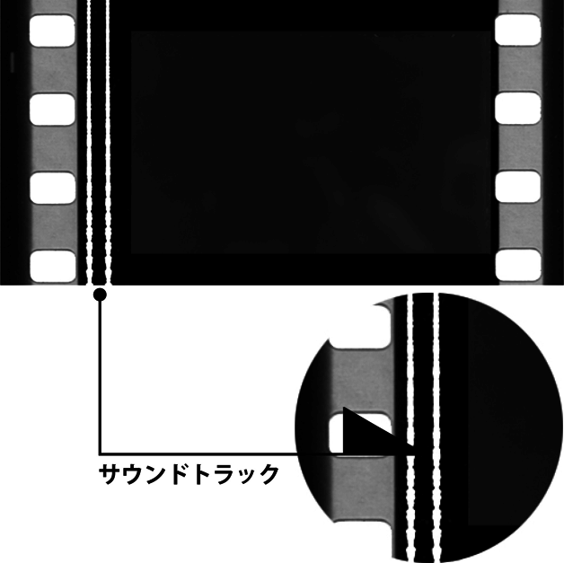
サウンド版
■映画の形態。〈サイレント映画〉に伴奏音楽と効果音を付けたもので、〈トーキー〉への移行期に過渡的に生み出された。音声によるセリフはなく、無声映画の一形態として区分される。
■1920年代後期に入って、アメリカでは映画に音声を付ける方法が開発され、これを機に「サンライズ」「つばさ」（27）などの作品で、伴奏音楽と効果音を追加した〈サウンド版〉が製作された。これらはいわば"音"が付くことを前提に作られたサイレント映画であり、「國民の創生」（15）や「黄金狂時代」（25）のように、サイレントの旧作にあらためて音を付け直し再公開したサウンド版も少なからず存在する。日本でも同様に、トーキー開始後の30年代にサウンド版が多く作られたが、本格トーキーへの移行が急速に進んだ欧米に比べると、日本のサウンド版の寿命は長い。これは以前から、サウンド版のごとく"伴奏と弁士の語りが付いたサイレント映画"に親しんでいた背景に加え、20年代半ばに次々と設立された時代劇スターの独立プロが低予算映画を作り続けるにあたり、速やかにトーキー製作に移行する資本力がないため、従来の無声映画のスタイルでサウンド版を作ったという事情が大きい。40年代にはサウンド版も廃れるが、31年の「街の灯」もサウンド版で製作し、「モダン･タイムス」（36）からようやくトーキーに移行したチャップリンや、36年の「大学よいとこ」までサウンド版を作っていた小津安二郎など、芸術性のうえでサイレントにこだわり続けた作家も少なくない。
撮影監督（撮影）［director of photography／cinematographer（英）］
■撮影現場において、撮影と照明に対し技術的な指示を行なうスタッフ。フィルムや照明機器の選択、映像のルックなど、映像に関する全ての責任を負う。
■撮影において、撮影監督はカメラポジションから構図を決め、映像に合ったレンズやフィルターを選択し、照明を配置して露出を計測する。打ち合わせの段階では、美術や衣裳の色彩など総合的に映像のルックを確立させる立場にあり、監督に次ぐ重要なポジションであるといわれている。日本では1954年に撮影監督協会（JSC）が創立され、「撮影者は撮影･現像･映写に至る映像技術体系の統括責任者である」と指標されているが、日本の撮影現場では撮影技師と照明技師がそれぞれ独立して存在し、撮影監督のもとに照明技師が置かれる欧米とはシステムが異なる。日本でも照明の責任を負い、クレジッット上で〈撮影監督〉と記載される技術者が登場しているものの、現状ではまだ主流となっていない。ハリウッドの場合、ユニオンの規定によってカメラを操作するカメラオペレーターが必要とされ、撮影監督は原則的にカメラをオペレートできないことになっている。そのため撮影監督は、（日本では撮影助手の仕事となっている）露出による計測に基づいて照明やフィルターの指示を出し、カメラの動きを決めることが撮影現場での主な仕事となっている。
撮影速度（高速度撮影／コマ落とし／微速度撮影）
■撮影速度は、撮影における1秒あたりのフレーム数を示すもの。通常フィルムは1秒間に24コマ、ビデオは1秒間に30コマで撮影されるが、撮影速度を上げたり下げたりすることで、〈スローモーション〉や〈コマ落とし〉などの表現が可能になる。〈高速度撮影〉は、1秒間に通常より多くのコマを撮影し、通常のコマ数で再生するもので、実際に目にするよりも遅い速度で滑らかな映像になる。一般的には1秒間に100コマ以上撮影できるカメラを〈高速度カメラ〉と呼んでいるが、現在はデジタル化によって1秒間に100万コマ撮影できる〈ハイスピードカメラ〉も登場し、技術革新が続けられている。〈低速度撮影〉は、1秒間に通常より少ないコマ数で撮影し、通常のコマ数で再生するもので、スピード感のある映像になる。これは〈コマ落とし〉とも呼ばれ、アクション場面やカーチェイスなど追跡場面に用いられることが多い。また、1秒間に1コマといった撮影によって雲の動きや花の開花などを撮影する技法もあり、これらは〈インターバル撮影〉や〈微速度撮影〉と呼ばれている。
■映画ジャンル。サスペンス感を核とした映画群を指し、日本で〈スリラー映画〉と同義に用いられている。サスペンス（suspense）は未決定･宙ぶらりんの状態や、不安･持続的緊張･これからどうなるか知りたくなる感覚などを意味し、スリラーの重要な要素かつ手法でもある。スリラーがジャンルとして定着する以前はその種の映画を"サスペンス･フィルム"と呼んでいたと言われ、スリラーの呼称が主流になっても定義は曖昧なまま併用されていた。しかしスリラーの定義もまた曖昧で、多様なジャンルと重なり、ジャンルの細分化に伴ってスリラー作品でも別のジャンル用語で呼ばれることがある。また、かつてスリラーと呼ばれたものが〈フィルム･ノワール〉に再定義される、というようなこともあり、スリラーの呼称は徐々に衰退。世界的に犯罪スリラーが定番作品として作られるようになった90年代頃より、スリラーに代わってサスペンスの呼称が優勢となった。
作家主義［politique des auteurs（仏）］
■批評用語。1950年代半ば、トリュフォーなど『カイエ･デュ･シネマ』誌の批評家たちが掲げのちに映画監督として実践した映画批評の思想。同誌編集長アンドレ･バザンの作家理論やアストリュックの〈カメラ＝万年筆〉論を基盤とし、絵画や小説がひとりの画家･小説家で作られるように、映画もまた監督という"映画作家"個人の文体を持った個性的な表現手段であるべきだとするもので、直訳に近い"作家政策"と訳されることもある。54年1月にトリュフォーが発表した論文『フランス映画のある傾向』では、当時の脚本優位で映画がつくられる製作観を批判し、映画の創造的主体は監督にあるべきだと主張、そうした他者の脚本でも演出･文体によって監督個人の刻印を刻み込む映画作家の例として、ヒッチコックやホークスなどアメリカ映画の職人監督を称揚し、芸術家だとみなした。続いて『カイエ』一派も同調したこの思想は批評界に論議を呼び、各国でも発展的な作家理論が語られるようになる。トリュフォーやゴダールらは実際に映画監督となってこの理論を実践、さらに世界各地でも理論と作品とに影響を受け作家主義を採る監督が増加するにつれ、作家主義に基づく批評は映画評論のスタンダードとなった。一方で、作家主義は個人崇拝に堕しかねないことや、集団製作がもたらす魅力や無名性の技術力を軽視しがちなこと、批評が映画作家の独りよがりを許していること、などの側面も指摘されている。
サラリーマン喜劇
■高度成長期のサラリーマン社会を題材とした日本の喜劇映画の一群。1950年代から60年代にかけて東宝を中心に作られ、特に「社長」シリーズは15年にわたって続く人気作となっていた。戦前からの〈小市民映画〉がサラリーマンの悲哀を主なテーマとしたのに対し、サラリーマン喜劇は滅私奉公の精神を軸に、雇われ社長や現代会社員のある意味で軽佻浮薄な会社生活をユーモラスに捉えつつ、その社会的成就を描いている。一般大衆の夢を映像化する娯楽作であると同時に、企業における大家族主義の実現や父権構造の復権などをあらわにしたものとの評価もある。
■1951年に直木賞を受賞した源氏鶏太は、その数年前からサラリーマン人生の悲喜劇を描いた"サラリーマン小説"の分野を開拓し、のちにサラリーマン小説の第一人者と呼ばれた。東宝は51年より源氏作品の映画化を始め、52年の「三等重役」がヒット、シリーズ化を経てこれが「へそくり社長」（56）を第一作とする「社長」シリーズに発展する。三等重役とは（閥族社長の戦犯追放により）一般社員から昇進した重役･社長を指し、サラリーマン喜劇における社長も出世街道の先に見据えられたものだった。「社長」シリーズは正篇･続篇二部作のかたちで、社長の浮気騒動や社員の恋愛、接待の馬鹿騒ぎを交えたてんやわんやの企業活動を描き、70年の第33作まで続いて（姉妹篇･傍系作を含めると71年まで40作）東宝の稼ぎ頭となった。源氏の原作は各社作品･非サラリーマン小説を含め80回超も映画化され、中村武志原作の「目白三平」ものも映画化された（東映･東宝で全5本）。東宝は他方で"自営業者のサラリーマン喜劇"を「駅前」シリーズ（58〜69･24作）として展開、アンチ･サラリーマン喜劇の"無責任"ものからも植木等主演のサラリーマン喜劇「日本一（の〜男）」シリーズ（63〜71･10作）を誕生させる。ほかにも東宝「サラリーマン出世太閤記」（57〜60･5作）や数十本の一般社員ドラマ、東映･高倉健の「太郎」シリーズ（60〜61･4作）や「進藤の社長シリーズ」（61〜62･6作）などが作られ、サラリーマン喜劇は50〜60年代にジャンル化の様相を呈した。86年の「そろばんずく」はこれらを意識したコメディで、88年からは「釣りバカ日誌」シリーズ（〜09･22作）やその併映作においてサラリーマン喜劇が再生されている。
サンダンス･インスティテュート［Sundance Institute（英）］
■アメリカの映画組織。ユタ州にある、インディペンデント映画の製作支援とクリエイターの育成を目的とした非営利団体。1981年に俳優･映画監督のロバート･レッドフォードが「明日に向って撃て！」の出演料をもとに設立。"サンダンス"という名前はこの作品の役名から取られている。プロのクリエイターによる講義やワークショップを通じて、若い人材の育成を行なうとともに、85年からはインディペンデント映画専門のサンダンス映画祭を主催。この映画祭からは、クエンティン･タランティーノ、ロバート･ロドリゲス、ブライアン･シンガーといった人材が送り出されている。
サント映画／エル･サント映画
■特例的な映画群の呼称。メキシコの伝説的な覆面レスラー、エル･サント（El Santo）が主演した一連の娯楽活劇を指し、〈エル･サント映画〉とも言う。
■メキシコでは、大衆娯楽であるプロレスをスペイン語で"ルチャ･リブレ"と呼び、ルチャ･リブレ（およびそのレスラー＝ルチャドール）を題材にした〈ルチャ映画〉も1950年代前半から作られるようになった。40年代にルチャドールにデビュー、50年代に国民的スターとなった覆面レスラーのエル･サント（聖人の意）は、58年に「サント対悪の頭脳」と「サント対地獄人間」で映画界に進出。その後、80年代初頭まで50本を超える映画に出演してルチャ映画のスターともなった。〈サント映画〉の特徴は、スポーツ映画ではなく、サント自身が本人役に扮し、実在の仮面のスーパーヒーローとして、ルチャ試合の傍らで悪人や吸血鬼･ゾンビ･宇宙人などと闘うヒーロー活劇になっていること。この独特なスタイルは他の人気覆面レスラー主演作でも踏襲され定型化。日本では90年代に、40〜50年代のメキシコホラー＆ファンタジーを継承するエクスプロイテーションとして紹介され、一部に熱心なファンを生んだ。
386世代（韓国映画）
■韓国映画ニュー･ウェーヴの世代をあらわす語。「シュリ」（99）や「JSA」（00）で注目された新しい韓国映画の担い手を指し、386（サン･ハチ･ロク）は"2000年前後の当時に30代で、80年代に学生時代を過ごした、60年代生まれ"の意。元々は映画界に限らず、韓国社会全体で重要なポストを占め始めた新世代を指す言葉だが、90年代終盤に韓国映画界に新風を吹き込んだ秀作･ヒット作の監督たちがこの世代だったことから、映画用語に流用された。プロデューサー･俳優を含めた映画人における386世代の特徴は、海外留学を体験するなど比較的裕福に育ち、高学歴の青年期に民主化運動を経験、開放政策のなかで海外映画に親しみ、国家が支援する映画人養育機関に学んだ者も多い。こうした経験を反映させつつ、ハリウッド映画を意識したジャンル映画や、ヨーロッパ･日本映画の影響を受けたアート志向の作品を作り、それまでの韓国映画を刷新する"ニュー･ウェーヴ"と評された。代表的な監督に「八月のクリスマス」（98）のホ･ジノ、「シュリ」のカン･ジェギ、「JSA」のパク･チャヌク、「友へ／チング」（01）のクァク･キョンテク、「殺人の追憶」（03）のポン･ジュノなどがいる。
し
シークェンス［sequence（英）］
■いくつかのシーンによって構成された場面やエピソード。"連続"を意味し、物語の中の一つの単位とされる。〈ショット〉が〈シーン〉を構成し、シーンが〈シークェンス〉を構成するという関係にあり、映画の中で明確なまとまりのあるシークェンスが映画全体を構成する。またシークェンスを構成し得る、カットを割らない長い単一ショット＝ロング･テイクのことを、〈シークェンス･ショット〉と呼んでいる。
シークェンス･ショット→「ワンシーン･ワンカット（シークェンス･ショット）［sequence shot（英）］」
CG／コンピュータ･グラフィックス／CGI
■CGは〈コンピュータ･グラフィックス／Computer Graphics〉の略。コンピュータを利用して作られた映像を意味する技術用語。映画におけるCGを大別すると、次の3つに分けられる。①劇中に登場するコンピュータディスプレイの映像そのもの。②背景やメカニックなど、場面の一部分を表現した映像。③CGアニメのように、画面全体をコンピュータ画像で描写したもの。実写映画の視覚効果として使われる場合は、CGI（Computer Generated Image）と呼ぶことが多い。
■世界で初めてCGを本格的に導入した映画と言われているのが、1982年のアメリカ映画「トロン」。初歩的な技術を用い一部にはアニメーションも併用したが、当時としては画期的な表現方法だった。さらに、CG普及のブレイクスルーとなった作品が93年の「ジュラシック･パーク」で、もともとは人形アニメで表現する予定だった恐竜たちが、CGにより写実的かつ生き生きと動き回り観客を驚かせた。現在では〈SFX／VFX〉の中核をなす技術となっている。
ジガ･ヴェルトフ集団［Groupe Dziga Vertov（仏）］
■フランスの映画作家集団。1968年5月、〈ヌーヴェル･ヴァーグ〉の中心的存在だったジャン＝リュック･ゴダールが、ジャン＝ピエール･ゴラン、ジャン＝アンリ･ロジェら政治的活動に熱心だった映画作家を集めて結成。商業映画とは手を切り、このグループ名を名乗って毛沢東主義による革命のための映画制作を始め、いくつかの作品を発表したのち、ゴダールは72年に集団名義の「万事快調」で商業映画に復帰、グループも続く「ジェーンへの手紙」を最後に、同年解散した。
■結成当時のフランスは、五月革命によって学生と警察が衝突し、ゼネラルストライキが行なわれていた。これに対しゴダールやゴランは、匿名により個人の著作性を否定することで、"映画労働者"として"政治的な映画"を作るのではなく、映画を"政治的に生産する"ことを目指した。命名の由来となったジガ･ヴェルトフは、「カメラを持った男」（29）で知られるソ連の映画監督。〈キノ･アイ〉＝"映画眼"理論を提唱し、カメラを"眼"とすることで人間の眼よりも物質世界を的確に捉え、それをモンタージュ技法によって表層下の真実をあぶり出せるとし、ロシア革命期において映画の道徳的なあり方を試行した。ジガ･ヴェルトフ集団もまた、自身の活動を"映画における映像と音の調和、また映画の内容そのものに意味がある"という考え方に対する闘争運動と位置付け、映画の形式にとらわれない映画製作を行なった。あえて映像を平板化させ、音と映像のシンクロを否定、黒画面を挿入するなど、新たな映画の形式を目指した結果、「東風」（69）など同集団名義による9本の作品群を生み出し、学生や活動家に向けて映画館以外での上映を実践した。
ジゴマ映画
■1910年代前半に日本でブームを巻き起こした探偵活劇（犯罪映画）群の総称。オリジナル作品は11年に公開されたフランスの無声映画「ジゴマ」（11）で、大好評を得て続篇や類似作品が続々と公開され、ジゴマの名を冠した日本国産の犯罪活劇も作られ、さらにノヴェライズに相当する小説版や新規犯罪小説も出版される一大ブームをなした。これら正規シリーズ作と類似作、和製ジゴマ映画をまとめて〈ジゴマ映画〉と呼んでいる。これに影響された犯罪も勃発するに至ってジゴマ映画は検閲の対象となり、ブームは急速に終焉。今日では最初の海外映画ブーム、和製現代活劇の始まり、最初期のメディアミックス、映画検閲の始まりといった観点で語られる。
■ヴィクトラン･ジャッセ監督による「ジゴマ」は、1911（明治44）年11月の初公開時は「探偵奇譚ジゴマ」の題で上映。当時珍しい3巻の中篇映画で、変幻自在の兇悪強盗ジゴマと探偵ポーリンの追いつ追われつを多様なアクションで描いた探偵活劇だった。これが大好評を博し、続けて女盗賊と探偵の類似作にジゴマの名を冠した「女ジゴマ」、正規の続篇「ジゴマ続篇」、類似作「悪魔バトラ」「ソニヤ」などを輸入公開。その熱狂的な人気にあやかって和製の同類映画「日本ジゴマ」が12年に製作･公開され、同様の「ジゴマ改心録」「大悪魔」「新ジゴマ大探偵」（12）とともにヒット、犯罪者VS探偵活劇の一大ブームとなり、これが和製現代犯罪活劇の嚆矢ともなった。同年のうちに翻案小説や独自の物語のジゴマ小説（いずれも勝手にジゴマの名を冠した）が23冊出版され狂騒は続いたが、一方でジゴマを騙った犯罪者も現実に登場、青少年層への悪影響も指摘されて『東京朝日新聞』が反ジゴマ･キャンペーンを展開し、警視庁は12年10月にジゴマ映画および同種の犯罪映画の上映を規制する。地方上映や題名を変えての上映は続行されたもののブームは13年に終息、これを機に内務省は映画検閲の体制づくりに乗り出していく。
自主映画
■製作形態における映画の分類。日本で言う場合は、個人資本もしくは個人で製作費を調達したアマチュアの集団制作による映画を指し、英米で〈インディペンデント〉と称される独立系プロダクション制作の映画とは区別されることが多い。1970年代より8ミリ映画の普及につれて自主映画を制作する個人･グループが全国的にあらわれ、そのまま映像業界に進み、あるいはフィルム･コンテスト等で評価を得た者が、日本映画の担い手となっていく。2000年代以降は、個人制作の自主映画がそのまま劇場公開される例も珍しくなくなった。
■明治維新以前の時代を扱う日本映画。特に戦国時代から江戸末期までを題材とした剣戟映画（チャンバラを含む映画）が"時代劇映画"の主軸と捉えられ、一般に"時代劇"とのみ称される。英米ではperiod dramaもしくはcostume dramaと訳されたが、近年はそのままJidaigekiと呼ぶ例も増えた。なお、平安時代以前や剣戟のないドラマも広義の時代劇として扱いつつ、"王朝もの""世話もの"等の呼称で区分することもある。日本映画においては黎明期から半世紀に渡って、映画を〈現代劇〉と〈時代劇〉に二分して捉え、ジャンルを超越した様式として時代劇が存在した。最初期は〈旧劇〉と呼ばれ低俗扱いされたが、1920年代に呼称を転じて以後、剣戟の写実性や主題意識が高まり、また時代劇スターが生まれるにつれ娯楽としての質を高めていく。第二次大戦時は製作が限定されたものの、50年代には時代劇王国･東映を中心に黄金期に到達。股旅もの･道中もの･合戦もの･捕物帖･怪談･歴史映画など多様なサブジャンルを抱える一方、リアリズムや社会派の主題を重んじた作品群も現われ、従来の明朗時代劇の不調、テレビの成長、任侠路線の勃興等の要因もあって60年代に急激に衰退した。その後折々に時代劇復興が企図され、今日では定期的に製作される一ジャンルとして存命している。
■旧劇......黎明期における時代劇の呼称。旧来の歌舞伎＝旧派、新興（現代）劇＝新派という演劇の区分けに倣って古装劇の活動写真を〈旧劇〉と呼んだ。最初の時代劇とされる1908年の「本能寺合戦」も芝居演目を屋外で撮影した旧劇であり、10年代には舞台実写の域を脱し、様式化された芝居･剣戟による旧劇が映画の在り方として確立された。
■目玉の松ちゃん......俳優･尾上松之助の愛称。"日本映画の父"牧野省三に見出され舞台役者から転身、09年の「碁盤忠信･源氏礎」を皮切りに、日活を拠点とし一巻ものの活動写真に多数主演。目をむいて見得を切る仕草から〈目玉の松ちゃん〉と親しまれ、日本で最初の映画スターとなった。講談本『立川文庫』に材を取った勧善懲悪の立ち回り劇を中心に、豪傑･剣客･忍者･侠客･義賊などのヒーローを演じ10年代の旧劇を席巻。25年には出演1000本記念の「荒木又右衛門」が作られる。松之助映画の観客は低年齢層や下層階級が多く、旧劇は低俗とみなされもした。
■新時代映画......旧劇に代わる時代劇の仮称。現代劇の〈純映画劇運動〉に対し、時代劇でも20年代に映画刷新の動きが起こる。22年に牧野は新国劇のリアルな"殺陣"を取り入れた「実録忠臣蔵」を製作、翌23年に松竹蒲田が新劇俳優や女優を用い写実的表現の「女と海賊」を公開、その宣伝に"新時代映画"の呼称を用いた。また同年のマキノ映画製作「浮世絵師･紫頭巾」もニヒルな主人公による写実的剣戟でヒット。これらを承け、リアルでスピーディーな殺陣、勧善懲悪と一線を画す物語、および声色（陰台詞）を排した活弁の新しい様式が定番化し、旧劇は時代劇と呼ばれるようになった。松之助に代わる新時代劇スターは「雄呂血」（25）の阪東妻三郎。
■日本のハリウッド......時代劇が盛んに作られた京都の俗称。23年の関東大震災により松竹･日活とも製作部を京都に移転、地元のマキノ映画ほか撮影所が京都に集い、寺社仏閣と景観に恵まれた地の利を生かし時代劇が量産され"日本のハリウッド"と呼ばれた。阪妻に加え嵐寛寿郎･市川右太衛門･片岡千恵蔵･月形龍之介が剣戟スターとなり、林長二郎（長谷川一夫）は美貌で女性客の人気を集めた。関東の製作再開後も大手は東西に撮影所を構え、東京で現代劇、京都で時代劇製作の体制を固める。
■反逆時代劇......無声映画期の傾向。松之助映画と異なる時代劇は、反逆的･虚無的･破滅的な主人公が、波乱の末にたっぷりの剣戟を魅せる定型で評価を受けた。「女と海賊」の脚本･伊藤大輔は大河内伝次郎主演で「忠治旅日記」三部作（27）等を監督、「新版大岡政談」（28）でアンチ･ヒーローの傑物･丹下左膳を生み出す。特に「忠治旅日記」は史上の傑作とされ、時代劇の第一人者となった伊藤は"時代劇の父"と称される。伊藤はさらに〈傾向映画〉の先駆作を手掛け、反逆時代劇のひとつの到達点も導いた。
■髷をつけた現代劇......30年代の新傾向。31年のトーキー化以降に興隆。諧謔精神の強い「国士無双」（32）や「赤西蠣太」（36）の伊丹万作、明朗かつ情緒的な股旅もの「瞼の母」（31）や「弥太郎笠」（32）の稲垣浩、風刺劇「盤嶽の一生」（33）やペシミズムの市井ドラマ「人情紙風船」（37）の山中貞雄のような、剣戟に頼らない時代劇作家が群出。稲垣･山中も属した〈鳴滝組〉の作品は"髷をつけた現代劇"と称される。
■13項目の禁止令......第二次大戦後の連合軍総司令部占領下で発令された映画製作禁止条項。45年、GHQは占領政策として各社に映画製作指示要項を伝達、"日本映画に関する13項目の禁止令"を発令する。これにより『仇討に関するもの』『封建的忠誠心または生命の軽視を好ましきこと、または名誉あることとしたもの』『残忍非道暴力を謳歌したもの』等が禁じられ、剣戟映画の製作が困難になった。活動の場を失った時代劇俳優･監督らは現代劇に乗り出し、千恵蔵や右太衛門のギャング映画は"髷をつけない時代劇"と称される。ただし剣戟のない民主主義礼賛ものや人情劇･恋愛劇の世話ものなどは作られ、後期には剣戟を含むものも続出、有名シリーズも占領下のうちに製作開始し、「羅生門」（50）はヴェネチア映画祭で受賞した。
■時代劇王国......新興会社･東映のキャッチフレーズ。占領終結の52年、禁止されていた忠臣蔵映画「赤穂城」が作られ時代劇は完全復活。51年創設の東映は千恵蔵･右太衛門･大友柳太朗らを抱え、娯楽版（SPの項を参照）で新スターとなった中村錦之助や東千代之介、大川橋蔵や美空ひばりも加えて、スター･システムにより勧善懲悪型の娯楽活劇を量産、"時代劇王国"のフレーズで50年代最盛期を支えた。他社でも、松竹の高田浩吉や大映の長谷川一夫は捕物映画のシリーズで人気を保ち、市川雷蔵と勝新太郎は60年代まで大映の屋台骨を支え"カツ･ライス"と渾名される。東宝では三船敏郎が高い評価を獲得。また「羅生門」に続き「西鶴一代女」（52）、「地獄門」「雨月物語」（53）、「山椒大夫」（54）等の時代劇も50年代の国際映画祭で連続受賞を果たした。
■リアリズム時代劇......60年代に現われた傾向。様式的なチャンバラが大勢を占めた東映時代劇に対し、黒澤明は現実通りでもない映画的リアリズムを時代劇に与え、61年の「用心棒」では画期的な"人を斬る効果音"と"吹き出る流血描写"を持ち込む。この時期、剣戟活劇や人情劇と異なる社会派的な主題と重厚な演出、残虐描写を扱った「切腹」（62）や「武士道残酷物語」（63）が登場し高い評価を得た。東映調の明朗時代劇は人気に陰りがみえ、対抗策の〈集団抗争時代劇〉も作られる。
■63年......時代劇映画終焉を象徴する年。テレビの普及後、映画の斜陽化がこの頃より始まり、各社は時代劇に代わるコスト回収率の優良な路線を模索。テレビではテレビ映画時代劇と共にNHKが大河ドラマを放映開始、61年に倒産した新東宝の映画も放映されるようになり、時代劇をテレビでみる習慣が根付いていく。さらに東映は時代劇の派生形とも言える任侠映画への路線転換を決め、時代劇の製作本数は決定的に減少した。以後、撮影所の人材･資産活用のため周期的に時代劇復興策が図られ、今日では藤沢周平ほか時代小説の映画化やファンタジー風の解釈を施した作品が折々に作られている。それは伝統への回帰というより、ハリウッド製「ラストサムライ」（03）と同様、時代劇の素養や慣習のない世代による新路線開拓の試みとすべきだろう。（山下慧）
実験映画［experimental film（英）］
■映画ジャンル、もしくは映画の型式･形態。映画の商業性に背を向け、物語や記録の内容を観客に伝えることは目的とせず、映像表現自体を目的とし実践する映画全般を指す。名称はモンタージュ理論の実験で知られるレフ･クレショフが1920年に設立した"映画実験工房"によるものとされ、20年代ヨーロッパの〈アヴァンギャルド映画〉や50〜60年代アメリカの〈アンダーグラウンド映画〉も実験映画に含まれる。実験映画は大まかに言って、美術作品に倣い映像の表現自体を鑑賞させる"抽象映画"と、映画表現の形式を追究し映画の基本的なシステムを作品として提示する"構造映画"とに大別できるという。一般に知られた作品では、ビルを固定カメラで8時間撮影したアンディ･ウォーホルの「エンパイア」（64）や、ただ青い画面を映すデレク･ジャーマンの「BLUE」（93）など。アメリカの"experimental film"と呼ばれるものはアヴァンギャルドの影響を受け20年代のうちにニューヨークで登場し、アマチュア映画の範疇で脈々と作られアンダーグラウンド映画運動に至った。日本では55年にグラフィック集団が「キネカリグラフィ」を製作したのが最初の実験映画という意見があり、60年前後に草月アートセンターの上映活動や学生自主制作の前衛映画「鎖陰」（63）公開などの実験映画運動が興っている。
シット･コム（シチュエーション･コメディ）
■〈コメディ〉のサブジャンル。〈シチュエーション･コメディ〉の略で、限定的な場所･空間で発生した問題や事件に対峙する人々の姿を喜劇的に描く。ただし、一般に〈シット･コム〉の略称を使う場合は、テレビやラジオの連続放送劇で一話完結のコメディに限定することが多い。日本では三谷幸喜が「THE 有頂天ホテル」（06）、「ザ･マジックアワー」（08）などでこの形式を採用し普及に努めている。
詩的レアリズム［re´alisme poe´tique（仏）］
■1930年代のフランス映画における映画運動。リアリズムと叙情性によって、物事を根本まで鋭く見通す視点と繊細な描写が同居した、情感溢れる作品群を生み出した。用語はフランスの映画評論家、ジョルジュ･サドゥールが提唱したとされ、パリの都市部を舞台に、大型セットによるスタジオ撮影を敢行、労働階級者たちを主人公とし、厭世的なドラマを描くといった共通点を持つ。ジュリアン･デュヴィヴィエの「望郷」（37）やマルセル･カルネの「霧の波止場」（38）などを筆頭に、当時のフランス映画主流の映画文体となっている。またこの詩的レアリズム作品とされる映画は国際的に興行的成功も収め、特に日本ではこの時代のフランス映画の評価が高い。
シネコン（シネマコンプレックス／マルチプレックス）［cinema complex（英）］
■映画館の営業形態の一つ。その定義に関しては諸説あるが、日本映画製作者連盟によると、「同一運営組織が同一所在地に5スクリーン以上集積して名称の統一性（1,2,3...A,B,C...等）をもって運営している映画館」となっている。正式名称は〈シネマコンプレックス〉。〈マルチプレックス〉とも呼び、特に20以上の多スクリーンを抱えるサイト（劇場）を〈メガプレックス〉と言うこともある。
■米国では1960年代から普及していたが、日本でのシネコン第一号とされるのは93年に開業したワーナーマイカルシネマズ海老名。日本のシネコンも北米の成功例に倣って主に、郊外型ショッピングセンターの上階に併設、チケット売り場や場内入り口を一つに絞って省力化、メジャー系の作品を中心に上映、作品の上映時間帯を自由に編成し、入替制や指定席制を採用、大きなスクリーンと座り心地のいい座席で場内を整備し、映画館離れしたファミリー層や中高年層の集客に努めた。今日では全国総スクリーン数の8割以上をシネコンが占めている。シネコン以前の映画館は、上映作品および期間を配給側によって決められた〈ブロック･ブッキング〉形式の興行が一般的だったが、シネコンは自由に作品及び上映期間･回数を決める〈フリー･ブッキング〉を採用、その普及により興行全体もフリー･ブッキングに移行しつつある。
シネマスコープ（シネスコ／スコープ）［cinema scope（英）］
■ワイドスクリーン上映方式のひとつ。略称が〈シネスコ〉、縦横比率＝〈アスペクト比〉は1：2.35。日本では一般にこのサイズすべてがシネスコと称されるが、正確にはスコープ･サイズ（1：2以上）の商標のひとつであり、代名詞としての使用は誤り。
■1950年代、テレビの普及に対して差別化を図ろうと、映画界は横長の大型スクリーンを開発した。20世紀フォックス社は、フランスのアンリ･クレティアンが20年代に開発した〈アナモルフィック･レンズ〉の技術の権利を52年に取得。このレンズを用い、撮影時は左右の横幅を圧縮、映写時は元に戻すことで、画面を横長に拡大する方式を考案、これを〈シネマスコープ〉と称し、簡易な方法でシネラマ同様のワイド画面を実現させた。最初のシネスコ作品は53年の「聖衣」。他社もこれに追随するが、商標登録されたシネマスコープの名は使えず、同様の方式ながら〈ワーナースコープ〉〈ディアリ･スコープ〉〈フランスコープ〉等の名称を付けた。アメリカでは、これらを総称してワイドスクリーンと呼んでいる。日本でも56年に新東宝が「明治天皇と日露戦争」（57）で初めてこの方式を採用したが、東映が〈東映スコープ〉として「鳳城の花嫁」（57）を先に完成･公開したため、日本でのシネスコ第1作は「鳳城の花嫁」となった。続いて各社も〈日活スコープ〉〈東宝スコープ〉〈松竹グランドスコープ〉〈新東宝スコープ〉〈大映スコープ〉と、それぞれの社名を冠にしたシネスコ方式を採用する。スタンダード･サイズからシネスコへの移行により、構図の取り方や現場作業だけでなくカット割･演出自体にまで変化が訪れたという意見もあり、また、人の視界にいっそう近付いた構図は、歴史大作に向く反面、個人を描く人間ドラマには適さないとの議論もなされ、それぞれ研究課題となっている。なおシネスコ方式については、60年代になってパナビジョン社が歪みの少ない優秀なアナモルフィック･レンズ（縦横比は1：2.35〜2.4）を開発、各社ともこのレンズを使用するようになり、あわせて各社別の呼称も60年代のうちに使われなくなった。パナビジョンの名称自体は機材メーカーの社名であるため、日本では、別方式の〈パナビジョン〉方式や同社の他のレンズを使った作品でもシネスコ作品と思い込む混乱があったという。
●シネマスコープ
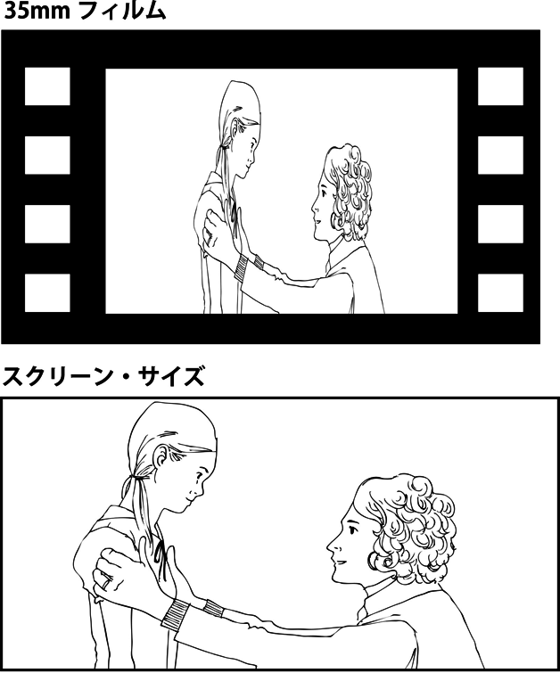
シネマテーク･フランセーズ［La Cine´mathe`que francaise（仏）］
■フランスのフィルム･アーカイヴ。1936年に映画蒐集家であったアンリ･ラングロワが、映画フィルムの保管･修復･上映等を目的に、ジョルジュ･フランジュ、ジャン･ミトリとともに設立した。上映会を通じて映画芸術の認識と理解を深める自主機関〈シネクラブ〉の"セルクル･デュ･シネマ"を前身とし、〈シネマテーク〉に発展して以後も上映･解説の活動につとめ、ゴダールやトリュフォーなどのちの映画人たちの交流の場ともなって、〈ヌーヴェル･ヴァーグ〉に大きな影響を与えた。同機関は政府からの資金援助を受ける半官半民の団体となったが、68年、運営体制を問題視したフランス政府は最高責任者だったラングロワを解任、これに対して内外の映画人たちから反発の声が上がり、ラングロワは復帰するものの、政府は資金援助を打ち切って69年に公認のアーカイヴを設立、以後シネマテーク･フランセーズは独自に存続･発展することになる。2005年にはベルシー街に移転、映画図書館と併合され、新たなシネマテーク･フランセーズとして再開館した。
シネマ･ノーヴォ［cinema novo（葡）］
■1950年代末から60年代にかけてブラジルで興った映画運動。ポルトガル語で"新しい映画"の意。左翼思想や反ハリウッド･モデルを掲げ、ネオレアリズモの手法に倣ってブラジルの現実社会を映し出し、映画を社会参加の武器とした。代表的な監督は「黒い神と白い悪魔」（63）や「アントニオ･ダス･モルテス」（68）のグラウべル･ローシャ。軍事政権の台頭により60年代のうちに収束に向かっている。
■1950年代前半、ハリウッド志向の映画製作に反発しブラジルの現実を映した良質な映画作りを志す動きが起こり、55年にネオレアリズモの手法を用いたネルソン･ペレイラ･ドス･サントスの「リオ40度」が登場、これが〈シネマ･ノーヴォ〉の先駆的作品とされる。50年代末、リオデジャネイロでは若手の評論活動グループ"シネマ･ノーヴォ"がサントス同様の理想を掲げ、ネオレアリズモや同時代のヌーヴェル･ヴァーグに倣い、低予算かつ政治的意識をもって社会を映し批評する映画を撮り始め、ブラジル映画に新しい波をもたらした。"手にはカメラを、頭にアイデアを"と標榜したシネマ･ノーヴォの名は新しい映画運動の呼称となり全国に拡大、この様相からシネマ･ノーヴォは"ブラジルのヌーヴェル･ヴァーグ"とも喧伝された。64年のカンヌ映画祭ではサントスの「乾いた人生」（63）とグラウベル･ローシャの「黒い神と白い悪魔」が揃って高く評価され、世界がシネマ･ノーヴォを認識。母体グループに属していたローシャは運動の指導者とみなされるが、ブラジル社会は64年に軍事政権へ移行、民衆には映画が難解に受け止められ政治的達成もならなかったことから、シネマ･ノーヴォの主題も作家ごとに拡散していく。ローシャの「アントニオ･ダス･モルテス」は運動の到達点とされたが、60年代末に軍事政権の弾圧が厳しくなり、作家の国外逃亡によって70年代前半には運動のまとまりも消えた。後年再復興をなしたブラジル映画では「セントラル･ステーション」（98）や「シティ･オブ･ゴッド」（02）などにシネマ･ノーヴォの影響がみられる。
■ドキュメンタリーの手法･スタイル。1950年代末から60年代にかけてフランスで台頭した、手持ちカメラや同時録音によって取材対象の人間に"真実"を語らせる形式。語源はロシアの記録映画作家ジガ･ヴェルトフが自作のニュース映画群に対して用いた"キノ･プラウダ"にあり、そのフランス語の直訳〈シネマ･ヴェリテ〉（映画･真実）がこの様式の呼称となった。カメラや機材の軽量化が進み同時録音が可能になった1950年代末、フランスのジャン･ルーシュが「私は黒人」（59）やアフリカの記録映画などで、インタビュー形式により人間をありのまま生々しく捉え、映画史家ジョルジュ･サドゥールがこれらをシネマ･ヴェリテとして評価、またルーシュや協力者エドガール･モランもこの語を用いたことで、用語として広まった。この狭義での代表作は、ルーシュとモランの共同監督作「ある夏の記録」（61）やクリス･マルケルの「美しき五月」（63）など。ルーシュは〈ヌーヴェル･ヴァーグ〉の"左岸派"でもあり、撮影対象者にインタビューを行ない、その返答･反応を捉えることで真実の姿を描き出す手法は、ゴダールが「男性･女性」（66）に取り入れるなど、ヌーヴェル･ヴァーグとも深く関わりを持つとされる。また、ほぼ同時期にカナダ･アメリカで興った〈ダイレクト･シネマ〉の手法とも相関関係にあり、ダイレクト･シネマに対してシネマ･ヴェリテはカメラ（インタビュアー）が撮影対象に積極的に関わることで真実の姿を引き出そうと試みる点が特徴。近年にマイケル･ムーアのアポなし取材で活用されているという意見もある。インタビュー形式は記録映画で広く用いられ、のちにダイレクト･シネマを含めたドキュメンタリーの形式を示す用語としてシネマ･ヴェリテを使う例も多くみられた。
シネラマ［cinerama（英）］
■ワイドスクリーン上映方式のひとつ。〈アスペクト比〉（縦横比率）は1：2.88で、縦9m、横25m以上の湾曲したスクリーンを規格とし、主に70ミリ･フィルムが使用されたが、初期には3本の35ミリ･フィルムを3台の映写機で同期映写していた。
■1935年にフレッド･ウォーラーが開発した〈シネラマ〉は、当初"対空砲火訓練装置"等で軍事的に使用されるものであった。このシネラマの技術を劇映画に応用し、3台のカメラで幅広いパノラマ画像を撮影後、3台の映写機で同時に映写するシネラマ映画が完成、52年9月にニューヨークのブルックリン劇場でシネラマ第1作「これがシネラマだ」（52）が公開された。この興行は一大センセーションを巻き起こし、日本でも帝国劇場で55年1月に公開され大ヒットを記録。3台撮影･映写の初期シネラマには、映写の境目が見える、分割された画面ごとに色調等の差がある、別々のカメラで撮影した映像を一画面に合わせるため視点が微妙にずれている、といった欠点があったが、のちに65ミリ･フィルム（1台のカメラ）で撮影したものを3本のプリントにした〈スーパーシネラマ方式〉が登場。この方式で色調や視点の問題が解消され「西部開拓史」（62）等が作られた。その後、〈70ミリ映画〉が登場するとその映写機でシネラマと同等の広大な画面を映写できるようになり、3台映写も不要となって「おかしなおかしな世界」（63）等を70ミリ方式で映写、ついに本来のシネラマ方式が使われなくなるなど、上映形態には変遷があった。70年代には「レッド･サン」（71）や「ゴッドファーザー」（72）など〈ビスタ･サイズ〉のヒット作をスーパーシネラマ方式で上映したこともあったが、もともとテレビ普及の対抗策として生み出されたシネラマは、設備投資にコストがかかり、劇場が限定される等の問題によって次第に姿を消していく。現在の日本では、この方式での上映の可能だった劇場はすべて廃館となっている。
●シネラマ
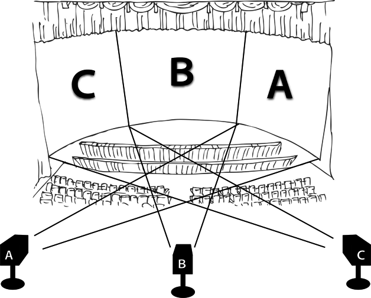
社会派
■ある事件･出来事そのものや、そこに関わった人間の姿を描くことを通じて、社会的な病根を探り出し、あるいは問題提起を行なう映画。また、そのような作品を数多く手掛ける映画監督を社会派監督（作家）と呼ぶ。〈社会派〉の意味範囲に規定はないが、社会派ミステリー、社会派ドラマといったように複合ジャンル用語として使われることもあり、実際の事件や社会事象、およびそれらをモデルとした出来事を、リアリズムで描きつつメッセージ性も含ませた作品に対して使う傾向にある。
■アメリカ映画では"Social consciousness film"の呼び方が社会派に近い。トーキー化以降の1930年代、大不況に際してからの社会不安を描き、社会の暗部を暴露し告発する映画が多く作られるようになった時代が、本格的な社会派映画の台頭期だと言われる。またイギリス映画では、50〜60年代の〈フリー･シネマ〉系作品で、リアリズムによる社会批判ドラマに対して"社会派リアリズム"の語を用いたという説もある。日本で〈社会派〉が映画用語化した経緯は定かではないが、50年代末に松本清張の推理小説ブームが起こった際に"社会派推理小説"の語が浸透し、これに併せて映画でも作品解説等で用いられるようになったと推察される。社会派に分類される監督としては、アメリカのシドニー･ルメット、ポーランドのアンジェイ･ワイダ、イギリスのケン･ローチ、日本では山本薩夫、熊井啓などが代表的。なお、ドラマに限らずドキュメンタリーやその作家にも用いられるが、実際の事件を題材にしていても、エンターテインメント要素の強い作品は社会派とは呼ばない。
惹句
■映画宣伝における謳い文句やキャッチフレーズ、キャッチコピーのこと。作品のポスターやチラシなどにメインビジュアルとともに添えられるものであり、公開前のイメージ作りに寄与し、この文言が流行語として一般の話題となることもある。
ジャパニメーション
■かつて欧米において、日本製のアニメーション作品の意味で使われていた言葉。"ジャパニーズ･アニメーション／Japanese Animation"から生まれた造語だが、同義語として〈アニメ／anime〉という言葉が浸透した現在ではほとんど使われない。この言葉が日本で知られるようになったのは、「AKIRA」（88）や「GHOST IN THE SHELL ／攻殻機動隊」（95）が海外で注目されるようになった1990年代以降だが、海外ではディズニー作品などとは異なるルックスや内容を区別する狙いで、80年代から使われていたという。他方では、粗悪な作画や暴力的な内容を蔑視する意味で使われていたという説もある。
ジャンプ･カット
■編集技法。連続する映像の法則を無視して、カットとカットの間に断絶や飛躍の意味を持たせて繋ぐこと。あるショットの一部を意図的に切除して、残りの（続きの）ショットを無理矢理接合することで空間的･時間的な飛躍が生まれる効果を指す。映画の編集では、基本的にカットの繋ぎ目を観客に意識させないことを良しとしていたため、もともとは"悪い編集の例"として用いられていたが、ヌーヴェル･ヴァーグ以降は映像表現のひとつになった。
ジャンル／サブジャンル［genre（仏）］
■様々な映画を題材、テーマ、物語の形式、登場人物などの共通の特徴を基準に分類したカテゴリー。〈コメディ〉〈アクション〉〈西部劇〉〈ホラー〉〈SF〉、その他があり、特に前述のような娯楽性や見世物度がより高いジャンルに属する映画作品に対し、代名詞風に〈ジャンル映画〉の語を用いることもある。また、それぞれのジャンルに含まれる作品をさらに細分化したものを〈サブジャンル〉と呼ぶ。たとえばコメディの中に含まれる〈スクリューボール･コメディ〉〈シチュエーション･コメディ〉などがサブジャンルである。
■映画のジャンルの成立過程は、おおむね次のようなものである。製作者または紹介者･評者が完成した映画にある特徴を表わす名称を与え、これを観客などが受け入れた上で、さらに同様な特徴を持つ作品の製作が慣例化する、という流れで成立する。また、ある作品のジャンルは一つに限定されるわけではなく、〈アクション･コメディ〉〈SFホラー〉など、複数ジャンルの要素が混在する場合も多い。ある映画に対しジャンル名を表示することによって、製作者は出資者に対し、映画館は観客に対し、またマスコミも一般に対して、作品の内容を伝えやすくなり、そのイメージに則って作品製作や宣伝、解説や批評を行なうことができる。
シュールレアリスム［surre´alisme（仏）］
■1920年代のフランスで興った文学･絵画等における芸術運動およびその思想。超現実主義。映画においては20年代アヴァンギャルド映画の中核をなし、合理的な形式やスタイルをあえて排除、夢や狂気のように解放された思考で思い付くままに描写し、幻想的･不可思議なイメージを探求した。シュールレアリスム運動は詩人のアンドレ･ブルトンが24年に"シュールレアリスム宣言"を発表し正式に発足。シュールレアリストである画家のマン･レイやサルヴァドール･ダリ、文章家のアントナン･アルトーなどが映像表現に触手を伸ばすことで映画作品として展開していく。著名な作品にアルトー脚本の「貝殻と僧侶」（28）、ダリとルイス･ブニュエル共作の「アンダルシアの犬」（28）など。運動は30年代に入って分散するが、ブニュエルはその後も「黄金時代」（30）をはじめシュールレアリスムのスタイルを取り込んだ映画作りを続けた。用語としては今日でも、非現実的で夢のような感覚＝"シュール"と表現するように生き残っている。
集団抗争時代劇
■時代劇映画の特定作品群。サブジャンルとする記述もあるが厳密には、1963年から数年間に東映京都撮影所で作られた、集団対集団の抗争･乱闘をリアリズム偏重で描く時代劇群を指す。「十七人の忍者」（63）を先駆作とし、代表作に「十三人の刺客」（63）、「大殺陣」（64）など。集団抗争の様式は〈実録路線〉に受け継がれたとも言われる。
■1960年代に入って時代劇映画が衰退の兆しをみせる一方、「用心棒」（61）や「椿三十郎」（62）、「切腹」（63）など、写実的かつ劇的な描写･殺陣に基づき重厚なドラマを堪能させる作品も登場。様式的な勧善懲悪型のチャンバラ活劇を量産してきた東映は、体制の立て直しを試み、63年に京都撮影所企画部に就いた渡邊達人の指示により「十七人の忍者」を製作した。続いて「十三人の刺客」が作られ〈集団抗争時代劇〉のスタイルが確立する。集団抗争時代劇は主に、史実に材を取り、内紛やテロリズムを主題として、複数の時代劇スターが演じる群像により、モノクロ映像で組織もしくは集団同士の抗争をリアリズム偏重で描き、クライマックスには殺伐とした乱闘･集団戦を置くのが特徴。前述のリアル時代劇と共に"残酷時代劇"とも呼ばれ、「大殺陣」「集団奉行所破り」「忍者狩り」「幕末残酷物語」（64）などが続いたが、同時期に東映京都は〈任侠映画〉路線に転換、集団抗争時代劇は東映時代劇全盛期の末尾を飾った。姉妹篇を含めた「柳生武芸帳」シリーズ（61〜64･全9作）では、豪傑英雄譚として始まったシリーズが中盤から変容し集団抗争時代劇の「十兵衛暗殺剣」（64）で終わる変遷がみてとれる。
＊参考「時代劇」
十人の旗の会→「東宝争議／十人の旗の会」
純映画劇運動
■1910年代後半の日本で起こった映画刷新運動。大正デモクラシーにおける日本映画への批判･期待に応じ、当時〈活動写真〉と呼ばれ"演劇の実写化"の色が強かった現代劇映画の技術的刷新を図った。映画研究誌寄稿家の帰山教正が1917年に著書『活動写真劇の創作と撮影法』で理論を提唱、小説家･谷崎潤一郎、新劇演出家･小山内薫や田中栄三らと共に推進する。同時代の連続活劇、ブルーバード映画、チャップリンやグリフィス作品など欧米の作品を範とし、（弁士の声色台詞を排し）字幕の使用、伴奏音楽の邦楽から洋楽への切り換え、（女形でなく）女優の起用、自然な演技、カット･バックやクロース･アップといった映画固有の表現の重視、などを唱えた。帰山は映画芸術協会を主催し18年に「生の輝き」と「深山の乙女」を監督、19年に公開し"初の映画女優"花柳はるみを誕生させる。また谷崎は20年設立の大正活動写真（大活）で「アマチュア倶楽部」（20）を製作、小山内は松竹（キネマ研究所）に招かれ「路上の霊魂」（21）を製作、田中は日活で「京屋襟店」（22）を監督、とそれぞれが実践した。運動自体は23年の関東大震災を機に立ち消えになるが、この頃から日活や松竹は女優を採用、現代劇の演出も発展し、旧来の活動写真とは一線を画した"映画"へと変わる大きな転機となった。
■映画ジャンルに相当する、ある映画群の性向を象徴する語。小市民は非肉体労働の中産階級、すなわち安月給のサラリーマンの意で、この小市民の日常生活や庶民感情を主題とした映画群を指す。1930年代前半にスタイルが確立、松竹映画がその本流をなし、特に小津安二郎の無声映画の庶民ドラマが代表に挙げられる。欧米の日本映画研究書における英語表記は"Shomin-geki"。
■1920年代の、世界恐慌や関東大震災による極度の不況は小市民層に絶望やペシミズムの感情をもたらし、映画もまたこれを描き出すようになる。20年代末に興った〈傾向映画〉は反権力の左翼思想を表現することで一時の流行となったが、これに対して"明朗･健康的･愛と感傷"の〈蒲田調〉を成した松竹映画（現代劇）では、小津安二郎がサラリーマン社会の不安や悲哀を「大学は出たけれど」（29）や「落第はしたけれど」（30）でリアリティをもって描き、その写実的スタイルは"日常性のリアリズム""小市民的リアリズム"と称された。松竹蒲田では同様の庶民劇が続けて作られ、こうした小市民の日常的な庶民感情を蒲田調で描くスタイルの映画が〈小市民映画〉と呼ばれるようになる。小津の無声映画の頂点とされる「生れてはみたけれど」（32）は小市民映画の傑作でもあった。他の代表作に、五所平之助の「人生のお荷物」（35）、小津の「一人息子」（36）など。また〈鳴滝組〉の作る時代劇においても、市井の人々の生をペシミズムで描写した稲垣浩の「利根の川霧」（35）や山中貞雄の「人情紙風船」（37）などは"時代劇の小市民映画"とみなされている。このように小市民映画は傾向映画と裏表の作品として現われ、のちの〈大船調〉の作品や、〈ホームドラマ〉というジャンルに発展していく。
松竹ヌーヴェル･ヴァーグ
■1959年から60年にかけ、松竹映画の若手起用路線でデビューした新人監督たちに対し、ジャーナリズムが用いた呼称。既製の松竹映画の傾向とは異なる、反体制的な内容や若々しい表現が注目され、同時代フランスの〈ヌーヴェル･ヴァーグ〉になぞらえ論じられた。代表的監督に大島渚、篠田正浩、吉田喜重など。61年にはこの新路線も取り止められているが、松竹ヌーヴェル･ヴァーグの語はその後も監督たちの肩書として（マスコミに）用いられた。
■松竹では1950年代半ばより〈大船調〉のメロドラマが不振となり、〈太陽族映画〉にみられた現代性や、石原裕次郎のような新世代スターに欠けるという認識が広まっていた。54年の日活製作再開の折にデビュー直前の助監督がこぞって日活に移籍し、社内は新進監督に不足中。一方、53〜55年に入社した新人の助監督たちは、自分たちの新しい映画を作ろうと自主的にシナリオ集を出版し社内コンペを敢行している。こうした状況を承け、松竹は男性路線の開拓策として20代･大学卒の助監督たちに自身のシナリオでデビューさせることとなり、59年に大島監督の「愛と希望の街」が公開された。当作は会社首脳部の好みに合わず不当な扱いで公開されたものの、大島の太陽族映画風な「青春残酷物語」や「太陽の墓場」（60）はヒット。同60年には「彼女だけが知っている」の高橋治、「恋の片道切符」の篠田、「ろくでなし」の吉田、「悪人志願」の田村孟、「武士道無残」の森川英太朗が監督デビューしている。同年の『週刊読売』6月5日号は『日本映画の"新しい波"』の記事でこの話題を取り上げ、『キネマ旬報』7月上旬号の小倉真美による「青春残酷物語」評はヌーヴェル･ヴァーグの名にふさわしい日本映画が登場したと書き、やがて前述の一群を〈松竹ヌーヴェル･ヴァーグ〉と称する呼び方も広まった。ただしこれは同一の理論･手法を掲げた映画運動ではなく、本家の動きに追随するものでもないゆえ、監督たち当人はこの呼称を好んでいないとも伝えられる。社会･政治批判の主題が込められた諸作は会社の企図にそぐわず、観客にも難解と受け止められ多くが興行的に不調、大島の政治的ディスカッション･ドラマ「日本の夜と霧」（60）は4日で上映中止という事態に至り、松竹は早々と新路線の打ち切りを決定。大島は61年に退社して独立プロダクションを設立、企業内監督として残った篠田･吉田らものちにこれに続き、ATG作品などで松竹ヌーヴェル･ヴァーグの本領が発揮されていく。
初号試写→「零号／初号試写」
女性映画
■映画ジャンル。女性観客を主な対象として、女性を主人公に、家庭や恋愛など、女性ならではの問題や心理を描いた映画。〈母もの〉の原型とされる「ステラ･ダラス」（38）やグレース･ケリーがアカデミー主演女優賞を受賞した「喝采」（54）など、1930〜50年代にアメリカで多く作られた同傾向の作品に対してこの語を用いた。日本映画でもメロドラマやホームドラマ、文芸映画などで女性主人公の内面を掘り下げた作品を女性映画と称し、成瀬巳喜男をはじめ、溝口健二、豊田四郎、吉村公三郎、五所平之助などを"女性映画の名手"とする文献がある。ただしフェミニズム運動の台頭以後、ジャンル用語としては論者によって意味内容も異なることが多い。
ショット［shot（英）］
■映画の最小単位。カメラが回り始めてから止まるまで撮影した連続する一連の画像のこと。連続するフィルムのコマが〈ショット〉を構成し、長さの長短に関係なく単一断片として切られていないものを指す。和製英語として〈カット〉はショットと同様の意味を持っているが、厳密にはショットとショットの切れ目や編集でフィルムを切断する行為自体を指す。
ショット･サイズ（クロース･アップ／バスト･ショット／ミディアム･ショット／ロング･ショット）
■撮影用語。カメラが被写体を画面内に捉える大きさのこと。映画の黎明期にはショット･サイズの概念がなく、主にロング･ショットで撮影されていたが、D･W･グリフィスが手法として概念を確立させたと言われている。サイズの変化は映画の流れにリズムを生み、単調さを回避させる効果があり、心理的表現の実践も成される。ショット･サイズは大まかに、〈ロング･ショット〉＝遠景、〈セミ･ロング〉＝人物の姿が判別できるくらいの大きさ、〈フル･ショット〉＝全身、〈ミディアム･ショット〉＝膝上から頭までの大きさ、〈バスト･ショット〉＝胸から頭までの大きさ、〈クロース･アップ〉＝顔、〈エクストリーム･クロース･アップ〉＝人物の目や口などの極端なアップ、に分かれる。
●ショット･サイズ
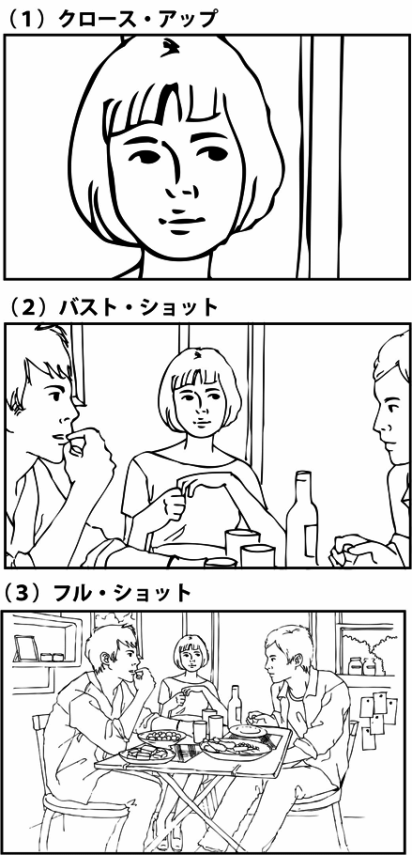
す
スーパー（スーパーインポーズド･タイトル）
■画面上に重ねて表示される文字（タイトル）。台詞や場所･時間等を示す字幕。スーパーインポーズ（superimposition）は元来、ひとつの映像に別の映像を重ねる多重露光の意だが、日本では文字を多重露光したスーパーインポーズド･タイトルの略語として、日本語字幕などに〈スーパー〉の語句を用いた。字幕スーパーは英語では"subtitles"と言うが、副題の意の"サブタイトル"と混同しやすく、スーパーの語が広まったと思われる。
スーパー35／スーパー16［Super 35（英）］
■撮影の方式、およびワイドスクリーン方式のひとつ。〈スーパー35〉は、〈サウンド･トラック〉用に残しておくフィルムの端の部分まで映像記録に用いることによって、通常の35ミリの撮影より大きな面積のフルフレーム画像で撮影するもの。また、同様の仕組みにより16ミリ･フィルムで撮影する方式を〈スーパー16〉と呼ぶ。スーパー16の場合、16ミリで撮影したネガから、35ミリ･フィルムに拡大･複製を行なってプリントを作成（ブローアップと呼ぶ）し、これを通常の劇場で上映する。
■かつて、スコープサイズで上映された作品はテレビ放映の際、画面の上下に黒帯を設けるのではなく、主に画面の左右を切ってスタンダードサイズであるテレビ画面に合わせて放映されていた。ビデオソフトが普及した時も、アメリカの一般家庭ではテレビ放映同様のテレビサイズに合わせた画面が好まれた。その需要に応じてハリウッドの映画会社は、同じ撮影素材で劇場上映サイズとテレビ放映サイズに遜色がない方式を模索。その結果生まれたが〈スーパー35〉だった。撮影時にフルフレーム画で撮影されたフィルム素材は、劇場公開用に上下がトリミングされ、左右を"アナモルフィック･レンズ"で圧縮したスコープサイズのプリントが作られ、テレビ放映やビデオ用には素材の上下左右をトリミングしたビデオマスターが作られた。このため、ビデオ版では映像の左右が切られている代わりに劇場版で映らなかった上下部分が見え、どちらのサイズが"オリジナル･マスター"なのか判別しにくいという問題も生まれている。このソフト制作方式はDVD時代においてもしばらく継承され、アメリカのスーパー35方式作品では、画面の上下に黒帯のある劇場用スコープサイズと、テレビ画面に合わせたフルサイズという、2種のDVDソフトが発売されていた。スーパー35方式には、アナモルフィック･レンズを使用した映像と比べて画面に歪みが少ないという利点があり、さらにフィルム性能の向上で画像拡大による画質劣化という弱点も克服されていた。このことから、近年ではソフト制作に関係なく、スーパー35がスコープサイズの際に重用されるようになっている。
●スーパー35
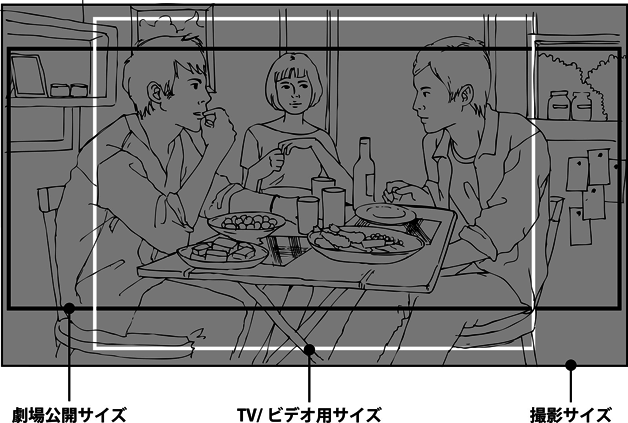
ズーム･イン／ズーム･アウト
■撮影の技法。ズーム･レンズを使用してカメラの焦点距離を変化させること。これによってドリーやレールを設置できない場合でも、カメラを動かすことなく〈ロング･ショット〉から〈クロース･アップ〉へとショット･サイズを変えることが可能になる。被写体に近づくズームを〈ズーム･イン〉、被写体から離れてゆくズームを〈ズーム･アウト〉と呼んでいる。
スクリーン･クォータ［screen quotas（英）］
■興行に関する法制度。主に自国の映画産業保護を目的に、年間に一定量（日数やスクリーン数が基準）、自国の映画を上映することを、映画館に対して法的に義務付ける制度。第一次大戦後の1927年、アメリカ映画の氾濫を背景にイギリスで始められ、その後フランス、イタリアなどの欧州諸国や南米、アジアの一部地域に広まっていった。日本でも39年に施行された〈映画法〉により、45年の終戦まで行なわれていた。また、日本が63年に経済協力開発機構に加盟し翌年"外国映画の自由流通化"が始まると、業界は65年に自主的に"日本映画特別上映制度"を設け、外国映画の〈ロードショー〉劇場において一定期間日本映画を上映することで、市場を拡大する洋画に対し国産映画の保護を図ったこともあった。韓国ではクォータ制が現在も実施されているが、貿易規制の側面もあることから、撤廃か存続かで何度か議論になっている。
■画面比率。スクリーン面積の広さや大きさではなく、スクリーンに映写される映像の縦横の比率を指す。画角とも言われ、英米での呼称に倣って"アスペクト比"の語もよく用いられるようになった。ある撮影･映写の規格が採用した画面比率それぞれについて名称が与えられており、今日に一般的なものに、映画初期からの〈スタンダード･サイズ〉、テレビの普及に対抗して1950年代半ばから主流となった横長の〈スコープ･サイズ〉＝通称シネスコ、80年代以降主流の〈ビスタ･サイズ〉の三種がある。スタンダードについても、無声映画時代とトーキー（音声付き映画）以後ではサイズ（比率）が異なり、またビスタでも通称〈アメリカン･ビスタ〉と〈ヨーロピアン･ビスタ〉の二種が存在。また、スタンダードよりも横長のものすべてを総称して"ワイドスクリーン"と呼ぶこともある。それぞれの具体的な比率は縦横比の数値で示され、慣例として縦の長さを基準＝1とし、日本では縦：横の順で「1：1.5」のように記してきた（テレビモニターや海外での呼び方に合わせ"横：縦＝○○：1"と記述する例もみられる）。なお、いずれの規格であってもフィルム撮影時と映写時のサイズが異なることはよくあり、またそれぞれの規格についてもさらに微妙に異なる比率を採った例が多々みられるが、ここでは一般に普及した基本的な映写サイズについて登場順に整理しておく。
■スタンダード･サイズ（フルフレーム）......縦横比は1：1.33。エジソンらによって開発された映画用フィルムが1905年に映画製作者国際会議によって標準規格として採択され、11年には1.33が世界的な標準サイズとなった。無声映画時代からトーキーの登場まで、フィルムの1コマぶんいっぱいを使って映像を記録している。フィルムの開発については〈映画用フィルム〉の項を参照、旧来のテレビのサイズもこれに基づく。
■スタンダード･サイズ（アカデミー比）......縦横比は1：1.37。トーキーでは、フィルムの左端にサウンドトラック帯を設けそこに音声を記録する。すると撮影画面も従来の左端が削られることになり、画面比率は正方形に近くなった。この画角は作り手側より構図的に不適当とされ、独自の比率を用いるところもあって混迷したため、32年、アメリカの芸術科学アカデミーが1：1.375をトーキーの標準と定める。一般には1：1.37の数値で扱われ、別称として〈アカデミー比〉と呼ばれた。ワイドスクリーン普及の50年代までは原則的にこのサイズ。今日ではこのサイズを正しく上映できない劇場も多い。
■シネラマ......縦横比は1：2.88。ただしシネラマはサイズの呼称ではなく、撮影･上映方式の商標名。詳細は〈シネラマ〉の項を参照。40年代にテレビ放送が始まったアメリカではテレビの人気に対抗し、大型画面で観客を劇場に呼び戻そうと思案、その新方式のひとつとしてシネラマが誕生した。第1作は52年公開の「これがシネラマだ」。
■スコープ･サイズ（シネマスコープ）......縦横比は1：2.35。様々な方式があるワイドスクリーンのうち1：2以上の横長サイズを総称して〈スコープ･サイズ〉と言い、シネマスコープはその中の商標名のひとつだが、日本では最初に普及したワイド方式であったことからすべて〈シネスコ〉サイズと呼び倣わしている。詳細は〈シネマスコープ〉の項を参照。シネラマは特異な方式であったため、通常の撮影でより簡易に横長画面を得られるよう開発、カメラ･映写機に特殊レンズを取り付け画面を左右に拡張するかたちで実現した。第1作は53年の「聖衣」、日本では57年の「鳳城の花嫁」。特殊レンズの特性によりピントの合う範囲が浅く、当初はクロース･アップが避けられたこともあったが、のちに高性能レンズが開発されその問題は解消される。50年代後半から70年代まで主流、一時激減したものの、今日では題材や意図に応じスコープ･サイズを採用することが多い。
■ヴィスタヴィジョン......縦横比は1：1.85。ただしヴィスタヴィジョンはパラマウント社が開発したワイドスクリーンの一方式であり、サイズの呼称ではない。スコープ画面は横に拡張しているので原理的に歪みや画質劣化を生じることがある。そこで通常は縦方向に走らせるフィルムを（写真カメラのように）横方向に走らせて撮影、2コマぶんの面積を1コマに使い、その画像を圧縮して通常のプリントに焼き付けた。これで歪みがなく、画質も先のいずれよりも鮮明となる。第1作は54年の「ホワイト･クリスマス」。撮影時の画角は1：1.66ほどだがプリント作成時にトリミングの必要があり、パラマウント社が1.85を採択した。だが主に専用カメラ等のコストの問題で、特殊効果の撮影を除くと、純粋なヴィスタヴィジョンの劇場映画は60年代に途絶える。
■70ミリ映画......縦横比は1：2.2を中心に様々。35ミリでなく70ミリ･フィルムを用いた映画には様々な方式があり、サイズもまた多種に存在する。詳細は〈70ミリ映画〉の項を参照。通常の2倍の幅をもつフィルムで撮影しそのままプリントを作成･上映するだけで鮮明な大型画面が得られた。一般的な方式の最初期作は55年の「オクラホマ！」。
■ビスタ･サイズ／アメリカン･ビスタ......縦横比は1：1.85。この画角はユニヴァーサル社の初のワイドスクリーン作品「雷鳴の湾」（53）でも採用。この時はスタンダードで撮影した画の上下を映写時に隠し、ワイドの比率で映写したが、60年代にレンズとフィルムの性能が向上し、この方式でも一定の画質が得られるようになった。一方、（旧型の）テレビ放映やビデオにスコープ･サイズは不適当とみなされ、また作り手にとっては特殊レンズで歪めることなくワイドの画角を使えることから、マスキング方式の1.85サイズで上映し、テレビ･ビデオ化に備えるかたちが70年代より広まっていく。こうした方式による1：1.85の比率を、日本ではアメリカン･ビスタと呼んでいる。日本では80年代に入ると一部作品を除き一斉にスコープからアメリカン･ビスタに切り替え、今日でも主流。
■ビスタサイズ／ヨーロピアン･ビスタ......縦横比は1：1.66。アメリカン･ビスタと同様の方式で、比率はヴィスタヴィジョンの撮影時サイズを採用したもの。フランスで主に使われるため日本ではヨーロピアン･ビスタと称しているが、ディズニーアニメでも採用されていたし、またイギリスやイタリアは1.85の方が多い。
■ワイドテレビ......テレビは通常、横縦比で表わし、スタンダードは4：3、ワイドテレビは16：9としている。映画式に直すとワイドは1：1.77に相当、厳密にはアメリカン･ビスタのサイズに合致しないが、およそで黒味が出ないよう対処している。（山下慧）
スクリーン･プロセス→「プロセス･ショット［process shot（英）］」
スクリプター（記録）［script supervisor ／ script girl（英）］
■撮影現場における記録を担当する人物。映画の撮影は基本的に順撮りではないため、同じシーンを全く別の日に撮影することが少なくない。役者の衣裳やメイク、美術や小道具、撮影尺、音声･台詞の変更など撮影現場の状況を記録し、編集時に連続したシーンとして成立させるように〈スクリプト用紙〉に詳細を記録するのが〈スクリプター〉の仕事。スクリプターは和製英語で、英語で〈script girl〉と呼ばれるように、女性のスタッフが多い。
スクリューボール･コメディ［screwball comedy（英）］
■〈コメディ〉のサブジャンル。男女のカップルがハイテンポな会話を繰り広げながら、誤解を重ねて予想もしなかった展開を見せるコメディ。"上流社会の艶笑劇"とされることもあり、規制が存在したため直接的な性描写はないが、性行為に至るまでの可笑しな行動や過程を描く。
■"Screwball"とは、野球の変化球の一種であり、変化球のように先の展開が読めないことから命名された。また、"奇人･変人"を意味するスラングでもあり、一風変わった主人公が登場する作品が多いことから命名されたとする説、もしくはその両者の掛け言葉とする説もある。「或る夜の出来事」（34）、「赤ちゃん教育」（38）、「ヒズ･ガール･フライデー」（40）などが代表作で、トーキー移行後の1930〜50年代にかけて人気を集めた。世界恐慌に始まる不景気な世の中からの逃避を求めた観客に支持されたことが、隆盛の理由とも言われている。
スター･システム［star system（英）］
■映画会社が専属のスター俳優の人気を利用し、スター中心の企画や宣伝･作品制作を行なう方式。単に自然発生的に生まれ出たスター人気に依存するばかりでなく、自社で発掘した俳優を宣伝や目立った企画でスターに育て上げ、その特性を活かせる作品で売り、計画的に起用し人気を維持させる。一般に、1910年から20年の間にハリウッドでかたちづくられ、30〜40年代が全盛期、50年代以降のスタジオ･システム崩壊に伴い衰退していったとされる。スターを優先的に考え企画･製作･宣伝する戦略は今日でも様々な国の大手映画会社や大作で恒常的にみられ、常識的な戦略として定着したとも言えよう。
■企業戦略でスターを作り売り出した初期の例としては、まだ個々の俳優名は一般に知らされることがなかった時代の1910年、"バイオグラフ･ガール"という通称が知られていたフローレンス･ロレンスを、バイオグラフ社から引き抜いたIMP社（ユニヴァーサル社の前身）が、偽の死亡記事を新聞に載せて話題を煽ったのち、IMP映画に主演と宣伝し女優名を認知させた。これによりロレンスは"スター第一号"としてアメリカ映画史に名を残すことになる。一方、名実ともに最初のスーパー･スターと言われ"アメリカの恋人"の渾名を得たメアリー･ピックフォードは、その容姿にあわせ24才になっても清純可憐な少女役を与えられ続けた。セダ･バラは偽のプロフィールにしたがって〈ヴァンプ〉として売り出され、妖婦役ばかりに起用される、等々がスター･システム成立過程でのエピソードとして挙げられる。日本では、映画に女優を採用し最初のスター女優･栗島すみ子を生んだ松竹が、栗島･川田芳子･五月信子ら人気女優を共演させた「母」（23）以降にスター･システムを採ることになる。
スタジオ･システム（撮影所システム）［studio system（英）］
■大手映画会社の一群が業界の主体をなす体制下で、スタジオ（映画会社）が製作･配給･興行までを一貫して管理し支配する映画製作の形態。基本的には黄金期のハリウッドの仕組みを指すが、他の映画先進国でも一定時期に同様の形態をとっていたところがある。アメリカではエジソン社ほか当時の大手で1908年に設立したモーション･ピクチャー･パテンツ･カンパニー（MPPC）が市場独占を図ったあたりに萌芽がみられ、ハリウッドの〈メジャー〉が成立した20年代から本格的に始動。48年の〈パラマウント判決〉で興行部門の切り離しが課せられて以後、システムとしては終焉を迎える。日本でも戦後の50年代半ばから70年代初頭までの"大手五社"占有時代は、同様の撮影所システムで業界が成立していた。
■スタジオ･システムの映画会社は、撮影用スタジオを自社で持ち、スタッフや俳優を専属社員として抱え、首脳部の指導と管理により映画を作っていく。制作時は確実な収益を得るため、経済効率を重視しつつ、より広範な大衆に受け入れられる作品の定期供給を基本とする。社員には専門･分業制を敷いて一定の技術力を保持、売れると見込んだ企画に合わせてスターやスタッフを配置し、スタジオ撮影を中心として予算･スケジュールを徹底管理し効率化を図る。〈古典的ハリウッド映画〉の特性はこうした体制に応じつつ技能を発揮することで磨かれていった。会社は一方で、恒常的に市場を確保しておくため、劇場チェーンを子会社として抱えていた。市場の確保と作品供給は相関関係にあり、〈ブロック･ブッキング〉方式で供給を管理しつつ、顧客を引き留めようと〈スター･システム〉を用い、会社カラーを作り上げ、得意ジャンルや路線を設けて、大作･低予算映画とりまぜた安定的かつ恒久的な供給を維持した。こうした製作･配給･興行を一括管理する"縦の系列化"の構造は〈垂直統合〉と呼ばれている。
スタンダード･サイズ→「スクリーン･サイズ［aspect ratio（英）］」
スタンド･イン［stand-in（英）］
■撮影準備の段階でカメラポジションや照明位置を確認する為に、実際に俳優が立つ位置に代理として立つ専門の俳優のこと。ハリウッドでは出演するスターに背丈や肌の色の似た俳優に同じ衣裳やメイクを施して照明を調整する。予算の都合で、手のあいたスタッフや助監督がこの役割を兼任する場合も少なくない。
スタントマン［stuntman／stunt double（英）］
■危険なアクション場面を出演俳優の代わりに演じる専門の俳優。これとは別に、主に身体の部分的な吹き替えをする代役を〈ボディ･ダブル〉、リハーサル時の代役を〈スタンド･イン〉と呼んでいる。ハリウッドスターは自分と体形の似た専属のスタントマンを雇っているが、近年はアメリカン･コミックスを原作に持つ作品で、CGによって作られた〈デジタル･スタント〉と呼ばれる手法が使用されている。
スチール［still photography（英）］
■映画のコマを拡大した写真、または映画の現場で撮影された宣伝用静止画写真のこと。かつて映画の撮影所には〈写真部〉が存在し、〈スチルカメラマン〉と呼ばれる作品専属のスタッフが、リハーサル中に本番と同様の状況を撮影したり、撮影現場をスチル用に再現して撮影することで、映画の宣伝用素材を作っていた。現在ではその多くをフリーランスの人材が担っており、有名写真家を起用することで作品の話題作りに利用することもある。
■撮影の機材。手持ち撮影を行ないつつ画面の揺れを軽減するシステム。撮影者が装着したボディスーツと、カメラとをスプリングアームで連結し、スプリング部分が体の振動を吸収することで、カメラにブレを伝導させない仕組み。防振装置として主に移動撮影に使用され、障害物を避けながら走るような撮影においてもブレのないスムーズな移動映像を実現させた。シネマ･プロダクツ社が撮影監督ギャレット･ブラウンと共に開発、「ウディ･ガスリー／わが心のふるさと」（76）で初めて映画に使用され、「シャイニング」（80）の撮影で知名度を得たが、重量があって操作が難しく、オペレートには訓練が必要とされるため、撮影部のなかでも専門職となる傾向にある。
ストーリーボード→「絵コンテ（画コンテ）／ストーリーボード」
ストップモーション･アニメ［stop motion animation（英）］
■アニメーションの原理を利用して、可動式人形などの被写体を一コマずつ、わずかに動かしながら撮影し、映写時にはその人形が独自に動いているように見せる特殊技術。
■この技法だけで撮影した〈人形アニメーション〉も存在するが、実写映画ではSFX技術の一つとして、実在しない生き物が登場する場面などに利用される。特殊効果スタッフのウィリス･H･オブライエンが1925年の「ロスト･ワールド」で恐竜を動かし、実写映画の特殊効果として確立した。続いて「キング･コング」（33）で特殊効果の花形となり巨猿ほかの巨大生物ものを連作、オブライエンの弟子であるレイ･ハリーハウゼンは、50〜70年代にかけてこの技法を応用した〈ダイナメーション〉により、「原子怪獣現わる」（53）、「アルゴ探検隊の大冒険」（63）などの作品を手掛け、多数のクリーチャーを生み出した。その後もジム･ダンフォースやフィル･ティペットなどの特殊効果マンが専門でこの技術を継承したが、「ジュラシック･パーク」（93）でこの技法がCGに取って代わられて以後、CG全盛となった現在では、オマージュとして限定的に用いられるのみとなっている。
スニーク･プレビュー［sneak preview（英）］
■配給･興行に関する用語。映画公開前に行なわれる〈試写〉のうち、作品名、スタッフ、出演者など一切の情報を明かさないまま、一般の観客を集めて行なう限定的な試写。観客の反応を見て宣伝の方向性を検討するため、または、映画そのものが受け入れられるかどうかチェックするために行なわれる。後者の目的の場合、ハリウッド映画では観客の反応次第で映画の内容が変更されることも少なくない。
スパイ映画［spy film（英）］
■物語の題材･内容による映画区分。広義では、敵対勢力の諜報活動あるいはその遂行者（スパイ）の姿を描いた犯罪映画･サスペンス･アクション･実話ドラマ･戦争映画などの総称として用いる。時代背景にあわせ多様なスタイルで作られるが、およその作品で国家のイデオロギーやスパイの忠誠心･背信が物語の重要な要素となる。また米ソ冷戦以後は、犯罪映画の派生物から政治色を増すものに変化したとも言われる。
■第一次大戦と各国情報機関の創設にあわせてスパイを扱った映画が現われ、まずは連続活劇の題材として1910年代にスパイものが群出。30年代には戦時の実話をモデルとした時局映画や、「間諜X-27」（31）、「マタ･ハリ」（32）など女スパイの"間諜映画"が多く作られた。第二次大戦期は「生きるべきか死ぬべきか」（42）や「死刑執行人もまた死す」（43）など反ナチスのプロパガンダ的作品が目立ったが、戦後は冷戦･情報戦を背景にスパイ小説が発達し、同様にスパイ映画も活性化。ヒッチコックは30年代から60年代までスパイが暗躍するスリラーを作り続け、この間の英国製サスペンス･冒険活劇が再興した50年代に、スパイ映画の型が確立したとみなされる。62年に英国製「007」シリーズが登場すると世界的な大ブームに発展、スパイ映画＝アクション娯楽作のイメージを浸透させつつ、「国際秘密警察」シリーズ（63〜67）や「電撃フリントGO!GO作戦」（66）ほか同類の荒唐無稽な娯楽活劇、シリアス路線である「国際諜報局」（64）のハリー･パーマー･シリーズ、諜報活動の倫理を問う「寒い国から帰ったスパイ」（66）など、多彩なスパイ映画が続々と作られた。このスパイ映画ブームは70年代に入ると沈静化、「007」シリーズもエンタテインメント路線で新生を繰り返し、冷戦終了後も仮想敵を模索しながら継続。90年代以降も、「007」シリーズや、「レッド･オクトーバーを追え」（90）のジャック･ライアン･シリーズ、テレビドラマの新規再生「ミッション：インポッシブル」（96）シリーズといった活劇が主流をなし、懐旧的コメディ「オースティン･パワーズ」（97）、家族向け冒険活劇「スパイキッズ」（01）などのシリーズが派生的に作られている。なお日本映画においては、一部の忍者映画もスパイ映画の一種とみなされ「忍びの者」（62）シリーズがその代表例に挙げられるほか、戦時秘話的なスリラー「陸軍中野学校」（66）シリーズや産業スパイを扱う「黒の試走車」（62）以下の「黒」シリーズなどが異色スパイ映画に数えられる。
スピンオフ［spin-off（英）］
■ある人気作品の登場人物や設定を借用･援用して製作された派生作品。同じ主人公の新たな物語を描く続篇やシリーズ作品と異なり、元作品の脇の人物を主人公に据え、あるいは設定だけが関係ある世界で、別の物語を描く。
■もともとは企業内の一部門が別の企業として独立することを指すビジネス用語だったが、そこから派生して映像作品にも使用されるようになった。シリーズ化の一環として展開され、基の作品のストーリーが完結している場合や、シリーズの世界観を広げたい場合に製作されることが多く、まずテレビ作品の類型シリーズ化において用語が使われ始め、映画マスコミでも使われるようになったのは90年代以降。例として、「逃亡者」（93）から派生した「追跡者」（98）、「バットマン･リターンズ」（89）からは「キャットウーマン」（04）、「緋牡丹博徒」シリーズからは「シルクハットの大親分」（70）、「踊る大捜査線」シリーズから「交渉人 真下正義」（05）、などが作られた。
スプラッシュ
■外国映画の配給･興行に関する日本の業界用語。かつての二本立て興行主流の時代、主に地方の映画館で、メインの作品に併映された添え物の（外国）映画。"splash＝まき散らす"の意から、当初はロードショー体制において、順次公開に値しないとみなされた作品をロードショーでなく直に系列館で封切りする場合を指した。のち、全国一斉公開と地方の二本立て興行が併存する時代になると、都市部で単品上映されている大作が地方では二本立て同時公開されたが、配給の事情により単品をセットで用意できない時に、地方のみで初公開される映画を添え物とした。80年代はこうした地方のみの上映作をスプラッシュと呼び、主に買い付けたまま劇場公開の決まらなかった低予算映画やノンスター映画があてがわれたが、その中にも佳品が存在したことから一時は都市部にスプラッシュ専門館も開館。しかし単品の全国一斉封切り体制が定着してからは原則的に消失した。
■ホラーもしくはスリラーのサブジャンル。スプラッターは"飛び散る"の意で、血しぶきを伴うような派手な殺戮･暴力場面を見せ場とするホラー作品。別称に"血しぶきホラー"や"ゴア（流血･血糊）フィルム／gore film"など。必ずしも心理的恐怖を目的とせず、首や手足･内蔵が飛び散るといった誇張表現がしばしば取られ、特殊メイクによる露骨な流血描写を楽しむ観客も多い。演技力や重い主題抜きでも評価を得られるため、低予算映画でよく作られ、新人作家の名刺代わりとなることも多い。〈プロダクション･コード〉の規制を受けない〈エクスプロイテーション〉系の作品で発祥し、"ゴアの帝王"ことハーシェル･ゴードン･ルイス監督の「血の祝祭日」（63）や「2000人の狂人」（64）が嚆矢とされる。70年代の「悪魔のいけにえ」（74）や「ゾンビ」（78）などの評価･人気を経て、80年代にアメリカ映画の新ジャンルとしてブームとなった。「13日の金曜日」（80）や「エルム街の悪夢」（84）の殺人鬼キャラクターものは大ヒットによりシリーズ化、「死霊のはらわた」（81）や「ブレインデッド」（92）は新進作家の認知作となり、日本でも「死霊の罠」（88）が"日本映画初の本格スプラッター"と宣伝されている。なお〈スラッシャー映画〉と重なる部分が多く、両者を同一視する記述も時折みられる。
＊参考「スラッシャー映画［slasher film（英）］」
スペクタクル［spectacle（英）］
■スペクタクルは壮大な光景の意で、大群衆や大規模な仕掛けの場面が見せ場となった作品を、ジャンル風に"スペクタクル映画"と称することがある。映画ジャンルで言えば、コスチューム･プレイ、エピック、戦争映画、ディザスター映画、怪獣映画、アクション･SF･西部劇の大作など。フランスの理論家ギー･ドゥボールは自著およびその映画化「スペクタクルの社会」（73）で社会学の視点からスペクタクルの本質を解説したが、同作が2001年のカンヌ映画祭で再評価されて以後、〈スペクタクル〉の語は映画の本質を問う概念として用いられることが多くなっている。
スペース･オペラ［space opera（英）］
■SFのサブジャンル。宇宙活劇。狭義では1920〜30年代のアメリカのパルプ雑誌（大衆娯楽小説誌）に掲載されていた冒険活劇SFを指し、従来の冒険活劇や西部劇の舞台･小道具を、宇宙･異星や宇宙船･光線銃に置き換え、ヒーローの主人公が悪者を倒すという荒唐無稽な勧善懲悪ものが多い。映画では「フラッシュ･ゴードン」諸作や「バック･ロジャース」（39）などの連続活劇が相当。「スター･ウォーズ」（77）はその現代的再生であり、SF映画ブームに乗って80年代に映画のサブジャンルともなりかけたが、次第に沈静化。2010年代になって、新しい鉱脈を求め映画化企画がいくつか進行している。
■ホラーもしくはスリラーのサブジャンル。スラッシャーは"切る者･通り魔"の意で、特にナイフや斧の刃物を用いる異常者･殺人鬼が人を殺していく恐怖映画。内容的に〈スプラッター映画〉と重なるところがあり、連続殺戮映画の初期代表作「血の祝祭日」（63）などはスプラッター映画ともスラッシャー映画とも呼べるが、日本ではスプラッターの語が先に広く浸透、同類作の「13日の金曜日」（80）などと共にスプラッター映画と称された。厳密な区分を求めるならば、殺人鬼ではない「ゾンビ」（78）はスプラッター、血しぶきを控えた「ハロウィン」（78）はスラッシャーと分けることも可能だが、スラッシャーの語はマニアックなファンや専門研究のみで使い分けされる傾向にある。スラッシャー映画はマイケル･パウエルの「血を吸うカメラ」やヒッチコックの「サイコ」（60）を始祖とし、60年代イタリアのダリオ･アルジェントやマリオ･バーヴァによる猟奇殺人映画群＝〈ジャーロ映画／giallo〉（ジャッロ、または複数形のジャッリ）の影響を受け、ボブ･クラークのカナダ映画「暗闇にベルが鳴る」（74）が本格スラッシャーの第一号となった。「ハロウィン」公開時にはサブジャンルとして認知され、80年代のスプラッター･ブームに進展。殺人鬼はマスクを被った（あるいは正体を隠した）異常者で性的なトラウマを動機とすることが多く、猟奇的な殺人を繰り返し、演出上では殺人鬼の主観カメラを多用する、などが主な特徴。「スクリーム」（96）ではその法則がパロディとして提示されている。
＊参考「スプラッター映画［splatter film（英）］」
スラップスティック［slapstick comedy（英）］
■コメディのサブジャンル。"slap=叩く"や滑ったり転んだりやパイ投げなどの身体的なアクションやドタバタによって成立するコメディ。別称はドタバタ喜劇。必ずしもセリフを必要としないため、〈無声映画〉時代に流行、1912〜30年が全盛期とされる。
■"slapstick"とは、道化師が二本の木を打ち合わせて大きな音を出す意で、派手なドタバタを繰り広げることから映画でも使われるようになった。当初は過激なギャグ映画に対しては〈ノックアバウト･コメディ〉と称したが、スラップスティックの語が用いられてからは廃れた。マック･セネット率いるキーストン撮影所の〈キーストン･コップス〉と呼ばれるコメディ作品群が人気を集め、ロスコー･アーバックル、チャールズ･チャップリンなどの喜劇スターによってジャンルが確立され、さらに、バスター･キートンやハロルド･ロイドが幅を広げ、ローレル＝ハーディやマルクス兄弟などトーキー移行後の掛け合い型喜劇にも受け継がれた。
＊参考「キーストン･コップス［Keystone Kops（英）］」
3D映画（立体映画）［3-D（three-dimensional）film（英）］
■映画の形態。制作時や映写･鑑賞時に何らかの工程を加え、映像を立体的に見せる映画。旧来は〈立体映画〉と呼ばれてきたが、2000年代以降の流行で〈3D映画〉の呼称が一般化した。1910年代よりアメリカ映画を中心にして発展し、展覧会映像や博物館映像では恒常的に上映されてきた。一般興行では、技術革新と興行上の要請とが合致した時にブームが起こり、50年代に第一次、70〜80年代に第二次のブームを経て、2000〜10年代の第三次ブームに至る。
■立体写真はフランスで1869年には完成しており、映画の立体視化も黎明期より試みられている。最初の立体映画の興行は1915年（アメリカ）。35年にはMGMが「飛び出す映画（Audioscopiks）」を製作し"オーディオスコピックス"シリーズを展開、日本でも36年に上映された。これらは専用の映写機による映像を赤青メガネで鑑賞する"アナグリフ方式"で、カラー映像に不向きという短所がある。その欠点を解消した"偏光フィルター方式"が開発され、テレビ放送に対抗する意図で50年代に、「ブワナの悪魔」（52）のヒットを契機として第一次ブームが発生。「肉の蝋人形」（53）や「大アマゾンの半魚人」（54）などに続いて「ダイヤルMを廻せ！」（54）も立体映画として製作されたが、完成時にはブームが終了し通常作として公開された。この時期は日本でも短篇で松竹の「決闘」や東宝の「飛び出した日曜日」（53）など、短篇の立体映画が製作されている。60〜70年代の日本映画や香港映画の遅れてきた小ブームに続き、80年代はケーブルテレビでの旧作放映がきっかけとなりブームが再燃、主にホラー映画でSFXを用いた「13日の金曜日Part3」（82）、「ジョーズ3D」（83）などが作られた。一般興行はこれも一過性のブームに終わったが、「キャプテンEO」（86）のようなアトラクション映像では細々ながら継続している。90年代にデジタル技術が導入され、"液晶シャッター方式"のメガネが開発されて映像品質も向上、デジタル上映方式を併用し、2000年代から〈IMAX〉作品を軸に立体映画が再注目される。設備投資も低廉化する一方、テレビのワイド画面化やデジタル放送開始に向けた家電業界からの需要もあって、ゼロ年代末に第三次ブームが仕掛けられ、2010年は"3D元年"の標語で盛り上げられた。また近年は旧作の通常映画を3D仕様に加工して再公開する例も多くみられる。
スリーパー［sleeper（英）］
■配給･興行に関する業界用語。直訳は"眠っている人"の意で、事前の宣伝が少ない、批評家の評価が低いなどの理由で、期待値が低かったにもかかわらず、公開したところ予想を覆すヒットとなった映画。大化け映画。「シックス･センス」（99）、「マイ･ビッグ･ファット･ウェディング」（02）などが代表的。近年の邦画では「かもめ食堂」（05）がこれに当たる。
■映画や文芸などのジャンル。スリル（thrill）は"恐怖や興奮でぞくぞくする感覚、戦慄"の意で、〈サスペンス〉を軸として観客にハラハラ･ドキドキのスリルを与える映画を〈スリラー映画〉と呼ぶ。厳密な定義はなく、ジャンル成立以前は"サスペンス･フィルム"や"ショッカー"の呼称も使われ、時代や作品によって〈サスペンス映画〉の語に置き換えられた記述も多い。文芸分野では先行して"スリラー小説"の呼称が使われていたが、一説に、第二次大戦中から戦後にかけての1940年代、"ハードボイルド"をはじめとするスリラー小説が流行し、同時に（のちにフィルム･ノワールと呼ばれる）同傾向の映画群が量産され、スリラー映画の呼称も一般化したという。スリラー映画の多くは、犯罪映画･探偵映画･スパイ映画･冒険活劇といったジャンル映画の定型を借りつつ、そのジャンルの核を追究するのでなくスリルを与えようとする（たとえば探偵映画ならば犯人探し･トリック描写を重視するのでなく、捜査過程のサスペンスを楽しませる）ため、犯罪スリラー、冒険スリラーといった複合型で使われることもある。
■スリラー映画の初期の様態は「カリガリ博士」（19）のドイツ表現主義や、グリフィスの「東への道」（20）や「嵐の孤児」（22）などに見られる、との指摘もあるが、スリラー映画の型式を極めジャンルとして普遍化したのはアルフレッド･ヒッチコック監督であるとの見方が一般的。イギリス時代に「下宿人」（26）で本格スリラーを手掛け、1930年代以降、「三十九夜」（35）や渡米後の「レベッカ」（40）、「疑惑の影」（43）など一貫して"ハラハラ･ドキドキの映画"を作り続け、スリラー映画隆盛の契機をなした。この40年代は、社会不安を反映した作品の増加、戦中･戦後の製作事情が安上がりな作品を選んだこと、ヨーロッパ出身監督たちが新しいセンスを犯罪映画群に持ち込んだこと、などを背景に、低級とみなされていたスリラーがアメリカ映画に定着。ヒッチコックは全盛期の代表作がおよそスリラー映画の代表作となり、"スリラーの神様"とも称された。同時期から50年代にかけては「第三の男」（49）などイギリス映画でもスリラーが復興。60年代には「サイコ」（60）で"サイコ･スリラー"、「007」シリーズで"スパイ･スリラー"というようにサブジャンル風に多様化し、「大統領の陰謀」（76）の"政治スリラー"、「氷の微笑」（92）の"エロティック･スリラー"、「ザ･ファーム／法律事務所」（93）の"法廷スリラー"、ほかにも心理スリラー･軍事スリラー･テクノ（謀略）スリラーなど、折々に複合分野が生まれた。日本では戦後の46年から50年頃にかけて大映が「パレットナイフの殺人」（46）や「多羅尾伴内」シリーズ（大映版：46〜48）などの探偵･犯罪映画を集中的に製作、宣伝でもスリラーの語が用いられ徐々に定着し、のちにまとめて〈大映スリラー〉と呼ばれる。その後もスリラー映画は各社で作られたが、他のジャンルで整理されることが多い。80年代頃からテレビの2時間ドラマで"サスペンス"が席巻すると、スリラーはサスペンスの語に置き換えられてしまった。
せ
製作委員会
■映画製作および興行を目的とし、その作品ごとに複数の出資者（企業）から構成される共同企業体。中心となる幹事会社が、出資者から集めた資金を使って映画を製作する。完成した映画に対する権利･利益等は出資比率に応じて配分される。
■製作委員会には二つの側面がある。一つは投資家の集まりとしての側面。作品制作は下請けの製作会社に任せ、出資者はそれぞれの投資に見合う収益を得ようとする。もう一つは、製作･興行における各機能を持った企業が集まり役割を分担する、共同企業体としての側面。製作、興行、宣伝の各分野で、それぞれが得意とするビジネスを展開することで、映画の興行に貢献する。映画会社が単独で製作から興行まで行なっていた時代には存在しなかったが、予算の高額化や興行のハイリスク化などに伴って考案され、現在では日本映画の製作スタイルの主流となっている。作品ごとに名称はまちまちで、"〜パートナーズ"などと称したり、個別の名称を決めずに出資者名を列挙するだけだったりの場合もある。
西部劇［western（英）］
■アメリカの西部開拓時代における人々の生活や背景を題材にした映画。かならずしもアメリカ西部が舞台ではない。西部劇は映画史初期から製作され、1910年代にジャンルとして確立された。当初はカウボーイやガンマンを主人公にしたアクション映画が中心だった。先住民（インディアン）を敵役にした勧善懲悪ものが多く、フロンティア･スピリット（開拓精神）を描く英雄伝･武勇伝の数々がハリウッドでは50年代まで西部劇として大量生産された。60年代にはテレビ番組で西部劇ドラマが製作されるようになり、家庭での視聴が可能になると映画における西部劇は衰退。また、人権や人種問題が叫ばれ始めたことから西部劇における先住民の描き方も問題となり、アメリカン･ニューシネマの台頭やベトナム戦争などの社会情勢によって、開拓精神を描くこと自体が過去のものとなった。そのような背景からハリウッド製西部劇は徐々に姿を消していったが、現在も数は少ないながら新たな歴史観や価値観を基にした作品が製作されている。
■西部劇登場の経緯......西部劇はアメリカ文学の興りとともに形成されたジャンルで、1620年代の植民地捕囚の物語として書かれた作品群がその原点と言われている。また1890年代頃に全米を巡回した、バッファロー･ビルを代表とする『大西部ショー』のカウボーイと先住民の捕り物や曲芸といった人気演目が、西部劇におけるアクションの原形ともされている。元来、新世界として西部へ向かって開拓されていったアメリカという国では、文明の秩序と無法の開拓地が同居し、その葛藤と広大な自然との対照が雄大なロマンを生み出す所以ともなっていた。そこに歴史的事実や実在のカウボーイやアウトローの姿が融合することで、西部劇のヒーローは文明と野蛮の間に位置する存在として描かれるようになった経緯がある。サイレント期から製作されてきた西部劇映画は、エドウィン･S･ポーター監督の「大列車強盗」（03）が最初の作品とされている。この作品の成功によって、西部劇はアメリカ映画の人気ジャンルとして確立され興行の大黒柱となっていった。
■「大列車強盗」（03）......エドウィン･S･ポーター監督。郵便列車を襲う強盗一団の顛末を描き、当時のアメリカ映画としては最大のヒット作となった。強盗のひとりが画面に向かって銃発砲するカットは、自分を狙ったと観客が錯覚して劇場が混乱したとの逸話がある。本作は長く"最初の西部劇"とされてきたが、近年は異論もある。その所以は、強盗映画に着想を得ている点や西部劇は西部で撮影されるべき点を踏襲していないことを理由としている（同作はニュージャージー州やデラウェア州で撮影された）。また同作以前に、フィルムの現存しない西部劇映画の上映記録が発見された点も挙げられるが、西部劇の基本ともいえる拳銃･カウボーイハット･馬というアイテムの登場や、西部劇には欠かせない列車強盗という題材が扱われた点において映画史的評価は今なお高い。
■西部劇の隆盛......映画製作者のトーマス･H･インスは西部劇からウィリアム･S･ハートなど多くのスター俳優を輩出。また本物のカウボーイから俳優に転向したトム･ミックスが曲芸や格闘を売り物にした活劇スターになるなど、西部劇は大手ハリウッド･スタジオにとって主要作品となり、次第にドラマ性を伴うことで作品の質も向上していった。1939年に公開された「駅馬車」はその代表で、B級映画のイメージが強い西部劇に人間ドラマとアクションを絡め、雄大な西部を喚起させる映像美などによって観客を魅了。この成功が西部劇黄金期の礎を築くこととなった。主演のジョン･ウェインはスターとなり、ジョン･フォード監督とのコンビはこののち「黄色いリボン」（49）や「捜索者」（56）など多くの名作西部劇を生み出すことになる。第二次世界大戦後は、ハワード･ホークスの「赤い河」（47）、フレッド･ジンネマンの「真昼の決闘」（52）、ジョージ･スティーヴンスの「シェーン」（53）、ウィリアム･ワイラーの「大いなる西部」（58）など、ハリウッドを代表する監督たちがこぞって西部劇を製作。ゲイリー･クーパーやジェームズ･スチュワート、ヘンリー･フォンダらが主演した西部劇群は興行的成功と高い評価を受けて、西部劇は黄金期を迎えた。
■諸外国による亜流『西部劇』......60年代になると西部劇はアメリカ以外の国でも製作されるようになった。ハラルト･ラインル監督の西ドイツ製西部劇「シルバーレイクの待伏せ」（62）はフランス＝イタリア＝ユーゴスラビアの合作だったが、ターザン俳優だったレックス･バーカー主演の珍しさから日本でもヒットした。この作品の興行的成功は「騎兵隊最後の砦」（63）、「大酋長ウィネットー」（65）、「荒野の決断」（65）という続編を生み出しただけでなく、イタリア製西部劇の量産に大きな影響を与えたと言われている。日本では〈マカロニ･ウェスタン〉と呼ばれたイタリア製西部劇は、暴力性や残虐性を特徴とし、セルジオ･レオーネ監督による「荒野の用心棒」（64）の世界的な成功によって西部劇に革命を起こした（詳細は〈マカロニ･ウェスタン〉の項を参照）。これに続いて、フランス＝イタリア＝スペイン合作「レッド･サン」（71）のような大作も製作され、ロシア製、ギリシャ製、スペイン製、フランス製、アジアでは香港製、韓国製、タイ製などの西部劇も製作されている。日本では和製西部劇を〈鍋焼きウェスタン〉や〈スキヤキ･ウエスタン〉と呼び、小林旭主演の無国籍映画「渡り鳥」シリーズ（59〜62）や宍戸錠主演の「メキシコ無宿」（62）等がイタリア製西部劇に先んじて製作され、国内で人気を呼んだ。その後も、高倉健主演の「荒野の渡世人」（68）や岡本喜八監督の「EAST MEETS WEST」（95）、「スキヤキ･ウエスタン ジャンゴ」（2007）などが製作されている。
■西部劇の終焉と現在......黒澤明監督の「七人の侍」（54）を西部劇に置き換えた「荒野の七人」（60）は世界的な成功を収め、スティーヴ･マックィーンなど新たな西部劇スターを生み出した。しかし、同作におけるアウトローたちを勇者に見立てた物語は結果的に西部劇の終焉を導き、イタリア製西部劇の人気へと系譜を繋いでゆくことになった。また一方で、西部劇における先住民は野蛮人として描かれてきたが、「折れた矢」（51）や「アパッチ」（54）では先住民の立場から物語が描かれるようになり、当時の社会的な人権意識･人種問題やヴェトナム戦争に対する反戦運動と相俟って、開拓精神を描く西部劇の世界は時代にそぐわなくなった。さらに50年代後半から『ローハイド』や『ララミー牧場』、『拳銃無宿』などの人気テレビ西部劇が放映され、テレビによる映画の観客離れは西部劇ファンにも及ぶこととなった。60年代後半のアメリカ映画界にはアメリカン･ニューシネマの波が押し寄せ、モダンな感覚で滅びの美学を描いたジョージ･ロイ･ヒル監督の「明日に向って撃て！」（69）や、過激な暴力描写と終末的な美学に溢れたサム･ペキンパー監督の「ワイルドバンチ」（69）が"最後の西部劇"と称され、西部劇というジャンルに止めを刺した。その後も寡作ながら西部劇は製作され、80年代後半には「シルバラード」（85）や「ヤングガン」（88）のヒットによって西部劇復調の兆しを見せた時期もあり、新たな歴史観や価値観で開拓精神を描いたケヴィン･コスナーの監督･主演作「ダンス･ウィズ･ウルブス」（90）は、興行的成功とアカデミー賞作品賞受賞によって西部劇を再評価させた。奇しくもイタリア製西部劇でスターとなったクリント･イーストウッドは、小品ながらも独自の西部劇を製作し続け、勧善懲悪の曖昧さを暗喩させた監督･主演作「許されざる者」（92）をアカデミー賞作品賞受賞に導いている。
（松﨑健夫）
セカンド･ユニット／第二班［second unit（英）］
■本編の撮影班の中で実景やアクション場面等を担当する別班。ハリウッド映画の多くでは〈セカンド･ユニット〉と呼ばれ、専門職としてこのユニットのみの監督が立てられる。日本では〈第二班〉と称し、演出は主に助監督や撮影者が担当、監督の意図に添い、主演俳優の絡まない場面を、本隊とは別に同時期に撮影する。この場合は撮影進行の効率化が主な目的だが、助監督には演出訓練の場ともなる。また映画によってはVFXを担当する〈特殊効果班〉のような専門班を持つ場合もあり、こちらは分業化されている。
■性的魅力を売り物として、同時代のセックス･アピールを象徴･体現し一世を風靡した俳優の呼称。アメリカのジーン･ハーロウやマリリン･モンロー、"ベベ"の愛称で親しまれたフランスのブリジッド･バルドー、男優ではルドルフ･ヴァレンチノなど。異色の例では、フライシャー兄弟によるカートゥーンのキャラクター、ベディ･ブープが漫画映画のセックス･シンボル、ナチス･ドイツの女性監督レニ･リーフェンシュタールが第三帝国のセックス･シンボルなどと呼ばれた。以下は、米国でのセックス･シンボルをめぐる用語例を記す。
■1910年代、「愚者ありき」（15）のセダ･バラが〈ヴァンプ〉の惹句で売り出され、ハリウッドのセックス･シンボルを意味する代名詞が登場。20年代にはヴァレンチノら性的魅力で売る男優群が（夜の相手ならぬ白昼夢の相手の意で）〈マチネー･アイドル〉と呼ばれ、ヴァンプより健康的･小悪魔的で脚線美を売りにした性的魅力で売る女優群は（世俗でも使っていた）〈フラッパー〉と称された。フラッパーの代表者であるクララ･ボウは特に、主演作「イット」（27）にちなみ"あれ＝セックス･アピール"の意で〈イット･ガール〉のニックネームを得る。また、フラッパーを経てドイツ映画「パンドラの箱」（29）で娼婦ルルを演じ世界的人気を得たルイーズ･ブルックスは〈ボブ･ヘアのヴァンプ〉の名称と共に"運命の女"の先駆者として語り継がれる。こうした、強い性的魅力の露出は〈プロダクション･コード〉の制定により影を潜めるものの、30年代はじめにジーン･ハーロウは豊かな胸のブロンド美人としてスターの座にのし上がり、悪女役の「プラチナ･ブロンド」（31）に倣って〈プラチナ･ブロンド〉と呼ばれた。この頃からブロンド女優が人気となり、艶笑劇である〈スクリューボール･コメディ〉が流行すると、その洗練された性的魅力を発散する肉感的ブロンド女優は〈グラマーガール／グラマー女優〉の呼び名でも扱われる。またハーロウが演じた、ヴァンプ的な強い艶と清涼な気立てとを兼ね備えたブロンド美人は〈グッド･バッド･ガール〉として40年代に定着、一方ヴァンプの悪女の面はノワール作品における〈ファム･ファタール〉として結実した。「ナイアガラ」（53）の腰を振って歩く"モンロー･ウォーク"や「七年目の浮気」（55）のスカートが風で浮き上がる場面で注目を集めたマリリン･モンローがグラマーと呼ばれつつ、史上最大の〈セックス･シンボル〉と認知されて以後、およその魅惑的俳優はセックス･シンボルの語がそのまま代名詞となる傾向にある。
セッシュ（セッシュウ）
■撮影現場の用語。撮影時に高さの足りないものを〈箱馬〉や〈平台〉、〈便箱〉などの踏み台などでかさ上げすること。また、その踏み台。サイレント期のハリウッドで活躍した日本人俳優･早川雪洲が、ハリウッドスターに比べて背が低かったため、踏み台の上に乗って演技をしたことが語源とされる。またハリウッドでは、同じように背の低かった「シェーン」（53）のアラン･ラッドを語源に、踏み台のことやかさ上げすることを〈Alan Ladd〉と呼ぶことがあり、〈箱馬〉を英語では〈Apple Box〉と呼ばれている。
セミドキュメンタリー映画［semidocumentary film（英）］
■1940年代後半のハリウッドで流行した映画スタイル。第二次大戦後の一時期に記録映画風の手法で撮られた劇映画群を指し、主に犯罪映画として作られている。戦時に『タイム』誌の時事解説映画「ザ･マーチ･オブ･タイム」シリーズを手掛けていた製作者ルイ･ド･ロシュモントが、記録映画と劇映画の融合を志向して命名、45年に「Gメン対間諜」で初めて実践した。制作においては、実際の事件に材を取り、ロケーションを主体に事件現場で撮影、無名の俳優や素人を起用し、実話の記録らしい構成･編集を施すもので、同時期の〈ネオレアリズモ〉との類似性がよく指摘される。ロシュモントはさらに「影なき殺人」（47）ほかを製作しこのスタイルが流行、「裸の町」（48）は狭義のセミドキュメンタリー映画の頂点と評された。セミドキュメンタリーは一定の影響をハリウッド映画に与えたものの、世界的にはネオレアリズモの衝撃の方が強く、また諸作や特性ものちに〈フィルム･ノワール〉の文脈で語られることが多くなり、ジャンルとして屹立はできなかった。今日ではロケーション撮影やドキュメンタリー風のタッチも一般的な手法となり、広義として（実話･事件現場･素人俳優でなくとも）同趣向の劇映画にしばしばこの語が用いられ、日本の犯罪捜査もので"ドキュメンタリー･タッチ"と冠される作品は、おおむねこの形式に準じている。
■スタッフ向けに行なわれる試写のこと。編集が終わり仕上げが終わると、零号、または初号と呼ばれる試写が撮影所内もしくは現像所の試写室で行なわれ、この試写の終了が作品完成という慣例になっている。一般の試写会とは異なり、この試写には通常作品の関係者しか参加できない。
戦意高揚映画
■〈反戦映画〉とは反対に、戦争を肯定的に描く一種のプロパガンダ映画。戦時下の国家が戦争継続やその翼賛を目的に、国民の戦争に対する意欲を維持･向上させるために国策として製作する。必ずしも戦争そのものを描く〈戦争映画〉に限らず、銃後の姿勢を描く人間ドラマ〈愛国映画〉や、〈防諜映画〉〈産業映画〉〈開拓映画〉などのかたちでも現われた。
■日本では満州事変以後に国策映画が前面に出るようになり、1938年、内務省は、個人主義的傾向の排除、日本精神･国民精神の昂揚、大衆の再教育といった内容の作劇指針を通達、40年にはさらに細部の規制や翼賛を示した厳しい通達を行ない、以後これらにしたがって戦争関連の映画が作られていく。戦意高揚映画には映画の発展に寄与した面もあり、アニメーション大作「桃太郎 海の神兵」（45）のように、国家支援の整った製作環境によって誕生した戦争映画の秀作も少なくない。レニ･リーフェンシュタールはナチス･ドイツ政権下で「民族の祭典 オリンピア第一部」「美の祭典 オリンピア第二部」（38）という芸術的にも高い評価を受けたオリンピック記録映画を完成。また円谷英二が「ハワイ･マレー沖海戦」（42）で高度な特撮技術を考案したことが、のちの東宝特撮映画の発展につながった例もある。
戦争映画［war film（英）］
■映画ジャンル。近現代の戦争を扱った映画全般を指し、その中には〈戦記映画〉〈戦争アクション〉〈反戦映画〉〈架空戦記〉ほかのサブジャンルがある。明確な線引きはないが、第一次世界大戦より前の戦争を扱った作品に関しては〈史劇〉や〈時代劇〉、未来に関しては〈SF映画〉などに分類されることが一般的。
■南北戦争を背景とした「國民の創生」（15）を嚆矢とし、第一次世界大戦を描いた「ビッグ･パレード」（25）がジャンルとしての戦争映画第一号とされる。第二次大戦時には戦意高揚映画として飛躍的に発展し、戦後は反戦意識に基づく戦記映画や娯楽主眼のアクション大作が主軸に。70年代以降はベトナム戦争映画が、90年代以降は中東を扱ったものが量産されるなど、時機に応じた流行を作ることもあるが、全時代を通じ各国で戦争映画はコンスタントに製作されている。
そ
ソフィスティケイテッド･コメディ［sophisticated comedy（英）］
■〈コメディ〉のサブジャンル。奇抜な行動で進行する〈スクリューボール･コメディ〉に対し、洗練された都会的な雰囲気と男女の知的なやりとりや機微を中心にストーリーが展開する。欧米で言う〈ロマンティック･コメディ／romantic comedy film〉の中の特徴的な一群を指し、戦後日本においてジャンル用語として用いられるようになった。一説には、「三人の妻への手紙」（49）の紹介以降から常用されたとされる。
■1920年代に、ヨーロッパで活躍していた監督やスターなどを広く受け入れるようになったハリウッドでは、それまでの〈キーストン･コップス〉に代表されるドタバタ喜劇とは異なる、洗練された演出や描写がコメディ映画に取り入れられていく。中でもメジャー映画会社のパラマウントはその作風を強く打ち出し、ソフィスティケートされたスタイルが〈パラマウント調〉と呼ばれた。その代表格がエルンスト･ルビッチ監督。サイレント期に「結婚哲学」（24）などを手掛けたほか、トーキー時代が到来した30年代にはパラマウントを拠点に「青髭8人目の妻」（38）などのコメディを製作。観客の想像力を掻き立て、大人の恋愛話を上品に語る〈ルビッチ･タッチ〉と呼ばれる手法を編み出し、後世に大きな影響を与えた。ルビッチの下で脚本家としてキャリアを積んだビリー･ワイルダーは、その路線を継ぎ「七年目の浮気」（55）、「アパートの鍵貸します」（60）など多くの作品を発表。また、日本でも小津安二郎などが強く影響を受け、「淑女は何を忘れたか」（37）などを生み出した。
ソリッド･シチュエーション･スリラー
■日本で使われる〈スリラー映画〉のサブジャンル。状況設定スリラー、ソリッド･スリラー。ソリッド（solid）は堅固･硬質な様を意味し、〈極限状況スリラー〉と訳されることもある。限定的な空間に置かれた人間の極限状況を描き、脱出争いや心理戦によって状況打破を試みるものが多い。「CUBE」（97）が先駆作とされ、「ソウ」（04）の日本公開の際に大々的にこの語が宣伝･解説で使われ、両作のシリーズ化や模倣作の群出に伴って多用された。他の作品に「es［エス］」（01）、「オープン･ウォーター」（03）など。ただしこれらは、英米では心理スリラーまたはホラーとして扱われている。また日本でも同趣向の、「カイジ 人生逆転ゲーム」（09）、「ライアーゲーム ザ･ファイナルステージ」「インシテミル 7日間のデス･ゲーム」（10）といった、閉塞空間で心理戦を繰り広げる映画が連続的に作られているが、これらにも別の呼称が使われ、ソリッド･スリラーの語は限定的な使用に留まりつつある。
ゾンビ映画
■いわゆるゾンビ（生ける屍、歩き回る死体）を題材とした映画群の日本での呼称。元々のゾンビ（zombie）はヴードゥー教の伝承にある異形の存在で、施術により蘇った人間や超自然的な怪物を指した。映画では1932年の「恐怖城（ホワイト･ゾンビ）」で初登場、フランケンシュタインの怪物やゴーレム（ユダヤ教伝承の動く泥人形）に連なる怪奇映画の素材として扱われ、折々に低予算の映画が作られてきた。68年のジョージ･A･ロメロ監督「ナイト･オブ･ザ･リビング･デッド」は吸血鬼の要素を加えた新解釈の"Living Dead"を登場させ、これが高く評価されたことで新しい"ゾンビ"の様式が一般化する。すなわち超自然現象で死者が蘇り、人肉を求め緩慢な動作で人を襲い、身体を噛まれた人物も感染してゾンビとなる、頭部を破壊･切断されると活動は停止する、というもの。ただし日本では当時劇場未公開であり、海外でもヨーロッパで多くゾンビ映画が作られたが、高く評価されたスペインの「エル･ゾンビ（ブラインド･デッド）」シリーズ（71〜75：4作）はロメロ版ゾンビと異なる類型であった。78年、ロメロ自身の続篇「ゾンビ」が世界的にヒットして名称と様式が定着、スプラッター･ブームに乗った類型「死霊のはらわた」（81）やパロディ「バタリアン」（85）などもゾンビものとして人気を得、ゾンビ映画がホラーのサブジャンルのように扱われるようになる。2000年代には「28日後......」「バイオハザード」（02）などロメロ作品に影響を受けた新世代による再解釈作品が続々と作られ、ロメロのシリーズ続行と併せてゾンビ映画再興隆の態をなした。
た
ダイアローグ［dialogue（英／仏）］
■映画の脚本における〈台詞〉のこと。元々は〈モノローグ〉＝「独白」に対する「対話」の意味を持つ言葉だが、現在では台詞自体のことを指すようになった。
タイクーン［Tycoon（英）］
■かつてハリウッドで独裁的に権力を握っていた映画会社の重役や大物プロデューサーを指した俗称。タイクーンの語自体は一般的に実業界･政界の大物の意で使われるが、フィツジェラルドの遺作『ラスト･タイクーン』（1941年出版）をはじめとする、黄金期のハリウッド業界を舞台とした小説群により映画用語としても使われるようになったと思われる。
■呼称の由来は、日本の江戸時代の徳川幕府の将軍を、外国で"大君"と呼んだことから。主にハリウッド創成期から1940年代までの第1、第2世代に対して使われる。第1世代の代表的な人物としては、10〜20年代にかけて映画会社を創立した、パラマウントのアドルフ･ズーカー、MGMのルイス･B･メイヤーやサミュエル･ゴールドウィン、ワーナー･ブラザーズのジャック･ワーナーなど。30〜40年代の第2世代では、MGMのアーヴィング･タルバーグ、20世紀フォックスのダリル･F･ザナック、独立プロデューサーのデヴィッド･O･セルズニックなどが腕を振るった。16世紀にインドを征服したムガル人を語源とする〈モウガル／Mogul〉も同義。
タイトル･デザイン
■映画のタイトルそのものや冒頭に流れるオープニングタイトル･シークェンスの、デザインまたはデザイナー。欧米では専門の職業として確立されている。
■タイトル･デザインはトーキー以降の1930年代から精巧になったと言われる。テレビ普及期の50年代後期にはモダンアートの感性が持ち込まれ、オットー･プレミンジャー監督作や「80日間世界一周」（56）で名声を高め「めまい」（58）や「グラン･プリ」（66）等に腕を振るったソウル･バスがタイトル･デザイナーの草分けとなった。007シリーズや「シャレード」（63）のモーリス･ビンダーがこれに並び称され、ほかに「ブリット」「華麗なる賭け」（68）のパブロ･フェロ、「セブン」（95）のカイル･クーパー、ペドロ･アルモドバル監督作常連のファン･ガッティなどが巨匠と呼ばれる。
第七藝術［septieme art（仏）］
■「映画は七番目の藝術である」と定義したリッチョト･カニュードの言葉によって、現在でもフランスでは映画のことを〈第七藝術〉と呼んでいる。カニュードは1911年の『第七藝術宣言』で藝術を二種類に分けた。リズム藝術である音楽･舞踏･詩、造形藝術である絵画･彫刻･建築、これらの要素を総合的に持ち合わせた映画は「第七藝術」として新たに生まれ「総合芸術」として存在するとした。
タイミング［timing（英）］
■撮影、およびフィルム現像に関する用語。映像の色彩を補正することを指す。フィルムのネガからプリントする際に、作品全体の色彩トーンを決定したり前後のカットの色味を統一させる作業を監督や撮影監督立ち会いのもとで行なう。現在ではデジタル機器による〈カラー･コレクション〉が色彩調整の主流になっているが、フィルム現像では原版に切れ込みを入れ、フィルターをそのタイミングに合わせて入れ替えていたため、この作業を〈タイミング〉と呼んだ。またこの作業をする人物のことを〈タイミングマン〉または〈タイマー〉と呼び、クレジットでは主に「タイミング」と表記されている。
太陽族映画
■1956年に集中的に作られ、当時の若者の風俗や無軌道な行動を描いた青春映画の一群。56年1月に石原慎太郎の『太陽の季節』が芥川賞を受賞、センセーショナルな内容もあってベストセラーとなり、5月に日活が映画化した「太陽の季節」も大ヒットとなった。同時期、ジャーナリストの大宅壮一が小説に描かれた"海辺の背徳的な若者たち"の呼称として"太陽族"の語を紹介し流行語化。映画界は石原原作を中心に同類作を製作し、6月に大映「処刑の部屋」、7月に日活「狂った果実」、8月に"女慎太郎･女太陽族"と称された岩橋邦枝原作の日活「逆光線」、9月に東宝「日蝕の夏」が公開され、これらが〈太陽族映画〉と称された（太陽映画の呼称もある）。しかし「処刑の部屋」公開の際に朝日新聞は青少年の犯罪助長を危惧し上映中止や場面カットを要求、まもなく鑑賞制限の劇場や太陽族映画上映反対運動も現われ、自粛と猛省の抗議を受けた映倫も業界に申し入れると、日活が8月に太陽族映画の製作･公開の中止を表明する。企画中の「灰色の教室」は製作中止となり、すでに製作済みの深井迪子原作「夏の嵐」は太陽族映画の呼称を使わず10月に公開。他方で57年の時代劇「幕末太陽傳」はマゲを結った太陽族と噂され、58年の石原原作「完全な遊戯」（実際の原作は『遊戯の終点』で、タイトルのみ借用）は太陽族の終焉を描いたものとも言われる。太陽族映画は一過性のブームだったが、この余波として〈映倫〉は改組に至り、「狂った果実」で慎太郎の実弟･石原裕次郎を見出した日活は新スターを生み出し男性路線で大躍進する。"反太陽色"を打ち出していた松竹は遅れて〈松竹ヌーヴェル･ヴァーグ〉を生む一方、東宝でも〈ニュー･ウェーヴ〉監督の登場を導くなど、映画界に与えた影響は少なくない。
ダイレクト･シネマ［direct cinema（英）］
■ドキュメンタリーの手法･スタイル。1960年代にアメリカで発達した形式で、50年代末に開発された16ミリ･カメラや同時録音の技術を用い、カメラの前の出来事を事実そのままに伝えようとした。同時期にフランスで興隆した〈シネマ･ヴェリテ〉と相関関係にあり、ヴェリテ作品の撮影を務めたカナダ人が、カナダ国立映画製作庁による記録映画でこのスタイルを採ったのが始まりとされる。60年になってニューヨークのドキュメンタリー制作集団ドリュー･アソシエイツがこの方法を踏襲し、「大統領予備選挙」（60）など3作を製作、「母の日」（63）のリチャード･リーコックを筆頭に、「ドント･ルック･バック」（67）のD･A･ペネベイカー、「セールスマン」（69）のメイズルス兄弟といった代表的作家を輩出した。〈ダイレクト･シネマ〉の語句は、メイズルスがシネマ･ヴェリテとの差異を強調し使い始めたもので、対象をダイレクトに伝えるため"壁のハエ"（リーコックの言）となってカメラの存在を消すように務め、ナレーションを排し、ロング･テイクや最小限の編集で、出来事の時間順に構成したのが特徴。ダイレクト･シネマの思想は「チチカット･フォーリーズ」（67）のフレデリック･ワイズマンに継承されるが、70年代になるとダイレクト･シネマでもシネマ･ヴェリテのインタビュー形式や対象に関与する手法を部分的に取り入れだし、〈ヴェリテ･スタイル〉との呼称も生まれ、のちにまとめてシネマ･ヴェリテと呼ぶことが多くなった。これに対し、事実に準じて記録するドキュメンタリー全般を〈観察映画／observational cinema〉と命名した記述もある。
＊参考「シネマ･ヴェリテ［cine´ma ve´rite´（仏）］」
殺陣（たて）
■時代劇における立ち回りのこと。古くは"さつじん"と読んだ例もあるが、通常は"たて"と読む。もともとは舞台演目から生まれた言葉で、刀で斬り合ったり、格闘したりする場面の振付･動作を指す。また、場面ごとにどのような殺陣を行なうか考える役割のスタッフを〈殺陣師〉と呼ぶ。洋画における格闘場面演出としての"アクション"に相当し、旧来の邦画クレジットでは〈殺陣〉のほかに〈擬斗（擬闘）〉または〈技斗〉の役職名も充てていた。ただし〈擬斗･技斗〉は時代劇･現代劇（の格闘）のどちらでも用い、時代劇のいわゆるチャンバラに限って〈殺陣〉と呼び慣わしている。なお、近年では擬斗･技斗･殺陣ともに"アクション"と称することが多い。
ダブル･ロール
■一般に言うダブル･ロール（double role）は一人二役のこと。かつての日本映画の現場では、一人二役の俳優が、同一の画面に二役共あらわれる場合の撮影方法を指したことがあった。初期のうちは撮影時にカメラ（レンズ）にマスクを施し、片方ずつ二度（二重に）撮影するカメラ内合成で処理していたが、のちに撮影後のオプチカル処理で多重露光できるようになり、さらにデジタル合成にと技術が発達する。「ターミネーター2」（91）ではあえて合成を用いず、双子の役者を使うことで同時存在を表現した。
ダビング［dubbing（仏）］
■録音用語。個別に録音された台詞や音楽をひとつにまとめること。〈ダビング〉は音をコピーする意味でも用いられるが、映画の録音においては、編集された映像を基に台詞や効果音、音楽など二つ以上の音をミックスすることを指す。現場では〈ダブ〉と呼ぶ場合もある。
■広義のミステリー映画に含まれる映画ジャンル。〈探偵映画／detective film〉は探偵またはその役割を務める人物が事件の謎を追い解決に導くもので、トリックの設定や本格推理を重視する。探偵（推理）小説は映画の誕生以前に登場、名探偵シャーロック･ホームズは1900年に映画化されたと記録に残り、推理小説の元祖『モルグ街の殺人』も17年に映画化され、以降多くの名探偵の活躍が映画で描かれてきた。英米では探偵映画は〈ミステリー映画〉のサブジャンルとされ、さらに職業探偵による本格推理に特化したものを限定的に指すことが多く、犯罪の経緯や事件解決を追った作品は、通常〈犯罪映画〉や〈スリラー〉に区分される。一方、本格推理小説の発展が遅れた戦前の日本では、detectiveの語が探偵･刑事の両方を指したことから、しばしば劇中で活躍する刑事･警察が探偵と訳され、今日で言うミステリー映画に相当する海外作品全般を探偵映画と総称していた。文芸で"推理小説"の呼称が誕生するのは46年のことで、戦後の当用漢字制限により「偵」の字が一般紙誌で使えなくなると、探偵小説に替わって推理小説の語が普及。これに合わせて映画でもミステリー映画･犯罪映画･スリラーの呼称が主流となっていく。また日本映画に限っては、戦前までは（職業探偵が日常に存在しなかったため）探偵映画･ミステリー映画に類するものは時代劇の"捕物帖"や"判官もの"として作られていた。それらは無声映画時代から作られ、特にトーキー以降の主力作となり、『むっつり右門』『銭形平次』『遠山の金さん』『大岡政談』シリーズなどは30年代から時代劇スター主演により盛んに映画化されている。戦後になると、江戸川乱歩原作「パレットナイフの殺人」（46）や横溝正史原作「三本指の男」（47）ほかが"大映スリラー"として作られ、国産探偵映画の系譜が本格的に始められた。片岡千恵蔵主演の「金田一耕助」シリーズ（47〜54）や乱歩原作の『明智小五郎』ものは勃興期の代表作。捕物映画や刑事ドラマを除くと、国産探偵映画の次の流行は70年代半ばからの横溝正史再ブームを待たねばならず、その同時期には、現代の探偵が活躍する"ハードボイルド映画"も普及、古典的な探偵の本格推理作品のみを探偵映画（またはミステリー）と称している。
■"ハードボイルド"は元来は文芸用語で、第一次大戦後に起こった写実的な（乾いた、非情な）文体を指し、ヘミングウェイなど"ロスト･ジェネレーション"の作家の特性であった。1920年代終盤にパルプ雑誌（大衆娯楽小説誌）の推理作家がこの文体を取り入れ、『血の収穫』のダシール･ハメットが探偵小説のハードボイルド･スタイルを完成。さらに『大いなる眠り』のレイモンド･チャンドラーに継承され、多くのハードボイルド（推理）作家も生まれる。40年代になってチャンドラーらは脚本家としてハリウッドに招かれ、同時に彼らの小説が続々と映画化されると、〈ハードボイルド映画／hardboiled‐detective film〉は探偵映画のサブジャンルとして認められた。ハードボイルド映画は、犯罪の謎解きより捜査の過程や探偵のタフで非情な行動の描写を重視するのが特徴。その代表作が41年版「マルタの鷹」（同原作はすでに2度映画化されていた）や「三つ数えろ」（46）だが、これらはのちに〈フィルム･ノワール〉として整理され、また小説では『郵便配達は二度ベルを鳴らす』のような探偵の登場しない犯罪ものもハードボイルドとしたため、映画ジャンルの位置付けは曖昧になっていく。ハードボイルド小説の映画化が群発した60〜70年代には、「動く標的」（66）や「ロング･グッドバイ」（73）なども犯罪映画や刑事アクションとして捉えられ、映像表現の特徴的なものは"ノワール"と称された。日本では戦後にハードボイルド小説が輸入され、58年の大藪春彦『野獣死すべし』が国産小説最初期の代表作。日本のハードボイルドは犯罪小説が軸となり発展、この系統を承けて国産ハードボイルド映画も基本的には犯罪映画に分類される。その中で、ハードボイルド小説の映画化作品および、ストイックな探偵･刑事や冷徹な犯罪者の行動を、フィルム･ノワールを範とする抑制した文体やスタイリッシュな映像で描いたものが、特例的にハードボイルド映画と呼ばれた。この種では東宝ハードボイルドの「野獣死すべし」（59）、日活アクションの「拳銃は俺のパスポート」（67）、東映セントラルの「最も危険な遊戯」（78）以下遊戯シリーズなどが代表例。現代の私立探偵を主人公とした映画も多くはハードボイルドとなり、80年代以降に村川透･崔洋一･原田真人･黒澤直輔･渡邊武などの監督が得意分野とした。
短篇映画
■上映時間が短い映画。一般には30分以下の作品を指し、アカデミー賞の短篇部門は上映時間40分未満と規定している。黎明期の映画はすべて短篇映画であり、上映機器が安定してからは、標準的な35ミリ･フィルムの巻き取りリールが一巻で約1000フィートぶんとなり、映画もこの長さに合わせて作るようになった。一巻の上映時間は、無声映画時代は（現在と毎秒のコマ数が異なるため）15分まで、トーキー以降は約10〜11分。一巻ぶんの長さで作られた短篇映画は〈一巻もの〉と呼ばれ、同様に〈二巻もの〉も存在し、旧来は三巻＝3000フィート＝上映時間34分を超えるものが〈フィーチャー／長篇映画〉の範疇とされていた。アメリカ映画では1914年頃までのほとんどが一巻ものであり、チャップリンやキートンのドタバタ喜劇は二巻ものが主流だった（これらは"two-reel comedy"と呼ばれる）。50年代頃まで長篇映画の前座として付けられていたニュース映画やカートゥーン（漫画映画）は、一巻ものか二巻ものであった（これら前座の同時上映は二本立てとは呼ばれない）。
ち
チネチッタ［Cinecitta`（伊）］
■ローマ郊外にあるイタリア最大の撮影所。直訳すると"映画都市"を意味する。1935年、国威発揚を狙ったムッソリーニの命で"イタリアのハリウッド"を意図して計画され、37年に開設。当初はファシズムに則った国策映画の撮影所として機能していたが、戦後に半官半民の貸しスタジオとして再建、ネオレアリズモに属する作品や大型史劇などイタリア映画界の中心として機能し、国外メジャー映画の撮影にも利用された。フェデリコ･フェリーニは自作の大半をここで撮影している。また複合研究施設も備え、映画実験センターでは海外から留学生を受け入れ、増村保造もここで学んだ。全盛期は60年代までだが、70年代の経営危機、80年代の国営化と施設更新を経て現在も活動している。
中国映画第五世代
■中国映画史の監督世代による区分。中国語では"第五代電影家"。1980年代半ばに台頭し、世界的な注目と評価を受け中国映画の新しい波と目された新世代監督たちを〈第五世代〉と称した。主軸を担ったのは、「黄色い大地」（84）や「さらば、わが愛／覇王別姫」（93）のチェン･カイコー（陳凱歌）、「紅いコーリャン」（87）や「秋菊の物語」（92）のチャン･イーモウ（張藝謀）、「盗馬賊」（86）や「青い凧」（93）のティエン･チュアンチュアン（田壮壮）。彼らは50年代に生まれ、文化大革命の下放政策により青春期は地方労働に従事し、文革終了後の78年に運営再開した北京電影学院に入学、82年以後に卒業して地方の撮影所に配属され、比較的自由な気風のもとで監督に昇進し映画を撮り始めた。旧世代の監督や伝統的なストーリーテリング･文法を否定、海外作家の影響を受け、多くは過ぎ去った時代や地方を舞台とし、リアリズムを重視しつつ光と色彩の鮮烈な映像美で、中国現代史を見据えた人間ドラマを紡ぐのが特徴。政治批判につながる主題を含むこともあり、検閲制度の残る中国では「大閲兵」（85）、「青い凧」「活きる」（94）など国内上映禁止の処分を受けた作品も少なくない。第五世代の登場により中国映画はあらためて世界の舞台に上り、また彼らの特性を取り入れた第三世代･第四世代も、シェ･チン（謝晋）は「芙蓉鎮」（87）で、ウー･ティエンミン（呉天明）は「古井戸」（87）で再び最前線に返り咲いた。第六世代の台頭後、第五世代の主要作家は主に海外資本導入の大作で活動を続け、他の監督も海外流出などで第一線を退きつつある。
■中国映画史における発展の歴史段階は、新たに台頭し時代を担った主要監督の世代によって区分されている。1949年までに登場し活躍した監督たちが第一世代、49〜56年が第二世代、57〜75年が謝晋ら第三世代、76年以降が呉天明ら第四世代、83年以降が第五世代、95年以降が第六世代となる。第五世代の登場を認識させた作品はチャン･チュンチャオ（張軍?）の「一人と八人」（84）と陳凱歌の「黄色い大地」とされる。他の代表的監督に「黒砲事件」（85）の黄建新、「戦争を遠く離れて」（87）の胡攻など。
て
THX
■アメリカのTHX社が提唱し認定する、映画館の映写･再生システムに関する規格。この規格を通過した劇場（スクリーン）は、"THX"のロゴを映画館に掲げられ、再生音と映像のクオリティが一定水準を満たしていることを意味する。こうした劇場は俗に"THX（ティー･エイチ･エックス）シアター"と呼ばれる。
■THXはもともとはルーカスフィルムの一部門。音響制作時と劇場再生音の格差を痛感したルーカスが、劇場の音響の指標を設け制作時と同等の音質で再生を楽しんでもらおうと上映管理プログラムを設定、1983年より劇場の認定を始めた。名称は開発者の氏名から採ったTomlinson Holman's eXperienceの略称とルーカスの映画名「THX 1138」（71）とをかけたもの。THX認定の規格項目は、背景ノイズ＝空調や映写機の作動音など通常の雑音が規定以下、隔離＝外部の音を遮断、反響＝劇場内の残響音が規定以下、スクリーンの視野＝最後列での視野角度が規定以上、映写＝映写機が中央に位置し一定の明るさを保つ、機材＝設備に認定優良機材を使用、設置＝スピーカーなど機材の規格に沿った設置、などがあり、これらの条件をすべてクリアすると劇場にTHXのライセンスが与えられる。日本のTHXシアター第一号はワーナー･マイカル･シネマズ海老名の7番スクリーン。THX認定は年1回の定期チェックも含み、基準を満たしながらもライセンス料の支払いを避けあえて認定を受けない劇場も多い。なお、THXは録音用スタジオや家庭用再生機器についても劇場とは別基準の認定を行なっており、たとえば認定スタジオで録音作業を行なった映画にはクレジットにTHXのロゴを入れることができる。
DLPシネマ
■映画上映システムの方式。フィルムを使わずに映画を上映する〈デジタル上映〉のひとつで、米国企業"TEXAS INSTRUMENTS"（TI社）が開発した。DLPは"Digital Light Processing"の略で、"DLPシネマ"は同社の登録商標。上映用機器の製造はTI社からライセンスの提供を受けた複数の電機メーカーが行なっている。DLP技術は家庭用プロジェクタなどにも幅広く応用されているが、その中で劇場での上映用に特化したものが〈DLPシネマ〉である。1980年代より開発が始まり、99年の「スターウォーズ エピソード1／ファントム･メナス」の際、米国一部劇場において史上初めてDLPシネマ方式で一般公開された。日本の一般興行では2000年の「トイ･ストーリー2」の際にDLPシネマを初使用。液晶プロジェクタ方式に比べて、高画質、画像の焼き付きがないなどのメリットがあり、以後のデジタル上映の主流となっている。
DTS→「デジタル音響（ドルビーデジタル／DTS／SDDS）」
テイク［take（英）］
■撮影用語。映画を撮影すること、また映画や音楽で撮影･録音される一回分の素材。ある一つのショットを撮影する場合では、フィルムに記録される一回分の過程を〈テイク〉と呼ぶ。監督や撮影者はそのテイクが納得いくまで撮り直しを重ねるとともに、それぞれのテイクには番号が振り分けられ、OKなテイクが本編（ネガ作成）に使用される。
ディザスター映画（大災害映画）［disaster film（英）］
■映画ジャンル。大規模な自然災害や大事故が発生し、その進行状況および混乱状態に陥った人間の姿を描く。日本ではかつて〈パニック映画〉と呼ばれた一群。多くはグランド･ホテル型式の群像劇となり、SFXやVFXを駆使したスペクタクルな災害描写が見どころとなる。
■古くは火山噴火などを模型で再現したニュース映画に始まり、イタリア製史劇「ポンペイ最後の日」（08）など、映画史の初期から大災害映画は存在し、折々に自然災害やSFの大量破壊･破滅を題材として作られ続けている。日本では、1972年公開の「ポセイドン･アドベンチャー」を皮切りに、「タワーリング･インフェルノ」「エアポート'75」「大地震」（74）などのオールスター大作が立て続けに公開され、〈パニック映画〉というジャンルとして一般に認識された。その流れでスリラーの「パニック･イン･スタジアム」（76）なども同ジャンルと受け止められたため、正確にはパニック映画＝ディザスター映画と言い難い状況にあった。ディザスター映画はその後下火となるが、CGの普及による特殊効果の発達でより現実的かつ迫力ある描写が可能になると、90年代後半から再び題材として注目を集める。「ツイスター」（96）、「ダンテズ･ピーク」「ボルケーノ」（97）といった自然災害ものが小ブームになり、以後も間欠的に製作。また大事故ものでもある「タイタニック」（97）や、「ディープ･インパクト」「アルマゲドン」（98）といったSFスペクタクルも、このジャンルを視野に入れて製作されている。
ディゾルヴ→「オーバーラップ／ディゾルヴ［overlap／dissolve（英）］」
■撮影用語。固定されたカメラを上下垂直に振って撮影すること。登場人物の主観として見上げたり動きを追う表現に使用される。この時、下から上へカメラを振ることを〈ティルト･アップ〉、上から下へカメラを振ることを〈ティルト･ダウン〉と呼ぶが、日本の現場では〈パン･アップ〉、〈パン･ダウン〉と呼ぶこともある。
ディレクターズ･カット
■映画製作過程において、撮影したフィルムを監督の権限の範囲内で編集したバージョンを指す業界用語。ハリウッド映画の場合、ここからさらに、プロデューサーなど最終編集権を持つ者が再編集を行なった〈ファイナル･カット〉を作成し、これを完成版として一般公開する。したがって、ディレクターズ･カット（director's cut）とは、本来はひとつの未完成バージョンの意であった。「ディレクターズカット／ブレードランナー最終版」（92）以降は、劇場公開されてヒットした、あるいは高評価を得た映画について、監督が本来の意図通りに編集し直して再公開する新規バージョンを指す言葉として使われるようになっている。
ディレクターズ･カンパニー
■1980年代から90年代初頭にかけて、9人の監督集団の母体として活動した日本の企画製作会社。映画会社とフリー監督との中間型組織として、監督たちが撮りたい映画を作り利潤を得ることを目標に、「太陽を盗んだ男」（79）の長谷川和彦が発案、8人の監督が賛同し82年に発足した。設立メンバーは、日活の現場を通過した長谷川･相米慎二･根岸吉太郎･池田敏春、ピンク映画出身の高橋伴明･井筒和幸、自主映画出身の大森一樹･黒沢清･石井聰亙。同82年中に製作作品を公開し、「台風クラブ」（85）や「ウホッホ探検隊」（86）などの秀作を定期的に送り出したが、92年に倒産し解体した。
■設立メンバーは当時の新進気鋭の若手監督、平均年齢は31歳で黒沢清はまだ劇場デビュー前だった。社長に博報堂の宮坂進を迎え資本金5千万円でスタート、監督は年俸制とし、自主企画によりそれぞれが作品を手掛けていく。1982年、高橋伴明プロデュースのピンク映画3本「狼」「さらば相棒」「ハーレム･バレンタイン･デイ」を"ディレカン"の製作映画として一般劇場三本立てで公開。83年に自主企画の「神田川淫乱戦争」で黒沢が商業デビュー、84年には一般映画「人魚伝説」「逆噴射家族」を独立プロと提携して製作し、本格的に始動した。当初はメンバー間で企画を検討しプロデュースも担当したが、のちに宮坂が製作者として監督を起用する独立プロの運営形態をとる。前述作のほか「ラブホテル」（85）、「犬死にせしもの」（86）、「光る女」「永遠の1/2」（87）、「DOOR」「死霊の罠」（88）「東京上空いらっしゃいませ」（90）などを共同製作、後期には「マリアの胃袋」（90）や「喪の仕事」（91）など新人監督のデビュー作も多く手掛けた。ただし所属監督はディレカンのみを拠点としたわけではなく、それぞれ独自の監督活動も併行している。会社としては作品の好評価に反し収益が芳しくなく、中期のうちに経営難に陥り、92年の大作「東方見聞録」では撮影中に死亡事故が発生し公開中止、ディレカンはついに発起人･長谷川の監督作を送り出すことなく負債を抱え倒産した。製作途中の「死んでもいい」は他社に引き継がれ、企画者に宮坂の名が留められている。なお、70年代のハリウッドでも同名の監督集団が存在したが、これはパラマウント社が「ゴッドファーザー」（72）のフランシス･フォード･コッポラ監督と長期契約を結ぼうとした際、コッポラがピーター･ボグダノヴィッチとウィリアム･フリードキンの3人で"ディレクターズ･カンパニー"を結成、パラマウントと共同製作で監督主導の作品づくりの取り決めを締結したもの。この共同体は「ペーパー･ムーン」「カンバセーション...盗聴...」（73）ほかを製作したが、監督の方針の違いからまもなく解消されている。
テクニカラー［Technicolor（英）］
■カラー映画制作の方式名（商標名）、および、その技術を開発した企業名。テクニカラー･モーション･ピクチャー･コーポレーションは1915年に設立、上映プリントに着色する〈彩色映画〉ではなく、光学的にカラーのフィルムをつくりだす"天然色映画"の方式を開発し、〈テクニカラー〉方式は20年代から50年代前半のアメリカ映画で多く採用された。特に32年に特許申請の"三色減色法"のシステムは安定した豊かな色彩を実現し、本格カラー映画の実用化とみなされている。しかし、コダック社でよりコストのかからないイーストマン･カラー方式が生まれると、50年代半ばに取って代わられ、本来の三色法テクニカラーは衰退。その後、発色性と保存性の面で再評価を受けている。
■天然色映画の実現は1906年、イギリスで〈キネマカラー〉の特許がとられ、09年に商業化がなされている。これは色彩や映写上の問題点が多く、22年にアメリカで別方式の〈テクニカラー〉が考案され、ハリウッド映画で使用され始めた。だがスタジオにとってはコストの問題を含めまだカラー化のメリットが少なく、「ダグラスの海賊」（26）を除くとパート･カラーの使用に留まっている。32年から開発される"三色減色法"は、撮影時に専用のテクニカラー･カメラで、画像を赤･青･緑の三色にプリズムとフィルターで分解しそれぞれを（三本の）白黒フィルムに撮影、のちにこの三本の画像を同様の逆工程で重ね合わせてカラー画像に戻す撮影＝プリント作成の方式。ディズニーの「シリーシンフォニー」シリーズがこのシステムを採用し、短篇「森の朝（花と木）」（32）はアカデミー賞を受賞、初の全編テクニカラー長篇劇映画「虚栄の市」（35）も色彩は高く評価され、ハリウッドにテクニカラーが浸透していく。「風と共に去りぬ」（39）はこの三色法テクニカラーの代表作。しかし52年にコダック社が1本のネガを現像工程で発色させる（今日のカラー･フィルムと同種の）〈イーストマン･カラー〉を発表すると、各映画会社はこちらを採用しテクニカラー･システムは54年を最後に使われなくなった。55年以降は、三本のネガに分解しそこからカラー･プリントを作り出す工程自体をテクニカラーと呼んでいる。60年代、テクニカラーに比べイーストマン･カラーは褪色が激しく映画保存の観点で大きな問題となり、2000年代にはデジタル･リマスターの復元でも三色法の利便性が再評価された。
デジタル･インターメディエイト（DI）［digital intermediate（英）］
■撮影･編集用語。映画の編集でデジタル化したフィルム素材の色彩調整を行なうこと。フィルムで撮影された映像をスキャンし、〈タイミング〉同様の〈カラーコレクション〉作業を行ない、フィルムレコーダーで出力する過程のことを指していた。しかし近年では全てをデジタルプロセスで行なう作品も少なくなく、映画の編集からデジタル化された素材が映画館で上映されるまでのプロセスを指す傾向にある。フィルムをテレシネ（フィルムをテレビ信号に変換する作業）過程での色彩調整をデジタル機材を使用して行なうことも同様に呼んでいる。
■90年代以降に映画館で採用され始めた映画音響の記録･再生方式。旧来のアナログ方式（光学式や磁気式）に対して、デジタル信号をフィルムの端に記録し、劇場の専用機器で読み取り音声化するもの。機能上の必須ノイズが少なく、サラウンド音声の分離性（左右などの各チャンネルが独立すること）にも優れるなど、より高品質の音響を可能とした。デジタル信号化の方式には開発元によって数種類あり、ドルビーデジタル（およびドルビーデジタル･サラウンドEX）、DTS（およびDTS-ES）、SDDSが代表的。デジタル音響を採用する映画は基本的に5.1チャンネルで音声を作成（EXやESは6.1ch）し、いずれか（または複数）のデジタル信号をプリントに記録、劇場は各自で使用する信号方式を選び、その再生機器で音響を流す。この場合の5.1chとは、前方の左･中央･右、サラウンドの左･右の5チャンネルと、重低音専用の0.1chの総合。6.1chはさらに後方中央が加わる。なお、プリントには再生不良やアナログ音響のみの劇場用に、必ずアナログの光学録音帯も記録されている。
■ドルビーデジタルの採用第一作は「バットマン･リターンズ」（92）。DTSは「ジュラシック･パーク」（93）で、2009年に社名変更、現在はDATASATとロゴ表記。SDDS第一作は「ラスト･アクション･ヒーロー」（93）。それぞれの信号はフィルム端の異なった部位に記録されるため、一本の映画にすべての方式を載せることもできる。ただしデジタル音響は劇場でそれぞれに採用する付加価値的なシステムであり、たとえばプリントには三種とも記録されていても、劇場が選んだ信号のみが流され、あるいは再生機器を装備していなければアナログ音声が流される。信号化方式によっても音質に微妙な差異があり、DTSは別に用意されたCD-ROMで音声を再生するためより高音質で低音域も強調、SDDSは前方に2ch増設した8chまで録音･再生でき広がりや音圧に優良、といった特徴を持つものの、普及時は多くの劇場がドルビーデジタルを優先的に採用した。なお、アナログのドルビーSRなどでも、左･中央･右･サラウンドの4ch再生が可能。またフィルムを用いない今日のデジタル上映では主に、前述の各方式とも異なるリニアPCMの音響データを再生。2012年にはデジタルシネマ用の新フォーマット、ドルビーアトモスが登場した。
●デジタル（音響）信号
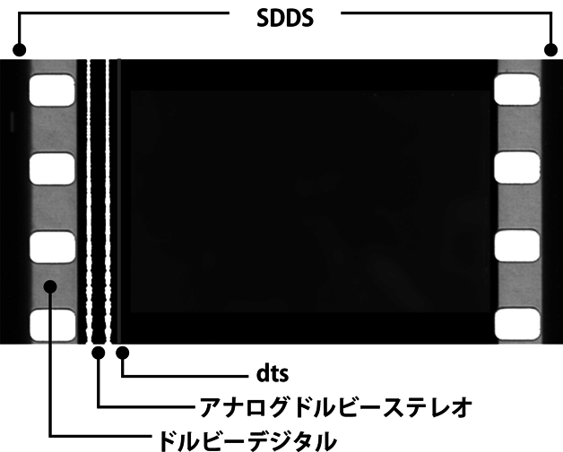
デジタル･シネマ／DCI［digital cinema initiative（英）］
■〈DCI〉は、ハリウッドのメジャー7社が35ミリ･フィルム同様にデジタルシネマの仕様を標準化させるために作った時限会社。2002年6月、ウォルト･ディズニー、20世紀フォックス、MGM、パラマウント、ソニー･ピクチャーズ、ユニヴァーサル、ワーナーの7社の出資によってデジタル配給･上映方式の標準化を目的に設立。上映館のためにフィルムを一本ずつ作成していたシステムをデジタル規格の統一によってマスターファイルからそれぞれの上映館へ専用光ファイバーを使用して作品のファイルを送信する方法にすれば、コストを抑え、海賊版防止の安全も図れるメリットがあるとした。これらの、撮影から編集･配給･上映までの過程をフィルムに代わりデジタルデータによって行なうことを〈デジタル･シネマ〉と呼んでいる。
デジタル･シネマ･パッケージ／DCP［digital cinema package（英）］
■〈DCI〉の規格に準拠した〈デジタル･シネマ〉の興行に用いる配給方式。もしくは、各映画館が大手映画会社の作品を、従来の35ミリ･フィルム（プリント）ではなくデジタル映写機で上映する際に用いるシステム。映画会社は高画質のデジタルデータを用意し、暗号コードを付けてハードディスクのパッケージや通信回線のかたちで配給、各映画館はこれに対応するサーバーで暗号を解き、デジタル映写機で上映する。日本の大手シネコンでは、2012年から13年にかけてDCPへの切り替えが行なわれ、メジャー作品のほぼすべてがデジタル映写で上映されている。このデジタル上映方式によりプリント作成･上映のコストが大幅に削減できる一方、デジタルデータ化されない作品は上映しない、映画保存の点で不安がある、等の問題も浮上した。特に小規模の映画館や名画座においては、フィルム映写からデジタル上映に切り替えるにあたってあらたにDCPサーバーと対応デジタル映写機を設置しなければならず、そのコスト負担に耐えられない、切り替えを行なっても興行の必要経費をペイできない、希望する作品が供給されない、といった事態が予想され閉館に至るケースもみられた（ただし、現存する新旧プリントの上映やDCI規格外のデジタル上映を採用する映画館も多い）。
デュープ→「映画用フィルム（ネガ／ポジ／デュープ／プリント）」
テレビ映画／テレビムービー／テレフィーチャー
■テレビで放送されることを前提に製作された映画。英語では"television movie"。国内でテレビ番組として放映されたのち、国外での映画祭への出品や劇場公開によって、通常の映画として扱われるものもある。
■米国内では、テレビの普及に伴い映画を番組として放送するようになったが、放映権料高騰などの理由から、1960年代に入って、比較的低予算のテレビ映画が製作されるようになった。ドン･シーゲル監督の「殺人者たち」（64）は、その第1号として製作されたものの、暴力描写などが敬遠されて、劇場公開された。実際のテレビ映画第1号は64年10月に放送された『彼らがいかに走るか見よ』だったが、作品の評判が悪く、続くドン･シーゲル監督の『犯罪組織』が高視聴率を獲得したことで、軌道に乗った。また、本来の意味での〈B級映画〉の製作が衰退すると、新人監督が経験を積む場としての役割も担うようになった。スティーヴン･スピルバーグ監督の「激突！」（71）などはその代表的な例。のちには数回にわたって放映される〈ミニ･シリーズ〉と呼ばれるスタイルにも発展した。なお日本では、テレビドラマがビデオで制作される以前の時代に、映画製作のスタッフやノウハウを用いフィルム撮影で制作されたドラマ番組を"テレビ映画"と呼び、2時間枠のテレビ用映画〈テレフィーチャー〉とは区別していた。また「激突！」と同様に、テレフィーチャーとして製作･放映された作品がのちに劇場公開に至る例もあり、近年ではWOWOW製作の"映画"のように、劇場公開を前提にテレビ番組を製作する例が多々みられる。
伝記映画［biopic（英）］
■映画ジャンル。実在の人物の生涯もしくは半生を描いた作品。対象は、歴史上の偉人から、それほど知られざる逸材まで多岐にわたる。完全に事実に基づいているわけではなく、多少なりとも作り手の考えたフィクションが含まれることが一般的。伝記映画はサイレント映画の時代から存在したが、1930年代に「ロスチャイルド」（34）、「巨星ジーグフェルド」（36）がアカデミー賞作品賞ノミネートや受賞で評価された頃から、ジャンルとして確立した。以後も、「アラビアのロレンス」（62）、「パットン大戦車軍団」（70）など、他ジャンルも交えて数多くの作品が作られている。
と
ドイツ表現主義［german expressionism（英）／expressionismus（独）］
■1900年代初めにドイツで展開された芸術運動。自然主義文学や印象主義美術に対する反動として、作家の内面や主観的な感情表現に重点をおいた作品群を指す。1905年に結成された前衛絵画グループ〈ブリュッケ〉を起点として、キルヒナー･カディンスキーらが絵画における提唱を始めたことをきっかけに、そのムーブメントは第一次世界大戦後には文学や音楽、演劇に波及し、やがて映画の分野にも広まっていった。ドイツ表現主義の特徴は、極端なカメラアングル、陰影のある照明、歪んだレンズ（またはセット自体を歪ませる場合もある）等を用い、役者の様式化された演技や濃いメイクによって人工的な景観を実践するため、セット撮影を基本とする。ドイツ表現主義の代表作は「カリガリ博士」（20）、「吸血鬼ノスフェラトゥ」（22）、「メトロポリス」（26）などが挙げられる。
■ドイツ表現主義の経緯......当時のドイツでは映画製作がそれほど盛んではなく、国内約2000館あった映画館では、主にアメリカやフランス、イタリア製の映画が上映されていた。第一次世界大戦の開戦によって、ドイツ政府は外国映画の輸入を禁止。代わりにプロパガンダ利用するため自国の映画製作を支援した。そのため国内に11社しかなかった映画会社は、この時期131社にまで増加。1917年にはいくつかの映画会社が統合されUFA（universumfilm aktiengesellschaft）＝〈ウーファ社〉が設立された。これに伴い、設備が完備された巨大スタジオも建設。翌年、終戦を迎えるとプロパガンダ映画に代わって連続冒険物や性を売り物にした際どい作品、歴史大作の製作を主流とするようになる。フランス革命を題材にした「パッション」（19）は国際的な成功を収め、この作品を監督したエルンスト･ルビッチの名を有名にしただけでなく、戦後続いたドイツ映画への偏見を払拭することとなった。19年にエリッヒ･ポマーが経営する〈デクラ社〉は、絵画や舞台、文学でムーブメントを起こしていた〈表現主義〉を取り入れた映画製作を引き受けた。それまでにない様式化されたスタイルで演出されたロベルト･ヴィーネ監督の「カリガリ博士」（20）は、殺人事件の妄想が奇抜な舞台装置上で展開され、表現主義によって常軌を逸した人間の心理と心の闇を表現した。世相の暗澹たる雰囲気はそのまま作品の表現に活かされ、陰影の強いコントラストや超自然主義的な空間設計という表現主義の特徴が映画にも取り入れられた。「カリガリ博士」は世界に驚きを与え、一大センセーションを巻き起こし、ドイツでは表現主義を用いた作品が量産されるようになった。
■「カリガリ博士」（20）......精神病院を舞台に狂人の妄想を描いたこの作品は、ロベルト･ヴィーネが監督。陰鬱かつ緊張感のある映像が話題となり、低予算ながら世界中で大ヒットを記録した。その前衛的な手法はのちの作品に多大な影響を与え、主人公の目撃する異様な視界を観客が観るという物語における視点が確立された。当時無名だったカール･マイヤーとハンス･ヤノヴィッツの二人は、従来にない映画製作を目指し、この作品の脚本を執筆。美術を担当したヘルマン･ヴァルム、ヴァルター･ライマン、ヴァルター･ローリッヒの三人が表現主義を取り入れるよう提案したことで、作品のスタイルが決定された。中でもヴァルムは「映画の映像もまたグラフィックアートであるべき」と主張し、極端に様式化された陰影ある映像は、動く絵画や木版をイメージして形成されている。撮影技法や編集技法を主軸にしたフランス映画の〈印象主義〉とは対照的に、ドイツ表現主義の作品は表現自体を目的として、あえて非現実的に、形そのものが歪められ誇張されている。俳優たちもまた濃いメイクによって誇張された動きで演技をし、それらの要素が総合的にグラフィック全体を構成することで構図が形成されているのである。
■UFA......ウーファ社は、17年にドイツで設立された映画会社。表現主義映画の拠点となり、表現主義を代表するフリッツ･ラング、F･W･ムルナウなどの映画監督を輩出した。詳細は【ウーファ】の項を参照。
■「メトロポリス」（26）......第一次世界大戦後の混乱によるドイツ芸術を救ったのは、表現主義による作家たちの内なる表現だった。26年製作の「メトロポリス」はその頂点ともいうべき作品で、近未来の管理社会で反乱を起こす労働者の姿を壮大なSF映画（未来風刺映画）として描き、同時代の映画人たちに大きな影響を与えた。監督のフリッツ･ラングは、ニューヨークで"他人を利用し、永遠なる不安のうちに生きる人々"の姿を目撃し、ドイツに帰国後、その混乱と混沌を「メトロポリス」の中に取り入れたと言われている。3時間以上あったオリジナル版は興行的な理由によって編集され、世界中で様々なバージョンが公開されることとなった。27年にプレミア公開された210分の全長版が最長とされるが、完全なオリジナル･フィルムは現存せず、84年には着色が施されジョルジオ･モロダーが音楽を担当したバージョンが公開され話題となった。2007年には16ミリのコピーがブエノスアイレスで発見され、これを修復して再編集された148分のバージョンが、2012年現在現存する最長版とされている。
■ドイツ表現主義の映画人......監督では「カリガリ博士」のロベルト･ヴィーネ、「メトロポリス」のフリッツ･ラング、「吸血鬼ノスフェラトゥ」（22）のF･W･ムルナウがその代表。彼らはナチスの台頭を機に、撮影監督のカール･フロイントや俳優のピーター･ローレらとともにハリウッドに逃れた。彼らはハリウッドのスタジオ･システムの中においてもドイツ表現主義の手法を持ち込み、演出方法や作風に大きな影響を与えた。
■表現主義の終焉......物語の視点として発生したドイツ表現主義は、ホラー映画「吸血鬼ノスフェラトゥ」や歴史大作「ニーベルンゲン ジークフリード」（24）を経て、状況を様式化するというスタイルに変化。奇怪さと華麗さを兼ね備えた映画美術がその比重を占めるようになっていった。20年代にドイツを襲ったインフレは、ドイツ映画の輸出を助けた一方で予算の高騰を誘発。莫大な製作費が投入されたムルナウの「ファウスト」（26）やラングの「メトロポリス」はUFAを財政危機に陥れ、責任をとった映画製作者たちが新天地を求めて海外へ渡り、監督･俳優･撮影者たちがハリウッドに引き抜かれるなどして人材の流出が加速。「メトロポリス」の浪費を批判されたラングはドイツに残って製作会社を設立したものの、ナチスの台頭によって33年にドイツを離れている。24年にアメリカのドーズ･プランによってドイツ経済を安定させたことは、ハリウッド映画の輸入を促進させ、ドイツ国内で興行の激しい争いを起こした。それによりドイツ映画もまたハリウッド映画を模倣するようになり、次第に表現主義をスタイルとするムーブメントは衰退していった。しかし、ドイツ表現主義の片鱗はラングの「M」（30）や「怪人マブゼ博士」（32）でも現実との並立性によって垣間みることができ、ハリウッド映画における〈ホラー映画〉や〈フィルム･ノワール〉の系譜にその影響を見出すことができる。（松﨑健夫）
■映像に音声や効果音、BGMのついた映画。現在ではほぼすべての映画がトーキーに該当するので、特にこの名称は使わないが、1920年代後半にトーキー製の映画が誕生してからしばらくの間、サイレント映画と区別するためにこう呼ばれた。別称に〈発声映画〉。
■映画に音を加える試みは映画黎明期から成されていたが、20年代後期に入って、レコードに記録した音声をフィルムと同期して再生する〈ヴァイタフォン方式〉と、フィルムに音声を記録する〈ムービートーン方式〉が開発され、これを機にまずアメリカでサイレント映画よりトーキーへの移行が始まった。世界初のトーキー作品は一般に、1927年のアル･ジョンソン主演、ワーナー･ブラザーズ映画「ジャズ･シンガー」と言われている。これは大部分が台詞なしのサイレント仕立てで、一部のパートで台詞と歌声が聞こえる〈パート･トーキー〉だったが、初めての発声のインパクトと、興行的な成功によりトーキーへの移行を決定付けたことで、この作品が"トーキー第1号"と呼ばれることになった。実際には、メジャー各社がトーキー製作を敬遠する中、弱小会社であったワーナーが起死回生の策として着手、長篇劇映画では、26年8 月に伴奏･効果音のみ付けた〈サウンド版〉の「ドン･ファン」を公開、27年10月に一部のみ台詞を喋る「ジャズ･シンガー」、28年7月に全編に音声が付いたオール･トーキーの第1号「Lights of New York（紐育の灯）」という順で成果を生んだ。「Lights of New York」が空前の興行記録を打ち立て、他のメジャーもトーキー移行を追随したことでアメリカでは30年末にサイレント映画の実質的な終焉を迎えている。これにより、アメリカでは映画スターに声が求められるようになり、サイレント映画で活躍したスターが発声の問題で何人も姿を消した。また、映画製作においては、撮影スタジオに外部の騒音を遮断する防音設備が必要になったほか、製作費の高騰などの影響を及ぼす。その一方で音を生かした映画が登場し、銃声や疾走する自動車の音などで緊迫感を高めたギャング映画の量産、無声映画では不可能だったミュージカル映画の誕生という新たな流れも生んだ。瞬く間に世界を席巻したトーキーだったが、日本はやや事情が異なる。日本では、31年に土橋式トーキーで製作されたオール･トーキーの五所平之助監督「マダムと女房」が初のトーキー作品とされている。だがこちらも、イーストフォン方式の「何が彼女をさうさせたか」（30）、ミナ･トーキー方式の「ふるさと」（30）といったパート･トーキー作品を踏まえての登場だった。国産トーキーが登場するとその人気は高まったが、一気に無声映画を駆逐するという状況にはならなかった。その理由はまず、トーキーを導入することで職を失う弁士や伴奏楽団から反発を受けたこと。さらに、製作費が無声映画の3倍にも及ぶトーキーに対して、中小の映画会社や映画館はそれに対応する設備投資が難しかったことなどがある。これらの理由により、日本では38年頃まで大手のトーキーと中小の製作する無声映画とが併存することになった。
＊参考「サイレント映画（無声映画）［silent film（英）］」
■東宝争議は、1946年から50年にかけて四次にわたり繰り広げられた、東宝における労働争議。注釈なしで一般に言う場合は、48年4〜10月の〈第三次争議〉を指す。この時のストライキでは組合側が撮影所に立てこもり、警官隊および米軍駐留軍が出動、"空には飛行機、陸には戦車、来なかったのは軍艦だけ"と形容され、映画史のみならず戦後史を彩る一大事件とみなされた。これに先立ち、争議からの離別を表明した俳優が〈十人の旗の会〉を結成、彼らや組合を離脱した東宝社員が新東宝を設立し、東宝争議は新東宝誕生の契機、脱退したスターに代わる新スターの誕生、東宝の新体勢の擁立といった文脈でも語られる。
■映画会社の労組活動は、GHQによる組合育成の指導と社会主義思想の高揚を承け、戦後まもなく各社で活発化していた。かねてより自由な気風と近代的経営を先取していた東宝では、1945年12月に撮影所で労働組合を結成、46年に大組織に発展し同年3月の賃上げ･生産管理を要求した〈第一次争議〉に成功を収める。同年10月には経営参加を掲げたゼネストを敢行、50余日にわたる〈第二次争議〉となり、この間に組合の分裂という事態もおこった。一方、ストに反対し製作再開を表明する長谷川一夫･大河内伝次郎･藤田進･黒川弥太郎･原節子･高峰秀子･山田五十鈴･入江たか子･山根寿子･花井蘭子の俳優十人は〈十人の旗の会〉を結成し、400名を超える従業員と共に組合の全国組織"日映演"を脱退。日映演は彼らの撮影所入りを阻止したため、東宝が別スタジオを与え第二製作部として作品をつくらせ、これが47年3月の"新東宝映画製作所"設立につながる。東宝では第二次争議の結果、47年中に、組合･作家･企業の合議制により「戦争と平和」「今ひとたびの」「女優」「素晴らしき日曜日」「四つの恋の物語」のベストテン作品を含む13本が製作され、脱退したスターに代わって三船敏郎や久我美子など新スターも誕生した。しかし採算不振と本数の不足は甚だしく、経営再建のため重役陣は一掃され"反共の闘士"と評された新社長が就任、赤字と赤色分子の"二つの赤追放"に乗り出す。48年4月、経営陣は270名の馘首と1200名の余剰人員解雇計画を発表、従業員組合はストライキと同時に撮影所に立てこもり〈第三次争議〉の勃発となった。撮影所は長期閉鎖となり裁判所が占有解除の仮処分執行を決定、8月19日、警視庁の要請によりGHQ第八軍（戦車･装甲車･航空機含む）と2000名の警官隊が包囲し、撮影所占有は解かれる。10月、伊藤武郎･山本薩夫･亀井文夫･宮島義勇ほか組合幹部20名の退社と引き換えに、195日に及んだ東宝争議が終結、48年製作の東宝映画は4本に留まる。争議中の配給作については新東宝をはじめとする外部作品や旧作･外国映画で補填されたが、山本嘉次郎･谷口千吉･黒澤明･成瀬巳喜男･本木荘二郎･山本武らは48年8月に〈映画芸術協会〉を設立し、他社で映画を撮るようになった。東宝は49年3月に自社製作を停止、新東宝に製作を一任しようとするが、その新東宝（映画製作所）は先立つ48年4月に株式会社新東宝として自立、49年11月には自主配給を宣言したため、東宝も50年初頭より自社製作に戻る。赤字は未だ続き、同年5月の人員整理通告で〈第四次争議〉が発生、12月に完全集結し、東宝の新体勢もこれより固められていった。
動物映画
■映画ジャンル。動物（魚類、鳥類、昆虫類なども含む）の生態を描いたドキュメンタリー映画や、動物を主人公にその愛らしさを伝えることに重点を置いた劇映画の総称。「JAWS／ジョーズ」（75）のように動物がもたらす恐怖を描いた作品や、動物を擬人化したアニメーション作品などは通常、含まれない。「チャング」（27）のアーネスト･シュードサック＆メリアン･C･クーパー、「猛獣圏世界横断」（30）のマーティン･ジョンソンなどの製作者たちによって動物映画ドキュメンタリーの定型が作られたとされる。1950年代には、ウォルト･ディズニーがドキュメンタリー"民族と自然"シリーズに並んで、動物の生態を人間ドラマ風に捉える"自然の驚異"シリーズを手がけ、動物凝視によるドラマ映画のスタイルがつくられていった。ジャン＝ジャック･アノーの「子熊物語」（88）はその系譜にある。劇映画としては、トーキー初期の"リンチンチン"ものに連なる"名犬ラッシー"を主役にした「家路」（43）などが有名。日本でも山本嘉次郎の「馬」（41）を動物映画とみなすことができ、「キタキツネ物語」（78）、「子猫物語」（86）、「ハチ公物語」（87）などのヒット作も少なくない。
ドキュメンタリー［documentary film（英）］
■記録映画、ノンフィクション映画。広義では、劇映画に対する実写映画として、実在の人物そのままや現実の出来事･状況を記録する映画全般を指し、ニュース映画･教材映画･科学映画･広報映画･観光映画なども含まれる。〈ドキュメンタリー〉の語は、紀行映画の意で用いられたフランス語"documentaire"に由来し、イギリスの記録映画作家･理論家ジョン･グリアソンが、「モアナ」（26）の論評に際して初めて使った。このグリアソンの提議にならった狭義で言えば、現実を記録することで何らかの主張を行ない、観客を喚起･感動させ、"現実に対する創造的な解釈／the creative treatment of acutuality"をなすものがドキュメンタリー映画となる。ドキュメンタリーの先駆作はロバート･フラハティの「極北のナヌーク（極北の怪異）」（22）とされ、さらにフラハティはパラマウント社で先述の「モアナ」を撮り、イギリスで「アラン」（34）を作るなど、記録映画の開拓者的役割を務めたことから〈ドキュメンタリーの父〉と評されている。
■ドキュメンタリーの発展に関し、記録映画作家ポール･ローサはその系統を、自然主義的（ロマン的）伝統、写実的（ヨーロッパ的）伝統、ニュース･リール、プロパガンダ、の4つに区分した。ドキュメンタリーはこれらの要素が互いに影響し合いながら折々に新しい運動が興り発展を遂げてきたとも言える。フラハティに始まる自然主義的な伝統は、同時期にアメリカで「アフリカ遠征」（23）、「チャング」（27）などの〈動物映画〉でもかたちづくられ、自然や野性を詩情豊かに捉える記録映像として今日でも一般に人気を保つ。写実的伝統は、記録映画作家ヨリス･イヴェンスを輩出した〈アヴァンギャルド映画〉から1920年代に生まれ、主にヨーロッパで成長。ニュース映画は映画の黎明期から作られ、ソ連ではジガ･ヴェルトフが22年より「キノ･プラウダ」シリーズを撮りつつ、カメラの眼が捉えた断片映像のモンタージュによって真実を創造する〈映画眼〉（キノ･グラス／キノ･アイ）の理論を唱え「カメラを持った男（これがロシヤだ）」（29）を作った。以上のフラハティ、イヴェンス、ヴェルトフはドキュメンタリーの先駆者として語られることが多く、特にヴェルトフの理論に影響を受けたグリアソンが、ローサなどと共に20〜30年代にかけて"イギリス･ドキュメンタリー運動"を展開、生活･日常からドラマを作り出し社会的メッセージを重視した〈ドキュメンタリー映画〉が発展していく。また、フラハティとヴェルトフの方法論は50年代末のフランスで消化され〈シネマ･ヴェリテ〉として開花、アメリカでは〈ダイレクト･シネマ〉が生まれた。グリアソンの運動は社会的プロパガンダを志向するものだったが、プロパガンダ映画は特に第二次大戦時に発展。戦前のドキュメンタリー運動の成果を活用して戦時ニュースや戦争記録映画が作られ、劇映画の監督もドキュメンタリーを手掛けることが多かった。戦後はドキュメンタリーの手法が劇映画に取り入れられるようになり、イタリアでは40年代のうちに〈ネオリアリズモ〉が興隆。アメリカで反ナチのプロパガンダ･ニュース映画「マーチ･オブ･タイム」シリーズを手掛けていたルイ･ド･ロシュモントは45年に〈セミドキュメンタリー映画〉を開拓。イギリスではドキュメンタリーの精神が劇映画の底流を支え、50年代の日常を重視する〈フリー･シネマ〉運動も劇映画製作に進展した。日本のドキュメンタリーは、20年代末の〈プロキノ〉運動で基礎が築かれ、P.C.L.から派生した芸術映画社、朝日新聞から独立した朝日映画、科学映画の理研映画社、東宝文化映画部ほかの製作会社によりそれぞれに〈文化映画･教育映画〉として展開される。戦時には映画法で統合と量産を果たしつつプロパガンダが盛況となり、亀井文夫は「上海」「戦ふ兵隊」（38）などの問題作を提出。亀井の精神は土本典明や小川紳介らのドキュメンタリストに継承され、彼らの関わった岩波映画製作所は羽仁進･黒木和雄･東陽一･羽田澄子などを輩出。一方で、原一男･鈴木志郎康･佐藤真･森達也などの個人作家も専業的に活動している。近年ではジョナス･メカスの「リトアニアへの旅の追憶」（72）で認識された〈日記映画〉の延長形態である〈セルフ･ドキュメンタリー〉が、自主制作作品において注目された。
■映画制作における技術分野。通常の撮影では得られない効果を映像に加えること。またはその技術。この範疇に含まれるものでよく知られている技術として、〈SFX〉〈VFX〉〈特殊メイク〉などが存在する。
■〈SFX／Special effects〉は、主に撮影の現場で効果を計算しながら物理的な処理を行なうもの。ミニチュア撮影、ブルー･スクリーンを利用した合成や、〈スクリーン･プロセス〉などが該当、人形アニメの"ダイナメーション"や、「ゴジラ」（54）に代表される着ぐるみや模型を使った日本の伝統的な怪獣映画の撮影方法もここに含まれる。古くは発砲や弾着の仕掛け、雨降らしなどが含まれたこともあった。かつての日本では特殊撮影･特殊技術･特殊効果などの名称が用いられたが、近年はSFXに統一されつつある。レイ･ハリーハウゼンや日本の円谷英二などが代表的なクリエイター。〈VFX／Visual effects〉は、主に撮影済みのフィルムにポスト･プロダクション段階でCGやオプチカル･プリンターなどを利用して何らかの効果を追加するもの。特殊な映像を追加するだけでなく、日常的な風景において不要なものを画面上から削除したり、撮影時にはなかった雪を降らせたりする用途にも用いられる。もともとはSFXの範疇に含まれていたが、70年代後半から80年代にかけてのデジタル技術の進化を踏まえ、独立した名称として〈VFX〉の語句に転化。「ジュラシック･パーク」（93）や「フォレスト･ガンプ 一期一会」（94）などがエポックメイキングとなり、VFXの語を前面に押し出した「マトリックス」（99）を機に一般にも広まる。日本映画で初めてVFXのクレジットを採用したのは「ACRI」（96）であった。ILM社やデジタル･ドメイン社はこの分野の専門会社として著名。また、ジョン･ダイクストラやリチャード･エドランドなどのクリエイターがSFX時代からキャリアを積み、今日ではVFXスーパーバイザーなどの肩書で活躍している。〈特殊メイク〉は、撮影時に俳優に対して通常とは異なるメイクを施す技術。時に、メイクの範疇を越えて機械仕掛けのギミックを仕込む場合もある。サイレント時代に"千の顔を持つ男"と呼ばれた俳優ロン･チャニーは自らメイクを行ない、「ノートルダムのせむし男」（23）や「オペラの怪人」（25）などで特殊メイクアップ･アーティストの元祖と呼ばれている。以降、フランケンシュタインやドラキュラといった怪物を表現するため多用され、「大アマゾンの半魚人」（54）のような俳優が着用するスーツにも派生した。特殊メイクが注目されるきっかけとなったのは、68年の「猿の惑星」。猿の特殊メイクを施したジョン･チェンバースがアカデミー名誉賞を受賞、作品も大ヒットしたことから脚光を浴びるようになった。80年代には、特殊メイクアップ･アーティストのリック･ベイカーなどがスター的に扱われている。今日ではSFX･VFX･特殊メイクの各技術はおよそデジタル技術で処理することも可能となったが、質感や存在感の重視、オマージュ的な意図、または予算と撮影時の都合などの用途に応じて、CGにこれらを組み合わせて使用しているのが現状である。
ドグマ95［Dogme 95（丁）］
■デンマークで1995年より始められた映画運動。"今日の映画に見られるある種の傾向に対抗する映画救済活動"として、撮影過程の不純物を取り除いた映画作りを行ない、ストーリーや俳優の演技に注目させることを意図する。映画監督のラース･フォン･トリアーとトマス･ヴィンターベアが提唱し、クリスチャン･レヴリング、ソーレン･クラーク＝ヤコブセンと共に作家集団を結成、その『純潔の誓い』と呼ばれる十ヶ条の制作ルールにしたがって撮影したものが"ドグマ映画"に認定される。"今日の映画に見られるある種の傾向"とは、ハリウッド映画に代表される特殊効果や大掛かりなセットを用いた娯楽映画的な装飾性を指し、これらを排除し原理主義的な映画づくりで作家性を示そうとした。マニフェストである『純潔の誓い』とは、1：撮影はロケーションのみで行なう、小道具やセットは作らず現状の撮影場所を選ぶ、2：現場で流れている音響･音楽以外は使用しない、3：カメラは手持ち、4：カラー映画で、人為的な照明は使わない、5：オプチカル処理やフィルターは使わない、6：（殺人や兵器など）表面的な行動は盛り込まない、7：時間的･地理的な乖離は許さない（現前の事象を撮り回想場面を使用しない）、8：ジャンル映画ではない、9：フィルムのフォーマットはアカデミー35ミリ･スタンダードサイズ、10：監督名をクレジットに載せない、といったもの。10ヶ条はすべて厳密に守らなければいけないわけでもなく、世界の誰であれ申請することができ、ドグマ映画に認められると認定書が与えられドグマ･アーカイヴに収録される。ドグマ映画第一号はヴィンターベアの「セレブレーション」（98）で、トリアーの「イディオッツ」、ヤコブセンの「ミフネ」（98）レヴリングの「キング･イズ･アライヴ」（00）が続いた。ほかに「ジュリアン」（99）、「幸せになるためのイタリア語講座」（00）など計35作品が認定され2002年に事務局は閉鎖。以後は公式サイトで申請者が『誓い』の宣誓書に登録するかたちを採り、08年のアーカイヴでは300を超える作品がリストアップされたが、明らかな悪戯の登録もかなり見られる。
■独立系映画制作会社の俗称。大手の映画会社に対して、独立して映画製作を行なう会社･組織の意であり、時代や状況によって位置付けは変化する。大手映画会社の存在しない国においてはこの区分けも必要ないが、基本的には、自身で調達した小資本によって映画の企画･制作のみを行ない、全国への配給･興行は大手映画（配給）会社に委託する中小の制作集団を指す。アメリカ映画の初期ならば、エジソンの特許会社（MPPC）がメジャーに相当し、ハリウッドで起業したばかりの各映画会社は独立プロであった。これが成長しメジャー化すると、ユニヴァーサルやフォックスなどの大手に作品を買い上げてもらう製作会社が独立プロとなる。日本映画ならば、当時の大手･日活や天活に対して〈純映画劇運動〉のため1918年に作られた映画芸術協会が最初の独立プロと言われる。続いて牧野省三が設立したミカド商会やマキノ･プロダクションのような監督プロダクション、マキノ･プロから独立した阪東妻三郎プロや片岡千恵蔵プロのようなスター･プロダクションも日本には多かった。東宝争議とレッドパージ直後の50年代初頭には、大手から追われた映画人による新星映画社や現代ぷろだくしょん等の左翼系独立プロが群発し、ソ連映画配給の北星映画による配給系統を得て一時的なブームも生む。大手五社の時代では、新藤兼人や吉村公三郎ほかの近代映画協会、松竹ヌーヴェルヴァーグの一派が独立した創造社や表現社や現代映画社、スター･プロの石原プロや三船プロや勝プロなどが著名。異色なものでは監督集団のディレクターズ･カンパニーなど。現代では幾多の独立プロによって日本映画の過半数が作られ、自主配給を行なう製作会社も多い。
ドライブイン･シアター［drive-in theater（英）］
■車に乗ったまま映画を鑑賞できる巨大映画施設。アメリカでは1933年に初めて開業、50年代から60年代初頭にピークを迎え、全米4000カ所で展開された。巨大な駐車場にスクリーンを設置、観客は暗くなってからここに自動車で入場し、音声はカーラジオで聴くという鑑賞スタイルが主流であった。70年代以降は衰退の一途を辿ったが、ロジャー･コーマンが製作した低予算映画や、〈エクスプロイテーション〉〈グラインドハウス映画〉と呼ばれる非メジャー作品群の上映場所として機能していた。日本では、81年に船橋に設置されたのを皮切りに約20カ所で展開されたが、夜興行という制約や気象条件、自動車のアイドリング規制などの要因によって成功に結びつかず、2010年10月に全てのドライブイン･シアターが閉鎖となった。
トラッキング→「移動撮影（ドリー／ドリーショット／トラッキングショット／クレーンショット）」
ドリー→「移動撮影（ドリー／ドリーショット／トラッキングショット／クレーンショット）」
ドルビーデジタル→「デジタル音響（ドルビーデジタル／DTS／SDDS）」
な
■撮影用語。カットすることなくひとつのショットを、カメラで長い間回し続ける技法。映像的なリアリズムに直結し、演出の上でも臨場感と緊張感を生み出す効果を持つ。長回しを特徴とする監督には、アンドレイ･タルコフスキー、ロバート･アルトマン、テオ･アンゲロプロスなど、日本では溝口健二や相米慎二がその代表とされる。なお、フィルムのワンロールは約10分間分しかないため、長回しには時間的制約があったが、撮影機器のデジタル化によって、ワンシーンの長回しで一本の作品と成す「エルミタージュ幻想」（2002）のような作品も誕生している。
＊参考「ワンシーン･ワンカット（シークェンス･ショット）［sequence shot（英）］」
70ミリ映画
■映画の形態。70mmの幅を持つプリントで上映する形式の映画。
■テレビの普及に対抗し映画の大型化を図った映画会社が、より鮮明な画面を求めて考案したものだが、70ミリ･フィルム自体はサイレント期から試作が行なわれていた。〈70ミリ映画〉の（撮影時の）ネガ幅は65mmで、広くなった部分に数チャンネル分の音声を記録する。70ミリ映画には多くの撮影＝上映方式が存在し、〈スーパーパナビジョン〉は65mmネガフィルムにサウンドトラックを付け加えて70mmにした方式で、上映時のアスペクト比は1：2.20。〈スーパーテクニラマ70方式〉は横駆動のヴィスタヴィジョン･カメラにアナモルフィック･レンズを装着し、撮影した後に70mmポジに焼付ける方式で、アスペクト比は1：2.20。〈トッドAO方式〉は65mmネガに撮影し、70mmポジに焼き付ける方式で、アスペクト比は1：2.20。〈ウルトラパナビジョン〉はアナモルフィック･レンズで左右を圧縮した65mmネガを70mmにプリントする方式で、アスペクト比は1：2.75。他にも〈シネラマ〉等があり、近年の70ミリ映画は、35mmシネマスコープネガで撮影したものを70mmポジに焼付ける方式が主流となっていたが、日本では70ミリ上映館が姿を消し、大型映画の〈アイマックス･デジタル〉に置き換わっている。
●70ミリプリント
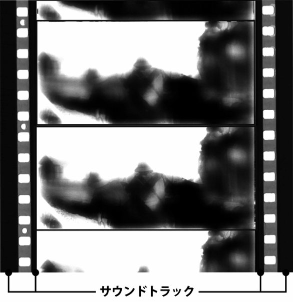
ナラタージュ［narratage（英）］
■映画の主に回想場面で、画面外の声に合わせて物語を展開させる技法。語源は〈ナレーション〉と〈モンタージュ〉の合成による。回想形式との違いは、現在の立場から話し手が回想を語り、その場面が現在から過去に移っても、話し手は引き続き現在の立場で語っている点にある。すなわち、音声と映像がモンタージュされている部分を〈ナラタージュ〉と呼ぶ。
ナレーション［narration（英）］
■登場人物の心理状態･心情や、舞台･時代設定、情景･話の筋を説明する語り。登場人物ではない第三者が、画面外から、映し出されている事象について解説･説明を行なう音声を指し、厳密には〈モノローグ〉と区別される。記録映画では、製作者の主観や映像の補足説明を語らせることが多い。なお、アメリカの劇映画では完全な第三者のナレーションを用いることが少なく、日本映画ではドキュメンタリータッチや実録作品を中心に、幅広くナレーションが採用されるが、これは浄瑠璃や歌舞伎の語りや〈弁士〉の形式を踏襲するものという説がある。
鳴滝組
■1934（昭和9）年、映画監督の山中貞雄が中心となって、監督、脚本家8名で結成した日本初の脚本執筆集団。メンバーが京都の鳴滝に住んでいたことから、この名がつけられた。
■発足時のメンバーは、前述の山中に加えて監督の稲垣浩、滝沢英輔、鈴木桃作、脚本家の三村伸太郎、八尋不二、藤井繁司の7人。のちに山中の助監督をしていた萩原遼が加わって8人となった。当時、日活を辞めて仕事にあぶれていた滝沢のために、山中を含む友人数人で1934年に「右門捕物帖･二百十日」の脚本を執筆したことが結成のきっかけで、この時は共同名義として"梶原金四郎"を使用した（最終的に、この作品は並木鏡太郎監督で映画化された）。このような経緯で結成されたため、各メンバーの所属会社はまちまちで、理想を掲げた創作集団というよりは、個人的な友情に基づいた仲良しグループ的な色合いが強かったとみられる。その後は、第二回作品「勝鬨」（34）から"梶原金八"を共同名義と定め、「富士の白雪」（35）、「海鳴り街道」（36）など、およそ3年間に10数本の脚本を執筆（一部、"梶原金六"名義もあり。また、作品の中には山中の単独執筆ながら、共同名義になっているものも少なくない）。新進気鋭のメンバーによって送り出された作品群は、時代劇のセリフを現代語で書き、"髷をつけた現代劇"と呼ばれて好評を博した。やがて戦争の激化に伴い、出征した山中が38年に戦死すると、翌39年には山中の遺稿脚本『木屋町三條』を原作に梶原金八名義で脚色した「その前夜」が山中貞雄追悼映画として公開された。
に
24コマ／秒→「フィルム速度（映写速度、FPS）」
日活アクション（無国籍映画／ムードアクション／ニューアクション）
■日活が1950年代から70年代初頭にかけて製作した現代活劇の総称。特に石原裕次郎が「太陽の季節」でデビューした1956年以降、ロマン･ポルノ路線に転向する71年までの期間で、裕次郎･小林旭･赤木圭一郎･和田浩治･宍戸錠･二谷英明･高橋英樹･渡哲也･原田芳雄･藤竜也といった男性スターを主演に置き、スター･システムによって作られた特徴的なプログラム･ピクチャーを指す。その作品群もさらに、製作時期や共通する要素によってサブジャンル的に、〈無国籍アクション〉〈ムード･アクション〉〈日活ニュー･アクション〉などと分類された。全体を通じて不良性感度の高いアウトロー的な主人公が、自己規範を遵守しつつ、喪失したアイデンティティーの恢復に努める姿を描く。多くは俳優ごとに決まった相手役が据えられ、監督には同時代にデビューを果たした若い世代が登板、60年代の爛熟期までは、青春映画･歌謡映画と並んで日活の屋台骨を支える強力な路線として屹立した。また他の路線作と重なることもあり、歌謡映画を多く手掛けた日活ゆえアクション映画でも主演者が主題歌を折々に唄っている。
■製作再開......第二次大戦時の企業統合により製作部門を大映に預けた日活は、戦後あらたにに撮影所を建設し1954年より製作を再開した。この際多くの若い助監督が新天地を求めて入社し、追ってデビューすることで"新しい"日活映画を作り上げていく。他社から移籍した助監督に、松竹からの鈴木清太郎（清順）･斎藤武市･中平康･今村昌平･藤原惟繕･神代辰巳、大映から古川卓巳･山崎徳次郎･牛原陽一、新東宝から舛田利雄など。54年の助監督募集では、浦山桐郎･熊井啓･西村昭五郎･江崎実生･武田一成などが入社。また〈五社協定〉によるスター不足に対しては一般公募の〈ニューフェイス〉で小林･赤木･宍戸･二谷･高橋らのスターを発掘。日活アクションは、これら新人監督と新人俳優による〈スター･システム〉によって育まれた面が強い。なお、新人が登場するまでの期間は水島道太郎･河津清三郎･三橋達也らの主演作が多く作られ、河津の「志津野一平」シリーズ（54〜56）は和製ハードボイルドの先駆作となった。
■男性路線......アクション･犯罪映画など男性向けのジャンル映画を主軸とした路線。〈太陽族映画〉で期待の新星となった石原裕次郎の主演作は、57年の「勝利者」「鷲と鷹」が商業的に成功し「嵐を呼ぶ男」で記録的ヒットを遂げた。日活は毎月裕次郎映画を配給するとの触れ込みで契約館を増やし、松竹の女性路線に対抗して男性路線を打ち出す。初期裕次郎映画では前述作に加え「俺は待ってるぜ」（57）、「錆びたナイフ」「赤い波止場」（58）などが日活アクションの祖型をなし、新人に裕次郎の後追いをさせるかたちで各個性に似合った作風を開拓、あらたなスターを育てていった。
■無国籍アクション......日本を舞台としつつ国籍不明の趣をもった現代活劇。典型としては、地方の港町･牧場･炭鉱街･開発地区を舞台とし、類型的洋装の人物が馬やジープを駆り、ライバルと遊戯的に腕を競いつつ、ヒロインを護って銃撃戦や決闘、といった西部劇や西洋犯罪映画の意匠を凝らし、股旅映画に通じる流れ者のヒーロー的行動を明朗快活に描く。小林旭の「南国土佐を後にして」（59）が予想外にヒット、これを原型として「ギターを持った渡り鳥」以下の「渡り鳥」シリーズ（59〜62）と、「海から来た流れ者」以下の「流れ者」シリーズ（60〜61）が作られ、小林は裕次郎に続くスターとなった。裕次郎映画にこうした虚飾性は強くはないが、明朗活劇の諸作でこの性向を採ることが多く、小林作品を中心に長期的に作られていく。ジャーナリズムはこれを揶揄して〈無国籍アクション〉と称し、のちに肯定的俗称として一般化した。「早射ち野郎」（61）や「メキシコ無宿」（62）等の和製西部劇も広義でここに含まれ、西部劇志向に偏らないほかの無国籍アクションに、赤木の「拳銃無頼帖」シリーズ（60）、小林の「賭博師（ギャンブラー）」シリーズ（64〜66）や「あいつ」シリーズ（66〜67）など。
■ダイヤモンド･ライン......裕次郎、小林旭、"第三の男"赤木圭一郎、および和田浩治の4人を指すキャッチフレーズ。60年より彼らの主演作でローテーションを組み、この語を使って日活アクションを宣伝した。61年初頭に裕次郎が負傷し赤木が事故死すると、助演者であった宍戸錠と二谷英明を加えて第二次ラインをつくり路線を継続。まもなく和田が助演に後退し日活アクションは全盛期から爛熟期に移行する。
■小僧アクション......和田浩治が主演したアクション映画の総称。裕次郎に似ているとスカウトされた和田は59年に15歳でデビュー、「六三制愚連隊」「素っ飛び小僧」（60）などの不良少年活劇に主演した。およそは裕次郎映画を模したパロディ的な作品で、コメディ色の強い無国籍アクションも多い。
■エースのジョー......日活アクションにおける宍戸錠のニックネーム。55年にデビュー、豊頬手術を施し悪役に転向した宍戸は、小林旭や赤木圭一郎のシリーズ作で敵役を連続して演じ、個性派として人気を得た。劇中の通称では"殺し屋ジョージ""十字架の政""コルトの銀"など作品ごとに様々な渾名を名乗ったが、ダイヤモンド･ラインの渾名として61年から"エースのジョー"が用いられ、「早射ち野郎」（61）ほかの劇中でも名乗っている。その宣伝コピーは『ジョーは世界早射ち3位、0.65秒』。
■ムード･アクション......60年代中盤の、メロドラマとアクションの融合した作品群。主に裕次郎の主演と浅丘ルリ子のヒロインによる諸作を指し、64年の「赤いハンカチ」で型ができあがり、次作「夕陽の丘」から宣伝コピーで使われるようになった。裕次郎は主題歌も担当し「夜霧よ今夜も有難う」（66）のように歌謡映画の一面を持つものもある。
■日活仁侠......日活製の任侠映画。男性路線の一環として62年に日活の「花と竜」がヒット、東映が63年に「人生劇場 飛車角」を成功させると、日活は同年より高橋英樹主演の「男の紋章」をシリーズ化（63〜66）させる。東映が任侠路線に絞ると、日活でも路線模索的に高橋を中心として任侠映画が作られていった。日活版では「任侠」に「仁」の字をあてたものがいくつかあり、小林旭や裕次郎主演でも着流し版日活アクションとして作られ、特に鈴木清順の様式美が発揮される「関東無宿」（63）や「刺青一代」（65）は高評価を得ている。60年代後期の東映任侠全盛期は日活全体の弱体化も進み、新路線として〈日活仁侠〉や、宍戸錠を軸とした「野獣の青春」（63）、「拳銃は俺のパスポート」（67）等の〈日活ハードボイルド〉が日活アクションの一翼を担うことになった。
■日活ニュー･アクション......68〜71年にあらわれた日活アクションの新風。従来のスターが年輪を重ねその活劇もヒットしなくなる一方で、これまでの助監督が監督に昇進し（時に新スターと共に）、同時代の気風を反映して作り上げた一群を指す。製作当時は本数も成績も大きな成果をみせなかったが、71年に評論家の渡辺信が〈日活ニュー･アクション〉の呼称を使って定義付けを行ない徐々に評価されていった。全体に（ニューシネマに先駆けて）リアリズム傾向の描写を用い、組織･体制に背を向けた若者やチンピラを扱って、虚無的あるいは反逆的な行動を捉える。さらに系譜として、渡哲也の「無頼」シリーズ（68〜69）に代表される"単独死闘劇"、「縄張はもらった」（68）や「流血の抗争」（71）の"集団抗争劇"、「野獣を消せ」（69）や「反逆のメロディー」（70）の"死亡遊戯劇"に分類され、特に藤竜也･原田芳雄･梶芽衣子らの非行グループ集団が無目的にアナーキーなエネルギーを発散し自滅していく「野良猫ロック」シリーズ（70〜71）が象徴的作品とされる。代表的監督には長谷部安春･小澤啓一･澤田幸弘･藤田敏八など。（山下慧）
ニッケルオデオン［nickelodeon（英）］
■20世紀初め、アメリカで普及した簡易的な映画館の俗称。入場料が5セント（ニッケル硬貨）だったことから、ギリシア語で"劇場"を意味する"オデオン"と組み合わせて、こう呼ばれた。映画黎明期において、労働者階級向けの娯楽だった映画は、巡回上映を中心に興行が行なわれていた。1905年、ペンシルバニア州で、初めての常設館として貸店舗を改装したニッケルオデオンと称される小劇場を開館。一日中映画をやっているこの小屋は成功を収め、他の興行主も真似て入場料5セントの簡易劇場を設置し、雨後の筍のごとく乱立し、10年までに1万館規模にまで普及。これらもまとめて俗にニッケルオデオンと呼ばれた。しかし、観客の収容数はせいぜい100人前後で、1回の上映時間も1時間が限度だった。その後、映画の上映時間が伸びたことなどを理由に、より高級な〈ムービーパレス〉に取って代わられ、姿を消していった。
■1960〜80年代にかけて、秀作外国映画の配給や、低予算ながら意欲的な映画の製作を行なった映画会社。一般に〈ATG〉の略称で呼ばれる。61年11月、東宝が中心になって、資本金一千万円で全国10館の上映館を伴って設立された。当初の目的は、外国映画配給会社や国内大手の番組編成に乗らない、主に芸術性の高い外国映画を上映することで、第1回配給作品は62年4月公開のポーランド映画「尼僧ヨアンナ」。60年代後半からは映画製作にも乗り出すようになる。これは、製作者側とATG側が500万円ずつ予算を折半する方式だったことから〈一千万映画〉と呼ばれた。その第一回作品は67年の今村昌平監督「人間蒸発」。一般的な映画の製作費が4〜5千万円程度という時代に、厳しい条件ではあったものの、大手映画会社が取り上げないような企画を自由に扱えるという魅力から、意欲的な監督たちが次々と挑戦。また、松竹を追われた大島渚のように大手で映画が撮れない映画人や、共同制作のかたちで参加した独立プロの発表の場としても機能した。こうして、大島の「絞死刑」（67）、黒木和雄の「竜馬暗殺」（74）、大林宣彦の「転校生」（81）、森田芳光の「家族ゲーム」（83）など、キネマ旬報ベスト･テンにランクインする傑作･秀作を次々と生み出し、一時代を築いた。しかし、作品のクオリティと興行成績は必ずしも比例せず、やがて経営的に行き詰まりを見せる一方で、ミニシアターの隆盛など時代の変化もあり、92年の新藤兼人監督「?東綺譚」を最後にほぼ活動を停止している。
■アメリカのアカデミー賞に倣った日本の映画賞。日本の映画芸術･技術･科学の発展と映画界の振興に寄与することを目的に、その年度の業績の優れた作品･映画人を選出し表彰する。日本アカデミー賞協会が主催し、1978年4月に第一回授賞式を開催、以後毎年2〜3月に行なわれ、2014年（13年度）で第37回に至った。授賞の選考対象となる作品は、東京地区の商業劇場において、35ミリや70ミリのフィルムまたはデジタルシネマ方式により、有料で1日3回以上･1週間以上継続して上映された、40分以上の映画作品（レイトショー等のみの公開は含まれない）。対象作の公開期間は年頭から年末までとは限らず、13年度の場合は2012年12月16日〜13年12月14日までであった。正賞の部門は、作品･監督･脚本･主演男優･主演女優･助演男優･助演女優･音楽･撮影･照明･美術･録音･編集･アニメーション作品･外国作品の15部門。協会に属する会員の全員がまず全部門について投票し、それぞれ5名または5作品の"優秀賞"を決定、その後、優秀賞のなかから再度の投票によって"最優秀賞"を選出し、授賞式当日に発表する。よって、日本アカデミー賞には"ノミネート"はなく第一次選考の通過者すべてが受賞者となり、優秀賞にも最優秀賞にもそれぞれのブロンズと賞金とが贈られている。この正賞15部門のほかに、男女3〜5名ずつの新人俳優賞（会員の投票で選出）、話題賞（ニッポン放送の一般聴取者による投票）、現場職人に対する協会特別賞（運営･実行委員に委託された14名が選出）、その他の協会栄誉賞･会長特別賞･会長功労賞･岡田茂賞などもある。協会会員数は11年度公表で3991名、松竹･東宝･東映･日活･角川映画の映画会社社員や、俳優、各種職能･業界の協会に所属する映画人、興行関係者、プロダクション関係者、フリーの映画人、賛助法人の社員、運営関係者などで構成されるが、映画会社社員の総数は1000人に満たず、各種協会所属の映画人総数と、フリーの映画人総数とがそれぞれ900人程度、これに対し賛助法人系は1000人超という構成比。会員資格は劇映画の仕事に3年以上従事し運営委員または所属団体の推薦を受けた者となっているが、製作委員会方式の多い現状により、必ずしも映画の現場に携わっているわけではない会員も存在する。
＊参考「アカデミー賞［Academy Awards（英）］」
■現在は経済産業省の社団法人で、松竹･東宝･東映･KADOKAWA（角川映画）の映画製作配給大手の4社が構成する団体。映連は略称。映画製作事業の健全なる発展を目的とし、映画産業振興のための予算折衝、日本映画産業統計の作成、脚本コンクール･城戸賞の開催、著作権保護ほかの活動を行なっている。また国際映画製作者連盟にも加盟、アカデミー賞外国語映画賞への日本代表作品を選出するのも映連であり、日本では映連に属する映画会社が"メジャー"に相当する。1945年12月1日、戦後の日本映画の存続と復興に対処する連絡調整機関〈映画製作者連合会〉として発足、当初は松竹･東宝･大日本映画製作（大映）とニュース･短篇･教育映画専門の4社とによる任意団体であった。47年、新東宝ほかを加え映画事業の健全な発達を目的とした〈日本映画連合会〉に改称、55年に通商産業省より社団法人の認可を受ける。57年、松竹･東宝･大映･新東宝･東映の大手劇映画会社のみによる〈日本映画製作者連盟〉に改組し日活も加盟、映画会社の入れ替わりを経て今日のかたちとなった。
二本立て／ダブル･フィーチャー［double feature（英）］
■新作の長篇映画2本を1本分の料金で観客に見せる興行形態。封切り時に配給会社が二本セットで映画館に対して配給し、宣伝でも新作二本同時公開であることを打ち出して、お得感をアピールする。アメリカでは1930年代中盤〜40年代にかけて、日本では50年代中盤〜70年代にかけて普及した。なお、ここでの定義は名画座などでの旧作二本立てとは異なる。
■二本立て興行が最初に始まったのは、1930年代前半のアメリカ。29年の世界恐慌の煽りを受けて、動員数がピークを迎えた30年を境に減少に転じ、33年には観客数が半減、1/3の映画館が閉館するという深刻な事態に見舞われた。その対策として映画館側は景品贈呈など様々なサービスを考案したが、その一環として生まれたのが、〈A級映画〉とそれよりも低予算で製作され上映時間も短い〈B級映画〉を同時に上映する〈二本立て〉という興行形態。35年にRKOとMGMの親会社に当たるロウズが二本立て興行を開始すると、1年以内に全米の映画館の75％で実施されるようになった。50年代に入ると48年の〈パラマウント判決〉の影響もあり、メジャー映画での二本立て興行は衰退していった。日本での二本立て興行のスタートは54年の東映から。当初は、50年頃より地方や公開遅れの映画館でサービスの二本立て上映が行なわれ、これが効果的だったことから興行側が二本立て配給を要請。映画会社は消極的だったが、旧作や別会社の新作を抱き合わせて上映する映画館も現われ、これに対処するためまず松竹が〈SP〉と呼ばれる中篇映画を製作し、二本立て用に供給し始める。東宝も続いて中篇の製作に乗り出したが、まだ完全に新作二本立てに移ることはなかった。これらに対抗し、戦後誕生した後発の東映が系列館確保を目的に、併映用中篇の〈東映娯楽版〉を製作、本格的な二本立て興行の口火を切る。この成功に刺激された他社も追随し、60〜70年代にかけて全国的に二本立て興行が行なわれるようになった。80年代に入ると映画産業の不況や大作主義化などによって、既存映画会社の二本立て興行は廃れていく。その後は、新興の角川映画の一部作品や松竹の「男はつらいよ」「釣りバカ日誌」といったシリーズ限定で継続したものの、90年代にはそれらも終了。現在では定期的な興行としては存在せず、スポット的に作品単位で稀に行なわれる程度である。
＊参考「SP／シスター映画、ブラザー映画、東映娯楽版、ダイヤモンド･シリーズ」
ニューアクション→「日活アクション（無国籍映画／ムードアクション／ニューアクション）」
ニュー･アメリカン･シネマ→「ニューヨーク派［New York school（英）］」
■特定地域における映画史上の新しい潮流･作家世代･映画運動の意。特に第二次大戦の疲弊から復興した1950年代以降、その国･地域に既製の映画を（直接的･間接的に）否定･批判し、新しい思想･主題･技法･制作体勢等を掲げた若い映画作家たちが、集団･運動体によってあるいは同時多発的に作品群を発表し、注目される革新･刷新をなしたとき、その集団ないしは作家世代に対する代名詞として慣習的に〈ニューウェーヴ〉や〈ニューシネマ〉の語を用いている。世界的に評価された一群には固有の呼称が与えられており、多くの例では自主制作や映画学校･映画政策といった撮影所外部を出自とする作家群が、撮影機材やフィルム性能の発達･向上を背景に、撮影所システムに依拠せず映画作家主体で低予算の作品制作を行なった〈ネオレアリズモ〉の姿勢を踏襲するかたちで作家活動を実践した。ただし撮影所内部の特徴的な監督世代を指すこともあり、"新しい波"の規定は漠としたものに留まっている。以下は劇映画の著名な新しい波の諸例（単独で項目を設けている用語も列記する）。
■ポーランド派......1950年代後半にポーランドで現われた作家群。半官半民の映画製作ユニットで撮り、社会主義体制下の民衆の苦境を描いた。代表者にアンジェイ･ワイダ、イエジー･カワレロウィッチなど。
■ヌーヴェル･ヴァーグ......50年代末から60年代前半にフランスで興った新人作家台頭の現象。評論活動から出発した自主作家が中心となり、既製の文法に頼らない演出や制作方法、作家主義の思想が世界に影響を与えた。フランソワ･トリュフォー、ジャン＝リュック･ゴダールなど。この英語直訳"new wave"は以後の"新しい映画"の代名詞となった。
■シネマ･ノーヴォ......50年代末から60年代にかけてブラジルで興った映画運動。シネクラブや評論を経てブラジルの現実を映す低予算映画を志向し、ブラジルのヌーヴェル･ヴァーグと称せられた。グラウベル･ローシャが代表者。
■ブリティッシュ･ニューウェーヴ......50年代末から60年代前半の英国圏でみられた潮流。ドキュメンタリー運動である〈フリー･シネマ〉の一派が、文学･演劇で興った"怒れる若者たち"の潮流と結び付き、労働者階級の日常を注視した劇映画群を製作。同時期に既存の商業映画と一線を画する新人監督群も現われ、彼らが総合的に〈ブリティッシュ･ニューウェーヴ〉と称された。特に前者フリー･シネマ系の作品を指す言葉に〈キッチン･シンク･ドラマ〉があり、代表者はトニー･リチャードソンやカレル･ライスなど。フリー･シネマは別項を参照。後者の新人にはテレビ･ドキュメンタリーやドラマを経由した監督が多く、ジョン･シュレシンジャー、リチャード･レスター、ケン･ラッセル、ジョン･ブアマンなどが代表、ケン･ローチもこの末尾に位置する。
■ニュー･ジャーマン･シネマ......60年代から80年代初頭に西ドイツで現われた新潮流。新しいドイツ映画創造を希求した第一世代が助成金制度を得て60年代に登場、映画学校を経た第二世代は70年代に登場。ドイツ史と閉塞社会を問い注目された。フォルカー･シュレンドルフ、ライナー･ヴェルナー･ファスビンダー、ヴィム･ヴェンダースなど。
■アメリカン･ニューシネマ......60年代末から70年代のハリウッドにおける新潮流。この時期や特定作品に限定して分類するのは日本の慣例で、海外では以後の情況を〈ニュー･ハリウッド〉と呼ぶことが多い。
■ムービー･ブラット......70〜80年代に登場したハリウッドの新世代監督。映画小僧（movie brats）。40年以降に生まれ、大学等で映画を学び、70年代にニューシネマ的な作品でデビュー、80年代に古典的ジャンル映画の現代的再生をメジャー下で行ない、ブロックバスター体制を強固なものにした。スティーヴン･スピルバーグ、ジョージ･ルーカス、マーティン･スコセッシ、ブライアン･デ･パルマなど。
■香港ニューウェーヴ......70年代末から80年代前半に香港映画で台頭した新世代。戦後に生まれ、海外で映画製作を学びテレビ界で注目されたのち映画界に進出、商業娯楽作をベースにアジアの伝統的ジャンルの再生をなした。ツイ･ハーク、ジョニー･トーなど。ウォン･カーウァイは第二世代に相当。
■韓国ニューウェーヴ......80年代の韓国にみられた作家映画の潮流。民主化政策や表現の規制緩和を背景とし、通俗映画と国策映画一辺倒に陥った70年代に韓国映画芸術化運動を展開した映画同人グループの実践として台頭。代表監督は「風吹く良き日」（80）のイ･ジャンホ、「鯨とり／コレサニャン」（84）のペ･チャンホなど。90年代には映画法改正や検閲廃止、民主化社会などを背景に〈386世代〉が台頭。
■台湾ニューウェーヴ......82年を起点とする台湾の新世代。香港ニューウェーヴの興隆により衰えた台湾映画を建て直すため、文化政策に則って若手監督が登用された。写実の美学に基づき個の視線から社会の諸問題を描く。「風櫃の少年」（83）のホウ･シャオシェン、「恐怖分子」（86）のエドワード･ヤンなど。90年代には「青春神話」（92）のツァイ･ミンリャンなど第二次台湾ニューウェーヴ（第二世代）が登場。
■中国第五世代......80年代半ばに中国映画で台頭した監督世代。50年代生まれ、文化大革命後に映画学校で学び撮影所でデビュー、リアリズムの映像美で中国史を見据えた人間ドラマを紡ぐ。チェン･カイコー、チャン･イーモウなど。別項を参照。第六世代は60年代生まれ、主に独立製作で90年代半ば以降に頭角を現わした「鬼が来た！」（00）のチアン･ウェン、「プラットホーム」（00）のジャ･ジャンクーなど。
■イラン･ニューウェーヴ......90年代に注目されたイランの新しい波。ただしイラン映画史においては、60年代末に興った社会派リアリズムの潮流以降（の作家映画）をニューウェーブと規定。70年代初頭までに長篇デビューをなしたアッバス･キアロスタミ等が第一世代とされる。79年イスラム革命後に登場のモフセン･マフマルバフやアボルファズル･ジャリリは第二世代。ホメイニ死後の90年代台頭のマジッド･マジディが第三世代。いずれも基本的にネオレアリズモに連なる手法と詩情豊かな描写で社会の現状を提示する。
■日本ヌーヴェル･ヴァーグ......50年代末に撮影所の内外で台頭した気鋭の若手監督たちを論じた語。フランスの新しい波登場後の60年、『週刊読売』6月5日号は『日本映画の"新しい波"』との記事で〈松竹ヌーヴェル･ヴァーグ〉に言及、『キネマ旬報』11月上旬号も『日本に新しい波はあるか』の特集を掲載、『現代芸術』12月号は『日本のヌーベル･バーグ』と題した座談会を開くなど、日本のニューウェーヴが論議の対象となった。取り上げられた主な監督は、"主体性の確立"を声明し新世代の先導者的役割を務めた大映･増村保造、松竹ヌーヴェル･ヴァーグの作家たち（別項を参照）、記録映画の演出を劇映画に応用した羽仁進、東映時代劇を刷新した沢島忠、日活の路線から自立した今村昌平、日活の路線の中で作家映画に傾倒した蔵原惟繕など。各人の出自はバラバラだが（ほとんどが企業内監督として）各分野や社の伝統を刷新する作品を送り出し、斜陽化直前の日本映画界で注目された。また石原慎太郎の監督起用問題に端を発し東宝で立て続けに昇進した岡本喜八･須川栄三･恩地日出夫や後続新人らは〈東宝ヌーヴェルヴァーグ〉とも称されている。その後の"日本のニューウェーヴ"を示す語として比較的浸透したものに、黒沢清･万田邦敏･青山真治･周防正行ほか立教大学自主映画サークル関係者による〈立教ヌーヴェルヴァーグ〉、ピンク四天王や七福神など80〜90年代ピンク映画において作家映画を断行した〈ピンク･ヌーヴェルヴァーグ〉など。（山下慧）
ニュー･ジャーマン･シネマ
■1960年代から80年代初頭にかけて現われた、ドイツ（西ドイツ）映画における新しい監督世代の潮流、およびその作品群。62年、若い映画監督グループ26人が"古き映画は死んだ"とする〈オーバーハウゼン宣言〉を提示、これに呼応して映画助成法や映画人養成機関が整備されると共に新世代の監督が登場し、国際的な評価を得たことでドイツ映画のニュー･ウェーヴとして認識された。60年代登場の第一世代の代表的監督にフォルカー･シュレンドルフ、70年代登場の第二世代にヴェルナー･ヘルツォーク、ライナー･ヴェルナー･ファスビンダー、ヴィム･ヴェンダースなど。80年にファスビンダーの「マリア･ブラウンの結婚」（79）が日本公開された際、配給会社によって〈ニュー･ジャーマン･シネマ〉の呼称が用いられ映画用語として定着、シュレンドルフの「ブリキの太鼓」（79）はこの潮流の頂点と言われる。一般には、82年に牽引車的な存在だったファスビンダーが急死した時点をもってニュー･ジャーマン･シネマの終焉とみなされるが、以後も"新しいドイツ映画"の意で同語は用いられ、その概念を見直すべきという声もある。
■1950年代終盤、西ドイツ映画は大量生産の娯楽映画が大勢を占め産業的･質的な低迷に陥り、新人監督登用の道も狭められていた。短篇映画で頭角を現わしていた若き映画監督26人はこの状況に対し、62年2月、オーバーハウゼンで開催された西ドイツ短篇映画祭において、"古き映画は死んだ、我々は新しい映画を信ずる"として、新しいドイツ長篇劇映画創造のためのアピールを宣言する。このマニフェストはのちに〈オーバーハウゼン宣言〉と呼ばれた。この呼び掛けに応え65年に新人向け映画助成金が設置され、66〜67年には映画テレビアカデミーや映画テレビ大学が開校、ダニエル･シュミット、ウォルフガング･ペーターゼン、ヴェンダースなどがこれら映画学校の第一期生となる。同時期の66年、宣言の中心者アレクサンダー･クルーゲによる助成金製作の「昨日からの別れ」がヴェネチア映画祭で受賞、ほかにシュレンドルフの「テルレスの青春」やペーター･シャモニ、ジャン＝マリー･ストローブなどの作品が国際的な評価を獲得。67年にはヨーロッパ最大のニュース誌『シュピーゲル』が〈若きドイツ映画／Junger Deutscher Film〉の特集を組むに至り新しいドイツ映画の胎動は認識された。70年代に入ると映画学校世代を含め、「アギーレ 神の怒り」（72）のヘルツォーク、「都会のアリス」（73）のヴェンダース、「自由の代償」（74）のファスビンダーなど次世代監督が躍進。75年のカンヌ映画祭には第二次助成法とテレビ出資の背景を承けた若手作品が多数出品されヘルツォークの「カスパー･ハウザーの謎」（74）が審査員特別グランプリ受賞、『シュピーゲル』誌は再度の特集を組み、翌年以降に英米のメジャー誌でも〈ニュー･ジャーマン･シネマ／New German Cinema〉として取り上げられ、新潮流は成熟期を迎える。日本では「マリア･ブラウンの結婚」公開の際に、アメリカでの高評価に倣って英語呼称が一般に知られることとなった。ハンナ･シグラ、クラウス･キンスキー、ブルーノ･ガンツといった国際スターも輩出され、ニュー･ジャーマン･シネマの人気は「ブリキの太鼓」のカンヌ･グランプリで頂点に至った。その一方で、79年のハンブルク映画祭ではオーバーハウゼン以降の決算と問い直しを行なった〈ハンブルク声明〉が出され、第一世代以降のリーダー、ファスビンダーは82年に急死、政権交代による83年の助成金制度改訂、といった事態が立て続けに起こり、新潮流の方向性は強く揺さぶられる。多様にドイツ史やドイツ社会の閉塞状況と向き合うことを特徴としたニュー･ジャーマン･シネマであったが、ヴェンダースはアメリカが舞台の英語作品「パリ、テキサス」（84）でカンヌ受賞、ペーターゼンは「U･ボート」（81）以降「ネバーエンディング･ストーリー」（84）など娯楽大作を中心に手掛け、ファスビンダーの死を象徴としてニュー･ジャーマン･シネマの終わりが語られるようになった。
ニュース映画館
■製作会社が定期的に製作する"ニュース映画"を専門に上映していた映画館。ニュース映画に記録映画や漫画映画を併せて1時間程度の1プログラムとし、一般の映画館より安い入場料で提供、テレビのない時代に人気を集めた。
■フランスのパテ社が1910年に毎週定期的にニュース映画の配信を開始すると、新聞にはない臨場感が人気を呼び、瞬く間に世界に広まっていった。日本での定期的なニュース映画配信は30年の松竹ニュースが最初。32年に満州事変が勃発すると、各新聞社は映画会社と提携、朝日ニュースが東宝、読売ニュースが松竹（報道力に劣る松竹ニュースは撤退）、毎日ニュースが新興キネマおよび日活と、それぞれの配給系統の映画館でニュース映画を上映した。やがて専門の製作会社も次々と設立され、時間にして10分程度のニュース映画は、一般の映画館で劇映画の前座として上映されるようになる。36年にはニュース映画専門の〈ニュース映画館〉が誕生、39年には〈映画法〉によりニュース映画の強制上映開始。戦時体制下において、前線の様子をリアルに伝えるニュース映画は人気を集め、ニュース映画館も続々と設置されてゆく。ここでは、当時、ほかに発表の場がなかった国産の短篇漫画映画（アニメーション）や記録映画が併映作として上映されており、安定した上映の場を提供したことで、ニュース映画館はそれらの発展にも一役買った。戦後も引き続き存続したが、50年代に入ってテレビが普及すると急速に衰退。一時は特集やテーマを設けてテレビに対抗していたが、時代の流れには逆らえず、やがて姿を消していった。
ニュー･ハリウッド［new Hollywood（英）］
■現代のハリウッドの体制もしくはメイン･ストリームを示す語。〈スタジオ･システム〉終焉以後、ブロックバスターの製作と世界配給を軸としたハリウッド･メジャーの情況を言う。ただしその始まりをどこに置くかは諸説あり、〈パラマウント判決〉によりスタジオ･システムが崩壊し〈古典的ハリウッド映画〉づくりが変容していく1950年代以降とするもの、日本で言う〈アメリカン･ニューシネマ〉で新風が吹き込まれた60年代末以降とするもの、「ジョーズ」（75）や「スター･ウォーズ」（77）でブロックバスター体制が本格化した70年代後半以降とするものなどで、後者になるほど優勢とみなされる。
ニューフェイスとキャッチフレーズ
■ニューフェイスは新人俳優を意味する造語。特に第二次大戦後、映画会社が一般公募を行なって売り出した新人俳優群を指す。旧来の新人登用は、舞台･演芸など他分野からの転身、縁故採用、識者の推薦による抜擢やスカウト、俳優養成機関経由など時機に応じて行なわれていた。大戦時は〈映画法〉により従事者が登録制となり、俳優も免状を得ないと出演できなかったため門戸はより狭められている。映画法廃止から間もない1946年、東宝は戦後の新体制づくりとして一般から大々的に新人俳優を募集、ニューフェイスと称し売り出そうとした。この試みは話題を呼び、戦争による人材喪失、労働争議やレッドパージによる退社、新興会社のスター不在、〈五社協定〉による移籍警戒等々それぞれの背景も加わって、他社でもニューフェイス募集を行なうようになる。新人は一定の養成期間を経てデビュー、クレジットに『新人』『ニュースター』といった語が添えられるようになり、有力新人は〈スター･システム〉に則ってキャッチフレーズを付けられ強く後押しされた。中には一般公募外のスター候補生をニューフェイスと宣伝した例もある。公募制は産業の斜陽化にともない消失するが、アイドル発掘番組等に受け継がれ、近年でも"東宝シンデレラ"や"21世紀の石原裕次郎を探せ！"のようなオーディションが折に開催されている。以下、主だったニューフェイス募集の概要と、スター売り出しのキャッチフレーズを紹介する。
■東宝ニューフェイス......終戦直後の1945年9月、製作責任者･森岩雄が撮影所幹部会で"新しい時代に対してニューフェイス（人材）、ニュープロット（企画）、ニュートリートメント（製作処理）が必要"とする3N政策を提唱。これを受けて製作部の藤本真澄がニューフェイスの造語を使った新人公募を開催、46年5月に募集し約4000人の応募があったという。書類選考を経た6月の審査会には200人が面接に臨み、役員･製作者･監督･俳優･各パート代表など30名ほどが審査、堺左千夫･堀雄二など男子18名、久我美子･岸旗江など女子32名が合格。三船敏郎は、撮影助手を志望して無礼な態度を取り不採用になりかけたが、山本嘉次郎ほかの強い推薦で俳優合格というエピソードが有名。合格者は演技研究所で講習を受けたのち正式採用、この時点で女子6人が脱落し、その後出演作のなかった男子も数名いる。折しも〈東宝争議〉が勃発、46年末に多くの社員が抜けスター不足が生じ、47年デビューの三船をはじめ次々と新人が抜擢されニューフェイスは一般に広まった。東宝は以後も定期募集を行なったが、第一期以上の成果は認められないとして50年代にスカウト制を採択、60年代以降は俳優養成所出身の"東宝ニュータレント"が売り出される。ほかのニューフェイス出身者に宝田明･岡田真澄･児玉清･岡田茉莉子など。52年の映画「金の卵」ではニューフェイスの誕生物語が、過去にフレッシュガール公募で合格した島崎雪子主演で描かれた。
■新東宝スターレット......東宝争議から派生し48年新設の新東宝ではまもなく専属大スターに欠けた状態となり、自社スター育成のため51年に"スターレット"と銘打ったニューフェイスを募集。6000人の応募者から高島忠夫･天知茂･久保菜穂子･三原葉子など18人が合格し、新人養成所で育成された。以後に伊達正三郎･三ツ矢歌子･原知佐子など。香川京子は先駆けて49年に東京新聞が主催した"ニューフェイス･ノミネーション"で合格し新東宝へ入社した新人だった。新東宝スターレットは57年･第五期生で終了。
■東映ニューフェイス......51年に発足した東映は戦前からの時代劇スターを抱え同時に他社からの引き抜きも行なったが、53年の五社協定もあり、強化策としてニューフェイスを募集。第1期は53年12月、一万人から中原ひとみ･南原宏治など21名を採用し、俳優座に委託したのち撮影所に配置した。高倉健はスカウトされ第2期に補充編入のかたちとなる。ほかの出身者に里見浩太郎･山城新伍･梅宮辰夫･千葉真一･小林稔侍･大川恵子･佐久間良子･花園ひろみ･太地喜和子など。69年･第13期で終了。
■日活ニューフェイス......戦時下に製作部門を大映へ預けた日活は54年に製作を再開。五社協定には参加せず一部俳優を招いたもののスター不足は明白で、54年3月にニューフェイス審査、8000人から宍戸錠･名和宏など21名が入社する。「緑はるかに」（55）のヒロイン募集に合格した浅丘ルリ子は定期募集とは別のニューフェイス扱い。ほかの出身者に葉山良二･小林旭･二谷英明･赤木圭一郎･高橋英樹･筑波久子･西尾三枝子･山本陽子など。68年デビューの沖雅也が最後のニューフェイスとされる。
■大映･松竹の新人......かつてスター･システムを重視した松竹や、戦時統制により誕生した大映では、東宝以前より一般採用を行なっているが施策としてニューフェイスを銘打ち大々的に公募したわけではなく、ニューフェイスの語が浸透してから遡って記録に名を残している。大映は45年より募集、高松英郎･藤巻潤･篠田三郎･目黒幸子･若尾文子･南田洋子などが出身者。51年の「西城家の饗宴」にニューフェイス審査の場面がみられる。多くの演劇系俳優機関と提携する松竹は折々に新人公募も行ないつつ新人の意でニューフェイスの語を用い、56年のスタジオ紹介映画「松竹まつりスタア総動員／女優誕生」では審査から誕生までの過程を描いた。
■新松竹三羽烏......27年の長谷川一夫（当時は林長二郎）デビュー時に社をあげたキャンペーンで売り出し、のちに長谷川･高田浩吉･坂東好太郎が松竹下加茂三羽烏と呼ばれた松竹では、その後も松竹三羽烏のフレーズで新進三人組をアピール。37年の「婚約三羽烏」は上原謙･佐分利信･佐野周二の松竹三羽烏を売った作品。戦後は鶴田浩二･佐田啓二･高橋貞二が新松竹三羽烏と称される。
■日活ダイヤモンド･ライン......日活が60年に新生スターの主演作でローテーションを組んだ際の、グループまたは路線のキャッチフレーズ。石原裕次郎･小林旭･赤木圭一郎･和田浩二の4人に、裕次郎の入院や赤木の事故死にともない宍戸錠･二谷英明が加わり第二次ラインをなした。個々の愛称は、裕次郎がタフガイ、旭がマイトガイ、赤木がクールガイ、和田がやんちゃガイ、二谷がダンプガイ、宍戸はエースのジョー。また、吉永小百合･笹森礼子･南里磨美に始まり、松尾嘉代･浅丘ルリ子･芦川いづみ･中原早苗･清水まゆみなどと組み替えつつ人気女優陣が日活パール･ラインと紹介されたこともある。
■日活グリーン･ライン......60年代の日活青春映画路線で売った新人スターおよびその路線。吉永小百合を筆頭に浜田光夫･高橋英樹･山内賢･和泉雅子･松原智恵子など。
■ハンサム･タワーズ......日活ダイヤモンド･ラインに倣い「男の世界だ」（60）で売り出された吉田輝雄･菅原文太･寺島達夫･高宮敬二の新東宝男優。東京タワーの完成にちなんで命名されたが、4人の共演作は一作に終わる。久保菜穂子･三ツ矢歌子･池内淳子が"新東宝現代劇の女優三羽烏"と称されたこともある。
■三人娘......女性三人組の愛称は映画界でもよく使われた。美空ひばり･江利チエミ･雪村いづみは東宝の「ジャンケン娘」（55）以下で共演、"三人娘"と称される。58年に東宝で売り出された三井美奈･上原美佐･水野久美は名前に美が付くので"東宝スリー･ビューティ"。60年の星由里子･浜美枝･田村奈己の時は16歳でペットのように可愛らしく"東宝スリーペット"となった。「ハイハイ3人娘」（63）の中尾ミエ･伊東ゆかり･園まりはテレビ番組名にちなんだ"スパーク三人娘"。新しめのところでは角川映画で発掘され歌手活動も併行した薬師丸ひろ子･原田知世･渡辺典子の"角川三人娘"など。（山下慧）
■1950年代末から60年代にニューヨークで活動し、前衛映画･個人映画などの反商業主義的映画を手掛けた映画作家群の総称。または、その運動精神を持ちニューヨークを拠点に映画製作を行なう作家群。現代で特に注釈なく用いる場合、後者を踏まえつつ単にニューヨークで活動する監督といった意味合いのものが多い。
■アメリカの〈アンダーグラウンド映画〉運動は1950年代に始まり、60年9月28日、ジョナス･メカスを中心としたニューヨークの前衛映画制作（関係）者23人が〈ニュー･アメリカン･シネマ･グループ〉を結成、62年にマニフェスト"ニュー･アメリカン･シネマ･グループ第一宣言"を出版公表する。"観客にバラ色の夢を与える映画でなく、われわれの欲しいのは血の色をした映画だ"とする宣言では、反ハリウッド（商業）映画の姿勢と作家相互の協力、個人映画の配給の権利が主張された。彼らは16ミリ･カメラとロケーション主体で、ハリウッドの商業ルートに乗らないアンダーグラウンド映画を自主制作し、また同趣向の個人作家たちとも共鳴･共闘する。これらの、ニューヨークを拠点に活動したアングラ作家たちが〈ニューヨーク派〉または〈オフ･ハリウッド派〉と呼ばれた。語源は、宣言に先立つ56年のヴェネチア映画祭でライオネル･ロゴーシン等の記録映画作家を紹介した言葉。代表的な作家に、グループ系では「パワリー25時」（54）のロゴーシン、「クールワールド」（63）のシャーリー･クラーク、共鳴系では「アメリカの影」（59）のジョン･カサヴェテスなど。他方で50年代後半には、自主製作のスタンリー･キューブリックやテレビ演出家のシドニー･ルメットなどがニューヨーク経由で監督デビューを果たし、このようなハリウッドの外側から現われ、製作プロダクションをニューヨークに置く監督たちも、あわせてニューヨーク派と呼ばれるようになった。後年にカサヴェテスの系譜に連なる自主製作出身のジョン･セイルズやジム･ジャームッシュなどは"ニューヨーク･インディーズ派"と称されることもある。
＊参考「アンダーグラウンド映画（アングラ映画）［underground film（英）］」
ニューロティック映画
■異常心理映画。第二次大戦後の1940年代後半にアメリカで流行した、異常心理を強調して扱う映画群を指す。"ニューロティック／neurotic"はノイローゼや神経過敏の様子およびその人の意で、亡命学者による精神分析学の活発化、社会不安を反映した〈スリラー映画〉の流行などを背景に、日常生活上の精神病理を追及することでサスペンス感を高める映画が（特にスリラー映画で）戦後に多く作られた。記憶異常や錯乱を扱った「白い恐怖」（45）やアルコール中毒の「失われた週末」（45）を嚆矢とし、ほかの代表作に二重人格者の「二重生活」（48）、ショック療法の「蛇の穴」（48）など。また精神分析学の影響は西部劇の「オックスボウ事件」（43）や「追跡」（47）でも現われたとする文献もある。この流行は40年代で終わったが、日本ではこれらの映画群をサブジャンルのようにニューロティック映画と称した。
任侠映画→「やくざ映画（任侠映画／実録路線）」
ぬ
ヌーヴェル･ヴァーグ［nouvelle vague（仏）］
■1950年代末〜60年代初めにかけてフランスで起こった、新人監督たちが既成の形式を打ち破り、新しい映画を作り出そうとした動きのこと。直訳すると"新しい波"。58年に公開されたルイ･マル監督の「死刑台のエレベーター」をきっかけに注目を浴び、59〜62年頃にかけて数多くの新人監督がデビューし、フランス映画界の世代交代を促した。特徴としては、"映画の現場や映画学校で映画製作を学んだ経験のない、映画評論家出身の新人監督の登場"、"手持ちカメラを活用した、スタジオ外でのロケ撮影"、"即興重視の演出"などが挙げられる。ここには、先立って50年代にイタリアで起こった〈ネオレアリズモ〉の影響もあった。また、ジャン＝リュック･ゴダールが「勝手にしやがれ」（60）で用いた、当時としては斬新な〈ジャンプ･カット〉と呼ばれる編集技法なども注目を集めた。代表的な映画監督は他にフランソワ･トリュフォー、クロード･シャブロル、アラン･レネ、アニエス･ヴァルダなどがいる。また、〈ヌーヴェル･ヴァーグ〉を代表するスターとしては、ジャンヌ･モロー、ジャン･ポール･ベルモンド、アンナ･カリーナ、ジャン＝ピエール･レオなどが知られている。60年代中盤にはその動きも沈静化するが、中心となった監督たちはその後も映画制作を継続し、フランス映画界を支える大黒柱に成長していった。どちらかというと、共通の思想や方針のもとに参加者各自が行動した"映画運動"というよりは、それぞれの行動が偶々重なって起こったムーブメントといった色合いが強い。
■成立の過程......1957年に週刊誌『レクレプス』の記者フランソワ･ジルーが、記事の見出しに"ヌーヴェル･ヴァーグ"という単語を用いたのが最初と言われている。しかし、この時点では、第二次大戦後に生まれた開放的な若者文化全般を指して用いたにすぎなかった。58年1月、高等映画学院（IDHEC）で映画製作を学んだ25歳のルイ･マルによる長篇デビュー作「死刑台のエレベーター」がパリで公開されると、パリの夜景を捉えたモノクロ映像やマイルス･デイヴィスによるアンニュイな音楽、ドライなタッチのサスペンスで注目を集める。これとほぼ同時期に、フランス･シネクラブ連合機関誌の編集長だったピエール･ビヤールが誌面で〈ヌーヴェル･ヴァーグ〉という語を使用。これらをきっかけに、ヌーヴェル･ヴァーグが映画用語として用いられるようになる。広く認識されるようになったのは、さらにその翌年の59年。クロード･シャブロルの長篇第二作「いとこ同士」がベルリン国際映画祭で金熊賞を受賞。続いて、カンヌ国際映画祭でフランソワ･トリュフォーの「大人は判ってくれない」が監督賞、アラン･レネの「二十四時間の情事（ヒロシマ･モナムール）」が国際批評家連盟賞を、いずれも長篇デビュー作で受賞。60年にはジャン＝リュック･ゴダールの長篇デビュー作「勝手にしやがれ」もベルリン国際映画祭で監督賞を受賞する。キャリアの浅い若手監督たちが、続けざまに国際映画祭で受賞を果たしたことで、フランス映画の世代交代が世界的にも知られるようになり、62年までの間に100人以上もの新人監督が長篇デビューすることとなった。
■カイエ･デュ･シネマ......51年に創刊されたフランスの映画雑誌で、トリュフォー、ゴダールなどが映画評論を寄稿、ヌーヴェル･ヴァーグの成立に大きな役割を果たした。もともと、アンリ･ラングロワが設立した〈シネマテーク･フランセーズ〉に通って映画を観続けていた常連のトリュフォー、ゴダールらは、やがて親交を結び、同人誌からスタートして映画評の執筆を始める。それが50年代に入って『カイエ･デュ･シネマ』誌への寄稿に発展。これには、エリック･ロメール、シャブロル、ジャック･リヴェットなども参加していた。54年1月、のちに"フランス映画の墓堀人"と呼ばれる21歳のトリュフォーが『フランス映画のある種の傾向』という評論を『カイエ』誌上に発表。この中で、戦後フランス映画の特徴だった脚本重視の姿勢から生まれる文芸性を"言葉遊びに過ぎず、リアリズムを損なうもの"と真っ向から否定。アンリ＝ジョルジュ･クルーゾー、ジャック･ベッケル、ルネ･クレマン、ジャン･ドラノワなど、それまでフランス映画界を支えてきた名匠たちが手掛けた"フランス映画の良質な伝統"と呼ばれる文芸映画や史劇を強く批判した。さらに、〈作家主義〉と呼ばれる批評方針を打ち出し、その中でアルフレッド･ヒッチコックやハワード･ホークス、サミュエル･フラー、ニコラス･レイなど、当時は職人監督と見られていたハリウッドの映画監督たちを、ヨーロッパのイングマル･ベルイマンなどと並ぶ芸術家として高く評価。これを支持したゴダール、ロメールなどとともに、〈ヒッチコック＝ホークス主義〉者を自称する。これにより、"作家主義"の別称として、"ヒッチコック＝ホークス主義"という呼び名も広まった（ただし、カイエ誌の中でも、編集長を務めたアンドレ･バザンを筆頭に、作家主義を支持しつつもヒッチコック＝ホークス主義には同調しない一派も存在した）。これらの評論はフランス映画界に大きな波紋を呼んだが、"自分たちが映画を撮りたい"という主張の表れでもあった。やがて、彼らが幾つかの短篇映画を経て長篇の製作に乗り出すようになり、ヌーヴェル･ヴァーグに繋がっていく。
＊参考「作家主義［politique des auteurs（仏）］」
■右岸派、左岸派......ヌーヴェル･ヴァーグの中心となった人物たちは、その活動拠点によって2つのグループに分けて呼ばれた。まず、セーヌ川を基準に、その右岸に事務所を構えていた『カイエ･デュ･シネマ』誌上の評論活動から実作に転じたメンバーが"右岸派"（もしくは"カイエ派"）。ここに属する監督と代表作（既出分は除く）は、「突然炎のごとく」（62）のフランソワ･トリュフォー、「カラビニエ」「軽蔑」（63）のジャン＝リュック･ゴダール、「いとこ同志」（59）や「気のいい女たち」（60）のクロード･シャブロル、「パリはわれらのもの」（58）のジャック･リヴェット、「獅子座」（59）のエリック･ロメールなど。これに対して、カルチェ･ラタンが存在し、芸術家なども集う文教地区であるセーヌ川左岸を拠点にしていたメンバーは"左岸派"と呼ばれた。映画製作未経験だった右岸派のメンバーに対して、すでにドキュメンタリー映画などでデビューを果たしていたことが特徴である。主な監督と作品は、「去年、マリエンバートで」（60）のアラン･レネ、「5時から7時までのクレオ」（61）のアニエス･ヴァルダなどである。しかし、これはあくまでも地理による便宜的な分類であって、両派の間に明確な思想や方針の違い、対立などがあったわけではない。この他に、「恋人たち」（58）、「地下鉄のザジ」（60）、「鬼火」（63）のルイ･マルや、「ローラ」（60）、「シェルブールの雨傘」（64）のジャック･ドゥミ（左岸派に属するという説もある）など、いずれのグループにも属さない人物も存在した。
■他国への影響......ヌーヴェル･ヴァーグは60年代に入ると、「俺たちに明日はない」（67）に代表される〈アメリカン･ニューシネマ〉やブラジルの〈シネマ･ノーヴォ〉など、世界各国で発生したニュー･ウェーヴに大きな影響を与えた。日本では相互影響がみられ、カンヌ国際映画祭で「狂った果実」（56）を観たトリュフォーが監督の中平康を高く評価したほか、ゴダールも溝口健二を絶賛。松竹では60年、「青春残酷物語」の大島渚に続き、篠田正浩、吉田喜重などの新人監督が、それまでの松竹映画とは異なる重い現実を描いた作品でデビューを飾ると、本家になぞらえて〈松竹ヌーヴェル･ヴァーグ〉と呼ばれた。（井上健一）
ね
ネオ･ノワール→「フィルム･ノワール［film noir（仏）］」
ネオレアリズモ（イタリアン･リアリズム）［neorealismo（伊）］
■第二次世界大戦後のイタリアで興った、映画における現実描写とその作品群の呼称。民衆を表現の主体に、レジスタンス活動･労働争議や貧困をテーマとし、現実社会を客観的かつドキュメンタリー風に描き出した。ネオレアリズモ作品の特徴には、（なるべく高感度のフィルムを使った）自然光によるロケ撮影が挙げられる。また素人を俳優として起用し、同時録音を排したダビング作業を行なった。これらの特徴によって、ネオレアリズモの作品群は、観た印象がドキュメンタリー映画のように感じるという特色を持っている。実際は人工的な演出を施しながら、リアリズムのような風体を成しているのだが、結果的にスタジオ製作を行なう映画に対するアンチテーゼという美学を生むこととなった。同時に、ネオレアリズモ作品群の中には、スタジオ撮影された作品やプロの俳優が主演した作品もあり、厳密な特徴というものが存在しなかったことも指摘されている。そこで脚本家のチェザーレ･サヴァッティーニと監督のヴィットリオ･デ･シーカは、当時のイタリア社会が抱えていた戦災孤児や失業の問題を描くために、映画製作の過程でネオレアリズモの理論的な整備を行なったとされる。ネオレアリズモの代表作は、ロベルト･ロッセリーニ監督の「無防備都市」（45）や「戦火のかなた」（46）、ヴィットリオ･デ･シーカ監督の「自転車泥棒」（48）が挙げられる。
■ネオレアリズモの経緯......第二次世界大戦で敗戦国となったイタリアは、戦火で都市部の多くが瓦礫の山と化し、映画製作どころではない状況にあった。1944年に設立されたANICA（全国映画産業協会）は、映画製作者･映画配給業者･劇場経営者の利益を守るため、映画生産施設の強化や（アメリカ映画の台頭を防止すべく）商業システムの法規制推進を目的とし、ファシズム時代の反省から映画産業を政治権力から切り離すことも目標としていた。しかし終戦直後のイタリアは、物資不足はもちろん撮影機材も揃わない状態にあり、電力供給が不安定なため停電も多発していた。またイタリアを代表する〈チネチッタ〉スタジオは、米軍によって難民収容所として活用されていたため、イタリア国内で自由な映画製作を行なうことは困難であった。そこで映画を製作するには、ありあわせのフィルムを使って街頭に繰り出し、その場で撮影するというスタイルを取らざるを得なかったという実情があった。イタリアの街並は戦争の痛手を負って、偶然にも戦後の復興を市民たちが歩み出そうとする姿を映し出す鏡となり、街並自体がセットに変貌。また大掛かりな作品が製作できず、民衆を題材にせざるを得なかったことが素人俳優起用という要素を導き、偶然にも民衆自体が映画の題材になり得ることを証明してみせた。これら時代背景が生み出した偶然や必然が〈ネオレアリズモ〉を生み出すきっかけになり、映画における虚構が現実と融合するという新たな映画表現と現象を作り出したのである。
■「無防備都市」（45）......アメリカ軍が解放する直前のローマを舞台に、イタリアのレジスタンス運動を描いたロベルト･ロッセリーニ監督作。この作品は、多くの現場が実際の場所で撮影され、本物のドイツ兵が登場する場面もある。ネオレアリズモ最初の作品といわれている「無防備都市」は、作為的な照明は使われておらず、登場人物を演じているのは一般の市民。撮影はムッソリーニのファシズム政権下で行なわれ、政治的理由から映画製作者たちがスタジオを利用できなかっただけでなく、経済的な理由もあって撮影を街頭で行なったという事情があった。またフィルムを手に入れることが困難なため、ロッセリーニは質の悪いニュースフィルムを使って撮影したと言われている。そのため映画全体を覆う技術的な未熟さや、粒子の粗いやや不安定な映像が、意図的に即時性･信憑性というジャーナリズム的な印象を観客に与えることとなった。結果的にこれらの要因が当時の芸術運動との類似性を導き、ネオレアリズモ作品の特徴を形成するに至った。ロッセリーニは映画公開時に「これは在るがままの現実の姿を、ありのままに映したもの」と宣言。この言葉がそのままネオレアリズモの指標となった。
■ネオレアリズモの映画人......「無防備都市」や「戦火のかなた」（46）のロベルト･ロッセリーニ、「靴みがき」（46）や「自転車泥棒」（48）のヴィットリオ･デ･シーカ、「揺れる大地」（48）のルキノ･ヴィスコンティらがその代表監督。彼らはファシスト政権下で抑圧された創作活動をネオレアリズモによって解放させ、イタリア映画人の気概を取り戻しただけでなく、全世界の映画人に大きな影響を与えた。ネオレアリズモ作品には監督それぞれのイデオロギーが反映されており、例えばロッセリーニは道徳観を前面に審美的立場で映画を製作、デ･シーカは解決を導くことなく社会問題を提示、ヴィスコンティは社会不正に対する抗議を提示するなど、各監督の主体性には大きな違いがあった。作品群がネオレアリズモというムーブメントを形成しながらも、監督それぞれの社会に対する視点と姿勢が伴い、それぞれの個性を生み出すこととなった。
■ネオレアリズモのイデオロギー......ネオレアリズモの作品群が掲げるイデオロギーには"労働者の価値観が導く新たな民主主義精神"、"安易な道徳観の拒絶"、"戦後の社会問題"、"キリスト教義とマルクス主義の調和"、"抽象化を排した感情面の強調"が挙げられる。特に"戦後の社会問題"には、失業による貧困、それが招く荒廃、町にあふれる売春婦や闇市、といった要素が作品内で描かれ、それらが主な登場人物の境遇に反映されたことで作品自体の大きな主題となった。
■ネオレリズモのスタイル......ネオレアリズモ作品の多くは挿話を並列させた構造を持っている。これは"登場人物を描く"というよりも"登場人物を取り巻く状況を描く"ことに重点を置いているからである。平凡な日常を映画の題材としたため、劇的な出来事や非日常的な登場人物が脚本上から極力排された。よって、筋立てられた物語になっていないことがネオレアリズモ作品のスタイルとなり、文学的な対話を否定することも同時に良しとされている。またドキュメンタリーのような映像や、素人を俳優に起用したことは、現実と観客との間に垣根をなくす効果を生み、"脚色されない現実性"という映画が本来持つ特徴を強調させることに成功した。
■ネオレアリズモの終焉......ロベルト･ロッセリーニは「ドイツ零年」（47）の撮影後、彼の才能に惚れハリウッドを捨てたイングリッド･バーグマンを主演に迎えた「ストロンボリ」（49）や「イタリア旅行」（54）などの作品群によって、ネオレアリズモの姿勢から遠のいていった。一方ヴィットリオ･デ･シーカも、ハリウッドに招かれてジェニファー･ジョーンズ主演の「終着駅」（53）を監督。ネオレアリズモの精神は、監督たちの映画製作環境の変化によって自然消滅していった。それは同時に戦後の復興を経て、イタリア経済が安定していったことを意味した。
■ネオレアリズモが導いたもの......デ･シーカの「自転車泥棒」はアカデミー賞で外国語映画賞を受賞し、ロッセリーニの「戦火のかなた」はアメリカでもヒット。「無防備都市」や「イタリア旅行」はイタリア国内よりも先にフランスで評価を受け、「無防備都市」の脚本に参加していたフェデリコ･フェリーニは「道」（54）で世界的な評価を受ける映画人に成長した。ネオレアリズモの作品群は先んじて〈ジャンプ･カット〉を実践しており、街頭におけるロケ撮影といった特徴と共に、フランスの〈ヌーヴェル･ヴァーグ〉に対して手法的に大きな影響を与えたと言われている。（松﨑健夫）
ネガティヴ･コスト［negative cost（英）］
■1本の映画が完成しするまでにかかったネガ費用、またはネガ完成までにかかった総費用のこと。上映プリント費や広告宣伝費、上映コストはこれに含まれない。
の
ノヴェライズ（ノヴェライゼーション）
■映画作品を小説化したもの。英語ではnovelizationだが、日本では動詞形のnovelizeが小説作品そのものを表わす語として用いられている。多くは脚本を参照のうえ文章化されるため、完成した映画作品ではみられない（脚本から省略または変更された）場面･台詞を含むことがある。また、権利保持者から脚本･映画版に忠実であることを厳命されたり、あえて結末などの変更を要請される場合、執筆（出版）者が独断でオリジナルの場面を加える場合、監督や脚本家など作品関係者が自ら文章化する場合など事例は様々。外国映画ならば、本国で出版されたものの翻訳本と、日本で著作権を買い取り独自に文章化するものとに分かれ、後者でも"翻訳"の名義で出版される場合もある。映画のノヴェライゼーションは遅くとも1920年代から行なわれていると言われるが、日本では〈ジゴマ映画〉ブームの際の12年に映画の翻案小説とオリジナルの新作小説の両者が続けて出版され、これがノベライズの嚆矢とみられる。74年にもテレビ映画『刑事コロンボ』が本国版の翻訳と日本での新規執筆とを併せて続々と小説化され〈ノヴェライズ〉の語が一般化。80年代には「宇宙戦艦ヤマト」の小説版ヒットを契機にアニメーションの文庫小説化がブームとなり、今日でもノヴェライズの多くが文庫初出版で発売されている。
は
ハードコア［hard-core／hardcore pornography（英）］
■性表現が露骨である映画。具体的には映像の中で実際に性行為を行なっている作品を指すが、日本のポルノ映画は原則的に性行為を演出して抽象化しているため、およそがこれには当たらない。映画史初期から製作されていた性表現を目的とした映画は、1960年代になって北欧やドイツで盛んに製作されるようになった。倫理規定の厳しいアメリカでは68年にレイティングが導入されたことでソフト･ポルノが製作され始め、次第に性行為自体を主体とするハードコア作品へと移行していった経緯がある。72年にはマリリン･チェンバース主演のハードコア「グリーンドア」が初めて（秘密上映でなく）広範な劇場で公開され、続くリンダ･ラヴレース主演の「ディープ･スロート」（72）とともに"ポルノの黄金時代"を切り拓いたとされる。日本でも60年代よりセックスを題材にした〈ピンク映画〉等の成人映画がブームとなり、65年には220本もの作品が公開された。しかし日本の場合、〈ハードコア〉は刑法175条の『わいせつ物頒布の罪』により違法とみなされたため、成人映画専門館で公開されるピンク映画であっても原則的にソフト･ポルノに留まる。76年に大島渚がハードコアを手掛けた「愛のコリーダ」は、日本で撮影を行ない海外で現像したのちに国内に持ち込むという苦肉の策を取った。しかし「愛のコリーダ」の出版物摘発はわいせつ裁判に発展し、映画人は無罪となるも物議をかもすこととなった。81年には武智鉄二の「白日夢」で主演の愛染恭子が演じた本番（ハードコア）場面が話題となり、同監督「華魁」（83）、にっかつロマン･ポルノのハード路線"ロマンX"の一部作品などにおけるハードコアの試みを経て、今日では本番場面を含む一般映画も、映倫の審査を受けたうえで特別な問題となることなく一般劇場で公開されることがある。
＊参考「ポルノ映画［pornographic film（英）］」
ハードボイルド→「探偵映画／捕物映画／ハードボイルド映画」
ハイキー→「ライティング（キーライト／レンブラント／ハイキー／ローキー）」
バイオレンス映画
■〈アクション映画〉の中で、特に身体的な暴力性を強調した作品を指す。流血などの残虐シーンを伴うものが多く、暴力が人物の感情表現の手段として用いられる。アメリカでは1966年、それまで映画における表現を厳しく規制してきた〈プロダクション･コード〉が撤廃され、68年から〈レイティング･システム〉に移行したことを契機にバイオレンス映画が増加。「ワイルドバンチ」（69）で激しい暴力描写を取り入れたサム･ペキンパー監督は、この分野の第一人者として活躍し、「わらの犬」（71）、「戦争のはらわた」（75）などを送り出すにつれてサブジャンルのように扱われるようになった。日本でも、深作欣二監督が「仁義なき戦い」（75）でこの分野に接近し、〈実録路線〉や和製ギャング映画、「バトル･ロワイアル」（00）など、晩年まで暴力映画を演出。近年では北野武監督がその路線を受け継ぎ、世界的に高い評価を得ている。
配給
■完成した映画を製作者から買い付け、劇場で公開するまでの一連の業務。主に映画配給会社が行ない、業務内容は〈買い付け〉〈劇場ブッキング〉〈宣伝〉に細分化される。
■映画が庶民の間に普及し始めた20世紀初頭、アメリカでは〈ニッケルオデオン〉と呼ばれる映画館が、それぞれ上映作品を自分たちで製作会社から調達していた。より効率的な方法として1902年にハリー･J･マイルズが、代表して作品の買い付けを行ない、複数の映画館に貸し出す仲介業務を考案したのが配給業者の始まりである。配給会社は映画製作者から映画を買い付け、上映する劇場を捜し（＝劇場ブッキング）、映画の上映を広く知らせるための宣伝を行なう。かつて日本では大手映画会社が製作から興行までを一手に行なっていたが、映画産業の弱体化などにより分業化が進み、現在では配給業務のうち、宣伝のみを専門に行なう宣伝会社も存在する。
配給収入→「興行収入／配給収入」
バスト･ショット→「ショット･サイズ（クロース･アップ／バスト･ショット／ミディアム･ショット／ロング･ショット）」
バディ映画（相棒映画）［buddy film（英）］
■特にアメリカ映画に顕著なジャンル、もしくは説話のスタイル。対照的な個性の二人組がある目的に沿い共に行動することで物語が展開していく映画。二人組は原則的に男性二人であり、行動を通じて友情や絆が深められる。およそは西部劇･喜劇･アクション･ロードムービーといったジャンル映画と組み合わせて作られ、そのジャンル映画も時代によって主流が推移している。アメリカ映画の神話的な定型のひとつであり、コンビ設定は社会意識を反映するものとみなす意見もある。
■バディ映画の源流は、19世紀末の小説、トム･ソーヤーとハックルベリー･フィンのコンビにあると言われ、二人組の物語の中でも、探偵ホームズとワトソン医師（やはり19世紀末に誕生）のような思弁性を重要視したコンビ設定よりも、行動的で冒険色の強いものがバディ映画と称される傾向にある。1930〜60年代にかけてはローレル＝ハーディ、アボット＝コステロ、ビング･クロスビー＝ボブ･ホープ、ディーン･マーチン＝ジェリー･ルイスなどの一連のシリーズものが、コメディ映画でありバディ映画でもあった。60年代末からのアメリカン･ニューシネマも「明日に向って撃て！」「真夜中のカーボーイ」（69）のように多くがバディ映画スタイルを採っている。こうしたハリウッド映画と社会の変化を承けた70年代には「スケアクロウ」（73）や「大統領の陰謀」（74）などシリアスな題材でもバディ映画とみなされるようになった。その一方で、「夜の大捜査線」（67）や「ダーティーハリー」（71）が刑事二人組による犯罪捜査というアクション映画の先駆作となり、80年代のうちに刑事アクションがバディ映画の典型となっていく。「48時間」（82）や「リーサル･ウェポン」（87）はバディ映画のヒット作として、人種問題を反映した"人種の異なる相棒"の流れも作り上げた。「メン･イン･ブラック」（97）や「ラッシュアワー」（98）はそれを汲むものだが、90年代はフェミニズムの成果から「テルマ＆ルイーズ」（91）のような女性のバディ映画を成立させ、「Xファイル ザ･ムービー」（98）の男女コンビものや動物との異色相棒ものも増えていく。「シャーロック･ホームズ」（09）ではついに旧来探偵映画のジャンルに収まっていた題材をバディ映画に仕立ててしまった。なお、日本映画には『東海道中膝栗毛』を原典とする"弥次喜多もの"の伝統があるが、これらが相棒映画に相当するジャンルとして扱われているわけではない。
パニック映画→「ディザスター映画（大災害映画）［disaster film（英）］」
母もの
■母親とその娘を主人公に、母性愛を強調して母子の絆を描く悲劇志向の人情劇。狭義では、1940年代後半から50年代にかけて大映で作られた三益愛子主演の一連の作品を指す。この〈母もの〉映画の原型はハリウッド映画の「ステラ･ダラス」（25）とされ、48年に三益の母役と三條美紀の娘役による「山猫令嬢」がヒット、大映は三崎主演の母ものをシリーズ化し、58年までの10年間で計31作品が作られた。娘役の俳優は折々に入れ替わりつつ、無学または卑賎な母親が将来を思って娘を手放し自身は子を捨てた立場に甘んじるものの、立派に成長した娘と再会を果たすと真情が判りその絆を認め合う、という型のバリエーションが定番。観客は中年以上の女性が大勢を占め、特に地方農村部で紅涙を絞る映画として絶大な支持を得たとの報告もある。その興行的成功に刺激され松竹･新東宝･東映も母性愛中心の母子物語を多数製作、母もの映画は50年代の流行となった。
■母ものの原型に挙げられるものは「ステラ･ダラス」のほかに「故郷の母」（17）、「オーバー･ゼ･ヒル」（20）、「マダムX」（29）など1920年代のアメリカ映画。ただし日本でも松竹が新派悲劇の流れを承け「母いづこ」（22）、「母」（23）などの母性愛映画を同時期から伝統的に作り続けている。「ステラ･ダラス」も本国でリメイクされた同じ年の37年、東宝が吉屋信子に翻案小説を依頼しその映画化として「母の曲」を製作、「山猫令嬢」もその焼き直しと言えるものだった。母もの映画自体は各国に諸例がみられるが、一時期に一人の女優の主演作が連続して量産されたことは珍しい。
パブリック･ドメイン（PD）［public domain（英）］
■著作権の保護期間が切れ（もしくは放棄され）、誰でも自由に利用できるようになった創作物全般を指す。映画の場合は、著作権者に使用料を払う必要がなくなり、原盤さえ入手できれば、DVDなどのソフトウェアが自由に販売できる。略してPD。
■日本ではメジャー会社の系列にない中小のメーカーが、独自にパブリック･ドメインの原盤を買い付け、低価格DVDとして販売しているが、映像のリストアや吹替え音声、特典などが良質とは言えず、価格相応の商品として流通。ただし、メジャーの正規DVDでは発売されないようなマイナーな作品もこちらでソフト化されることがあり、メリット･デメリットを共に持つのが現状。また、近年注目を集めた話題に〈53年問題〉がある。2004年に著作権の保護期間がそれまでの50年から、70年に延長されたことに関連して、03年がちょうど50年目に当たる1953年公開の映画の著作権保護期間がいずれに該当するか、ということが問題になった。この年は「ローマの休日」や「シェーン」といった名作が多く公開された年であり、著作権を有するパラマウントが廉価版DVDメーカーを訴えたものの、裁判で敗訴。53年の作品に関しては、パブリック･ドメインであることが確定した。
ハマー･ホラー
■イギリスの製作会社ハマー･プロダクションが1950年代後半から60年代にかけて生み出したホラー映画の総称。フランケンシュタインの怪物や吸血鬼ドラキュラなどの古典的モンスター作品を中心に、ハリウッドとは異なる独特の作風で一時代を築いた。
■40年代に設立されたハマー･プロの名を一躍世界に知らしめたのが57年の「フランケンシュタインの逆襲」である。それまでモノクロが当たり前だったホラー映画をカラーで製作したことに加え、当時としては大胆な残虐描写が人気を呼んで大ヒット。本作でフランケンシュタイン男爵を演じたピーター･カッシング、怪物役のクリストファー･リーの出演で翌58年に発表した「吸血鬼ドラキュラ」も成功を収めたことで、ハマー製ホラー映画は世界的な人気を獲得する。その後も前述2作のシリーズ化に加えて「ミイラの幽霊」（59）、「吸血狼男」（61）といった作品を次々と送り出したほか、「恐竜100万年」（66）などの特撮SFにも進出。しかし、プロダクション･コードの撤廃によってアメリカ映画でも過激なバイオレンスが描かれるようになったことや、ハマー内部の製作体制の変更などの影響により、70年代に入ると衰退していった。
パラマウント判決［Paramount Decrees（英）］
■アメリカの映画産業に大きな変革を強いることになった裁判所命令。1948年、独占禁止法に基づき、ハリウッド･メジャーの製作･配給部門と興行部門との切り離しを命じたもの。裁判自体は当時の最大手であるパラマウント社を訴訟相手の筆頭に据えて"アメリカ合衆国対パラマウント社"とされ、一般に"パラマウント裁判"の名称で語られる。パラマウントほかメジャー各社はこれにより興行部門（劇場経営）を手放すことになり、〈スタジオ･システム〉の崩壊など大きな転機を迎えることとなった。
■大手映画会社が製作･配給･興行を一貫して手がける"垂直統合"の体制について、司法省はこれを自由競争のルールに反するものとして1938年、パラマウント、MGM（＝ロウズ社）、ワーナー、RKO、20世紀フォックスの"ビッグ5"と、ユニヴァーサル、コロンビア、ユナイテッド･アーティスツの"リトル3"に対して、独占禁止法違反のかどで訴訟を起こし始めた。矛先に立ったのが当時〈ブロック･ブッキング〉の支配が目立った最大手パラマウント社であり、このアンチ･トラスト訴訟は"パラマウント裁判"と俗称される。40年、メジャー各社は同意判決（有罪ではないが訴えには同意）に署名しブロック･ブッキング方式の是正を承認、各劇場は親会社の映画以外も自由に買えることになった。しかしこれは名目のみで、実態は垂直統合の商慣習が存続。司法省は44年に訴訟を再開し、48年、最終的に連邦最高裁から判決が下され、メジャー5社は製作･配給の権利を保持しながらも興行部門の分離を命じられる。各社は順次判決に同意し、50年から別会社化が始まって、53年までにブロック･ブッキングは廃止（劇場分離の完了は57年）、以後、劇場は個別に上映作を制作会社からレンタルすることになった。メジャーは興行価値の高い大作に力を入れ、添え物を用意する必要もなくなってB級映画は消滅、スターやスタッフの専属契約を解除し撮影所を縮小、製作本数も減少する。中小および海外の独立プロが市場に参入する一方、入場者数の減少も重なって劇場経営は悪化、安定供給を得られない独立興行主の多くで廃館もしくは海外映画上映館への転換という事態も起こった。こうした状況下で会社倒産も含め〈スタジオ･システム〉や〈スター･システム〉は崩壊、メジャーは配給を軸とした体制に再編していき、やがて独立プロ作品と大手作品とがメジャー配給網を通して全国上映される形態が主流となる。70年代後半に〈ブロックバスター〉供給体制に移り、80年代にパラマウント同意判決も見直しがなされると、テレビ･ケーブルネットワーク･ビデオ（DVD）･海外販売などの新しい供給先を前提とした"新時代の垂直統合･縦の系列化"が巨大コングロマリット傘下のメジャーによって形成され、今日まで続くこととなった。
ハリウッド［Hollywood（英）］
■アメリカ合衆国カリフォルニア州ロサンゼルス市に存在する地名で、ハリウッド･メジャーと呼ばれる大手映画会社がこの近郊に本社を置く。1910〜20年代にかけて映画会社が続々と撮影所を開設したことをきっかけに、"映画の都"と呼ばれるようになった。製作･配給･興行を一括して支配下に置く〈スタジオ･システム〉を確立し、ヨーロッパからナチスの迫害を逃れたユダヤ人や第二次世界大戦の戦火を避けた映画人たちを受け入れたことで多彩な作品が生まれ、30〜40年代にかけて黄金時代を迎えた。20年代中盤にはアメリカ国内の映画の90％がハリウッドで製作され、世界市場の大部分をハリウッド映画が占めていたという説もある。その後も、トーキー革命やカラー化、ワイドスクリーン化などの技術革新に常に先鞭をつけ、興行面でも世界の映画界をリード。その一方で、48年の〈パラマウント判決〉によるスタジオ･システムの崩壊やテレビの普及などの影響を受けて、次第に勢いは失われていく。時代とともに〈ハリウッド･メジャー〉の統合･買収が繰り返され、巨大コングロマリット傘下に収まるなど、その実態は変容してゆくが、"映画の都ハリウッド"の名前は世界的に不動の地位を保っている。
■名前の由来......19世紀末、カンザスシティからロサンゼルスにやってきたハーヴェイ･ウィルコックスという人物が、禁酒を旨とするメソジスト派の平和な村づくりを目的に120エーカーの土地を購入。1887年、宅地として売り出すとき、夫人が世間話の中で耳にしたシカゴの別荘の名前を気に入ったため、その名前を取って"ヒイラギの村"を意味する"HOLLYWOOD"と名付けた。その後、名前に合わせてヒイラギの樹を植えてみたものの、気候風土に合わず、育たなかったという。なお、日本語で"聖林"の当て字が用いられることがあるが、これは"HOLLY TREE（ヒイラギ）"の"HOLLY"を"HOLY（聖なる）"と誤解したことから生まれたものである。
■映画の都の誕生：トラスト派対反トラスト派......19世紀末にエジソンが映画のルーツの一つである〈キネトスコープ〉を発明して以来、アメリカにおける映画製作の中心地はニューヨークだった。ところが、20世紀に入って常設映画館〈ニッケルオデオン〉の普及によって映画興行が人気を集めると、撮影機器･映写機の特許保有者であるエジソンと後発業者との間で訴訟が続くようになった。この争いを解決するために、やがてエジソンと映画製作･配給会社の間で〈トラスト〉と呼ばれる協定が結ばれ、特許権を一元管理するために、大手映画会社共同で1908年に〈モーション･ピクチャー･パテンツ･カンパニー（MPPC）〉を設立する。これは、映画の製作･配給･上映に関して、同社への特許料支払いを求め、メンバー会社のみが独占的にコダック社の撮影用フィルムを購入することができ、MPPCメンバー企業以外の作品を上映した映画館には以後の供給を断る、などの権限を持つ排他的な組織であった。これによって、MPPCは配給･興行網を支配することとなったが、加入していない"反トラスト派"と呼ばれる独立業者も数多く存在した。彼らは、暴力行為まで伴うMPPCの厳しい監視を逃れるために、ニューヨークを離れて西部へと移動。やがて、気候が温暖で雨も少なく、移民の急増によって労働力は豊富、かつまだ労働組合もなくて人件費も安いカリフォルニア州ロサンゼルスにあるハリウッドに辿り着く。
■映画の都の誕生：映画製作の開始......11年、トマス･H･インスによる近郊のサンタモニカに続き、ネスター社のアル･クリスティによって初めてハリウッドに撮影所が建設される。これをきっかけに次々と反トラスト派の業者が後に続き、ハリウッドの撮影所の数は1年以内に10社を越えた。13年〜14年にかけてセシル･B･デミル監督が馬小屋を流用したスタジオ（のちのパラマウント）で「スコウマン」を撮影し、これが"初めてのハリウッド製映画"と呼ばれている。続いて、"アメリカ映画の父"D･W･グリフィス監督が15年に「國民の創生」、16年に「イントレランス」という歴史的大作をこの地で製作。さらに、15年には"スター第1号"フローレンス･ロレンスを売り出したカール･レムリが広大な敷地面積を持つ〈ユニヴァーサル･シティ〉を建設するなど、急速に"映画の都"として開発が進んだ。一方、配給会社を経営していた反トラスト派のウィリアム･フォックスは、13年にMPPCを独占禁止法違反で提訴。MPPCはすでにハリウッドに移転した独立系業者の勢いに押されて弱体化していたが、15年に敗訴したことで、間もなく廃業に追い込まれた。勝訴したフォックスは同年、フォックス･フィルム･コーポレーション（のちの20世紀フォックス）を設立して、映画製作に乗り出す。その後も16年にアドルフ･ズーカーが中心となってパラマウント･ピクチャーズを、19年にはチャールズ･チャップリン、メアリー･ピックフォードらのスターがユナイテッド･アーティスツを、23年にワーナー四兄弟がワーナー･ブラザーズを、24年には3社合併によりMGMが、28年にRKO、という具合にハリウッド･メジャーと呼ばれる映画会社が続々と設立された。
■ハリウッド映画......初期は、ハリウッドで撮影が行なわれた映画そのものを意味していた。30年代には、近郊のカルヴァー･シティに本社を置くMGMが自社作品に"Made in Hollywood"のクレジットを表示したところ、ハリウッドの商工会議所との間で問題になったというエピソードもある。やがて、海外ロケの実施やインディペンデント映画の隆盛などによって、その定義が拡大。ハリウッド･メジャー製作の映画（製作費の高額化に伴い、複数の会社で共同出資する場合も多い）はもちろん、インディペンデントの映画であっても、ハリウッド･メジャーもしくはその系列配給会社（フォックス･サーチライト、パラマウント･ヴァンテージなど）を通して配給される場合は、ハリウッド映画とみなされることが多い。また、アメリカ映画＝ハリウッド映画と誤認されることが多いが、アメリカ映画でもニューヨークなどのハリウッド以外の都市で製作され、個別のルートで配給される作品など、ハリウッド映画ではない作品も少なくない。日本の映画人がアメリカ映画に進出する場合も、ユニオンないしギルドに所属し、メジャーを経由した映画に参加してはじめて、正確な意味での"ハリウッド進出"を謳うことができる。
■ハリウッドサイン......マウント･リーの山頂に近い位置に設置された、白文字で"HOLLYWOOD"の単語を象ったハリウッドのシンボルともいえる巨大な看板。もともとこの看板は23年に不動産業者が広告のために設置したものだった。映画撮影所がニューヨークから移転してくるより前、ハリウッドは19世紀末から分譲地としての開発が進んでいたためである。ただし、当初設置されていたのは、"HOLLYWOODLAND"の13文字で、サイズは1文字高さ50フィート、幅30フィート、13文字全体で横幅500フィートあった。当初は豆電球4000個を使用した電飾も設置されていたが、耐久性を考慮した作りではなかったため、数年もたつと豆電球は盗難に遭い、文字も所々が朽ち果てるという有様。32年には、将来を悲観した女優志望の女性が看板の上から投身自殺するという事件も起きている。45年には"LAND"の4文字が撤去され、簡単な修復を繰り返したものの老朽化は止まらず、一時は数文字が欠落して看板の体を成さない状態に。77年になってようやく再建運動が盛り上がり、募金などで集めた資金によって"HOLLYWOOD"の9文字が並んだ高さ45フィート、横幅450フィート、耐久性も十分のハリウッドサインが78年に再建された。（井上健一）
ハリウッドテン→「赤狩り［red scare（英）］」
■撮影技法。カメラの位置を固定したまま、カメラを水平左右に動かし広範囲の映像を撮影すること。これは"panoramitic shot"の略称である"パンニング"を更に略した言葉でパノラマ＝全景･展望を語源とする。〈パン〉は全景を展望させる効果の他、動く対象物を追いかけるフォロー･ショットの機能を持っている。
犯罪映画［crime film（英）］
■犯罪が主体となった映画群を漠然と指す語句で、ジャンル用語として用いられる。犯罪はおよそのジャンルで大きく扱われることがあり、〈犯罪映画〉というジャンルの発生･様式化の特定は厳密にはなされてこなかった。時代ごとに犯罪の行為･組織･捜査･心理などの各要素に焦点を絞った作品群が流行化し、新たな（サブ）ジャンルが生まれることで、これらの総体としての一ジャンルに認識されたと言える。犯罪映画の一種であるジャンルに、ギャング映画、探偵映画（ハードボイルド）、スリラー（サスペンス）、スパイ映画、強盗映画（ケイパー）、警察映画、ノワールなど。
パン･フォーカス［deep focus（英）］
■撮影技法。被写界深度を深くすることで画面全体のピントが合ったような撮影技法を指す。〈パン･フォーカス〉は和製英語で、英語では〈ディープ･フォーカス〉と呼んでいる。
■パン･フォーカスを実践するには①焦点距離の短いレンズを使用する、②絞りを最大まで絞る、③遠くから撮影する、という手法があるが、主に映画の撮影では感度の高いフィルムを使用して絞りを最大に絞り、大量の照明を当てることで実践してきた。「市民ケーン」（41）で撮影監督グレッグ･トーランドが実践したパン･フォーカスが現在でも好例とされている。またパン･フォーカスは画面全体のピントが合っているため、観客の視点を誘導しないことでリアリズムに直結した効果を生み出している。
パンフレット→「プログラム（パンフレット）」
韓流（はんりゅう）
■2003年頃から日本で起こった韓国大衆文化の流行現象。および、流行の中で人気を呼んだドラマなどの作品群を指す。
■2000年代にTVの韓国製メロドラマがアジア圏に広く輸出され始め、各国で好評を得ていった。日本でも、03年に放映が始まったドラマ『冬のソナタ』がきっかけになり、主に男優人気によって話題が先導され、台湾での流行に倣って〈韓流ブーム〉として認識されるに至る。映画では、これ以前に「風の丘を越えて／西便制」（93）の地味なロングランで韓国映画の再認識が始まり、「シュリ」（99）のヒットで新風を知らしめ、「JSA」（00）や「猟奇的な彼女」（01）で着実な好評を得るなど、ドラマの韓流ブームとは別個に韓国映画の地位を築きつつあった。ブーム勃興の翌年には、〈韓国四天王〉と呼ばれた男優たちの出演作を含め、大量の韓国映画が日本で公開されるようになり、興行的にも定着。だがこれらは映画界での動向に留まり、韓流ブーム自体は実質的にはテレビドラマや俳優人気、新興のポピュラー音楽のうえで語られ、映画はその関連作のみが韓流とみなされていた。こうした状況を反映し、突出したアイドル･スターを欠く映画では（品質は別として）06年以降に大きなヒット作を出していないものの、当の韓流では、09年に韓国コンテンツ振興院（KOCCA）が国策として後押しし、K-POPが音楽界を席巻するなど、小ブームは以後も続いている。
ひ
ぴあフィルムフェスティバル（PFF）
■ぴあ株式会社が中心となり開催している映画祭。1977年に"映画の新しい才能の発見と育成"をテーマに開始され、自主製作映画によるコンペティション〈PFFアワード〉を実施。さらに、PFFアワード受賞監督の中から企画を募り、製作費などの支援を行ない、16ミリ･フィルム長篇作品を製作する〈PFFスカラシップ〉を運営している。撮影所システムが崩壊した後の新人監督育成の場として日本映画界に大きく貢献し、石井聰互、森田芳光、長崎俊一、園子温、矢口史靖、古厩智之、中村義洋、石井裕也など、数多くの映画監督を輩出している。なお、名称が〈ぴあフィルム･フェスティバル〉となったのは81年の第4回から。
■アメリカ映画史における特定映画を示す用語。基本的には、メジャーで二本立て興行が行なわれた1930年代前半から50年代初頭までの間で、主に添え物（併映）用に作られた映画群を指し、メインの作品を〈A級映画〉と呼ぶのに対して〈B級映画〉と称した。B級映画は大きく、メジャー･スタジオが作るものと、中小の独立系製作会社が作り大手に買い取られるものとに大別でき、およそが、低予算で、短期間のうちに、ノン･スターで撮影される。内容としては喜劇･西部劇･スリラー･犯罪映画･ホラー･SFなどの〈ジャンル映画〉、あるいはシリーズものや連続活劇･リメイク映画が多く、既製の映画のセットを使い回し、他のフィルムの一部（ストック･フィルム）を何度も流用して予算の削減を図った。ジャーナリズムもまたこれらを安物の〈クイッキー〉と看做し、正当な評価を与えていない。原義でのB級映画が作られなくなると、単なる低予算映画や粗製濫造のジャンル映画をまとめてB級映画と称する誤用が一般化。その概念や定義は様々に語られてきたが、近年になってようやく、成り立ちをふまえた定説が固められつつある。
■1928年、ウィリアム･フォックス社（のちの20世紀フォックス）はトーキー移行に伴い新撮影所を"A地域"に建造、旧来の撮影所は"B地域"と称した。低予算映画を担当していた製作者は高額予算のトーキー向けA地域に移転することを拒みB地域で活動、ここで作られる低予算映画がやがて"B picture"と呼ばれるようになる。撮影所の拡張に取り組む各スタジオもこれに倣い、新撮影所ではトーキー作品や大作を作り、旧撮影所では低予算映画を製作、すなわち"A"と"B"の二部門で映画を作っていく体制がハリウッドで確立した。32年頃から不況対策として長篇二本立て興行が始まり、35年よりメジャーでもこの二部門体制によってメインの作品と添え物とが二本立てで送り出されることになる。この時の、添え物用の低予算映画が"B movie"＝〈B級映画〉である。平均的に、B級映画の予算はA級の十分の一、撮影期間は三分の一（2週間）、上映時間は75分程度。メインの作品は歩合制で配給されるのに対し、添え物は定率貸し出しだったため映画が当たってもスタジオの利益は増えないという事情があり、制作には予算･納期の遵守が求められ速成になりやすかった。まもなく映画の大量生産はスタジオだけで処理できなくなり、B級映画は通称"Poverty Row＝貧窮通り"に居を構えた低予算専門の独立系製作会社に委託され、モノグラム、リパブリック、グランド･ナショナルといった会社がメジャー配給のB級映画を多数手掛けていく。これらは確実な収入を求め、より速成の映画となり、上映時間も65分前後が中心だった。こうした経緯から、規模によってB級映画は4種に分けられるという意見もある（メジャーでA級･B級どちらにも出せるよう作られた中間規模のB級、メジャーの低予算のB級、貧窮通りの大手B級、貧窮通りの弱小会社B級、の4種）。これらB級映画も必ずしも安物で低品質とは限らず、また演出や新人のテストの場となる側面も持ち、実際にのちに一線で活躍する監督やスターを多く輩出してもいる。48年の〈パラマウント判決〉以後、メジャーの興行部門が切り離され劇場の自由な上映が可能になると、劇場は粗末なB級映画は買わず、メジャーも大作や上質の作品に特化したことで二本立て配給の体制は崩壊、A級･B級の概念が消えたことでB級映画も50年代初頭には消滅し、その作り手の多くはテレビ界に活動の場を求めていった。
ビスタ･サイズ→「スクリーン･サイズ［aspect ratio（英）］」
表現主義→「ドイツ表現主義［german expressionism（英）／expressionismus（独）］」
ビリング［billing（英）］
■映画のポスターやビデオパッケージなどにおけるキャスト･スタッフ表記、およびその表示順序。大物スター同士の共演の場合、どちらの名前を先に出すのか揉めることもあり、「タワーリング･インフェルノ」（74）では当時大スターだったスティーヴ･マックイーンとポール･ニューマンを何とか同列に並べようと苦策が練られた経緯がある。
■独立系映画会社によって製作･配給される日本の低予算成人映画の総称。一般劇場で上映される成人指定の映画作品はこの範疇とせず、現代では、成人映画専門館へ配給されることを前提に、独立系の映画会社や個人プロダクションによって製作された低予算の成人向け商業映画に限って〈ピンク映画〉と呼ぶ。命名は、1963年の「情欲の洞窟」を取材した夕刊紙記者（当時）村井實が同類作を"おピンク映画"と称したことから。それまでは"お色気映画""三百万映画""エロダクション映画"などと呼ばれていた。ピンク映画の第一号は、62年の小林悟監督「肉体の市場」、または本木荘二郎監督「肉体自由貿易」とする二説がある。およそは300〜350万円程度の超低予算、製作日数は3〜5日程度、上映時間60分前後で、一定量の性行為場面を含む様々なジャンルの劇映画であることが特徴。勃興まもない60年代前半に急増し、大手五社の業界とは重ならないところで製作･配給･興行の体系を確立、35ミリ作品の恒常的な供給体制を保ちつつ、一般映画に進出する映画作家も多数輩出した。一時は日本映画の半数がピンク映画だったこともある。他方で一般の映画とは別物扱いされることも多く、80年代以降はアダルトビデオの普及や業界規制等により観客離れと関係者の撤退が進み、大幅に規模を縮小したものの2010年代の今日でも業界活動は維持されている。ピンク出身の代表的監督に、若松孝二･高橋伴明･滝田洋二郎･廣木隆一など。周防正行や黒沢清もピンク映画を経由し、佐藤寿保･サトウトシキ･瀬々敬久･佐野和宏らは"ピンク四天王"として一般からも注目された。
■ピンク映画の前身は、一説に、1950年代の〈ニュース映画館〉でかけられた"お色気をテーマとする作品"であるとされ、たとえば57年には教育映画の会社が製作し"ショー映画"と称したストリップの記録映画が上映されている。当時のメジャー映画会社･新東宝を退陣した製作者の大蔵貢は、62年に大蔵映画を設立し、同年2月に協立映画（傍系会社）製作のお色気映画「肉体の市場」を配給したところ大ヒット、続くお色気作品も好成績を納めたことから、大蔵映画は一般映画から成人映画の製作に転換を図った。これにより「肉体の市場」は一般にピンク映画第一号と称されるが、当時の大蔵映画はまだスタジオを持ち70ミリ映画も製作する大手の独立プロであって、中小の製作会社が撮影所外部で作り非･大手で配給されるという観点から、これに適する11月公開の「肉体自由貿易」が第一号とする説もある。一方、61年に倒産した新東宝からは、旧関西支社であった新東宝興行株式会社が従来の配給網を使って洋画のお色気映画の自主配給を始め、やがて旧新東宝のスタッフを起用して成人向け映画を製作･配給するようになった。スタジオを使わず低予算で制作でき、かつ一定の需要も見込めたことから、成人映画に参入する製作会社や上映館も続々と現われ、60年代前半にピンク映画業界が確立される。製作会社には大蔵映画や新東宝興行のほか、教育映画やニュース映画からの転向組および新規の独立プロがあり、上映館は旧来の大蔵系と新東宝系の劇場に加え、ニュース映画館や経営難の一般劇場が成人映画専門館へと転じた。大蔵と新東宝は60年代半ばに全国の配給網を固め、70年代には日活が〈ロマン･ポルノ〉で注目されたことから東映系の東映セントラルフィルム、松竹系の東活、興行会社系のミリオンフィルムといった大手系列のピンク映画製作会社も参入、日活からも倒産後の80年代末に新日本映像が独立し、一時は成人映画のプログラム･ピクチャー供給体制を作り上げている。近年は、大手配給に新東宝映画、オーピー映画（旧大蔵）、エクセス･フィルム（新日本映像）があり、製作のみの国映を加え、これらが供給する新作と旧作とをとりまぜた三本立ての上映が一般的で、新作も年90本程が作られている。
ふ
ファム･ファタール→「フィルム･ノワール［film noir（仏）］」
ファンタジー［fantasy film（英）］
■映画ジャンル。創造的な空想･幻想を主題とした映画。"幻想映画"の訳語があてられることもあり、主に魔法･超常現象･異星物･異世界といった夢想的な題材を扱う。ただし"fantasy／幻想"が指す意味内容は曖昧かつ幅広く、SF映画や怪奇映画が描くものと重なることも多い。ファンタジー文学の概念に倣えば、映画内の世界は"純粋な空想の結実であり、かつ一貫した連続性を持つもの"でなければならず、特にJ･R･R･トールキンの『指輪物語』（1954年出版）の登場以後、歴史や自然･社会の在り方が一貫した創造性によって構築されている空想世界を舞台とした〈ハイ･ファンタジー〉が狭義のファンタジー作品とみなされるようになった。映画で言えば、いわゆる"剣と魔法もの"や"神話もの"がこれにあたる。ジャンル用語として〈ファンタジー映画〉の呼称が一般に用いられるようになったのはおよそ80年代以降であり、SFXが注目された80年代とVFXが飛躍的に発達した2000年代にこの用語で括られるブームが興隆。今日では、幻想的な要素を含む映画全般が広義のファンタジー映画とみなされている。
■ファンタジー映画という括りが認識される以前は、これに相当する作品は別のジャンルとして扱われており、たとえばSF映画でも科学性に乏しい「月世界旅行」（02）は今日ではファンタジー映画とみなすこともできる。同様に、1900年代よりファンタジーに相当する作品は「海底2万マイル」（07）、「ジキル博士とハイド氏」「ジークフリード」（24）、「メトロポリス」（26）といった冒険活劇･怪奇映画･叙事詩映画･SF映画のかたちで作られていた。30年代からは「不思議の国のアリス」（33）や「オズの魔法使」（39）のような童話の世界観に基づく幻想的物語がファンタジーの主軸をなす。40〜50年代は「バグダッドの盗賊」（40）や「美女と野獣」（46）、「シンバッド七回目の航海」（58）以後のハリーハウゼン作品など神話･伝奇映画が興隆。60年代には「メリー･ポピンズ」（64）のように、現実社会を舞台としつつそこにファンタジー要素が入り込む寓話劇も幻想的映画として認められていく。78年に〈ハイ･ファンタジー〉の概念を確立した「指輪物語」がアニメーション化され、80年代になってSFX映画の流行に合わせ「エクスカリバー」（81）、「ダーククリスタル」（82）、「ネバーエンディング･ストーリー」「風の谷のナウシカ」（84）、「ラビリンス 魔王の迷宮」（86）など本格作品が量産され、「ウィロー」（88）の興行不振で製作費のかかる正統派は敬遠されるようになるものの、ファンタジーはジャンルとして定着する。「バロン」（89）、「ドラゴンハート」（96）、「もののけ姫」（97）等を経た2001年にはCGの発達･低廉化を背景に「ハリー･ポッターと賢者の石」「ロード･オブ･ザ･リング」が映画化され、「ナルニア国物語」（05）も二作に続いてシリーズ化されるなど、本格ファンタジーは新たな隆盛を迎えた。
■アメリカでの興行用語。直訳すると"長篇映画"。現在では、映画館で上映されることを想定して製作された商業映画全般を指す。もともとサイレント映画期には、映画館で複数の作品を同時上映することが一般的であり、その中で、他より上映時間が長く、呼び物となる1本（feature作品）を指していたことからきている。30年代に入り二本立て興行が一般的になると、上映される2本の映画のうち、メインの作品を指してこう呼ぶようになった。やがて映画の上映時間が全般に長くなり、二本立て興行も廃れた今日では、映画館で上映されるすべての長篇映画に対して用いる。
フィックス
■撮影技術用語。固定撮影のこと。一般的に三脚の上に載せたカメラを据え置き、そのままの構図でショットを撮影することを指し、映像に安定感をもたらす。
Vシネマ（ビデオ用映画）
■東映がビデオ（セルもしくはレンタル）での公開を目的に製作したビデオ用映画のブランド名。〈V CINEMA／ブイシネマ〉は東映の登録商標だが、同ブランドが先駆者となったことから、他社作品も含めたビデオ用映画全般の総称として使われることが多い。
■東映V CINEMA第1弾は、1989年の大川俊道監督「クライムハンター 怒りの銃弾」。大手映画会社の二本立て興行も終焉を迎えた時期に、レンタルビデオの普及に伴って、劇場公開を経ていない低予算映画の、新規発表作としてリリースされた。定期的に新作がレンタルビデオ屋に並び、90分程度にアクションやお色気を盛り込んだわかりやすい娯楽作品として、主に映画館に行かなくなった若い男性視聴者層に人気を呼び、他社からも同様の作品が続々とリリースされると、新興の映画商品として確立。ビデオ用映画全般では、ヤクザものや刑事アクション、ギャンブルもの、ソフトポルノなどの〈ジャンル映画〉、およびそのシリーズ作品が多く、劇場用映画に比べて低予算かつ短期間で製作、比較的安定した市場が確保されリスクが少ないことから、若手スタッフや俳優たちの育成の場としても機能した。ビデオ向け商品ではあるものの、当初は映画と同じように映画スタッフを使い、（16ミリの使用が多いものの）フィルムと映画の技術で撮影され、宣伝も兼ねてリリースに先立ち単に映画として劇場公開された作品も多い。この分野で一定の人気を得、ビデオ界を中心に活躍する俳優も少なくないが、近年では市場から逆算した極低予算で作られることが多く、ほぼビデオ撮影によるため、映画とパッケージ商品との境界がきわめて曖昧になっている。
フィルム･コミッション
■映画やテレビドラマなどの製作者に対して、ロケ撮影の誘致を行ない、ロケ地情報の提供やエキストラ募集など、撮影に対するサービスの提供を行なう非営利団体。日本では、地域活性化を目的に、地方自治体が運営しているケースが多い。日本国内のフィルム･コミッションの連絡組織である〈特定非営利活動法人ジャパン･フィルムコミッション〉によると、フィルム･コミッションの三原則は、1：非営利公的機関であること、2：撮影のためのワンストップサービスを提供していること、3：作品内容は問わないこと、となっている。正式に組織されたフィルム･コミッションが誕生したのは1960年代末のアメリカと言われ、日本では2000年に大阪で初めて組織された。今日では全国各地で組織され、映画製作に欠かせない存在となっている。
■撮影･映写におけるフィルムの走行速度。1秒あたり何コマ（フレーム）使用するかを"コマ数/秒"で表わし、専門分野では単位にfps（frame per second）を用いる。現代の35ミリ映画の標準速度は24コマ/秒。映画黎明期には、速く回せば動きはなめらかになるが、高価なフィルムを大量に消費することにもなり、その間をとって画面のちらつきが少なくかつ動きも正常に見える速度が模索された。無声映画時代はカメラのクランクを手で回したため1秒に12〜20コマの範囲で撮影し、通常は16コマ/秒で上映。これを現代の無声映画専用映写機の18コマ/秒や一般的な映写機24コマ/秒で上映すると、動きが素早くカクカクしたものとなってしまう。無声映画からトーキーに移行する際、音声の録音･再生が16コマ/秒では適さず、現在の24コマ/秒に改定された。テレビやビデオテープでは30コマ/秒に相当する方式を採用、フィルムの映画を放映･再生する際は4コマごとに1コマ同じ画像を差し加え、合計30コマ/秒に変換して同じ動きに見せかけている。
■フィルム速度が24コマ/秒である場合、観客がその1コマを見ている（1コマの画像が映写されている）時間は1/24秒とはならない。撮影と同様に、映写の際には1コマの画像を映写したのち、一旦シャッターで遮断してフィルムを1コマぶん送り、一瞬だけフィルムを止めて再び画を映写、また遮断して送って止めて映写、この繰り返しを24回/秒の割合で行なうという機構になっている。カタカタカタという映写機の動作音はこの様子を示すもの。したがって観客は1秒の間に24個の画像と、狭間でフィルムを送っている間の暗闇との双方、明滅する光と闇とを見続けることになる。映写機構の関係から、実際に映像がスクリーンに映し出されている時間は1秒あたり5/9秒ぶん、シャッターで遮断され闇が映っているのは4/9秒ぶんとのこと。
フィルム･ダール［Le Film d'Art（仏）］
■1908年に設立されたフランスの製作会社、および、当社が製作した映画のスタイル。社名は"芸術映画"の意で、映画がまだ労働者階級の見世物やアトラクションであった時代に、上流階級へ向けた高級芸術のひとつに高めようとしたもの。金融家の資本を後ろ盾に興行者のポール･ラフィットが設立、アナトール･フランシスほか著名作家に作･演出を依頼し、コメディ＝フランセーズ（フランス国立劇場）に属する一流の舞台俳優をキャストに配して劇映画を製作した。伴奏用の音楽を作曲家サン＝サーンスに依頼し、歴史上の事件を題材とした第一作「ギーズ公の暗殺」（08）は識者の間で話題を呼び、同社の作るような、歴史的に有名な題材を演劇的に演出･映像化する流派も〈フィルム･ダール〉と呼ばれる。演出は固定画面で演技を捉えるものに留まったが、これによって映画に文学性や演劇性が持ち込まれ、"演技""俳優""映画音楽"という概念も認識されるようになった。また1巻ものの短篇が主流の時代に3巻〜4巻ものも手掛けて長篇映画製作の先駆けとなり、「エリザベス女王」（12）はアドルフ･ズーカーが買い付けアメリカでもヒット、ズーカーはフェイマス･プレイヤーズ社（のちのパラマウント）で長篇映画に着手することになる。フィルム･ダールは監督料や出演費がかさむ一方で大衆の人気は得られず娯楽映画製作に転身、その命脈は13年に終わるが、同様の映画芸術運動は世界各国でも起こり、その先駆者としての意義も認められている。
■直訳すると"暗黒映画"。1940〜50年代末にかけてアメリカで製作された、堕落して歪んだ人物を描いた陰鬱で退廃的な映画（主に犯罪映画や探偵映画）の一群を指す。一般的には、41年のジョン･ヒューストン監督「マルタの鷹」を起点に、58年のオーソン･ウェルズ監督「黒い罠」までが対象とされることが多い。該当作品の特徴としては、"ローキー（照明）という言葉に代表される、夜景を中心とする暗めの画調でコントラストを際立てた映像"、"悪女＝ファム･ファタールの存在"、"反社会的な男性（犯罪者もしくは腐敗した警察官など）を主人公にした犯罪映画"、"ヴォイス･オーヴァー（一人称のナレーション）の多用"、"しばしば主人公の死や破滅で終わる"、"低予算のB級映画が多い"などが挙げられる。とはいえ、これらは一例であり、該当する作品がすべての特徴を備えているわけではなく、これ以外にも様々な特徴を持つ作品が数多く存在する。このため、類似したいくつかの特徴を持つ同時代の映画をフィルム･ノワールと称することが多い。また、この名称がジャンルなのか、〈フリー･シネマ〉のような映画運動を指すのか、〈ヌーヴェル･ヴァーグ〉や〈アメリカン･ニューシネマ〉のような一時のムーヴメントなのか、ということも明確ではなく、現在でも研究者たちの間で議論が続いている。したがって、本項で説明する内容についても、様々な論がある中の一部を整理したものであり、随時その意味合いが変化する可能性があると認識いただきたい。
■命名......もともとは、1930年代後半にフランスのマスコミが道徳的に好ましくない自国の映画を指して"フィルム･ノワール"という言葉を用いたのが最初。しかし、これらは広く普及することはなかった。第二次世界大戦終結後、フランスで久しぶりに公開されたアメリカ映画「マルタの鷹」（41）、「欲望の果て」「ローラ殺人事件」「飾窓の女」（44）を見た批評家ニーノ･フランクが、ハッピーエンドを旨とした従来のアメリカ映画からの変貌に驚き、あらためて"フィルム･ノワール"と呼んだことから、同種の映画を指して使われるようになった。この命名は、当時フランスで発行されていた犯罪小説シリーズ"セリ･ノワール"にちなんだものとされている。また、これらの作品の中で最も古いものが「マルタの鷹」だったことから、この作品が起点とされたようである。しかし、この時点で"フィルム･ノワール"と呼んでいたのは、あくまでもフランス国内だけの話だった（公開当時、アメリカ国内では主に"ハードボイルド"や"スリラー"といったジャンルに分類されていたようだ）。55年にフランス国内でレイモン･ボルトとエティエンヌ･ショムトンが『アメリカのフィルム･ノワール概観』という書籍でフィルム･ノワールの分析を試みたことをきっかけに、本格的な研究が始まり、60年代後半から70年代になってようやく本国アメリカへその分類と用語が輸入された。つまりフィルム･ノワールとは、そこに該当する完成作品を見た外国の評論家たちが、後付けで呼ぶようになった枠組みなのである。アメリカ映画を指しているにも関わらず、フランス語表記なのはこのような経緯による。
■誕生の背景......フィルム･ノワールは前述の通り、製作当時からそのように認識された作品群ではなかったため、成立の過程を説明することは難しい。しかし、アメリカの映画製作を取り巻くいくつかの状況の変化が、それらに共通する特徴を生み出していったと考えられる。
＊二本立て興行によるB級映画の誕生......世界恐慌による観客数の減少を食い止めるために30年代中盤に始まった二本立て興行は、メインとなるA級映画の併映用に、より低予算の中篇映画〈B級映画〉を誕生させた。これによって、諸条件は厳しかったものの内容に関する自由度が高いB級映画で、様々な監督たちが作家性の強い作品を発表するようになった。
＊ヨーロッパ映画人の流入......第二次大戦当時、戦火を避けてハリウッドに移ってきたヨーロッパの映画人たちの中には、ドイツ表現主義運動に関わった映画監督のフリッツ･ラングなども含まれていた。彼らの影響を受けて"ローキー･ライティング"など、フィルム･ノワール特有の陰影の強い映像などが生み出された。
＊ハードボイルド小説の影響......第二次大戦中には、製作費を抑える必要性から、予算のかからないサスペンスやスリラーが流行。その流れに乗って、30年代の作家（レイモンド･チャンドラー、ダシール･ハメットなど）が発表した探偵小説やハードボイルド小説も続々と映画化された。
＊ペシミズムの社会への浸透......戦時中、愛国心を煽る映画、戦意高揚映画が盛んに作られたが、終戦後には一転してその反動が表れ、ペシミズム（悲観論）が社会を覆った。
■ファム･ファタール......フランス語で"運命の女"の意。フィルム･ノワールにおいて、女性的な魅力で男性を誘惑し、最終的に破滅に導く悪女のことをこう呼ぶ（ただし、この行為は本人が意識的に行なっている場合と、そうでない場合がある）。ファム･ファタールを演じた代表的な女優としては、「深夜の告白」（44）のバーバラ･スタンウィック、「ローラ殺人事件」（44）や「哀愁の湖」（45）のジーン･ティアニー、「郵便配達は二度ベルを鳴らす」（46）のラナ･ターナー、「ギルダ」（46）や「上海から来た女」（47）のリタ･ヘイワース、「過去を逃れて」（47）のジェーン･グリアなどがいる。また、フィルム･ノワール終焉後も、その魅力的なキャラクター像は様々な映画に活用され、「白いドレスの女」（81）のキャスリーン･ターナー、「氷の微笑」（92）のシャロン･ストーン、「蜘蛛女」（93）のレナ･オリンなどがファム･ファタールに相当する役柄を演じている。
■代表作......ハードボイルドの流れを汲んだ経緯もあり、同ジャンルの作家（しばしば脚本も手掛けた）の小説を映画化した作品が多い。例としてはダシール･ハメット原作「マルタの鷹」（41）、レイモンド･チャンドラー原作「三つ数えろ」（46）や「湖中の女」（46）、ジェイムズ･M･ケイン原作「深夜の告白」（44）など。また、フィルム･ノワールで活躍した代表的な映画監督には、「拳銃魔」（49）や「暴力団（別題：ビッグ･コンボ）」（55）のジョゼフ･H･ルイス、「白熱」（49）のラオール･ウォルシュなどがいる。さらに、著名な映画監督たちも傑作･秀作を発表しており、フリッツ･ラングの「飾窓の女」（44）や「スカーレット･ストリート」（45）、ビリー･ワイルダーの「サンセット大通り」（50）、ロバート･アルドリッチの「キッスで殺せ！」（55）、スタンリー･キューブリックの「現金に体を張れ」（56）などがある。異色作としては、名優チャールズ･ロートンが発表した唯一の監督作「狩人の夜」（55）もカルト映画化して、広く知られるようになった。
■フィルム･ノワールの影響......フィルム･ノワールと呼ばれる作品がアメリカで製作されたのは50年代末までだが、その影響を受けた作品はのちに、世界各地で製作されるようになった。それらについて、簡単に整理しておきたい。
＊フレンチ･ノワール......50年代に入って再発見されたフィルム･ノワールは、その発信地であるフランス国内の映画にも影響を与え、50〜60年代にかけて同様な特徴を持つ映画が製作された。それを、"フランス製フィルム･ノワール"の意味を込めて〈フレンチ･ノワール〉と呼ぶ。代表的な作家には、「現金に手を出すな」（54）のジャック･ベッケル、「いぬ」（63）や「サムライ」（67）のジャン＝ピエール･メルヴィルなどがいる。
＊香港ノワール......80年代に入って香港で製作されるようになった闇社会に生きる男たちを描いた犯罪アクション映画の総称。監督のジョン･ウーと主演俳優チョウ･ユンファの出世作となった86年の「男たちの挽歌」を皮切りにブームを呼び、カンフー映画と並ぶ香港映画の看板路線に成長した。フィルム･ノワールよりも激しい銃撃戦やカーチェイスなど、バイオレンス、アクション描写がふんだんに盛り込まれていることが特徴（詳細は〈香港ノワール〉の項を参照）。
＊ネオ･ノワール......フィルム･ノワールの再発見により、その影響を受けた同系統の犯罪映画が後世の監督たちによって製作されるようになった。それらを総称して〈ネオ･ノワール〉もしくは単に〈ノワール〉と呼ぶ。形式的にはフィルム･ノワールを踏襲しているが、予算やスケジュールの面ではより好条件のもとで製作される作品が多い。代表的な作品としては、ロマン･ポランスキー監督「チャイナタウン」（74）、ローレンス･カスダン監督「白いドレスの女」（81）、カーティス･ハンソン監督「L.A.コンフィデンシャル」（97）、ジョニー･トー監督「冷たい雨に撃て、約束の銃弾を」（09）など。また、リドリー･スコット監督の「ブレードランナー」（82）も、SF映画ではあるがフィルム･ノワールの影響を強く受けている。
＊日本国内での誤解......アメリカ国内で認識されたのが70年代であり、わが国で"フィルム･ノワール"の語が正確に認識されるようになったのはそれよりさらに遅れている。また当初は、ジャン＝ピエール･メルヴィルやジャック･ベッケルなどの〈フレンチ･ノワール〉のことを指すと誤認されていた。（井上健一）
■日本での誤認......1946年8月にニーノ･フランクが、同年11月にジャン＝ピエール･シャルティエが続けて用いたフィルム･ノワールの語が、いつ日本に紹介されたかは詳らかでない。だが55年の時点で、評論家･植草甚一は「悪魔のような女」に"フィルム･ノワール"としての高評価を与え、『スタア』誌7月号ではその呼称の由来を"黒色映画･バラ色映画"という語句の慣例に基づき推論している。さらに同年、「男の争い」のカンヌ映画祭監督賞に際して、飯島正が"暗黒映画"の訳語も用い『映画旬刊』11月1日号でフランス映画における暗黒映画の流行を論じた。両者が解説する作品はフランス映画に限られ、日本ではフィルム･ノワールすなわちフランスの特徴的な犯罪映画群と受け止めてきた。飯島は73年刊の『世界の映画作家／犯罪･暗黒映画の名手たち』でも、語源が"セリ･ノワール"にあることを示唆しつつ"暗黒･バラ色"の呼称は戦前からあり、暗黒映画はフランス映画の伝統的なジャンルだとしてその作家たちを論ずる。これを承けた73年刊『世界映画記録全集』の「最新･映画用語辞典」では"最近、アメリカの暗黒街映画から街が脱落し暗黒映画と称されるようになった"旨が記され、この時期にはアメリカ映画がフィルム･ノワールであるとの情報も共有され、フランス映画とアメリカ映画が並立してフィルム･ノワールの語で語られていたと察せられる。85年刊の『アサヒグラフ』増刊号では現役評論家が"暗黒街映画"の項目で、アメリカ映画に限定し正しい語源を記しつつも、30年代以降の暗黒街映画＝ギャング映画･犯罪映画をフィルム･ノワールとして解説。98年から2000年にかけて刊行された週刊百科『週刊ザ･ムービー』では記事によって暗黒街映画の文脈と正しい認識での文脈と双方が混在した。この時期には他の映画書籍でもこうした混在がみられる一方、正確な用語解説文も発表されており、日本における正しいフィルム･ノワールの語の普及は90年代後半のことと思われる。
（最終項のみ山下慧）
フィルム･ライブラリー［film archive（英）］
■映画フィルムの収集･保管を目的とした機関。国際的にはフィルム･アーカイヴの呼称が主流。保管されている映画の一般への公開や、収集した資料の展示などの活動を行ない、文化としての映画を支えている。世界的に有名なフィルム･ライブラリーとしては、フランスの〈シネマテーク･フランセーズ〉、アメリカの〈AFI〉などがある。日本では1952年に国立近代美術館の一部門として東京･京橋に設立されたフィルムセンター（現在は美術館からは独立）が国立としては唯一の映画保存機関としてその役割を担っている。また、フィルム･ライブラリーの国際団体である国際フィルムアーカイヴ連盟（FIAF）を通じて国際交流も行なわれている。
封切り
■興行用語。新作映画を初めて劇場で公開すること。語句は上映プリントを納めた缶の封印テープを初上映時に開封することに由来し、興行において重要な意味を持つとされる。〈フリー･ブッキング〉が一般的となった今日では、封切りでの興行実績が上映期間を左右するだけでなく、DVDの出荷本数、テレビの放映権料などを予測するデータとなって、後々のビジネスに多大な影響を及ぼす。そのため、配給会社は他社の競合作品や社会情勢などを睨みつつ、封切り日を慎重に決定し、封切りのタイミングに合わせて最も効果が上がるような宣伝展開を行なう。
フェイド･イン／フェイド･アウト
■編集の技法。映像や音が徐々に画面から消えること、または徐々に現われること。真っ暗な画面が徐々に明るくなるのが〈フェイド･イン〉＝溶明、画面が徐々に暗くなるのを〈フェイド･アウト〉＝溶暗と呼び、シークェンスの始まりにフェイド･インを、終わりにフェイド･アウトが使用される。
フォーカス
■撮影技術用語。焦点のこと。フィルム撮影において、カメラのピントを合わせることを現場では「フォーカスを送る」と言い、この作業が撮影助手の重要な仕事となっている。具体的には、デジカメなどと違ってレンズを通しフィルムに記録している画像は眼で直接に確認できないため、あらかじめメジャーで被写体までの距離を測っておき、演技に合わせて目測でレンズの調整リングを動かすことで、画面のピントを合わせる。この調整を間違えると、フィルムを現像してからピントが合っていなかった（映像がボケている）と判明する事態になる。
フォトジェニー［photogenie（仏）］
■撮影が導く映画の詩的効果のこと。〈フォトジェニック〉＝「写真映りが良い」を起源とし、映画の本質･特性を指すことから、映像美や美的感覚という"映画的なもの"を意味する。1920年に、ルイ･デュリックが著書『フォトジェニー』の中で"動く写真が映画であり、写真的な映像美を持つ映画"を〈フォトジェニー〉と規定したことをきっかけにこの言葉が広まったが、デュリックが当時言及したフォトジェニーとは、技巧を凝らした作為的な映像ではなく、ニュース映像や記録映像のように偶然カメラが捉えた自然な映像のことを指していた。
俯瞰［bird's eye view（英）］
■撮影技術用語。高い位置から下に向けたアングルのこと。撮影においては被写体とカメラとの角度が〈ハイアングル〉になる。
吹替え
■外国映画を上映する際に、原語のセリフを自国の俳優（声優）が自国の言語で録音し直すこと。もしくはそのように処理した映画。
■外国映画を上映する手段としては、吹替えのほか、〈字幕〉という方法がある。吹替え版は、画面に表示できる文字数に制限のある字幕版に比べて、元のセリフのニュアンスを伝えやすいのが特徴。欧米では、伝統的に外国映画を上映する場合は吹替え版が主流。日本でも、「モロッコ」が初めて日本語字幕付きで公開されたのと同じ1931年に、「再生の港」が吹替え版を公開している。だがこれは在米日本人による吹替えだったことなどの理由から、興行的に失敗。以後、長らく映画館での上映は字幕版が主流で、吹替え版は主にテレビ放送のために制作されてきた。ところが、字幕を読むことが苦手な観客が増えたなどの理由により、2000年代に入ってハリウッド大作を中心に、吹替え版の上映が急増。宣伝的な意味合いから、有名タレントを起用するケースも多い。
■中華圏に特有の映画ジャンル。1920年代に中国で興った大衆文芸"武侠小説"を原作とする映画、もしくはそのスタイルに準じた娯楽活劇。原則として、清朝（1644〜1911年）以前の中国を舞台とした時代劇＝古装片（片は映画の意）であり、剣戟（チャンバラ）･拳脚（格闘術）･内功（気功のパワー）などの武術に秀でた侠客たちの活躍を、群像列伝風に描く。中華圏で数度のブームを経て発達、70年代にはサブジャンルの〈カンフー映画〉を世界に派生させ、90年代以降は剣戟と〈ワイヤー･アクション〉の入り乱れる娯楽活劇として進化していき、「グリーン･デスティニー」（00）により世界的に知られるジャンルとなった。
■武侠小説が興ってまもない28年、武侠小説の元祖とされる作品が「火焼紅蓮寺」として映画化され大ヒット、まず上海（北京語）映画で最初の武侠映画ブームが起きる。30年代末には香港でも広東語の武侠映画が作られ始め、一方、中華人民共和国が成立後の50年代に本国で武侠小説が発禁処分となったため、以後は香港映画が武侠映画の主な発展の場となった。中国出身のキン･フーは、66年に香港で「大酔侠」、67年に台湾で「残酷ドラゴン･血斗竜門の宿」を監督し、あらたな（北京語香港映画の）武侠ブームを招聘、「片腕必殺拳」（67）のチャン･ツェー監督と共に、60年代後半〜70年代前半の武侠映画の最盛期を支える。「侠女」二部作（70-71）はカンヌ映画祭でも高等技術委員会グランプリを受賞（75年）しキン･フーの名を世界に広めるものの、ジャンル自体はまだ浸透に及ばなかった。80年代も監督･製作者のツイ･ハークほかが伝奇ファンタジーに紛れ時折製作するばかりで沈静化していたが、「スウォーズマン／剣士列伝」（90）のヒット以降、ワイヤー･アクション多用の（広東語香港映画）活劇としてブーム再興。改革開放路線に転じた中国でも80年代から武侠人気が盛り返し、2000年･米＝中国合作の「グリーン･デスティニー」はアカデミー外国語映画賞を受賞、本家中国でも「HERO／英雄」（02）、「LOVERS」（03）と新生の武侠映画大作が作られるに至って、アジア圏から世界へ発信されるジャンル映画として定着した。
ブッキング（劇場ブッキング）
■興行用語。映画を上映する映画館および上映時期を決めること。劇場ブッキングの方法は大きく分けて〈ブロック･ブッキング〉と〈フリー･ブッキング〉の二通り。ブロック･ブッキングの場合は自動的に公開劇場が決まるが、フリー･ブッキングの場合は配給会社が個別に劇場と交渉することになる。買い付け価格や作品の内容を考慮した上で、ブッキングする劇場の数が決められるが、計画通りに進むかどうかは、配給会社の営業担当の腕にかかっている。
フッテージ［footage（英）］
■撮影現場の用語。撮影したフィルムのフィート数のこと。フィルムの長さは〈フィート〉が単位になっている。また、撮影したショットやシークェンスを指すこともある。
ブラックスプロイテーション［blaxploitation（英）］
■アメリカ映画のジャンル。1970年代前半から半ばにかけて流行、アフリカ系アメリカ人の観客を対象とし、黒人キャストをメインに据えた低予算の娯楽映画群を指す。語句はblack（黒人）とexploitation（エクスプロイテーション）をかけあわせた『ヴァラエティ』誌の造語。その多くは音楽にソウルミュージックを使用した速成のジャンル映画であり、特にアクション映画ではステレオタイプの黒人ヒーローが主役を務め、愚劣な白人の悪役を懲らしめるのが典型だった。公民権法の改正と戦前の〈ブラック･ムービー〉の伝統を承けて、60年代末より独立系の黒人制作者により作られ始め、オシー･デイヴィスの「ロールスロイスに銀の銃」（70）、ゴードン･パークスの「黒いジャガー」やメルヴィン･ヴァン･ピーブルズの「スウィート･スウィートバック」（71）などがヒット、これら3作が始祖に挙げられる。製作本数を縮小していたハリウッド･メジャーは拡大した黒人観客市場を目当てに同種の独立系黒人映画を続々と配給し〈ブラックスプロイテーション〉が興隆。このジャンル作は200本以上とも言われ、ほかの著名作に「スーパーフライ」（72）、「コフィ」（73）、「フォクシー･ブラウン」（74）など。ここからリチャード･ラウンドツリー、ジム･ブラウン、パム･グリアー等の黒人スターも誕生している。一方、始祖の監督3人はメジャーにおける黒人監督の開拓者でもあり、ブラックスプロイテーションがハリウッドのために作られ、人気に便乗した白人製作も多い点で"黒人の魂をもたない混血映画"との批判もある。同様の黒人団体による反対運動や類型に飽きられたことから、70年代末にはブラックスプロイテーションも姿を消していく。
■アメリカ映画における黒人映画。ブラック･シネマ、ブラック･フィルムとも言い、アフリカ映画のようなアメリカ以外の国籍の黒人製作作品に対しては用いない。狭義では1910年代以降、ハリウッドの流通経路やスタジオ･システムの外側で、アメリカの黒人観客のために黒人によって作られた映画群を指す。広義では、黒人作家による作品や、スタッフ･キャストで黒人が主要な役割を果たしている映画。80年代頃から〈黒人映画〉という区分が使われるようになったが、今日では人種差別の観点からこれらの呼称を避け、狭義の作品に対して"race movie"、広義には"アフリカ系アメリカ映画"の語を用いることがある。
■アメリカ映画で初めて黒人が登場したのは1903年の「アンクル･トムの小屋」とされ、実際には顔を黒く塗った白人が黒人を演じている。この手法は「國民の創生」（15）でも使われ、都市部の劇場（ニッケルオデオン）では黒人専用の劇場や黒人用時間帯が設けられた。こうした状況に対し、10年前後から独立系の黒人製作者によって、オール黒人キャストの〈ブラック･ムービー〉が作られるようになり、黒人専門館や黒人居住地区の劇場で上映された。この時期の黒人映画製作会社の最大手は15年設立のシカゴのリンカーン･モーション･ピクチャー社。また19年に自作小説「ホームステッダー」を初監督で映画化したオスカー･ミショーは独立系作家の代表者として知られ、「國民の創生」のアンサー映画である長篇や黒人映画初のオール･トーキーも手掛けている。ハリウッド映画初のオール黒人キャストとなったのは「ハレルヤ！」（29）で、以後もハリウッドの黒人映画は白人によって作られ続けた。38年に歌手のレナ･ホーンが初めてメジャーと俳優の長期契約を結び、ハティ･マクダニエルが39年の「風と共に去りぬ」で初のアカデミー（助演女優）賞を受賞。「野のユリ」（63）で主演男優賞を獲得したシドニー･ポワチエは名実ともの初の黒人スターと言われる。公民権運動を経た69年、ゴードン･パークスが「知恵の木」でハリウッド･メジャー初の黒人監督となり、「黒いジャガー」（71）はシリーズ化、ハリウッドは独立系の〈ブラックスプロイテーション〉を次々と配給し黒人映画の隆盛を呼んだ。80年代には大学で映画を学んだ新世代がインディペンデントで登場、スパイク･リー監督「シーズ･ガッタ･ハヴ･イット」（86）の成功によりメジャー提供作でもリーの監督作やジョン･シングルトン、マリオ･ヴァン･ピーブルズなどが登板し、これらは〈ニュー･ブラック･シネマ〉と称された。一方の黒人スターでも80年代のエディ･マーフィやウーピー･ゴールドバーグ、90年代以降のデンゼル･ワシントン、サミュエル･L･ジャクソン、モーガン･フリーマン、ハル･ベリー、ウィル･スミスといったドル箱スターやアカデミー賞受賞者が生まれるが、2012年当時でも人口比の12％に対しアカデミー会員の黒人は2％しかいない現状が問題視されたこともある。
フラッシュ･バック
■編集技法。ごく短い〈ショット〉を複数繋ぎ、驚き･衝撃といった心理表現に使用する技法。"過去の出来事や情景がはっきりと思い出される"という語源のイメージを、そのまま映像表現した〈モンタージュ〉の一種で、二つ以上の事象･現象を交互に、短いフィルムの断片で繋ぐことで成立させる。それぞれの断片は2コマ前後の数コマにすぎず、それが連続的に繰り返されるが、この断片が長くなった場合は〈カット･バック〉となる。
ブラット･パック［brat pack（英）］
■1980年代、「アウトサイダー」（83）、「ブレックファスト･クラブ」（85）、「セント･エルモス･ファイヤー」（85）といったハリウッド青春映画群に出演した若手俳優たちの総称。83年頃より、トム･クルーズやパトリック･スウェイジ、ダイアン･レインといったスター俳優を多く輩出した「アウトサイダー」の出演俳優同士が、その後の共演をきっかけに交遊の輪を生み、その人脈が共に切磋琢磨することで人気を高めていった。中心的な存在だったエミリオ･エステヴェスは「ウィズダム／夢のかけら」（86）で監督デビュー。日本では、〈ヤングアダルトスター／YAスター〉と呼ばれ、「アウトサイダー」に主演したマット･ディロンや、その原作者であるスーザン･E･ヒントンの小説を映画化した「ランブルフィッシュ」（83）等の作品群を中心に人気を呼んだ。〈ブラット･パック〉の語源は、50年代後半から60年代にかけてフランク･シナトラの作品に出演した取り巻きたちを〈ラット･パック〉と呼ばれたことから。また21世紀になってベン･スティラーやジャック･ブラックを中心としたコメディ俳優の集団を〈フラット･パック〉と呼んでいる。
フリー･シネマ［free cinema（英）］
■1950年代後半にイギリスで興ったドキュメンタリーの映画運動。慣例的なイギリス･ドキュメンタリーからの自由を掲げ、リンゼイ･アンダーソン、カレル･ライス、トニー･リチャードソンらの記録映画作家が、56年から59年までの間に6回の特集上映を開催。このプログラム作品を通じて都市部の若い労働者階級の日常問題を描き出し、上映会の名称をとって〈フリー･シネマ〉運動と称された。彼らはやがて劇映画に進出し、文学･演劇界の"怒れる若者たち／Angry Young Men"の潮流と結び付いた作品を発表、これらは60年代の反体制的な劇映画の新潮流〈ブリティッシュ･ニューウェーヴ〉の中でも、労働者階級の日常をリアリズムで注視したことから〈キッチン･シンク（調理場）映画〉と呼ばれる。日本では、このフリー･シネマ作家による劇映画群に対して〈イギリス･フリー･シネマ〉と呼ぶことが長らく慣習となっていた。その代表作に、トニー･リチャードソンの「怒りを込めて振り返れ」（59）や「長距離ランナーの孤独」（62）、カレル･ライスの「土曜の夜と日曜の朝」（60）、リンゼイ･アンダーソンの「孤独の報酬」（63）など。
■最初のフリー･シネマ特集上映は1956年2月、ロンドンの国立映画劇場で開催、上記3人にロレンツァ･マッツェッティを加えた4人の短篇ドキュメンタリーを上映した。プログラムには"自由への信念、人々の大切さへの信念、そして日常の重要性への信念"などと称したマニフェストが添えられ、30〜40年代のジョン･グリアソンが先導した"イギリス･ドキュメンタリー運動"の姿勢に反し、映画産業からの自由･個人的な見解発表の自由を尊重したドキュメンタリーを発表。この成功により彼らは59年3月までに計6回の上映プログラムを組み、うち3回はヌーヴェル･ヴァーグやポーランド派の紹介に充てている。この6回のプログラム上映を通じた実作活動と理論提唱を総合して〈フリー･シネマ〉と呼ぶ。彼らの実作は〈シネマ･ヴェリテ〉や〈ダイレクトシネマ〉と同様に16ミリの手持ちカメラを活用し、階級社会への意見表明として労働者階級の日常生活の重要性を時に詩的な表現で描き出した。同時期、文学･演劇界では保守的な階級体制に反発する"怒れる若者たち"の潮流が盛り上がり、劇映画でもその流れを汲みフリー･シネマからも影響を受けた反体制的な新潮流が勃興、ジャック･クレイトンの「年上の女」（58）がその先駆けとなる。フリー･シネマ6回目のマニフェストではこの作品に触れ劇映画への移行を宣言、"フリー･シネマは死んだ。フリー･シネマ万歳！"と称されフリー･シネマ運動は発展的解消に至った。彼らは怒れる若者たちの原作を積極的に映画化、上述の代表作がフリー･シネマの精神を受け継ぎつつリアリズムで作られ、新潮流"ブリティッシュ･ニューウェーヴ"の代表者ともなる。この経緯から、日本では解散以後のニューウェーヴ期の劇映画群に対してフリー･シネマと称する誤解が少なからずあった。
プリプロダクション［pre-production（英）］
■映画製作における撮影前作業の総称。脚本開発、絵コンテ作成、ロケハン、衣装合わせなどを指す言葉で、〈プリプロ〉と略される。撮影自体は含まないが、対して撮影後の作業を〈ポスト･プロダクション〉と呼ぶ。
プリント→「映画用フィルム（ネガ／ポジ／デュープ／プリント）」
ブルーバード映画
■1910年代後半のアメリカにあった映画会社（Bluebird Photoplays Inc.）、およびそこで作られた映画群。"青鳥（せいちょう）映画"の訳語で記録されたこともある。16年に初期ユニヴァーサル社の子会社として設立、ユニヴァーサル映画提供作を168本製作したが営業不振により19年に活動を終了した。日本では同時期にアメリカ映画の輸入が活発化、16年にユニヴァーサルが米国映画初の日本支社を設立し、連続活劇と並んでブルーバード映画を大量に輸入する。〈ブルーバード映画〉は50分程度の感傷的なラブ･ロマンスを主軸とし米国内では評価も低かったが、知的層は外国映画･大衆層は日本映画という傾向の強かった当時の日本では、ヨーロッパ映画に比して広範な層に訴求し、出演スターを含めて大人気と高評価を獲得。衣笠貞之助･牛原虚彦･小津安二郎･山本嘉次郎などの監督も愛好を表明し、のちの映画芸術協会や松竹蒲田の作品に影響を見出せる、との指摘もある。著名作に"春や春、春南方のローマンス"という弁士の解説文句が一世を風靡した「南方の判事」（17）のほか、日本で翻案リメイクされた「毒流」（16）、同名映画も作られた「深山の乙女」（17）など。
フレーム［frame（英）］
■撮影される範囲の枠のこと、またフィルムの一コマを指す。
プレスコ
■録音関係の用語。prescoringの略語で、〈アフレコ〉に対し、あらかじめ台詞や唄を収録し、その音声に合わせて映像を作るもの。アニメーションの作成や、ミュージカル場面の演出などに用いられる。アニメーションの場合、日本では映像に合わせて台詞を収録するアフレコが一般的だが、アメリカでは、（特に俳優が声を担当する場合など）自然な演技の尊重、フルアニメによる口の動きと音声を合致させる都合といった事情からプレスコが主流となっている。日本でも長篇アニメ第一作「白蛇伝」（58）は当初プレスコを試み、近年でも「AKIRA」（88）、「おもひでぽろぽろ」（91）、「平成狸合戦ぽんぽこ」（94）、「かぐや姫の物語」（13）ほかがプレスコで作られた。
プロキノ（プロレタリア映画同盟）
■戦前の1929年、岩崎昶や佐々元十などが中心となって結成された、労働運動などの記録映画を製作する団体。正式名称は〈日本プロレタリア映画同盟〉。
■1920年代は、日本に共産主義ブームが巻き起こった時代であり、それに呼応して映画界でも左翼的傾向を持った〈傾向映画〉が作られるようになった。そんな中で結成されたプロキノは、本格的に労働運動やメーデーの様子を記録し、全国を巡回、自主上映会などの活動を行なった。代表的な作品に、「こども」（30）、「メーデー」（30）などがある。31年の満州事変に始まるナショナリズムの高揚、共産主義弾圧に伴い、32年には解散したが、その活動は日本の自主製作映画、自主上映のはしりとなった。
＊参考「傾向映画」
■〈プログラム／program〉には計画･演目･コンピュータへの命令言語等の意もあるが、ここでは映画館で販売される小冊子について記す。別称に〈パンフレット〉。上映作品の解説や物語、スタッフ･キャストの紹介、批評や随筆など作品に関する小文を、場面や人物等の写真を添えて編纂した薄手の小冊子を指し、原則的に対象作の上映劇場において上映期間中に販売される。日本では、上映作品の演目と周辺情報を記したチラシのような印刷物を映画館が個別に無料配布したのがはじまりと言われ、最初期の例で1916（大正5）年に浅草帝国館が発行した『第一新聞』が挙げられ、これを始祖とする説が有力。17年には活動弁士の徳川夢声が赤坂葵館で上演する際、通例であった開映前の作品解説（前説）をする代わりに4ページほどの解説紙を作成･配布、インテリ層の支持を集めたという。これらの初期プログラムは、基本的に劇場や興行主が作成し、来場サービスとして無料配布されていた。それも戦争で一旦廃止され、のち47年にロードショー館としてオープンした有楽町スバル座が小冊子型のプログラムを有料で販売した例がある。戦後はこの形態が主流となり、劇場側･配給側･冊子業者など各所で作成されていたものが、70年代頃から配給側主体で作成し上映館のみで販売するかたちに落ち着く。欧米でも、演劇や音楽会で演目リストを配布した伝統に則り、無声映画時代からムービー･パレス（映画宮殿）のような高級劇場を中心にプログラムを配布していたが、たとえば戦後のアメリカでsouvenir bookと称される特製冊子を販売するのは一部の劇場･作品に限られ、やはり限定的にしかみられなかった各国のプログラムも、90年代からおよそ作成されなくなった。今日まで何らかのかたちで恒常的に上映プログラムを作成しているのは日本とドイツぐらいとも言われる（韓国で小冊子型のチラシが公開前に配布される例は多い）。こうした経緯を踏まえ、戦前の無料配布様式をプログラム、戦後の冊子販売様式をパンフレットと呼び分けるべきとする意見があり、一方で、歴史的に系譜を継ぐものとしてあえて有料冊子をプログラムと呼び倣わす立場もある。
プログラム･ピクチャー
■興行･配給に関する業界用語。〈ブロック･ブッキング〉方式の興行において、大手映画会社が系列劇場の上映ラインナップ（番組と呼ばれる）を埋めることを目的に製作した映画。
■日本国内で二本立て興行が普及した1950年代以降、大手映画会社はプログラム･ピクチャーを量産。芸術的な質より商業的な安定感と量産を重視したため、批評的には評価されない作品が多いが、若手俳優やスタッフの修練の場にもなり、日本映画黄金期を支える土台となった。ブロック･ブッキングが崩壊した現在では、本来の意味でのプログラム･ピクチャーは存在しないが、〈B級映画〉同様に低予算のジャンル映画を指して使われることもある。
■〈スクリーン･プロセス〉や〈マット･ショット〉を用いて撮影されたショット。
■〈スクリーン･プロセス〉は、あらかじめ撮影された実景をスタジオ内のスクリーンに映写し、俳優がその前で演技をすることであたかも実景のある場所で演技をしているように見せる映像合成の手法。映写された実景と俳優の質感や境界線が不自然に見える欠点があるが、1950年代までハリウッドの多くの映画で使用されていた。スクリーン･プロセスが別称で〈リア･プロジェクション〉と呼ばれているのに対し、〈フロント･プロジェクション〉は、俳優の後方に専用のスクリーンを設置し、カメラと映写機が一体化するような仕組みで、別に撮影した実景等の映像をカメラ位置（前側）から映写しながら、手前の俳優の演技を同時に撮影する。カメラと映写機の光軸が一致しているため、（俳優に遮られ）スクリーン上の影はカメラには映らない。スクリーン･プロセスに比べて、正確かつ効果的に映像を合成できる手法として「2001年宇宙の旅」（68）でも使用された。
■〈マット･ショット〉は、望遠鏡の視野や鍵穴などの型を打ち抜いたマスクをカメラ内に設置して覗いたような映像を作り出す合成場面のこと。〈マット合成〉では、実際に撮影された映像とそれに合わせて描かれた絵を合成して一つの映像に仕上げる。
●プロセス･ショット
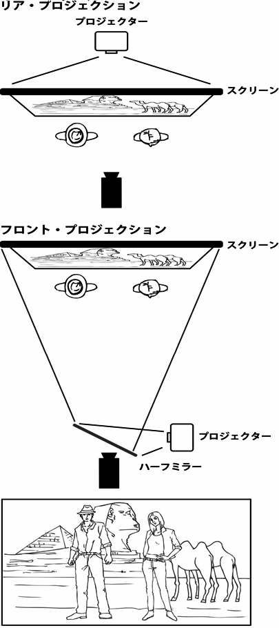
プロダクション･コード［motion picture production code（英）］
■映画製作倫理規定。1930年代から60年代までハリウッドの映画製作において、性･暴力など道徳面に関わる描写の自主規制上のガイドラインを示したもの。アメリカ映画製作配給業者協会（MPPDA）が30年に採択･設定、34年より規定の遵守を強制し、後期の改定を経て68年に廃止された。協会長の名前をとった〈ヘイズ･コード／Hays Code〉の通称でも知られる。業界内の自主規制ではあるがハリウッド･メジャーにおける検閲制度とみなされ、68年からは〈レイティング〉システムに取って代わられた。
■ハリウッドの自主規制は1920年代より顕在化しており、当時業界内で相次いだスキャンダル事件の対応･収拾のため、22年にMPPDAが設立された。会長に元共和党郵政長官のウィル･H･ヘイズを招き、協会執行部は"ヘイズ･オフィス"とも呼ばれる。道徳団体による映画界への圧力は以後も収まらず、特に〈ギャング映画〉の勃興に対して犯罪の美化や助長を批判され、市区によって検閲を受ける事態も発生。ヘイズはこうした外部検閲に先手を打って自主検閲で事前対応することを提示、30年に映画製作倫理規定を公文化した。この通称〈ヘイズ･コード〉はカトリック教徒の業界紙編集者と司祭の二人によって立案されたもので、宗教の冒涜･殺人や犯行の細部･麻薬取引･あからさまな情欲･強姦･白人と黒人の混交･出産等々、11の禁止事項と25の要注意事項を示している。当初は自発的な取り決めにすぎなかったためマスコミや団体の糾弾が続き、34年、メジャー系列の劇場では協会の承認を得た作品のみ上映できるよう強制化、製作倫理規定管理局（PCA）を設置して元ジャーナリストのジョセフ･ブーリンが代表に就任、脚本と完成作に対して事実上の検閲を厳しく行なった。この体制によってギャング映画ブームは終了し怪奇映画も弾圧されるなどハリウッド映画は表現を制限されていくが、一方で、ミュージカルは明朗･流麗な方向に姿勢を定め、性的描写を迂回する艶笑喜劇スクリューボール･コメディが勃興したように、〈古典的ハリウッド映画〉の形成にも大きな影響を与えている。45年のヘイズ引退･協会改組後、48年の〈パラマウント判決〉によってメジャー外部の映画が広範な劇場で上映されるようになるとプロダクション･コードも効力を薄め、52年のイタリア映画「アモーレ」（48）公開禁止提訴の敗訴、50年代末からの急進的外国映画の輸入、協会無承認の「お熱いのがお好き」（59）の独断上映とヒット、女性の胸を露出した「質屋」（64）が初めて承認を獲得、といったコードの緩和措置が続出。ジャック･ヴァレンティが協会長に就任した66年に規定は改正され、68年に年齢制限方式のレイティング･システムに移行した。
プロダクション･デザイナー［production designer（英）］
■ハリウッド映画などの洋画における美術監督。美術部門の総括者として"事物の見栄え"に責任を持ち、美術全般の制作管理やデザインを担当、衣裳やメイクなどの部門と連携しつつ、セットの設計や装飾･小道具に関する指示を行なう。1939年の「風と共に去りぬ」で美術を担当したウィリアム･キャメロン･メンジズが、それまでの美術監督（アート･ディレクター）の範疇を超えて画調の統一に貢献し、この役職が美術監督に代わって登用されるようになった。なおハリウッド方式では、プロダクション･デザイナーとは別に〈アート･ディレクター／art director〉の役職も置かれ、こちらが通常に言う〈美術〉の現場を取り仕切る。
プロダクト･プレイスメント［product placement（英）］
■製作過程での業界用語。映画の画面に自然な形でスポンサー企業の商品を配置して、宣伝効果を発揮する方法。1982年の「E.T.」で、E.T.がキャンディを食べる場面を挿入したところ、その商品の売り上げが60％以上も上昇したことから定着したと言われている。大作映画では、これによって得た収入を製作費の一部に充てるなど、現在では重要な資金調達方法の一つとなっている。
ブロックバスター（超大作映画）［blockbuster（英）］
■興行用語。大規模な予算を投じて、一流スタッフによる大規模なセットやSFX･VFXを駆使し、出演者にスターを揃えた超大作映画を指す。1970年代中盤、「JAWS／ジョーズ」（75）などの爆発的大ヒットをきっかけに、主にアメリカ映画で使われるようになった。大予算を投じている分、興行面での要求も高くなるため、公開規模を拡大し、マーケティングや宣伝も周到かつ派手に行なわれる。その反面、失敗した時のダメージも大きくなるため、リスク回避を目的に複数の会社で配給権を分け合い、共同出資なども行なわれている。ネーミングは、一街区を吹き飛ばすほどの威力を持った大型爆弾の名称から。
ブロックブッキング／フリーブッキング→「興行／ブロック･ブッキング／フリー･ブッキング」
■映画製作者。作品のクリエイティブ面･現場統括･ビジネス運営など、映画製作にかかわる全般の責任を負う立場。具体的には、企画の立案･開発を行ない、予算やスケジュールを見積もって資金を調達、監督をはじめとするスタッフやキャストを編成し、撮影や仕上げの現場を運営すると共に、宣伝･配給の契約や展開を管理して、給与や利益を関係者に配分する。メジャーまたは大手の映画会社によるスタジオ･システムが機能していた時代は、社長もしくは撮影所長などの会社役員が"製作者"であり、特にハリウッド･メジャーを創設した世代の製作者たちは俗に〈タイクーン〉と呼ばれた。ハリウッドでは伝統的に製作者が全権を握って配下の社員（現場マネージャー･監督･俳優等を含む）に具体作業を行なわせるプロデューサー･システムを採用し、日本でも東宝が早くから米国型の方式を採用したとされる。スタジオ･システムの崩壊後、作品ごとに企画や人材を集め現場を統括する（または制作を委託する）"パッケージ型制作"になってから、製作者も役割ごとの分業制となり数種の名称を与えられている。この点は日本映画も同様で、一般的に企画全体の責任者をプロデューサーとすると、資金調達（出資者含む）と配給面担当が〈エグゼクティブ･プロデューサー／製作総指揮〉、補完的な資金調達者が〈コ･プロデューサー／共同製作者〉、製作者間の関係調整が〈アソシエイツ･プロデューサー／製作補〉、現場の制作進行や予算管理を行なうのが〈ライン･プロデューサー〉となる。この場合、日本語では企画･予算･配給･権利保持まで含めた作品全体の管理を"製作"、作品を仕上げる作業行程までの範囲は"制作"と表記を使い分けている。
プロパガンダ
■〈プロパガンダ／propaganda〉自体は、大衆を扇動する意図を持って特定の思想やイデオロギーを宣伝する行為を意味する。映画のジャンルとしては、そのような目的を達成するために製作された作品を指す。
■プロパガンダ映画の端的な例では〈戦意高揚映画〉が挙げられる。作品のスタイルとしては、フィクション、ノンフィクションを問わない。ノンフィクションの場合、現実の出来事をカメラに収めたドキュメンタリー的な作品も見られるが、中立的視点で事実を伝えようとするドキュメンタリーに比べて、製作者の思想が直接的に反映されるのが特徴。ナチス政権下のドイツでレニ･リーフェンシュタールが監督した「民族の祭典 オリンピア第一部」（38）などは、芸術的にも高く評価されている。とはいえ、ドキュメンタリーとプロパガンダの厳密な線引きは難しく、和歌山県のイルカ漁の実態を描いた「ザ･コーヴ」（09）は、アカデミー長篇ドキュメンタリー賞を受賞したものの、恣意的な部分もあり、プロパガンダ映画と捉える意見もあった。
■日本における記録映画･教育映画･科学映画･PR映画等の総称。ドイツ語で文化記録映画を意味する"Kulturfilm"の訳語として広まり、戦時下の〈映画法〉施行の際に記録映画全般の意に定まった。今日でも、映画賞における非･劇映画の代名詞として使用され、図書館やホールでの該当作品上映の際にこの呼称を用いる例が多い。
■第一次大戦後、ドイツのウーファ社では国策の一環として、顕微鏡撮影や高（微）速度撮影を駆使した独自の科学映画や教育映画が作られ、これらを"Kulturfilm"と称した。まだ〈ドキュメンタリー〉の語が生まれてない1926年、その大作「美と力への道」（25）が輸入公開された際、日本では〈文化映画〉の訳をあてて紹介、以後、記録映画の呼称に文化映画の語が用いられ、やがて東宝や松竹も"文化映画部"を設立、中小の記録映画プロダクションも文化映画製作会社と呼ばれるようになる。39年施行の〈映画法〉では文化映画とニュース映画の強制上映が謳われ（実施は41年）、文化映画とは"国民精神ノ涵養又ハ国民智能ノ啓培ニ資スル映画ニシテ劇映画ニ非ザルモノ"と規程。戦後の映画法廃止後は、戦前よりあった〈教育映画〉の語が文化映画に替わって使われ、東宝や東映なども教育映画部を設けた。一方、キネマ旬報ベスト･テンでは、〈ニュース映画館〉の衰退に伴い鑑賞･評価の機会が減った記録映画･児童劇･教育映画･教材映画･PR映画･漫画映画を対象に、短篇映画の優秀作選出を53年度より開始。この"短篇映画ベスト･テン"の部門は、64年度から短篇の枠組みを取払い、長篇も含めた前述の非･商業用映画全般から選出する"文化映画ベスト･テン"と改訂。以来、同映画賞においてはホール等公開の劇映画やアニメーションも文化映画の枠組みで扱っている（逆に、記録映画であっても劇場公開されれば日本映画部門の選考対象となる）。
文芸映画
■小説･戯曲などの文芸作品を映画化したもの。特に日本において、近代以降の純文学、および純文学を志向する大衆小説や、戦後に流行したいわゆる中間小説の映画化に対して〈文芸映画〉の呼称を用いる。ジャンル色の強い原作の場合は該当ジャンルに区分され、海外ではそうした文芸上のジャンルや内容自体で区分するため、小説原作として一括りにするのは日本独特のジャンル分けと言える。
■日本でも当初は単に"著名な文芸作品を映画化したもの"の意で、1910年代の海外の古典文学映画化作品を文芸映画と称していた。20年代には谷崎潤一郎や川端康成らの文学者が映画と関わりを持ち始め、小説原作における芸術性への貢献や知名度が有効視される。今日の意で〈文芸映画〉の概念が作られたのは30年代。「伊豆の踊子」（33）、「坊ちゃん」（35）、「赤西蠣太」（36）といった純文学系統の原作が各社で続々と映画化され始め、石坂洋次郎原作「若い人」（37）のヒットをきっかけに、同時代を舞台とした文芸小説や新聞小説の映画化が慣習化した。「若い人」で石坂原作を初めて映画化し、のちに「雁」（53）や「夫婦善哉」（55）や「猫と庄造と二人のをんな」（56）等のベスト･テン作品を手掛けた豊田四郎は文芸映画の巨匠と称されている。
へ
ヘイズ･コード→「プロダクション･コード［motion picture production code（英）］」
ベルリン国際映画祭→「映画祭（国際映画祭）」
弁士→「活動弁士」
編集［editing（英）］
■撮影した素材を脚本を基に繋ぎ合わせ、一つの作品にまとめること。またはその役職。撮影済みのネガフィルムから、編集用に〈ラッシュ･ポジフィルム〉が作られ、編集室で作業が行なわれる。まずNGカットを除外し、OKカットを脚本と照らし合わせてシーン別に分類して物語の進行順に並べ〈粗編集〉を行なう。その作業を繰り返し映像の繋を精査していくことで作品の仕上げへと近付けていく。編集は基本的に編集者が行なうが、監督自身が行なう場合もある。ハリウッドでは監督に編集権が与えられていない場合が多く、公開後に〈ディレクターズ･カット〉と呼ばれる監督編集版が生まれることがある。
ほ
ホームドラマ
■日本でジャンルとして扱われる和製英語。庶民の家庭を舞台とし、家庭問題や家族間の心理的葛藤･愛憎劇などを、ユーモアやペーソスとともに描くドラマ。ここでの"家庭"は基本的に戦後の三世代家族や核家族といった単独家庭（人数は様々）を指し、物語は社会事象や社会問題を背景に置きながらも日常生活の範囲で描写され、性善説に基づき、対話や共同の行為などのコミュニケーションによって結末に導かれる。こうした"家庭劇"自体は戦前から作られていたが、ジャンルとして認識されたのは1950年代以降。特にテレビドラマによってその概念が普及し、翻って映画のジャンル規定に反映された。
■ホームドラマという語の発祥は定かではないが、1940年代のラジオドラマに対して用いられたこともあるという。映画では51年、大映が女性観客向けに〈母もの〉と並んでホームドラマ製作路線を掲げ、同年の「雪割草」と「西城家の饗宴」にホームドラマの語を用いて宣伝。これが松竹の「我が家は楽し」も交えてホームドラマとしての出来を評され、マスコミでホームドラマの語を使用することが広まった。さらに60年代、スタジオ制作や"お茶の間"で家族揃って見る番組に適したことからテレビドラマで家庭劇が多く作られ、同時にホームドラマというジャンルが一般に普及。〈家庭劇〉の語がそれ以前に演劇界では松竹新喜劇の旧称であり、文芸では婦女子向けの軽い新聞小説を意味したこと、およびアメリカ製の家庭喜劇をドラマ制作のひとつの範としこと、などからテレビドラマの家庭劇も、中流以上の温和な家庭を礎に置く軽喜劇調となり、ホームドラマの一般的概念として定着した。この点で、ホームドラマに相当する英米のジャンルは〈シチュエーション･コメディ〉だと言われる。映画のホームドラマというジャンルもまた、テレビドラマ以降の概念に基づき旧作を振り返って分類している例が多く、その場合には「お父さん」（23）や「隣の八重ちゃん」（34）など島津保次郎作品が先駆作に挙げられ、松竹の〈蒲田調〉や〈小市民映画〉を典型として発展、島津･小津安二郎･五所平之助･渋谷実などがホームドラマの名手に数えられ、〈大船調〉に受け継がれたとする。なお90年代以降の映画では、家族の崩壊を前提に新しい概念の家族再建や疑似家族のコミュニケーションを主題とするものが増え、旧来の概念に適さなくなりつつある。
＊参考「小市民映画」
ポーランド派／モラルの不安派
■1957年にカンヌ国際映画祭審査員特別賞を受賞したアンジェイ･ワイダの「地下水道」（56）をきっかけに、世界的に知られるようになったポーランド出身の映画監督たちを指す言葉。〈ポーランド派〉は、第二次世界大戦当時のナチス占領下における抵抗運動の実態や社会主義政権下の民衆の苦境を色濃く投影した作品を送り出し、欧米の映画界に衝撃を与えた。代表的な作家は、ワイダを筆頭に「尼僧ヨアンナ」（60）のイエジー･カワレロウィッチ、「パサジェルカ」（63）のアンジェイ･ムンクなど。
■1955年、それまで政府機関フィルム･ポルスキが一括管理していた映画の製作が、"映画製作ユニット"と呼ばれる優秀な映画監督たちを中心にした半独立組織の製作体制に変更されたことをきっかけに、ポーランド映画界は転機を迎えた。この体制下で製作された「地下水道」や「灰とダイヤモンド」（58）、「尼僧ヨアンナ」などが60年代初めに次々と世界の映画祭を席巻し、その作家たちは〈ポーランド派〉と呼ばれた。命名は57年カンヌ映画祭開催時でのフランスの批評家による。60年代中盤には次世代のロマン･ポランスキーやイエジー･スコリモフスキーが頭角を現わしたものの、彼らは様々な事情により国外へ転出。70年代に入ると、「家族生活」（71）のクシシュトフ･ザヌーシ、「アマチュア」（79）のクシシュトフ･キェシロフスキや、ワイダの助監督を務めたアグニェシュカ･ホランドなどがドキュメンタリーの手法を劇映画に持ち込んで、社会のモラルに一石を投じる作品を発表し、新世代の彼らは〈モラルの不安派〉と呼ばれた。
ポスト･プロダクション［post production（英）］
■映画製作における撮影後作業の総称。この作業を行なうスタジオや制作会社を指すこともある。編集、MA、ナレーション収録、音響効果、VFXの追加、CG作業、カラコレなどの一連を指す言葉で、〈ポスプロ〉と略される。撮影自体は含まないが、対して撮影前の作業を〈プリプロダクション〉と呼ぶ。
ボディ･ダブル［body double（英）］
■映画の主要出演者が諸事情によってある場面を撮影できないとき、代役として演技をする俳優のこと。主に身体の部分的な吹き替えをする場合の人物を指す。また、楽器の演奏や特殊な技能を必要とするスポーツに興じる場面、裸体を求められる場面などの吹き替え役としても用いられる。〈スタントマン〉もこの一種だが、声優による〈吹き替え〉はこれに属さない。
ホラー映画（恐怖映画）［horror film（英）］
■映画ジャンル。観客にHorror（恐怖･戦慄）の感情を与えようとする映画。"ホラー"の語源であるラテン語の"horrere"は、身体が震えるような恐怖、緊張や硬直･吐き気などの肉体的な反応を伴う恐怖の意があり、映画では幽霊や怪物･悪魔･地獄･心霊現象などの超自然現象を扱う映画として発展した。定説では1910年代以後のドイツ表現主義の作品群を源流に置き、1930年代にユニヴァーサル映画が量産したモンスター映画でジャンルとして確立。日本では〈怪奇映画〉の語で扱い、時代や社会的嗜好に応じて多様に流行やサブジャンルが生まれる。70年代頃からは本来のHorrorに限らずFear（危険や苦痛に対する恐怖）やTerror（圧倒する恐怖）を与える映画も範疇に含むようになったこともあって、怪奇映画の語に代わり〈ホラー映画〉の呼称が一般化した。この点で他ジャンルと重なることが往々にあり、主要カテゴリーとしてゴシック（怪奇･幻想）、モンスター、心理スリラーの三種に区分する研究者もいる。
■ホラーを扱う他分野としてゴシック小説や見世物小屋が先行したことから、恐怖を扱う映画も1890年代の黎明期より撮られている。『フランケンシュタイン』や『ジキル博士とハイド氏』のゴシック系も1908年には映画化されたが、〈怪奇映画〉の源流とされるのは「カリガリ博士」（19）や「吸血鬼ノスフェラトゥ」（22）などのドイツ映画。アメリカではドイツ映画人を招き同傾向の映画をリメイク、「オペラの怪人」（25）等で怪奇スターとなったロン･チェイニー主演作の系譜を承け、30年代に「魔人ドラキュラ」「フランケンシュタイン」（31）などのユニヴァーサル･ホラーが流行し、マスコミでその呼称が使われていた〈ホラー映画〉がジャンルとして定着した。しかしプロダクション･コードの規制が強化され神の冒涜だと弾圧を受けると、モンスター映画は娯楽性を高めつつ徐々に廃れ、40年代にサスペンス感で心理を圧迫する〈スリラー〉や〈ニューロティック映画〉に流行の座を奪われる。50年代はモンスターを宇宙人や放射能生物に置き換えたSF映画が楽しまれ、50年代後半から60年代には古典をグロテスクなカラー映画でリニューアルしたイギリスの〈ハマー･ホラー〉が席巻。この頃には製作倫理規定も効力を失いエクスプロイテーション映画でエドガー･アラン･ポー原作などゴシック･ホラーが量産され、スリラーの系譜からは「サイコ」（60）が登場、以後サイコ･ホラーの概念が普及していく。50年代にスリラーの復興を果たしたイギリスでも「血を吸うカメラ」（60）など異常心理ものが作られ、イタリアでは猟奇殺人ものの〈ジャーロ映画〉が流行、これらスリラーの系譜は残虐描写を強めた70年代の〈スラッシャー〉や80年代の〈スプラッター〉のサブジャンル生成に結び付く。正統派ホラーとしてはモンスター映画の亜流として〈ゾンビ映画〉が誕生、70年代には〈オカルト映画〉のブームも生まれた。スティーヴン･キングほかのモダン･ホラーを積極的に映画化した80年代を経て、「羊たちの沈黙」（91）以後はサイコ･ホラーが盛況となる。2000年代以降、旧作リメイクも盛んになるなかで日本の〈和製ホラー〉が注目され、「たたり」（63）や「悪魔の棲む家」（79）の系譜を交えた実録ビデオ風の心霊ホラーも量産されるようになった。なお、日本でも（証言によると）「化け地蔵」や「死人の蘇生」が日本映画誕生期に作られたとされるが、固有ジャンルとしては〈怪談〉が主に時代劇で伝統的に作られ、90年代に〈和製ホラー〉の波が起こっている。
ボリウッド→「マサラ･ムービー」
■女性の裸体や男女の性行為を見せて、観客を欲情させることを目的とした映画。性行為そのものを見せる〈ハードコア･ポルノ〉と、裸体を見せ直接行為は演技に留めた〈ソフトコア･ポルノ〉に大別される。日本では当初"ヌード映画"や"セックス映画"などと称していたが、1960年代末頃から〈ポルノ映画〉という呼称が一般化、東映･日活などが一時期、ポルノ映画を路線（の一部）に置いた。性を扱った一般映画の性描写と、性を見世物にするポルノグラフィとの境界は曖昧かつ恣意的･時代的に変化し、過去にはしばしば"芸術かわいせつか"という問題が沸き起こっている。
■女性の姿態を呼び物にした映画は黎明期から存在し、最古のポルノ映画とされるものは1910年以前の作品のなかで諸説あるが、一般的な劇映画におけるヌードや性行為という点に着目するならば、33年にチェコスロヴァキア映画「春の調べ」がこれを描き、世界中に衝撃を与えたことが記録に残されている。この作品はヴェネチア国際映画祭で監督賞を受賞したにもかかわらず、各国で上映禁止や大幅にカットといった扱いを受け、満足な形で上映できた国は少なかった。その後、50年代終盤からアメリカのラス･メイヤーが「インモラル･ミスター･ティーズ」（59）、「ファスター･プシィキャット！キル！キル！」（65）などの〈ソフトポルノ〉と呼べる作品を送り出すが、これらはインディーズ作品であり、プロダクション･コードの存在した米メジャー映画では、女性の裸体が登場することはほとんどなかった。そうした50年代末から60年代前半の、検閲を通らず作られた"ヌード映画"量産の現象を『プレイボーイ』誌は〈ヌード･ヴァーグ〉と呼んでいる。60年代後半からは世界的に映画検閲が改訂･撤廃されていき、まずヨーロッパでポルノと呼べる作品が誕生。西ドイツでは性医学映画を装った「女体の神秘」（67）、「完全なる結婚」（68）などが製作され、日本でもヒット。スウェーデン製の「私は好奇心の強い女」（67）は、一般映画ながら過激な性描写を巡って世界中に論争を巻き起こした。この作品は日本でも45ヵ所ものカットを受けて71年に上映されたが、その際に局部を隠すための"ボカシ"や"スプレー"といった技術が副産物として生み出されている。折しもアメリカでは66年のプロダクション･コード規制緩和に続き、68年にはレイティング･システムに移行。これによって〈ハードコア〉の「ディープ･スロート」（72）が登場し、フランス製ソフトポルノ「エマニエル夫人」（74）も人気を集めた。イタリアでは、ベルナルド･ベルトルッチ監督の「ラストタンゴ･イン･パリ」（72）が上映禁止になり、主演のマーロン･ブランド（本作でアカデミー主演男優賞ノミネート）、マリア･シュナイダーはわいせつ罪で有罪判決を受けるという事態に発展している。またこの時期は、青少年の性の目覚めを描いたイタリア製映画も人気を集め、ラウラ･アントネッリなどの女優が世に出た。日本でもちょうど60年代中盤から、映画産業の斜陽化によって、客足を取り戻す対策としてのエロス路線や、倒産した新東宝のスタッフが〈ピンク映画〉に向かうなど、様々な事情から性描写にスポットを当てた映画が急増する。65年には武智鉄二監督「黒い雪」がわいせつ物陳列罪容疑で告発される一方、若松孝二のピンク映画「壁の中の秘事」は西ドイツの業者によってベルリン国際映画祭に出品され、"国辱"と騒がれた。68年には東映がピンク映画の盛況に対抗して"ピンク路線"を開始、ピンク女優を大量に引き抜いて「徳川女系図」以下のピンク時代劇を製作し、エログロを扱った"異常性愛路線"に続くピンク現代劇の「温泉みみず芸者」（71）では池玲子と杉本美樹を"ポルノ女優"として売り出し、両者の主演作を量産していく。これら70年代中盤までの"東映ポルノ"の多くは、成人映画の指定を受け東映やくざ映画の添え物として一般劇場で公開された。あわせて71年に日活が〈ロマン･ポルノ〉のブランドを掲げ成人映画路線の大手として再スタート、「ラブ･ハンター 恋の狩人」（72）が警視庁の摘発を受けるといった事件も起きたが、同路線はやがて日本映画界を支える人材を輩出するようになった。これらロマン･ポルノをはじめとする大手製作の（ソフトコア）ポルノ映画は、主にアダルトビデオにその地位を奪われ、90年代にはほぼその役割を失っている。
＊参考「ハードコア［hard-core／hardcore pornography（英）］」「ピンク映画」「ロマン･ポルノ」
香港ノワール
■日本で用いられる映画ジャンル。香港の犯罪映画のうち、黒社会（暗黒街）に生きる人物たちのヒロイックな行動を描いた作品群を指す。1986年に香港で記録破りの成績を打ち立てた「男たちの挽歌」を日本へ輸入する際、宣伝のため香港映画とフィルム･ノワールを合わせたこの造語が用いられ、シリーズ作や続々と作られた類型作品もやはり〈香港ノワール〉と称したことから日本独自のジャンル用語として定着した。「男たちの挽歌」（原題：英雄本色）を含めた類型作品群は、香港では〈英雄片〉と呼ばれ（片は映画の意）、黒社会を舞台に男たちの友情と裏切りをガン･アクションと讃歌的な物語で描いたものが多い。日本では、それ以前に作られた〈香港ニュー･ウェーヴ〉の作家たちによる犯罪映画もひとまとめにし、香港映画で黒社会を主に扱うものは、ギャング映画、実録黒社会もの、刑事アクション、ノワール系アクションなどを含めて香港ノワールと称されている。
ま
マカロニ･ウエスタン［spaghetti western（英）］
■イタリアで製作された西部劇。復讐譚を基本とした物語で残酷描写と哀愁漂う音楽を特徴とする。主にイタリアで撮影されたが、スペインやユーゴスラビアをアメリカの荒野に見立てて撮影した作品も多い。1960年代から70年代にかけて500本以上が製作されたとされるが、実数は定かでない。日本に初めて紹介されたイタリア製西部劇は、65年5月公開の「赤い砂の決闘」（63）。その7ヶ月後、セルジオ･レオーネ監督の「荒野の用心棒」（64）が日本で公開され、イタリア製西部劇は一大ブームを巻き起こすことになった。
■マカロニ･ウェスタンの背景......1950年代半ば、ヨーロッパではドイツやスペインで西部劇が製作されるようになり、西ドイツの「シルバーレークの待伏せ」（62）の興行的成功は、危機的状況にあったドイツ映画界に活力を与えることとなった。60年代になってアメリカ映画界では西部劇製作が減少傾向にあった一方で、中近東･南米･ヨーロッパには西部劇に対する需要があったことから、ドイツ製西部劇の成功にあやかり、それらの市場向けにイタリア製西部劇が製作され始めた。さらに50年代に製作された「ローマの休日」（53）や「ベン･ハー」（59）などの〈ランナウェイ映画〉で使用された撮影機材やセット･人材の再利用という利点によって、イタリア国内に西部劇のセットが組まれた。またイタリア製西部劇は舞台をメキシコ国境付近と想定したことから、風景や言語圏が近似したスペイン南部にもセットが組まれ、製作費を節約していた。出演俳優にはハリウッドのB級俳優や駆け出しの若手、テレビ俳優などが起用されたが、「荒野の用心棒」に主演したクリント･イーストウッドや「夕陽のガンマン」（65）のリー･ヴァン･クリーフ、「さすらいのガンマン」（66）のバート･レイノルズはその代表。また当初は輸出用にアメリカ映画を装い、「荒野の用心棒」のレオーネはボブ･ロバートソン名義、「夕陽の用心棒」（65）のジュリアーノ･ジェンマはモンゴメリー･ウッド名義としていたように、クレジットで米国名らしい偽名が使われた例も多い。
■マカロニ･ウェスタンの歴史......イタリア製西部劇の原型は、セルジオ･レオーネの父であるロベルト･ロベルティが監督した「インディアンの吸血鬼」（13）にあると指摘する論文があり、イタリアではサイレント期から西部劇映画が製作されていた。戦後から60年代にかけてはアメリカ映画を模倣したコメディタッチの西部劇が何本か製作されているが、59年に製作されたマリオ･アメンドーラ監督の「La Terrore de Oklahoma」をマカロニ･ウェスタンの第1作とみなす説がある。その後イタリア国内では20本以上の作品が製作されたものの、世界的なマカロニ･ウェスタン旋風のきっかけとなったのは64年の「荒野の用心棒」だった。この作品はイタリア国内だけで32億リラの興行収入をあげ、当時のイタリアで戦後最大のヒット作となった。翌年公開された「夕陽のガンマン」（65）はヨーロッパの年間興行成績で1位となり、「続･荒野の用心棒」（66）の主人公"ジャンゴ"がマカロニ･ウェスタン初のヒーローとして世界的な人気を得たことをきっかけに、イタリア人俳優では「続･荒野の用心棒」のフランコ･ネロや「荒野の一ドル銀貨」（65）のジュリアーノ･ジェンマがスターとなり、マカロニ･ウェスタンは量産体制に入る。最盛期は年間70本以上作品が製作されたマカロニ･ウェスタンだったが、多くの作品は弱小プロダクションによる粗製濫造だったため次第と観客に飽きられ、西部劇の需要が無くなった70年代後半にはその姿を消していった。
■「荒野の用心棒」（64）......黒澤明の「用心棒」（61）に着想を得て西部劇に革命を起こしたイタリア製西部劇の代表作。テレビシリーズ『ローハイド』で人気者だったクリント･イーストウッドは、ハリウッドでのキャリア停滞を脱するため単身イタリアへ渡り、本作で神出鬼没かつタフなイメージを手探りで作り上げたと言われる。監督のセルジオ･レオーネはクロースアップを多用するなど独自の演出スタイルを作り上げ、音楽を担当したエンニオ･モリコーネとともに本作で世界的な注目を浴びた。60年代の社会情勢を象徴する"金のために鉄槌を下す"という英雄像はそのまま原題となっているが、その英雄像はハリウッドの騎士的英雄像に取って代わり、クリント･イーストウッドがその後演じる「ダーティハリー」（71）に代表されるアンチヒーローの台頭へと系譜を繋いでいくこととなる。一方「荒野の用心棒」は、「用心棒」の構想をそのままに、細部と文化は別物として完成されたが、内容が酷似しているということから盗作問題が起こり、著作権侵害の裁判沙汰となった。製作に関しては黒澤側に無断であったため、製作会社は謝罪の上で黒澤側に賠償することとなったが、クレジットに偽名を使用しているなど確信犯であったという通説が有力。最終的に日本での「荒野の用心棒」の権利は黒澤側に渡り、東宝東和が配給した。近年の研究では、「用心棒」自体がダシール･ハメットの小説『血の収穫』に着想を得ていると指摘する文献もある。
■マカロニ･ウェスタンの命名......イタリア製西部劇はアメリカやイギリスで〈スパゲッティ･ウェスタン〉と呼ばれているが、日本では「荒野の用心棒」が公開された際に〈マカロニ･ウェスタン〉と命名された。通説では映画評論家の淀川長治が、"スパゲッティ"の形状が弱々しさを想起させることから"マカロニ"に変えたとされている。一方で配給した元東宝東和社員が「映画評論家の南部僑一郎の発案ではないか」と証言するなど諸説あるが、まがい物として評価の低かったイタリア製西部劇に対する"中身が無い"という揶揄を含んでいる論旨に異論は見当たらない。
■マカロニ･ウェスタンの特徴......マカロニ･ウェスタンの主人公は"流れ者のガンマン"であることが多く、正義感を欠き、金銭欲を行動原理とする特徴を持つ。また演出において残虐性や、それに伴う激しい銃撃戦を特徴としていることから全編に"死"のイメージが漂う復讐譚にもなっている。アメリカ製西部劇は保守的なイデオロギーや理想社会の追求を訴求させる機能を持っていたのに対し、マカロニ･ウェスタンは弱者の抵抗運動や実現不可能な革命という暗喩を孤独な主人公の姿に投影させている違いも指摘されている。そのため"聖なる場所"とされる教会や墓地の描き方に若干の不敬や冒涜を感じさせる。墓地や棺に財宝を隠し、決闘の場とする演出はその所以。映画音楽においては、フルオーケストラの壮大なテーマ曲を特徴とするアメリカ製西部劇に対し、マカロニ･ウェスタンはエレキギターや口笛といったサウンドを楽曲に盛り込み、哀愁漂うスコアを特徴としている。
■マカロニ･ウェスタンの系譜......イタリア製西部劇の影響はアメリカ製西部劇にも波及し、エルビス･プレスリー主演の「殺し屋の烙印」（69）やエドワード･ドミトリク監督の「シャラコ」（68）等には音楽･美術に対する影響を垣間みることができる。また、ブリジット･バルドーとクラウディア･カルディナーレが共演したフランス製西部劇「華麗なる対決」（71）における市場を意識したキャスティングや、ロシア製西部劇「ヘッドレス･ライダー」（73）やメキシコ製西部劇「エル･トポ」（69）における残虐描写にも同様の影響を見出せる。アジアでは近年になって、タイ製西部劇「快盗ブラックタイガー」（2000）や韓国製西部劇「グッド･バッド･ウィアード」（08）、日本製西部劇「スキヤキ･ウエスタン ジャンゴ」（07）など、マカロニ･ウェスタンにインスパイアされたりオマージュを捧げる作品が製作され、その系譜を繋いでいる。（松﨑健夫）
マクガフィン［MacGuffin（英）］
■アルフレッド･ヒッチコックが使った言葉で、「物語の中でいっけん重要に見えるが、実はサスペンスを生み出すための単なる口実でしかない〈プロット〉上の仕掛け」のこと。
■フランソワ･トリュフォーはインタビュー書『映画術』の中で、ヒッチコックから〈マクガフィン〉について以下のような説明を受けている。「マクガフィンはひとつの仕掛けだ。しかしこれには由来がある。ラディヤード･キブリングという小説家はインドやアフガニスタンの国境で現地人と戦うイギリスの軍人の話ばかり書いていた。この種の冒険小説では、いつも決まってスパイが砦の地図を盗むことが話のポイントになる。この砦の地図を盗むことをマクガフィンと言った。つまり、冒険小説や活劇の用語で、密書とか重要書類を盗み出すことを言うんだ。それ以上の意味はない。だから、変に理屈っぽいやつがマクガフィンの内容や真相を究明しようとしたところで、なにもありはしないんだよ。私自身はいつもこう考えている。『砦の地図とか密書とか書類は物語の人物たちには確かに命と同じように貴重なものに違いない。しかし、ストーリーの語り手としての私個人にとっては何の意味もないものだ』とね」
■インド映画におけるミュージカル形式の商業娯楽映画を、日本では〈マサラ･ムービー〉と称する。"マサラ／masala"はヒンディー語の混合香辛料を指し、一本の中に"ナヴァ･ラサ"と呼ばれる"お色気･笑い･哀感･勇猛･恐怖･驚き･憎悪･怒り･平安"の9つの情感を盛り込み、歌や踊りで彩った娯楽映画を意味した。現地の英語呼称では"マサーラー･フィルム"、現地の分類では単に"商業映画･定式映画･大衆映画"とされる。伝統的大衆演劇のスタイルに基づき、上映時間は本編160〜170分にインターミッションを挟んだ3時間枠、必ず6〜7曲程度のミュージカル場面が織り込まれるスター主義の娯楽作、という型が一般的。過去のインド映画界では"一人のスター、6曲の歌、三つの踊り"が定式と言われ、ミュージカル場面は専門のコレオグラファー（振付師）が演出、歌は少数のプレイバック･シンガーによりプレスコ方式で吹替えられるが、一級のダンスがスターの条件であり、主題曲も公開前にポピュラー･ソングとして売り出され一般に普及していることが多い。過去に年間700〜800本作られたインド映画のうち9割以上はこうしたマサラ･ムービーで占められ、ヒンディー語映画の中心地ボンベイ（現在はムンバイ）はインドのハリウッドの意で"ボリウッド"とも称された。日本では1954年に「灼熱の決闘」（48）と「アーン」（51）が公開されて以後一般上映されることもなかったが、97年に「ラジュー出世する」（92）が正式公開。98年に「ムトゥ 踊るマハラジャ」（95）の大ヒットで一時的にブームとなったが、まもなく一般公開も稀となる。当時日本で知られたスターに、ラジニカーント、シャー･ルク･カーン、アミターブ･バッチャン、アイシュワリヤー･ラーイなど。監督では「ボンベイ」（95）のマニラトナム、音楽のA･R･ラフマーンも注目された。
■インド映画のトーキー第一作「アーラム･アラー（世界の美）」（31）も多数の歌･踊りを含んだミュージカルであり、以後、インド映画は伝統演劇を踏襲したマサラ･ムービーを主流とし、識字率の低い大衆の最大の娯楽として繁栄した。インドばかりでなく、中東･アフリカ･中央アジアでも人気を誇り、1971年以降はインド映画の製作本数が世界最多となって、80年代から年間700〜800本、2000年代に1000本を超えた年もある。ただしインドは言語別に州が編成された多言語国家であり、十数種ある公用語に合わせて映画も各言語圏ごとに作られ、総合では20以上の言語で映画製作が行なわれるという。このうち年100本以上作られるのがヒンディー語、タミル語、テルグ語の三種で、〈ボリウッド〉で主に作られるのは全国的に人気を持つヒンディー語映画。60年代に「大地のうた」（55）ほかが紹介されたサタジット･レイは少数派のベンガル語映画であり、かつインド映画に数少ない芸術映画であった。各地の撮影所では現地主要言語の映画を製作し、その地域でのスターを抱え、また他言語の人気映画は現地スターでリメイクすることも慣例となっており、年間の製作本数は単一国家のものと捉えるより中華圏やユーロ圏と同様にみなした数え方だとする意見もある。ゆえにアミターブ･バッチャンは全国的スターに成長した超大物であるがラジニカーントはタミル語圏の限定的大スター、という事情も生じている。マサラ･ムービーはインド映画の主流として、そのなかで盛衰やヒット傾向の変化を歩み、80年代以降にラブストーリーが人気となって映画界が盛り返し、日本への再紹介へとつながった。その絢爛豪華な群舞形式はマイケル･ジャクソンに影響を与えたとも言われるが、近年は海外販売を考慮して非ミュージカル作品や、ミュージカル場面を抜いた海外版も多く作られている。
マジック･アワー［magic hour（英）］
■撮影用語。光の具合が劇的にすばやく変わる日の出直後、日の入り直前の時間帯のこと。夕景は〈薄暮〉とも呼び、「early evening」＝早めの夜、「late twilight」＝遅い夕暮れ、つまり空が真っ暗になるちょっと前を意味する。
■マジック･アワーの時間帯は、光源である太陽が姿を消しているため、どこからともなく差し込む光が物体の陰影をなくすことで映像にやわらかな印象を与える。撮影監督のジャック･カーディフは「ぴったりの瞬間を掴むことができれば、消え入る寸前の陽光によって露出不足になり、目が醒めるような深い青に見える映像が得られる、まさにマジックだ」と語った。この時間帯に撮影された著名作に、テレンス･マリック監督の「天国の日々」（78）があり、一日に合計40分ほどしかない時間帯に撮った映像を主体として、美しい映像を実現させたとの評価が高い。
マルチプレックス→「シネコン（シネマコンプレックス／マルチプレックス）［cinema complex（英）］」
漫画原作映画→「コミック原作映画（漫画原作映画）」
み
ミザンセヌ［mise en scene（仏）］
■映画理論の用語。"演出"。staging＝"演出すること"に相当するフランス語が語源で、演劇における使用法に由来している。演出、つまり「脚本上の言葉を映像で実現させるために監督が行なう仕事」を指す。ミザンセヌには元々舞台上での演出に必要な要素として、舞台装置･衣裳･登場人物の配置･演技指導･照明がそれに相当するとされていたが、カメラワークやカメラアングル等、撮影に必要な要素も、その後ミザンセヌの要素とされるようになった。
ミステリー映画［mystery film（英）］
■映画ジャンル。犯罪やトリックなど、物語全体を貫く謎を序盤に提示し、その謎解きの過程やそれが生み出す独特の雰囲気を楽しむ映画。ミステリー小説の映画化を基本に、映画オリジナルの作品も多く製作されている。他ジャンルとも密接な関係にあり、時に〈スリラー〉や〈サスペンス〉の作品が同列にみなされ、また"SFミステリー"や"社会派ミステリー"といった複合ジャンルとして紹介されることも多い。本流は、探偵や警察およびその役割を代行する人物が事件や謎を追及する物語にある。なお、日本で推理小説が"ミステリー"の呼称に置き換わるのは、1953年に"ハヤカワ･ミステリー叢書"が刊行されて以後と言われている。
■ミステリーに該当する作品は『シャーロック･ホームズ』や『モルグ街の殺人』の映画化など、1900年代初頭にはすでに世界各国で製作されていた。ただし、第二次世界大戦前は小説と同様に〈探偵映画〉もしくは〈犯罪映画〉とみなされ、戦後に"推理小説"の語が欧米に倣って日本でも普及するにつれ、その映画化作品もミステリー映画として扱われるようになった。代表的な作品としては、探偵の活躍を主眼に置いた探偵映画に該当する「オリエント急行殺人事件」（74）、犯罪映画の中で謎解きが重要な要素となる「情婦」（57）、スリラーに区分される「レベッカ」（40）、フィルム･ノワールの名作としても名高い「サンセット大通り」（50）などがこのジャンルに含まれる。また、警察映画のジャンルに該当する「L.A.コンフィデンシャル」（97）などは、複合的にこのジャンルにも含まれるだろう。日本でも戦前は"捕物帖"として時代劇の中で恒常的に作られ、終戦直後の大映スリラー路線を経て、江戸川乱歩、横溝正史などの小説を原作にした探偵映画が製作された。70〜80年代には「砂の器」（74）に代表される松本清張原作の社会派ミステリー、「犬神家の一族」（76）をきっかけに人気が再燃した横溝正史原作の"金田一耕助"シリーズなどが人気を集め、ベストセラー推理小説を映画化する流れは現在も続いている。
ミュージカル＊海外編［musical film（英）］
■第一次世界大戦後のアメリカで独自の発達を遂げた、音楽やダンスを中心に展開する映画。イギリスのコミック･オペラから派生し、アメリカに渡って機知に富んだ音楽劇として都市部で発達した舞台ミュージカルと歩を合わせるように発展を遂げた。初の長篇トーキーとされる「ジャズ･シンガー」（27）と共に始まったミュージカル映画は、「ブロードウェイ･メロディ」（29）が第二回アカデミー賞で作品賞に選ばれるなど、早くから観客からの人気を得ることとなった。1930年代にRKO映画がフレッド･アステアとジンジャー･ロジャースをミュージカル･スターにしたことに倣い、各社が競ってミュージカルを製作する中、MGMが「オズの魔法使」（39）や「雨に唄えば」（52）などの名作を生み出し、作品の質･量ともに他社を圧倒。50年代中頃に、ミュージカルは黄金期を迎えた。60年代にはシネマスコープの導入によってスクリーンが大型化。ミュージカルも「ウエスト･サイド物語」（61）や「サウンド･オブ･ミュージック」（65）のように大作志向となったが、アメリカン･ニューシネマの時代を迎えて、時代にそぐわなくなったミュージカル映画というジャンル自体が次第に衰退していった。
■ミュージカルのはじまり......トーキーの登場とともに、映画は映像と音楽を同期させることが可能となった。1920年代になってアメリカの音楽文化が隆盛期を迎え、同時期に初の長篇トーキーとされる「ジャズ･シンガー」が公開されたことは、映画に〈音楽映画〉というジャンルを生み出すきっかけを作った。ブロードウェイの舞台を映画化した「ジャズ･シンガー」は、ユダヤ人歌手アル･ジョルスンが黒人歌手に扮し、音楽場面の同時録音を行なった"部分トーキー"であったが、興行的成功を収めて音楽映画製作の礎を築いた。
■ミュージカルの歴史......それまで都市部に住む一部の人々しか目に触れることがなかった舞台ミュージカルは、トーキーとして上映されることによって、より多くの人々が楽しめる娯楽となった。「ジャズ･シンガー」の成功により、再びジョルスン主演で製作された「シンギング･フール」（28）もヒットを記録。MGMが「ブロードウェイ･メロディ」を、ワーナーが「ブロードウェイの黄金時代」（29）を製作するなど、恋愛劇に歌とダンスを織り交ぜた初期ミュージカル映画が各社で量産された。30年代になると世界恐慌のあおりでブロードウェイ自体が低迷し、多くの人材がハリウッドへと流れていった。奇しくもこれがミュージカル製作の基盤をハリウッドに確立させることに繋がっていく。その中のひとり、フレッド･アステアは、RKOでジンジャー･ロジャースとコンビを組み、「空中レヴュー時代」（33）や「トップ･ハット」（35）など9本の作品を生み出して一時代を築いた。舞踊監督のバズビー･バークレイも映画界に進出、ワーナーで「四十二番街」（34）など奔放なカメラワークによる独自のスタイルを創造。またこの頃、フランスからモーリス･シェヴァリエが招かれ、ドイツのエルンスト･ルビッチ監督と組んで「ラヴ･パレード」（29）等のオペレッタ調ミュージカルに主演して人気を博している。ドイツからは、オペレッタを映画化した「会議は踊る」（34）や「三文オペラ」（31）が紹介され、世界中でヒットするも後継作品が生産されることはなかった。スター･システムによるミュージカルが最盛期となった40年代、MGMはジュディ･ガーランドやジーン･ケリーを、パラマウントはビング･クロスビーを、コロムビアはリタ･ヘイワースを、20世紀フォックスはベティ･グレイブルをそれぞれ看板俳優としてミュージカルを製作。各社の色を出したミュージカル映画が作られた。ジュディ･ガーランドが主演した「オズの魔法使」（39）は、カラー映画の特色を活かした映像と『オーバー･ザ･レインボー』に代表される楽曲によって古典的名作となった。50年代に入って「巴里のアメリカ人」（51）と「恋の手ほどき」（58）がアカデミー賞で作品賞を受賞したMGMのミュージカルは、娯楽性と芸術性を兼ね備えて人気を得た。「錨をあげて」（45）、「イースター･パレード」（48）、「踊る大紐育」（49）、など多くの名作を生んだMGMミュージカルは"娯楽の王様"と呼ばれ、黄金期を迎えただけでなく「雨に唄えば」（52）に主演･監督したジーン･ケリーがミュージカル界のスーパースターとなった。やがてミュージカルは「オクラホマ！」（43）のように物語性が重視されるようになり、作曲家リチャード･ロジャースと作詞家オスカー･ハマースタイン2世のコンビが手掛けた「南太平洋」（49）や「王様と私」（51）、「サウンド･オブ･ミュージック」などが人気を得て、スター･システムを基本としたミュージカル作品群は姿を消していった。「サウンド･オブ･ミュージック」が登場した60年代は、シネマスコープ等によってスクリーンが大型化したため、より収益を得られる大作映画が生産され、ミュージカルもそれに倣うように大作化していった。しかし「ウエスト･サイド物語」（61）や「メリー･ポピンズ」（64）、「マイ･フェア･レディ」（64）が大ヒットした一方で、ミュージカル自体は下火に。さらに60年代後半に登場したアメリカン･ニューシネマによって社会性を持った作品が観客に好まれるようになると、"夢の世界"を描いたミュージカルは姿を消していった。一方フランスではハリウッド製ミュージカルのエキスを悲哀物語に込めた「シェルブールの雨傘」（64）を製作。「シェルブールの雨傘」はミシェル･ルグランの音楽を得て、全編歌で語らせるという趣向が評価され、カンヌ国際映画祭でグランプリを受賞して大ヒットを記録した。ミュージカルの衰退と共に人気を得たのは、エルヴィス･プレスリーやビートルズといったミュージシャンを主役にした音楽映画だった。彼らの作品がとったサウンドトラック盤とのメディアミックスで映画をヒットさせる手法は、70年代後半から80年代にかけて「サタデー･ナイト･フィーバー」（77）や「フラッシュダンス」（83）、「フットルース」（84）など音楽とダンスをフィーチャーした青春映画へと引き継がれていくことになる。
■音楽伝記映画......音楽家の生涯を描いた作品には、ミュージカルの要素を持ち合わせ、劇中歌唱場面や舞踏場面が挿入されたものがある。シューベルトの悲恋を描いたオーストリア映画「未完成交響楽」（33）やショパンの恋愛を描いたフランス映画「別れの曲」（34）をはじめ、アメリカ映画では「アメリカ交響楽」（45）や「愛情物語」（56）、「ベニイ･グッドマン物語」（55）がその代表。このジャンルは現在でも実在の歌手やロックバンドの活動を描いた作品に姿を変えて製作されている。
■現代ミュージカルの系譜......ミュージカル映画衰退後もハリウッド映画は80年代にかけて「オール･ザット･ジャズ」（79）や「フェーム」（80）等、新しいタイプのミュージカルを製作。「フットルース」や「フラッシュダンス」はミュージック･ビデオ時代の礎となり、ブロードウェイのミュージカルも「シカゴ」（02）をはじめ、「エビータ」（96）や「マンマ･ミーア！」（08）などが映画化されている。一方インドのハリウッドと呼ばれているボリウッドでは、〈マサラ映画〉と呼ばれるインド製ミュージカルを伝統的に製作。90年代には人気スターのラジニカーントを主役にした「ムトゥ 踊るマハラジャ」（95）が日本でも話題となった。また、ディズニーのアニメ映画は初期からミュージカルの要素を取り入れ、「美女と野獣」（91）や「アラジン」（92）で現代的なミュージカルのあり方をアニメーションの形式によって示している。（松﨑健夫）
■ミュージカル映画を"ハリウッドで発展･完成した"歌やダンスを主軸とする映画群と規定すれば、日本映画においてミュージカルはジャンルとして定着しなかったと言える。ただしミュージカルを志向した作品は全時代を通じて現われており、オペレッタ映画や音楽映画など楽曲をふんだんに盛り込んだ（ハリウッド式と趣を違える）広義のミュージカル作品は、撮影所システムの全盛期に頻繁に作られ、さらに、ある場面の歌曲演出を強調した音楽（的）映画となると日本映画は独特の発展史を歩んできた。無声映画時代からすでに楽団の"劇伴"を持ち、1910年代のレコードの普及まもなく"流行歌の映画化"が行なわれ、映画と歌曲は密な関係を持ち始める。20年代には歌手の実演と映画を融合させた〈小唄映画〉が流行、トーキー移行前夜には〈映画主題歌〉が誕生。31年に日本製トーキーが始まると〈オペレッタ映画〉は音声付映画の呼び物となり、歌手の映画出演が常態化する一方で〈唄う映画スター〉も生まれた。第二次大戦以降の大衆的な時代劇では筋の節目に歌唱場面や宴･祭り･舞台等の踊りを織り込んだものが珍しくなく、現代劇でも要所にステージ風の舞踊･楽曲が入る"レビュー映画"や、歌手･楽団の舞台裏を描く"バックステージもの"がしばしば登場。その定着を象徴するのが58年、東宝では山口淑子（李香蘭）引退記念のレビュー映画「東京の休日」、日活では石原裕次郎主演の劇団舞台裏「素晴らしき男性」、東映では美空ひばり芸能十周年の楽団結成劇「希望の乙女」といった意欲的な広義のミュージカルが作られている。またこの頃よりヒット曲の歌唱場面を織り込む〈歌謡映画〉も量産。歌謡映画の路線は歌と踊りを取り混ぜたクレージー･キャッツ映画やGS映画につながり、その中で64年、初の和製本格ミュージカル「アスファルト･ガール」（大映）と「君も出世ができる」（東宝）が公開され、日本の音楽（的）映画はひとつの到達点をみせたのであった。しかしその後ミュージカル志向の製作は激減し、70年代初頭に大手映画会社の製作部門縮小が始まると、流行歌の映画化･バックステージ系音楽映画･一部のみミュージカル演出を取り入れた劇映画が作られるほかは、懐古と挑戦のためのミュージカルが稀に現われるのみとなった。
■『カチューシャの唄』......1914年、舞台『復活』の劇中歌として主演の松井須磨子が唄い大評判となった歌曲。劇中歌は10年の舞台から試みられた形式で、初めて大当りをとり翌年のレコード化も大ヒットとなった。この評判をみて日本キネトフォンが14年8月に映像と発声器を同期させるキネトフォン（音声映画）の短篇「カチューシャの唄」を、日活が10月に同曲を題材にした「カチューシャ」を公開、後者は大ヒットとなり翌年には続篇2作も公開される。これが"はやり歌"を映画化し話題となった最初期の例。ポピュラーソングを主題に映画化する企画は今日まで恒常的に続く。
■小唄映画......小唄･新小唄と呼ばれる当時の邦楽流行歌を映画化したもので、無声映画時代の20年代に流行。多くはその曲名を題名に掲げて物語の一場面に曲を織り込み、該当場面になると画面には歌詞が挿入され、同時に弁士の脇で歌い手が唄う。演劇と映画を融合させ10年代に流行した〈連鎖劇〉の部分的応用と言え、映画館には楽団や弁士が常任していたので発声映画より安易に音楽（的）映画が実現できた。この形態は「カチューシャ」に続き劇中歌舞台を映画化した「生ける屍」（18）で初めて使われたとの説があり、松竹の「水郷情話 船頭小唄」（23）で様式化、帝キネ「籠の鳥」（24）の記録的ヒットにより各社で量産されるようになる。この頃から〈小唄映画〉の呼称も一般化し、29年のブーム時にジャンルとして論ぜられたが、まもなくトーキーの登場により消えていく。情緒的場面でポピュラーソングを流す様式は今日でも用いられ、また、形態においては歌謡映画の祖型となった。
■「東京行進曲」......29年･溝口健二監督の無声映画。当初はトーキー第一号として企画され、これまでの小唄映画が既存の流行歌の映画化だったのに対し、先に映画用のテーマ曲を作成し同名映画を作ろうとした。技術上の問題で作品は小唄映画方式になったものの歌はレコードで大ヒット、『東京行進曲』は〈映画主題歌〉の第一号となり、唄った佐藤千夜子は"レコード歌手第一号･流行歌手第一号"と称される。大衆娯楽作において映画主題歌を用意し劇中や巻末で流すのは日本映画の伝統的な慣習と言えよう。
■オペレッタ映画......ヨーロッパの小歌劇の形式に基づく音楽場面入りの映画。概説は〈オペレッタ映画〉の項を参照。31年に「マダムと女房」で本格トーキーが始まった日本でもオペレッタ映画は折々に作られた。トーキー化に伴い軽演劇の役者が映画界に流入、P.C.L.は浅草オペラ出身の喜劇役者･榎本健一を主演に「エノケンの青春酔虎伝」（34）を成功させ、以後（東宝でも継続して）山本嘉次郎監督とのコンビ作を中心に、ジャズやシャンソンの翻案歌曲を随所に織り込んだエノケン主演のオペレッタ映画を量産した。日活ではマキノ正博（雅弘）が「鴛鴦歌合戦」（39）のほか歌曲･舞踊入りの映画に意欲をみせ、木村恵吾が大映で手掛けた「歌ふ狸御殿」（42）は各社の"狸御殿もの"の追随をもたらす。特に時代劇に多く作られたオペレッタ映画は、30〜50年代の和製ミュージカルにおいて主軸のひとつとなった。
■歌う映画スターと演技するスター歌手......レコード普及とトーキー移行にともない歌手の映画出演が常態となる一方、映画俳優が歌手となる例も現われる。松竹の高田浩吉は「大江戸出世小唄」（35）で小唄映画を踏襲し歌声を披露、同名主題歌で歌手デビューも果たし〈歌う映画スター〉第一号と呼ばれた。以後60年代初頭まで多くの主演作に歌唱場面が織り込まれ、同時に映画主題歌を発表。歌う映画女優第一号の高峰三枝子、歌手と俳優活動を同時期に始めた李香蘭や美空ひばりも歌う映画スターと呼ぶことができ、石原裕次郎･小林旭･吉永小百合の日活スター、里見浩太郎、加山雄三などで歌う映画スターの系譜がかたちづくられた。彼らの映画ではしばしばミュージカル風または小唄映画風に伴奏が背景に流れ主題歌･挿入歌が劇中で唄われる。歌手では30〜40年代の美ち奴、40〜50年代の笠置シヅ子、50年代ひばり･江利チエミ･雪村いづみの三人娘、60年代伊東ゆかり･中尾ミエ･園まりの三人娘などの出演作で同様に楽曲場面が織り込まれ、近江俊郎は映画出演を経て55年に製作･監督へ進出、これら歌う映画スターと演技する歌手が歌謡映画の礎をなした。
■歌謡映画......歌謡曲などのポピュラーソングを題材とし、歌手本人による歌唱場面を織り込んだ劇映画。小唄映画の様式に基づき、歌う映画スター等の歌唱演出を踏襲したもので、現実的なドラマの中途で自然とミュージカル風に（現実にはない伴奏に合わせて）登場人物が唄いだす。50年代後半にアメリカでエルヴィス･プレスリーの同趣向の映画群がヒット、50年代末に歌謡曲界では"低音ブーム"が生じ、「有楽町で逢いましょう」（58）ほかフランク永井の曲が本人出演で映画化された頃から量産され始め、60年代に定番化、特に日活は青春歌謡映画を路線のひとつに置いて多作した。狭義として定義すると、ヒット曲･話題曲を題名に掲げ、歌手本人が出演し、適所に（BGMとしてでなく）本人の歌唱場面が織り込まれた映画を〈歌謡映画〉と呼ぶ。ただし歌唱場面は唐突にミュージカル化する場合もあれば、劇中設定に沿ってクラブ歌手や音楽会の場で現実的に唄う場合もあり、物語自体はメロドラマ･アクション･明朗喜劇など自在なジャンルで展開。歌う映画スターの場合は、当初からレコード化を前提に楽曲と同時進行で企画されることも多かった。当時は青春歌謡･歌謡ロマンスなど様々な名称で扱われ、歌手では舟木一夫･西郷輝彦･橋幸夫･坂本九･都はるみなどを度々起用、加山雄三の「若大将」シリーズも形式としては歌謡映画スタイルを採っている。また任侠映画を路線に敷いた東映でも「夜の歌謡シリーズ」や美空ひばりの「民謡の旅シリーズ」が作られた。
■クレージー映画......クレージー･キャッツまたはそのメンバーが主演した喜劇映画の総称。一般には東宝（と渡辺プロダクション）により62〜71年に作られた作品群を指し、無責任シリーズ･クレージー作戦シリーズ･日本一シリーズ･クレージー時代劇と区分けもされている。クレージー･キャッツは歌･踊り･コントをこなすタレント集団で、クレージー映画のほとんどが音楽場面込みで作られた。作品によって歌謡映画やレビュー映画のスタイルを採り曲数もオペレッタ映画並に多数、和製ミュージカルのひとつとみなされることもある。
■本格ミュージカル映画......歌謡映画とクレージー映画で盛り上がる64年、大映はハリウッドから「回転木馬」の振付師ロッド･アレクサンダーをミュージカル監修に招き、ハリウッド式という意味で"日本初の本格ミュージカル映画"と称し「アスファルト･ガール」を製作。東宝では監督が本場を視察･研究した「君も出世ができる」を製作、4月･5月と連続で公開された。同時期には岡本喜八による和洋折衷の実験的ミュージカル風映画「ああ爆弾」も上映され、和製本格ミュージカル興隆となったが、興行では不振に終わり、本格ミュージカル大作への挑戦は途切れてしまう。
■GS（歌謡）映画......60年代後半にブームとなった"グループ･サウンズ"と呼ばれるエレキバンドを主演もしくは共演に据え、彼らの楽曲場面を多々織り込んだ映画。エレキバンド音楽を大きく扱った点で「エレキの若大将」（65）が先駆作となり、人気GSバンドが主演し楽曲を多数聴かせる第一号に「ザ･スパイダースのゴーゴー･向う見ず作戦」（67）が挙げられる。日活はザ･スパイダースで歌謡映画･レビュー映画的な作品を、東宝はザ･タイガースで63〜65年のビートルズ映画やクレージー映画に範を取った作品を、松竹はヴィレッジ･シンガーズほかで歌謡メロドラマを、それぞれに連作。これらに先駆け日活では歌謡映画で「二人の銀座」（67）等のGS系バックステージものが作られているが、日活は歌う映画スターの流れで62年に山内賢･和田浩治･杉山元･木下雅弘の若手俳優によりエレキバンド"ヤング＆フレッシュ"を結成、66年に主演作「青春ア･ゴーゴー」を公開していた。これが実質的一号とも言える。
■バンド映画......主にロックバンドを主人公とし、バンドの結成や活動を通じて青春ドラマを描くと同時に、劇中で演奏される音楽を聴かせる映画。エレキバンド結成の情熱を描いたGS歌謡映画「青春ア･ゴーゴー」（66）がその元祖。70年代になって日活はロマン･ポルノ路線に転向し、時代劇も衰退するなか歌謡映画･クレージー映画･GS映画の人気は収束。かろうじて80年代〈アイドル映画〉に流行歌の映画化と歌手の主演という系譜が引き継がれるが、これらは音楽映画に相当しない作品ばかり、ミュージカルは一部の場面でオマージュ的に部分演出として採用されるのが専らとなった。ただし80年代後半より、バックステージものの系譜として、数曲の楽曲を聴かせる〈バンド映画〉が折に作られていく。既製バンドを使わず俳優が音楽家を演ずるものとして、「SO WHAT」（88）、「青春デンデケデケデケ」（92）、「ラストソング」（94）、「スウィングガールズ」（04）、「リンダ リンダ リンダ」（05）など。2010年は「BANDAGE／バンデイジ」「ソラニン」「BECK」とブームの様相を呈した。なお、近年のミュージカル挑戦作には「ちんちろまい」（00）、マサラ･ムービーを志向した「ナトゥ 踊る！ニンジャ伝説」（00）や「恋に唄えば♪」（02）、「矢島美容室 THE MOVIE 〜夢をつかまネバダ〜」（10）などがある。
（山下慧）
む
ムードアクション→「日活アクション（無国籍映画／ムードアクション／ニューアクション）」
ムーブオーバー
■興行に関する業界用語。公開予定期間を終えた映画が、近隣の系列映画館に場所を移し続けて上映することを指す。ある上映作が予想を超えたヒット作となり、期間を延長したいもののすでに後の予定が詰まっている、といった事情により同じ映画館で上映継続できない場合に行なわれる。
無国籍アクション→「日活アクション（無国籍映画／ムードアクション／ニューアクション）」
め
メジャー（ハリウッド･メジャー／大手五社）
■市場規模の大部分を占め、映画業界において大きな力を持つ大手映画会社のこと。世界の映画市場を支配するハリウッドのメジャー会社を〈ハリウッド･メジャー〉と呼ぶが、現在ではMGM/UA、パラマウント、20世紀フォックス、ワーナー･ブラザーズ、ソニー･ピクチャーズ（コロムビアとトライスターを傘下に持つ）、ユニヴァーサル、ディズニーがこれに該当する。日本では現在、東宝、松竹、東映、KADOKAWA（角川映画）がメジャーとされる。
■メジャーと呼ばれる会社には、時代によって入れ替わりがある。アメリカでは、ハリウッド成立からスタジオ･システム全盛期にかけてMGM、パラマウント、ワーナー･ブラザーズ、20世紀フォックス、RKOの〈5大メジャー〉に加え、〈ミニメジャー〉と呼ばれるユニヴァーサル、コロムビア、UAの3社を加えた8社が、製作･配給･興行を一貫して行なっていた（UAは配給のみ）。これが独占禁止法違反とされた1948年の〈パラマウント判決〉により、各社は劇場部門の分離を命じられ、テレビ普及の影響を受けて業績が悪化したRKOが55年に製作を停止。その後は、大手資本による映画会社の買収、グループ再編、独立プロの新規参入などを経て、現状の〈アメリカ映画業協会＝MPAA〉に属する上述各社がメジャーと規定されている。日本では第二次大戦後、老舗の日活と松竹に、新興の大映と東宝や東映を加えた合計5社が、自身の配給網を持つメジャー会社として〈大手五社〉などと称された。その後の一時期には、新東宝もメジャーに名を連ねたこともあるが、70年代以降に映画会社の倒産が度々起こり、今日では、映連こと〈日本映画製作者連盟〉に属する映画会社がメジャーと規定されている。
メロドラマ［melodrama（英）］
■映画ならびに演劇･文芸･テレビドラマ等でジャンルとして扱われる語。女性映画･恋愛映画･家族映画のなかでも通俗的かつ曲折に富んだ物語に重点を置く感傷的なドラマを指す。メロドラマの語は、ギリシア語で歌を意味する"メロス／melos"と、劇を意味する"ドラマ／drama"が結合したもので、当初は18世紀末〜19世紀初頭のヨーロッパの舞台劇において、台詞でなく音楽により感情を表現する手法･場面に対して用いた。この様態がアメリカ演劇にも輸出され、大衆小説や黎明期の映画へ持ち込まれた際に音楽要素が抜け落ち、大衆受けする感傷的な作品を言うようになる。アメリカ映画での最盛期とされるのが1930〜50年代。旧来は批判的な意味合いを含めてジャンル付けされることが多かったが、70年代半ばから再評価が起こり、メロドラマが個人的な感情や経験の表現に適した形式であり、また人間関係の障害となるものを通じて社会の制度や抑圧が示されると捉えられるようになった。またその基本的な骨格が〈古典的ハリウッド映画〉全般に通底するとの意見もある。こうしたメロドラマ考察においてよく挙げられたものに「散りゆく花」（19）や「嵐の孤児」（21）のD･W･グリフィス、母ものの原型「ステラ･ダラス」（37）、「妖婦」（45）ほか40年代イギリスの"ゲインズバラ･メロドラマ"、黄金期ハリウッドのビンセント･ミネリやダグラス･サーク、ニコラス･レイなど。新派悲劇を現代劇の祖に置く日本映画でも、「不如帰」「愛染かつら」（18）や「君の名は」（53）などを好例にメロドラマが多く作られ、社会性の欠如も指摘されつつ、〈女性映画〉の名手がまたメロドラマ作家としても挙げられている。
も
モノローグ［monologue（英･仏）］
■独白。登場人物が心の中で思っていることを相手なしに一人で語ること。〈ナレーション〉と同等のかたちで音声が流れ、その人物の心情を表現するだけでなく、状況の説明を担当することもある。当然ながら他の登場人物には聞こえておらず、話者がナレーターと同じく物語の語り手の立場にあるため、厳密な理屈では、話者が見ていない･知らないことは映像で描写されないはずだが、おおむねの映画では往々にその原則は無視される。
モブ･シーン
■群衆を描いた場面。モブ（mob）には暴徒の意があるが、暴徒に限らず、大勢の人が集まり何らかの表現となっている場面に用いる。ただし大都会の人混みなど漠然と群衆が映っているものは当てはまらず、エキストラを使って、ある程度の演技を伴った群衆の動きをつくりだしている場合に〈モブ･シーン〉の語を用いる。
モンタージュ［montage（仏）］
■編集または映画理論の用語。映像の組み合わせによって意味を表現する技法を指し、現場の語句としては"編集"に相当する。
■映画理論における〈モンタージュ理論〉は、ショットとショット等の映画の構成要素について効果的な結合を探求したもの。1920年代にソ連のレフ･クレショフやセルゲイ･エイゼンシュテイン、フセヴォロド･ブトフキンらによって研究･実践が成された。〈クレショフの実験〉では、第1のモンタージュで、男優のカットの前に、スープ皿のクローズアップを繋ぎ、 第2のモンタージュでは、スープ皿のかわりに、棺の中の遺体の映像を繋いだ。第3のモンタージュでは、男優のカットの前に、ソファに横たわる女性の映像を繋いだ。それぞれのモンタージュを見た後で、俳優があらわす感情の特徴を観客が述べたところ、第1では「空腹」を感じ、第2では「悲しみ」を感じ、第3では「欲望」を感じたという結果を導いた。つまり一つの映像がモンタージュ（編集）によって意味合いが変化するということを実証させてみせたのである。これを〈クレショフ効果〉と呼んでいる。
モンド映画［mondo film（英）］
■ドキュメンタリー映画の一ジャンル。世界（主に文明社会から離れた地域）の奇怪な風習や出来事、あるいは残酷なエピソードを羅列的に紹介する長篇。基本的にナレーションで進行する紀行映画の形態を採り、時に"やらせ"の部分を含むため、〈エクスプロイテーション〉の一種としても捉えられている。1962年のイタリア映画「世界残酷物語」が世界中でヒットすると、同じ製作者によるシリーズ作品を含め各国で類似の映画が作られ、多くが同作の原題『Mondo Cane（犬の世界）』に倣って題名を『Mondo〜』としたことから、これらの俗称として〈モンド映画〉の語が使われるようになった。日本では90年代頃より好事家の間で用いられている。
■扇情的･猟奇的なドキュメンタリー（または疑似ドキュメンタリー）自体は命名以前より作られており、アメリカの「世界結婚奇習物語」（58）やイタリアの「世界の夜」「ヨーロッパの夜」（59）などが先駆作とされ、後者は日本で〈夜モノ映画〉の俗称で類似作がブームとなった。また日本映画でも52年にブラジル奥地探検ものの「裸族」が公開され大ヒットとなったこともある。初期ブーム後では「女体の神秘」（67）以下の西ドイツ製性医学映画や「女子学生◯秘レポート」（70）もの、疑似殺人フィルムの「スナッフ」（75）、正統派の「グレートハンティング」（75）や「食人族」（78）、死を羅列する「ジャンク 死と惨劇」（78）、日米共同の「アメリカン･バイオレンス」（81）などがモンド映画に分類され、定義も徐々に曖昧と化して"似非ドキュメンタリーのキワモノ映画"程度の意となり、主な発表の舞台をビデオ･パッケージに移した。
よ
四騎の会（よんきのかい）
■1969年、テレビ人気に押され気味だった日本映画を守ろうと、「トラ･トラ･トラ！」（70）の監督降板直後の黒澤明が中心になって、木下恵介、市川崑、小林正樹とともに映画監督4人で結成した独立プロダクション。設立意図には暗に、降板騒動で製作環境を失った黒澤に映画を撮らせようという意が込められていた。第一回作品として、山本周五郎の『町奉行日記』を原作に4人の共同脚本･監督で「どら平太」を企画したものの頓挫（のち、2000年に市川崑が映画化）。のちに黒澤の「どですかでん」（70）が第一回作品として発表された。ほかにテレビ用の小林監督『化石』（のちに再編集され劇場公開）や『ただいま浪人』などが四騎の会名義で製作されたが、当初の構想にあった四人共同監督作は結局作られることなく、「どですかでん」の興行も成績が振るわなかったことや、続いて発生した黒澤の自殺未遂事件などもあり、期待された成果のないまま、やがて自然消滅していった。
ら
ライティング（キーライト／レンブラント／ハイキー／ローキー）
■撮影用語。ライティングは、撮影のために行なう照明全般のこと。映画史初期の撮影では太陽光を利用した撮影が行なわれ、スタジオもこれにあわせて屋根をガラス張りにした〈グラスステージ〉を用いた。1920年代からフィルム撮影用に〈アーク･ライト〉が使用され、これを大量に当てることでスタジオ屋内での撮影が可能になった。フィルムの性能が上がり、小型の〈クォーツ･ライト〉が登場すると照明設置はより簡易に。80年代後半には撮影用の蛍光灯ライト〈キノフロ〉が開発され、今日では自然光で撮影する例も増えている。照明の基本的な役割は、映画史初期の「写し出す」から、映画黄金期の「写し出し、陰影を作る」ことへと移行し、現在では「映像表現の手段」となっている。
■ライティングの基本は、『キーライト』『おさえ』『逆』の3点照明で、〈キーライト〉は主体となる光源を指す。屋外なら太陽光や月光、屋内なら部屋の電灯をキーライトと想定し、その光源に似せた光を照明で表現する。この基本を外した効果的なライティング方法のひとつが〈レンブラント･ライト〉。硬めの光を使った照明によって、レンブラントの絵画で描かれている光の表現を模倣。原則的にライトは顔の斜め上45度、顔の正面から45度に設置し、影側の目の下にできる逆三角形のハイライトが特徴となる。「ゴッドファーザー」（72）はこの効果を大胆に活用し、新たな映像表現を導き出した代表例。また照明によるライティングだけでなく、露出を意図的に計測の適正値よりもアンダーにすることでハイライト部を強調させたり、重厚感を出す手法もある。意図的に映像を暗めにするこの手法は〈ローキー〉と呼ばれている。この手法はホラー映画や〈フィルム･ノワール〉で多用され、心理的効果を生む。また意図的に計測の適正値よりも露出オーバーさせて映像を明るめにする手法を、〈ハイキー〉と呼んでいる。ハイキーは映像に軽快で爽やかな印象を与え、鮮やかな想い出を中心とした回想場面等で使用されることが多い。
ラインプロデューサー→「プロデューサー［producer（英）］」
ラジー賞→「ゴールデン･ラズベリー賞（ラジー賞）［Razzie Awards（英）］」
ラッシュ／デイリー
■〈ラッシュ／rushes〉は、撮影されたフィルムを確認する作業、またその際のポジプリントを指す。商業映画の現場では、その日に撮影された素材はその夜のうちにポジプリントにされ、その状態を監督や撮影監督らが確認する。撮影期間はこの作業が繰り返されるため、その日のラッシュを確認することを〈デイリー〉と呼んでいる。
ランク･オーガニゼーション［Rank Organisation（英）］
■1940年代のイギリスで隆盛を誇った巨大複合企業。実業家のJ･アーサー･ランクが映画製作に乗り出し37年に創設、興行会社と撮影所･製作会社や関連会社を次々と配下に従え、第二次大戦の終戦時までにイギリス映画製作会社の8割、配給･興行会社の6割を掌中に収めてランク帝国と称されるに至った。〈イーリング･コメディ〉で知られるイーリング撮影所も帝国入りしたひとつ。ランクは配下の各撮影所それぞれに製作者を据えて自由に企画を進行させる"ユニット･プロダクション制"を採り、製作･配給･興行の一体化した"垂直統合"の体制で意欲的に製作、戦後イギリス映画の黄金期を築き上げたとされる。巨大な銅鑼を鳴らすゴングマンの（映画冒頭で流される）商標ロゴが著名。しかし不興の作も多く、政策上の問題でアメリカ映画が英国内制作に乗り出したこともあって40年代末には赤字を抱え、50年代から撮影所を整理していき興行を経営の軸に。製作部門はパインウッド撮影所に集約したのち、マルチ産業企業として95年まで存続した。
■ランク社に属した主な制作ユニットは次の通り。〈トゥー･シティーズ〉＝「ヘンリー五世」（45）、「ハムレット」（48）などローレンス･オリヴィエやキャロル･リードの監督作を手掛ける。〈シネ･ギルド〉＝劇作家ノエル･カワードが重役に就きデヴィッド･リーンの初期作「逢いびき」（45）、「大いなる遺産」（46）など文芸映画を製作。〈ゲインズバラ〉＝"ゲインズバラ･メロドラマ"と称される恋愛映画やスリラーで売った。〈インディヴィデュアル〉＝脚本家陣が設立しスリラーを製作。〈パスカル〉＝大作「シーザーとクレオパトラ」（45）の失敗で早々に解消。〈アーチャーズ〉＝「黒水仙」（46）や「赤い靴」（48）のテクニカラー作品が著名。〈イーリング〉＝マイケル･バルコン製作によるドキュメンタリー･タッチの作品やイーリング･コメディで知られる。ランクはこれら劇映画製作のほかにニュース映画シリーズ、アニメーション、低予算専門ユニット、新人養成機関にも手を広げたが、いずれにも成果を残せなかった。
ランナウェイ［runaway production（英）］
■1950年代に、ハリウッド映画がアメリカ国外で撮影･製作した方式。
■第二次世界大戦は世界各国の映画産業を壊滅状態に追い込み、それを好機と捉えたハリウッドの映画会社は、豊潤な資金力によって娯楽に飢えた世界各国へアメリカ映画を輸出した。結果、莫大な利益を得ることとなったのだが、輸出先の外貨事情が不安定だったため、収益をアメリカ本国へ送金するのが困難だという問題に直面した。アメリカは1947年に戦後復興計画としてマーシャル･プランを施行して、ヨーロッパに対してドルを凍結していたが、その凍結されたドルを取り立てることを目的に、映画会社がロケ隊を海外に派遣し、その費用を凍結ドルから支払うという苦肉の策が、この〈ランナウェイ〉と呼ばれる製作手法だった。ドル凍結問題が解決後もランナウェイ方式の作品が作られた理由の一つに、テレビの普及によって映画上映のスクリーンが大型化したことが挙げられる。大型スクリーンに投影されると、ミニチュアやアメリカ国内でロケした風景では観客を満足させられなくなったからで、同時に組合の力が強くなってハリウッドの人件費が高騰し、人件費の安い海外でのロケが盛んになったという事情もあった。
り
リール
■フィルムの巻枠のこと。今日の上映プリント用の一般的な1リール（1巻）には、約2000フィート＝15〜20分ぶんのフィルムが巻かれている。
立教ヌーヴェル･ヴァーグ→「ニュー･ウェーヴ」
立体映画→「3D映画（立体映画）［3-D（three-dimensional）film（英）］」
立体音響［stereophonic sound（英）］
■音声を再生する際に、三次元的な方向性や距離を感じさせる音響方式。世界初のステレオ音声作品として上映されたディズニーの「ファンタジア」（40）以降、音響の立体化を売りにした映画や上映方式が登場した。「大地震」（74）は〈センサラウンド／Sensurround〉という立体音響効果をもたらす上映方式で話題となり、同様の方式で「ミッドウェイ」（76）、「ジェット･ローラー･コースター」（77）、「宇宙空母ギャラクティカ」（78）が公開された。センサラウンドは、感覚（sence）と包囲（surround）を混合した造語で、MCAとユニヴァーサル映画が共同開発。専用のスピーカーで低周波の音波を発生させ、地震に似た震動を観客が体感できるという趣向だった。また「サスペリア」（77）の〈サーカム･サウンド･システム〉、「ファンタズム」（79）の〈ビジュラマ〉、「猛獣大脱走」（83）の〈ロアリング360〉等、4chステレオをハッタリのネーミングで客寄せに使用した作品もあった。日本でも東宝スコープで疑似立体方式の音響〈パースペクタステレオフォニック方式〉を採用。「モスラ」（61）では、4トラックの磁気テープが塗布された上映プリントによって立体音響を施した〈多元磁気立体音響方式〉が開発された。これは劇場の左右･中央･後方の4方向から音声を再生することで、立体的な音響を実現したシステム。ドルビーステレオ方式が一般化するまで、東宝では「キングコング対ゴジラ」（62）や「影武者」（80）等の大作映画で重宝された。1950年代に開発された70ミリ映画の5.1chサラウンド音響は、「ジュラシック･パーク」（93）で採用されたDTS方式のデジタル圧縮技術によって進化し、「トイ･ストーリー3」（10）ではドルビーサラウンドの7.1chが採用されている。
リテイク
■撮影用語。撮影された素材に問題があった場合に、撮影をやり直すこと。再撮（さいさつ）ともいう。
リバイバル
■過去に公開された作品について、あらたに上映権を獲得した上で新規の宣伝など行ない、新作映画同様に劇場で公開すること。"再評価･再演"を意味する"revival"を日本では興行用語に充てたもので、旧作プリントを単に借り受けた名画座での上映はこれに含まれない。昔の映画をそのまま公開するだけでなく、場合によっては新たに上映用のプリントを起こした〈ニュープリント版〉や、デジタル技術で修復を施した〈デジタル･リマスター版〉などの付加価値をつけて上映することも少なくない。オリジナル版そのままではなく、新たに編集し直した〈ディレクターズ･カット〉版などもこの派生形。当初公開の映画会社が、不入りの差し替え上映といった事情で、当初からの上映権が切れる前にもう一度全国公開する場合は、リバイバルと区別して再公開や再上映と称する。
リメイク［remake（英）］
■過去の映画作品を原作として、新しい映画を製作すること。再映画化。スタッフ･キャストは時代に合わせて一新されるが、時には同じ監督や俳優が起用されることもあり、オリジナル脚本をそのまま使う例も珍しくない。
■厳密には、過去の自社作品、または権利保持者から許可を得た映画作品を原典として、再映画化したもののみが〈リメイク〉映画に相当するが、テレビドラマの"映画化"まで含めてリメイクと紹介する事例も多く、定義は曖昧になりつつある。リメイクの中には、ヒッチコックのオリジナル作品をカット割りまでそっくり似せて再撮影した98年の「サイコ」、基本的な設定だけを借りて物語は新たに作り上げたティム･バートン版「PLANET OF THE APES 猿の惑星」（01）、「切腹」（62）と「一命」（11）のように直接の再映画化ではなく、同一の原作を改めて映画化した作品、などがある。また、近年は名称も多様化し、〈リ･イマジネーション〉や〈リブート〉、〈リスタート〉などと呼ばせる例も多い。なお、タイトルに関しては、オリジナルに近いものを採用する場合もあれば、まったく変えてリメイクであることをわからなくする場合もある。
れ
■映画公開･鑑賞に際しての格付けや規制の基準。一般劇場で正規に上映される映画作品に対し、各国それぞれの業界団体が協定として規定を作成している。劇中の暴力表現･性描写･道徳倫理に反する内容等について、年齢（と親の指導）を制限の基準とする〈レイティング･システム〉は、アメリカをはじめイギリス･日本･ドイツ･香港･台湾ほか多くの国で採用。
■アメリカ映画では旧来〈プロダクション･コード〉にしたがって製作側が表現内容を自主規制していたが、1968年にレイティング･システムに移行、アメリカ映画業協会（MPAA）が作品の審査を担当し鑑賞が許される年齢制限のランク付けを行なっている。現在の基準は、「G」＝全年齢一般向け、「PG」＝子供には保護者の検討や同伴が望ましい、「PG-13」＝13歳未満の子供には親の注意が必要、「R」＝17歳未満は保護者の同伴が必要、「NC-17」＝17歳以下の鑑賞禁止。自主上映やDVDのみの特別版などに「NR／Unrated」＝無審査が冠されることもある。日本映画では〈映倫〉が作品審査を受け持ち、幾度かの改定を経て2009年以降は映画倫理綱領にしたがい区分けを行なっている。映画祭を含めた一般上映作品･題名･ポスターやチラシ･予告篇等が審査の対象。区分は、「G」＝全年齢が鑑賞可、「PG12」＝12歳未満には保護者の助言･指導が必要、「R15＋」＝15歳以上が鑑賞可、「R18＋」＝18歳以上が鑑賞可の4種で、映倫の審査を通過した作品には題名右下か巻末右下に審査番号付きの映倫マークが付される。
＊参考「プロダクション･コード［motion picture production code（英）］」「映倫（映画倫理委員会／映倫管理委員会）」
レッドパージ
■1949〜50年、連合国軍占領下の日本において、GHQの指示により日本共産党員およびその支持者に対して行なった不当解雇。アメリカでの〈赤狩り〉に相当する。40年代末から行政･民間企業･教員等に対して順次行なわれた共産主義者弾圧が、50年6月の朝鮮戦争勃発に前後して広範なレッドパージ（red purge）として波及し、同年9月から10月にかけて映画界でも共産主義者･同調者の公職追放が指示された。大手での対象者は松竹が66人、大映が30人、東宝が13人、新東宝は成立の経緯から、また東横映画（のち東映）や日活はメジャー活動以前で対象者なし。馘首された（またはこれを機に辞した）監督のうち、今井正･五所平之助･家城巳代治などは〈東宝争議〉で辞した山本薩夫と並んで独立プロに活路を見出し、50年代には独立プロ運動が活発化、また東映はフリーになった関川秀雄や今井を受け入れ躍進の一助としている。なお、日本では慣例としてアメリカ映画界での追放活動を〈赤狩り〉、日本版を〈レッドパージ〉と呼び方を区別していたが、近年は総合的にレッドパージと称する文献もある。
■明治末期から大正初期の1910年代に流行した演劇＝映画形式。舞台劇の合間に映画の一場面を挟み、交互に繋ぐことで一つの演目を上演したもの。演劇の背景に映画を用いた"実物応用活動写真"から発展、演劇興行と映画興行の双方で取り入れられ、映画界では14年に設立された天然色活動写真株式会社（天活）が量産し流行した。04年の芝居『征露の皇軍』、08年の『女さむらひ』、13年の『伽羅先代萩』などが始祖に挙げられる。別称は活動連鎖、活動写真応用連鎖劇、著名な演者･演出者に山崎長之輔や井上正夫がいる。形態としては、舞台で表現の難しい乱闘･追っかけ･屋外場面等になると映画上映に切り替わり、台詞は陰で役者が発声、映写場面が終わるとまた役者が出て芝居を続行させる（これを繰り返す）。映画館でも舞台でも上演され、純粋な映画作品を併映することも多かった。17年に防災のため禁止され流行は終息。トーキー以後に"キノドラマ"と称され上演されたこともある。当時の演劇評論では批判的にみられたが、今日では日本映画黎明期の試みとして、演劇的な活動写真における映画的表現、無声時代における音声演出、演劇界との人材の往還、女優登用の先駆、などの観点で論じられている。
■映画の形式。ひとつの物語を短く数話に分け、週替わりで連続して上映するもの。ヨーロッパで祖型が生まれ1910年代のアメリカで映画形式として完成された。英語での呼称は"シリアル"や"チャプター･プレイ"、訳語は活劇に限定しないよう"連続映画"の語もよく用いられる。一般的な型としては、探偵映画や犯罪映画･西部劇･SF映画･冒険活劇などのジャンル映画が多く、1章（1話）の長さが二巻の20分前後、主人公の危機や謎の提示で終わって次回へと繋ぐ〈クリフハンガー〉スタイルを採り、12〜20章ほど続いて完結。初期の代表作に「ポーリンの危難」（14）があり、主演のパール･ホワイトは"連続活劇の女王"と呼ばれる。連続活劇の全盛期は14〜16年とされ、トーキー以後の30〜40年代にも添え物用の〈B級映画〉として量産された。トーキー時代の日本には全章を再編集して一本の長篇としたバージョンが輸入公開された。50年代になると二本立て上映が衰退し、連続活劇の形態は連続テレビドラマに移行する。
■連続活劇の嚆矢とされるのは、アメリカの探偵小説を原作としたフランス映画「探偵王ニック･カーター」（08）の連続シリーズ。「ジゴマ」（11）や「ファントマ」（13）の短篇連作シリーズも続いて好評を博し、アメリカでは1912年に「何がメリーに起こったか」全12話が初めて短篇連作形式で作られた。ただしこれらの作品は同一の主人公による1話完結のシリーズ映画であり、「ニック･カーター」に倣って同時期にヨーロッパの各国で作られた連続映画もやはり1話完結ものであった。正確な意味での〈連続活劇〉第一作は13年製作の「カスリーンの冒険」全13章。週末に新聞小説を掲載するシカゴ･トリビューン紙が映画とのタイアップを行ない、連載小説がほぼ同時期に映画化されるかたちを採って新聞の売り上げ向上を図ったものだった。14年にはシカゴ･アメリカン紙も対抗し（フランス･パテ社の米国支社と組んで）「ポーリンの危難」全20章を発表、これが驚異的な成功を収め、同じパール･ホワイト主演の「拳骨（エレーヌの勲功）」（15）や「鉄の爪」（16）ほかが作られ、他の映画会社も競って手掛けたことで連続活劇が定着する。この無声映画時代アメリカの連続活劇は女性主人公の多いことが特徴。また、ヨーロッパ型の短篇連作形式はのちに長篇のシリーズ映画の形態に発展する。トーキー以後も連続活劇はアメリカで専らに作られ、低予算専用の連続活劇としては大作の「フラッシュ･ゴードン」（36）が代表作。日本公開の「超人対火星人」や「原子大戦争」は同シリーズの再編集長篇版である。ほかに「ディック･トレイシー」「グリーン･ホーネット」「バットマン」「スーパーマン」など後年にリメイクされるものもまずは連続活劇として映画化されている。これらは一般公開後に子供向けに土曜の朝番組で再上映されることも多く、"サタデー･マチネー･シリアル"とも称された。なお日本映画では、50年代東映の〈娯楽版〉が中篇の3〜5話形式で連続活劇のスタイルを採っている。
レンズ
■ガラスで加工されたカメラに装着する装置。ガラスでできた板状の透明体の二つの表面が、ともに曲面、または曲面と平面で向かい合い、それらが複数個組合わさったもの。凸レンズや凹レンズ等の形状があり、光線を発散または収束させて実像や虚像を結ぶ事で画像や映像を作り出す。レンズの効果は古代中国や古代ローマ時代から知られており、球状のガラスに水を入れることで拡大作用を導いていた。水晶やガラスを研磨して加工したレンズは13世紀頃から作られ、15世紀になるとレンズの屈折現象についての研究がなされるようになり、デラ･ポルタが望遠鏡の仕組みを発明したとされている。17世紀には、ヤンセン親子による顕微鏡やガリレオ･ガリレイによる天体望遠鏡が開発され、レンズの発達は多様に実用化されていった。1637年にルネ･デカルトが『方法序説』のなかで〈カメラ･オブスクーラ〉とレンズの関係性について記述しているように、レンズは写真や幻燈技術を構成する装置として活用され、その後、映画用の撮影カメラ機材や映写機材にも応用されることとなった。
■ショットを構成する際、レンズの選択は多様な美的要素を導く効果がある。レンズには大まかに〈単レンズ（プライムレンズ）〉と〈ズームレンズ〉があり、焦点距離が一定な単レンズは8mm〜50mmのものが標準として使用される。また望遠の単レンズは標準のものと比べ、画角が狭い反面、焦点距離が長い特徴があり、主に500mmまでのレンズを指す。ズームレンズは、一定の範囲内で焦点距離を連続して変化させる機能を持ったレンズのこと。焦点距離が変わってもフォーカスが保たれる機構となっているのが特徴。また水平角が約180度ある〈広角レンズ〉や、それよりも広角な〈魚眼レンズ〉、シネマスコープ等に使用された〈アナモルフィック･レンズ〉など様々なレンズが存在する。それぞれのレンズの選択や、鮮鋭度（シャープネス）、開放値（F値）･絞りの決定、コントラストやグレーバランス及びカラーバランスの決定、によって多様な映像表現を可能にする。現在ではポスト･プロダクションによるカラー･コレクション等のデジタル技術によって、レンズの選択やフィルターの選択という撮影表現本来の手法が姿を変えつつある。
ろ
ロー･アングル
■撮影用語。低い視点から見上げるようにして撮影する表現方法。"煽り"や"仰角"と呼ばれることもあり、人物の場合は力強さや威圧感が強調される。「市民ケーン」（41）は全体を通してロー･アングルを多用したことで有名。この時、スタジオ撮影では床下にカメラを設置できるようセットが組まれ、天井も背景に映り込むことを考慮して作られている。日本映画では加藤泰がロー･アングルを愛好したことで知られ、1960年代前半から徐々にカメラを低く置く構図が極められていった。小津安二郎も一般にロー･アングルの作家と言われるが、"アングル／angle"はカメラの角度について定義する語であり、曖昧な使用がそのまま普及した例。小津安二郎の（後期の）映画ではカメラ位置（ポジション）は低く置かれるもののカメラの角度は水平（フラット）を保っている。和室の場合なら卓袱台の少し上あたりの高さで、多くは卓の上面が奥まで見え、テーブルや事務机の場面ではやはりその高さに上げられる。鴨居にかかった礼服を撮るショットではカメラは高めに置かれ、正面から見るようにするなど、カメラの高さに関わらずフラットのアングルを好んだ。こうした点からロー･アングルでなく"ロー･ポジション"の語で小津の構図を問い直す研究書もあり、用語の使用･誤用によって鑑賞が単純化する一例として捉えられる。
＊参考「カメラ･アングル［camera angle（英）］」
ローキー→「ライティング（キーライト／レンブラント／ハイキー／ローキー）」
■興行に関する用語。現在では新作映画を初めて劇場で公開することを意味する。〈封切り〉とほぼ同義。もともとは、一般の映画館で上映する前に、限定された大都市の豪華な作りの劇場で、先行して新作映画を公開することを指していた。そこには、通常よりも高価な料金で座席指定にすることで、その映画が特別なものであるという雰囲気を演出する狙いがあった。
■語源は、19世紀末から20世紀初頭の欧米で、道路（ロード）脇で芝居のさわりの部分を演じて見せたことから。これに倣い、映画でも最初に一部特定劇場でプレミア公開する方式が編み出された。アメリカで初めて〈ロードショー〉と呼べる方式を実施したのは、1912年のフランス映画公開時、もしくは15年の大作「國民の創生」公開時とされている。「國民の創生」はロサンゼルスやニューヨークなど大都市の限られた劇場で、かつ高額の入場料で特別公開したところ大成功、これをきっかけに、当時〈ニッケルオデオン〉に代わって登場し始めた絢爛豪華な大型劇場（ムービー･パレス＝映画宮殿）に限定して封切り公開する方式が、大作を中心に実施されるようになる。50〜60年代には本格化、「戦場にかける橋」（57）、「アラビアのロレンス」（60）、「クレオパトラ」（63）といった作品が大都市圏の少数劇場で先行ロードショー公開された。70年代以降、中心街が郊外へ分散しシネコンが普及すると封切り館数も拡大、次第に現在のような意味で使われるようになったとみられる。日本では、戦後すぐの47年3月に日本初のロードショー劇場として有楽町スバル座が定員890名でオープン。「アメリカ交響楽」（45）が第一回作品として上映され、邦画の封切り館入場料金が5円程度の時代に25円という高額料金にもかかわらず、10日分の前売り券が初日の8日前に完売するという盛況ぶりだった。これは現在の"東京で単館公開、のち地方でも順次公開"のかたちに似た独占公開的なロードショーであり、以後、外国映画の上映では、東京丸の内の特定ロードショー劇場で封切り、1〜2週後に主要都市で一般同時公開、上映用プリント本数も20〜40本までに留め、一年をかけ順次上映していくロードショー方式が浸透。しかし、75年に「タワーリング･インフェルノ」が前例のない全国117館（最終）で封切りという"拡大ロードショー"を実施して大ヒット、続いて同年公開の「ジョーズ」が前作を上回る規模で公開して興行記録を塗り替え、これより拡大公開方式が定着、ロードショーの語も現在の意味に変わっていった。なお旧来のロードショー時代の日本映画は、まず主要都市多数の封切り館で同時公開、のち興行価値の認められるものは都市部各地区や地方にある"2番館"へ場を移して続映、さらに人気作は"3番館"や"名画座"の低料金･二本立て三本立て上映に降りていくかたちをとっている。
ロード･ムービー
■映画ジャンル、もしくは説話のスタイル。主人公が長距離の移動や旅行･放浪をする過程、および途上の出来事を描いた映画を漠然と指す。他ジャンルと共存することも多く、アメリカ映画においては1960年代末の〈アメリカン･ニューシネマ〉全盛期にジャンルとして確立したとする文献もあるが、およそで"旅･移動を軸とした映画は以前から作られているが"といった補注が添えられ、"ロード･ムービーとは何かと自問することで概念が提示される"定義途上の映画用語とも言える。
■時に先駆作としてビング･クロスビーとボブ･ホープの「珍道中」シリーズ（40〜62）が挙げられるが、これは過去に〈ロード･ピクチャー〉と称されたもので、今日に言う〈ロード･ムービー〉の一般的な概念とやや異なる。また日本映画の"道中もの･股旅もの"も通例ではロード･ムービーとみなされていない。アメリカにおいては、1950年代に文学界でビート･ジェネレーションが登場し、『路上（On the Road）』（57）等の代表作はヒッピー･ムーブメントに大きな影響を残した。この"road"の概念･思想を背景とし、60年代に撮影機材の一式をトラックに詰め込み長期移動ロケーションを可能とした〈シネ･モービル〉の制作環境を得て、「俺たちに明日はない」（67）や「イージー･ライダー」（69）ほかのニューシネマ作品は旅･移動の主題を実際に移動しつつ撮影する。こうしたかたちでの一種の成長物語をロード･ムービーとして考察するのは90年代以降とみられ、82年刊の評論書『ROAD MOVIES』は"道路を舞台とし自由の象徴としての乗り物を描いたもの"のように規定し、その解釈が以後に紹介されることもあった。日本でロード･ムービーの語が映画用語として使われるようになったのはヴィム･ヴェンダースの台頭以後。84年に旧作の特集上映を行なった際はまだ用語としては使われず、「都会のアリス」（73）･「まわり道」（75）･「さすらい」（76）は"旅の三部作"と紹介。一方でヴェンダースは75年に自身のプロダクション名をRoad Moviesと命名しており、ここから、"ヴェンダースにとってのロード･ムービーとは何か"との考察が始められた。85年にはアテネ･フランセが内外の移動映画を集めた"ロード･ムービー／放浪三昧の映画"の特集上映を開催、88年4月の「ベルリン･天使の詩」公開時には先の三作も"ロード･ムービー三部作"と改められ、同年8月に『Switch』誌が"移動する視線"と題したヴェンダースとロード･ムービーの監督達の特集によりその概念を再提起した時点で、今日的な定義が固められている。
ロケ（ロケーション）
■スタジオなどに組んだ撮影用セットではなく、実際の風景や建物を使って撮影すること。またその場所のこと。
ロケハン（ロケーション･ハンティング）／シナハン
■ロケーション･ハンティングは、場面に合わせて撮影に適した場所を探すことを意味する和製英語。現場では略して〈ロケハン〉と呼び、監督や撮影者や製作進行のスタッフが、格好の風景や、予算やセットを組む都合に似合ったロケ場所を探す。また、それ以前の脚本執筆段階で、アイデアを得る目的や、現実に即した描写をするため、物語の舞台を探し参考とすることを〈シナリオ･ハンティング＝略称シナハン〉と呼ぶ。
露出
■撮影用語。カメラのシャッターを開くことでフィルムに光を当てること。レンズの絞りを開ければ入ってくる光量は増し、絞れば少なくなる。この開いた時間が露出時間で、一コマあたりの露出時間がシャッター速度となる。現在では、露出計でシャッター速度とフィルムの感度を設定すれば、適正な露出が測定できる仕組みになっている。映画撮影では効果を狙って、あえて露出を操作し暗い画面･明るすぎる画面を作ることがしばしばある。
ロビー･カード［lobby card（英）］
■映画館で利用される宣伝素材の一つ。上映中の作品や今後上映予定の作品の宣伝のために、映画の場面写真（時には、専用に撮影した写真や独自に作成したイラスト画）などを印刷したカードのこと。サイズはA4判程度で、作品の雰囲気や内容を伝えることを目的に、ポスターとともに映画館の内外に多数掲示された。サイレント映画の時代から存在したが、インターネットやシネコンの普及に伴って姿を消し、現在では単館系の映画館など一部の劇場で見られる程度である。
■1971年から88年にかけて、映画会社･日活が製作した成人映画のブランド。その作品群もまた〈日活ロマン･ポルノ〉、または社名変更により〈にっかつロマン･ポルノ〉と呼ばれる。60年代後期に業績の悪化した日活は71年9月に映画製作を中止、当時の〈ピンク映画〉の好況を鑑み従来より低予算の成人映画路線に切り替え、日活ロマン･ポルノと銘打って同年11月に上映を再開する。第一弾は「団地妻 昼下がりの情事」「色暦大奥秘話」の2本立て。当時のスター俳優や多くのスタッフは社を離れたため、残った社員で新体制を組み、ピンク女優や新人を招き入れつつ、2〜3本立て（外部買い取り作品含む）の成人映画を2〜3週間隔で恒常的に配給するプログラム･ピクチャー体制を維持した。メジャーの映画会社が〈ブロック･ブッキング〉方式に則って成人映画を専門に提供し続けたのは世界でも類例がなく、国内でも独立系プロダクションによるピンク映画とは区分けされる。上映時間70分前後の作品には10分に1回程度の割合で性的場面を織り込むことが条件とされ、予算や環境と折り合う限りは自在なジャンルで製作。初期の予算は一般映画の三分の一以下、ピンク映画と比べれば倍額以上の750万円、撮影期間は10日ほどで、スタジオのセットを使用できる点でもピンク映画と一線を画していた。70年代に他社が製作部門を縮小するなかで日活は社員登用を続け多くの人材を輩出、幾人ものポルノ･スターを生み、団地妻･女教師･団鬼六ほか多様にシリーズ展開、「四畳半襖の裏張り」（73）、「実録阿部定」（75）、「赫い髪の女」（79）などキネマ旬報ベスト･テン入選作も現われる。80年代からは大物女優を配した長篇枠の〈エロス大作〉が書き入れ時に作られ、アダルトビデオの興隆に対抗してビデオ撮り･過激内容の〈ロマンX〉ブランドも登場させたものの時勢に敵わず、88年6月に当路線は終了。17年間の作品数は1133本。著名女優に白川和子、田中真理、宮下順子、谷ナオミ、東てる美、風祭ゆき、美保純など。路線変更前からの続行監督に西村昭五郎、神代辰巳など、路線変更時に助監督から昇進した監督が小沼勝、曾根中生、田中登など、当路線でデビューした監督に根岸吉太郎、池田敏春、中原俊、那須博之、金子修介、石井隆など。ロマン･ポルノ路線終了後、にっかつは一般映画の〈ロッポニカ〉レーベルで製作を継続したが、成人映画路線中でも「赤ちょうちん」（74）、「嗚呼!!花の応援団」（76）等の一般映画を折々に製作していた。
＊参考「ポルノ映画［pornographic film（英）］」
ロング･ショット→「ショット･サイズ（クロース･アップ／バスト･ショット／ミディアム･ショット／ロング･ショット）」
ロングラン
■興行用語。劇場公開された映画が、当初の想定を超えて長期間上映される状況を表わす。古くは、1915年のD･W･グリフィス監督「國民の創生」がロサンゼルスで封切られた時、44週間もの間、上映されたという記録がある。上映館を限定して公開した場合に記録されることが多く、日本でもミニシアターブームの最中、「ニューシネマ･パラダイス」（89）が銀座の映画館で40週に及ぶロングランを記録して話題を呼んだ。拡大公開でロングランを記録した例としては、97年の「タイタニック」や、アカデミー外国語映画賞を受賞した2008年の「おくりびと」などがある。日本国内に限って言えば、近年は従来単館公開されていた作品がシネコンでも上映されるようになったことや、DVDのリリース時期などとの兼ね合いから、ロングランが出にくくなっているのが実情である。
わ
ワイド･スクリーン→「スクリーン･サイズ［aspect ratio（英）］」
ワイプ
■編集（および撮影）用語。場面転換において、画面を片隅から拭き取るように消し、同時に次の画面を登場させる手法。初期のうちはカメラのレンズ部分に専用の装置を付け、撮影時にその画像を作り出していたが、〈オプチカル･プリンター〉の登場後は編集過程で処理できるようになった。1930〜40年代にスタンダードな話法として用いられていたが、今日では様式性や特定の効果を狙う時に使われることが多い。なお、テレビ業界では画面の隅に小窓を設けて別映像を映すものも"ワイプ"と称する。
ワイヤー･アクション
■アクション場面のスタントのひとつ。俳優にワイヤーを装着して宙吊りにできるよう準備し、大勢で引っ張り上げる･クレーン等の重機で動かすといった方法で、超人的な跳躍や空中浮遊･飛翔行為のように見せるアクション演出。ワイヤー自体は、かつては細いワイヤー数本を使い写らないように撮影処理していたが、近年は撮影後にデジタル技術でワイヤーを消去するようになっている。
■舞台･歌舞伎の宙吊りを援用したワイヤー使用の特殊効果は1950年代から一般化していたが、60年代後半、キン･フー監督を中心に中華圏で巻き起こった〈武侠映画〉ブームにおいて、独自のアクション演出としてあらわれた（ただしキン･フーは主にトランポリンを使用）。その後は武侠映画の衰退により主にテレビの武侠ドラマで発達し、80年代後半になるとツイ･ハークが監督･製作作品で多用。「蜀山奇傅･天空の剣」（84）や「チャイニーズ･ゴースト･ストーリー」（87）などの伝奇ファンタジー、「ワンス･アポン･ア･タイム･イン･チャイナ」シリーズなどカンフー映画において、新風アクションとして進化させた。これら中華圏のジャンル映画に伴う使用が多いため、長らく香港映画の専売特許と見られてきたが、ハリウッド作品の「マトリックス」（99）や「グリーン･デスティニー」（00）などが取り入れたことで、アクションに用いられる世界的なテクニックとなっている。
和製ホラー
■特例的な映画ジャンル。ホラー映画のうち、1998年の「リング」に始まり、国内だけでなく海外でも人気を呼んだ日本製ホラー映画の一群を指す。往年の怪談映画や、海外のオカルト映画やスプラッター映画を模した恐怖映画などは含まない。多くは黒髪の女性幽霊を題材とし、現代の怪談を意識しつつ、都市伝説の語り口や心霊ビデオ的な描写方法を取り込んで、心理的な恐さをじわじわと高めていく新感覚の恐怖映画として作られた。"ジャパニーズ･ホラー""Jホラー"といった呼称もある。
■和製ホラーの前段階として1990年代後半には、「学校の怪談」シリーズをはじめとした都市伝説ものの小ブームや「パラサイト･イブ」（97）などモダンホラーと呼ばれた和製恐怖小説の映画化が行なわれた。その一方で、ビデオ用映画の分野で心霊ドラマの意欲作が静かに流行。特に90年代前半の『ほんとにあった怖い話』シリーズを手掛けた監督の鶴田法男、脚本家の小中千昭などが作り上げた和製ホラーの基本スタイルは、中田秀夫監督･高橋洋脚本の「女優霊」（95）など劇場用の小規模作品に持ち込まれた。以上のような複数の流れを経て、98年にメジャー系で公開された中田監督「リング」の成功が本格ブームに火をつけ、「リング2」（99）、「呪怨」（02）、「着信アリ」（04）ほかが立て続けに公開される。さらに、「リング」は2000年代に入って海外に輸出され、米国製ホラーとは異なるオリジナリティが受けてヒット。米国ではハリウッドスターのナオミ･ワッツ主演で「ザ･リング」（02）としてリメイクされる。同様に「呪怨」の米国リメイク「THE JUON／呪怨」（04）では、オリジナル版の清水崇をそのまま監督として起用。中田も続編リメイク「ザ･リング2」（05）を米国で監督し、両名はハリウッド進出を果たした。こうしたブームの中での代表的なホラー作家には、前述の鶴田、中田、清水のほかに「CURE」（97）や「回路」（00）の黒沢清がいる。
ワンシーン･ワンカット（シークェンス･ショット）［sequence shot（英）］
■脚本の一場面を複数のショットではなく、単一のショットで撮影したもの。単独の場面で、物語に対する多くの情報を観客に提供する効果がある。欧米では〈シークェンス･ショット〉と呼んでいるが、日本では従来〈ワンシーン･ワンカット〉と呼んできた。さらに脚本上の数場面を単一のショットで演出し、"数シーン･ワンカット"とでも呼ぶべき壮大なシークェンス･ショットを作り出す例もある。1回の撮影を長時間続ける〈ロング･テイク〉は、数分におよぶワンカットを指すが、フィルムで撮影していた時代はワンロール約10分を最大としていたが、現代ではデジタル機器の発達によって1本の作品全体をワンカットで撮影する作品も生まれている。
著者プロフィール
企画･監修･執筆
山下慧（やました･けい）
愛知県出身。日本大学大学院文学研究科国文学専攻博士前期課程修了。『キネマ旬報』ほか映画書籍で記事や批評を執筆、ノヴェライズも手掛ける。編集･監修書に『オールタイム･ベスト 映画遺産 アニメーション篇』『知っておきたい21世紀の映画監督100』（以上、キネマ旬報社）。
共同執筆
井上健一（いのうえ･けんいち）
埼玉県出身。法政大学社会学部卒業。会社員を経てライターに。『知っておきたい21世紀の映画監督100』、『現代日本映画人名事典（女優篇／男優篇）』（以上、キネマ旬報社）、『月刊SCREEN』（近代映画社）等に執筆。映画検定1級。
松﨑健夫（まつざき･たけお）
兵庫県神戸市出身。東京藝術大学大学院映像研究科映画専攻修了。テレビ･映画の撮影現場や構成作家を経て、現在映画執筆業。編著『午前十時の映画祭 何度見てもすごい50本 プログラム』（キネマ旬報社）ほか。映画検定1級。
奥付
現代映画用語事典
発行日 2014年5月12日
企画･監修＝山下慧
著者＝山下慧
井上健一
松﨑健夫
デザイン＝梅津由子
発行人＝清水勝之
発行所＝株式会社キネマ旬報社
〒107−8563 東京都港区赤坂4−9−17 赤坂第一ビル
TEL.03−6439−6487（出版編集部）
TEL.03−6439−6462（マーケティング部）
FAX.03−6439−6489
http:/www.kinejun.com
©Kinema Junpo-sha Co.Ltd., 2012 Printed in Japan